Electron 文档
Docs / All
关于 Electron
Electron是由Github开发，用HTML，CSS和JavaScript来构建跨平台桌面应用程序的一个开源库。 Electron通过将Chromium和Node.js合并到同一个运行时环境中，并将其打包为Mac，Windows和Linux系统下的应用来实现这一目的。
Electron于2013年作为构建Github上可编程的文本编辑器Atom的框架而被开发出来。这两个项目在2014春季开源。
目前它已成为开源开发者、初创企业和老牌公司常用的开发工具。 看看谁在使用Electron 。
继续往下阅读可以了解Electron的贡献者们和已经发布的版本，或者直接阅读快速开始指引来开始用Electron来构建应用。
核心团队和贡献者
Electron由Github上的一支团队和一群活跃的贡献者维护。 有些贡献者是独立开发者，有些则在用Electron构建应用的大型公司里工作。 我们很乐意把贡献频繁的人加入到项目维护者队伍中。 阅读有关为Electron作贡献的更多信息。
更新依赖项
Electron中Chromium的版本通常会在Chromium发行新的稳定版后的一到两周之内更新，具体时间根据升级所需的工作量而定。
为了使版本更加稳定，Electron通常会在Node.js发布了新版本的一个月之后再更新。
在Electron里，Node.js和Chromium共享同一个V8实例--通常是Chromium在用的版本。大多数情况下这能正常工作但有时候还是需要为Node.js打补丁。
版本
从版本2.0开始Electron会 遵循 semver 标准。 对于大多数应用来说, 在使用最新版本的npm情况下, 运行 $ npm install electron 都将会正常工作 。
版本更新过程已明确并详细地描述在我们的 版本控制文档 中。
长期支持
当前并不存在对Electron旧版本的长期支持。 如果现在你使用的Electron版本跑得不错，你就可以一直使用这个版本。 如果你想使用新发布的特性，那就升级到更新的版本。
版本v1.0.0发布了重大的更新。 如果你现在没有在用这个版本，你应该了解更多关于v1.0.0的改变。
核心理念
为了保持Electron的小巧 (文件体积) 和可持续性开发 (以防依赖库和API的泛滥) ，Electron限制了所使用的核心项目的数量。
比如Electron只用了Chromium的渲染库而不是其全部组件。 这使得升级Chromium更加容易，但也意味着Electron缺少了Google Chrome里的一些浏览器相关的特性。
添加到Electron的新功能应该主要是原生 API。 如果可以的话，一个功能应该尽可能的成为一个Node.js模块。 参见社区构建的Electron工具。
历史
下面是 Electron 发展历程中的里程碑。
| 📆 | 🎉 |
|---|---|
| 2013年4月 | Atom Shell 项目启动 。 |
| 2014年5月 | Atom Shell 被开源 。 |
| 2015年4月 | Atom Shell 被重命名为 Electron 。 |
| 2016年5月 | Electron 发布了 v1.0.0 版本
。 |
| 2016年5月 | Electron 构建的应用程序可上架 Mac App Store 。 |
| 2016年8月 | Windows Store 支持 Electron 构建的应用程序 。 |
快捷键
定义键盘快捷键。
快捷键可以包含多个功能键和一个键码的字符串，由符号+结合，用来定义你应用中的键盘快捷键
示例：
CommandOrControl+ACommandOrControl+Shift+Z
快捷方式使用 register 方法在 globalShortcut 模块中注册, 即:
const { app, globalShortcut } = require('electron')
app.on('ready', () => {
// Register a 'CommandOrControl+Y' shortcut listener.
globalShortcut.register('CommandOrControl+Y', () => {
// Do stuff when Y and either Command/Control is pressed.
})
})跨平台提醒
在 Linux 和 Windows 上, Command 键没有任何效果, 所以使用 CommandOrControl表述, macOS 是 Command ，在 Linux 和 Windows 上是Control。
使用 Alt 代替Option. Option 键只在 macOS 系统上存在, 而 Alt 键在任何系统上都有效.
Super键是指 Windows 和 Linux 系统上的 Windows 键，但在 macOS 里为 Cmd 键.
可用的功能键
Command(缩写为Cmd)Control(缩写为Ctrl)CommandOrControl(缩写为CmdOrCtrl)AltOptionAltGrShiftSuper
可用的普通按键
0to9AtoZF1toF24- 类似
~,!,@,#,$的标点符号 PlusSpaceTabCapslockNumlockBackspaceDeleteInsertReturn(等同于Enter)Up,Down,LeftandRightHome和EndPageUp和PageDownEscape(缩写为Esc)VolumeUp,VolumeDown和VolumeMuteMediaNextTrack、MediaPreviousTrack、MediaStop和MediaPlayPausePrintScreen-
NumPad Keys
num0-num9numdec- decimal keynumadd- numpad+keynumsub- numpad-keynummult- numpad*keynumdiv- numpad÷key
辅助功能
为程序制作辅助功能是很重要的。在这里，我们很高兴地向你们介绍Devtron和Spectron。这两个新功能有机会使开发者们让他们的应用程序更加可用。
Electron 应用中有关辅助功能的开发和网站是相似的，因为两者最终使用的都是HTML. 然而, 对于Electron应用, 你不能使用在线的辅助功能审查者, 因为你的应用没有一个URL可以提供给审查者.
然而这些新功能将这些审查工具带到您的Electron应用中。您可以选择使用 Spectron 将审核添加到您的测试中, 或者在 DevTools 中使用 Devtron。 详见各工具的文档.
Spectron
在测试框架Spectron中，你可以审查应用程序中的每个window和<webview>标签。例如：
app.client.auditAccessibility().then(function (audit) {
if (audit.failed) {
console.error(audit.message)
}
})你可以从这里Spectron文档阅读到更多有关于这个功能的信息。
Devtron
在 Devtron 中, 有一个新的辅助功能选项卡, 允许您对应用程序中的某一个页面进行审核, 并对审核结果进行排序和筛选。

这两种工具都使用了Google 为 Chrome 所构建的 辅助功能开发工具 库。 您可以在 repository's wiki 上了解到更加详细的辅助功能审核规则。
如果你知道其他适用于Electron的辅助功能开发工具, 请通过pull request添加到本文档中.
启用辅助功能
由于性能原因, Electron应用程序在默认情况下禁用了辅助功能, 不过你可以通过多种方法启用它们。
应用程序内部
通过使用 app.setAccessibilitySupportEnabled(enabled), 可以在应用程序首选项中向用户开放辅助功能的开关。 用户的系统的辅助实用程序优先于此设置, 并将覆盖它。
辅助功能技术
Electron应用在检测到辅助功能技术(Windows) 或VoiceOver(macOS) 时会自动启用辅助功能 有关详细信息, 请参阅 Chrome 的 辅助功能文档 。
在 macOS 上, 在Electron应用中，可以通过 AXManualAccessibility来切换第三方的辅助功能：
CFStringRef kAXManualAccessibility = CFSTR("AXManualAccessibility");
+ (void)enableAccessibility:(BOOL)enable inElectronApplication:(NSRunningApplication *)app
{
AXUIElementRef appRef = AXUIElementCreateApplication(app.processIdentifier);
if (appRef == nil)
return;
CFBooleanRef value = enable ? kCFBooleanTrue : kCFBooleanFalse;
AXUIElementSetAttributeValue(appRef, kAXManualAccessibility, value);
CFRelease(appRef);
}app
控制你的应用程序的事件生命周期。
进程：主进程
下面的这个例子将会展示如何在最后一个窗口被关闭时退出应用：
const { app } = require('electron')
app.on('window-all-closed', () => {
app.quit()
})事件
app 对象会发出以下事件:
事件: 'will-finish-launching'
当应用程序完成基础的启动的时候被触发。 在 Windows 和 Linux 中, will-finish-launching 事件与 ready 事件是相同的; 在 macOS 中，这个事件相当于 NSApplication 中的 applicationWillFinishLaunching 提示。 通常会在这里为 open-file 和 open-url 设置监听器，并启动崩溃报告和自动更新。
绝大部分情况下，你必须在ready事件句柄中处理所有事务。
事件: 'ready'
返回:
launchInfoObject macOS
当 Electron 完成初始化时被触发。 在 macOS 中, 如果从通知中心中启动，那么 launchInfo 中的 userInfo 包含用来打开应用程序的 NSUserNotification 信息。 你可以通过调用 app.isReady() 方法来检查此事件是否已触发。
事件: 'window-all-closed'
当所有的窗口都被关闭时触发。
如果你没有监听此事件并且所有窗口都关闭了，默认的行为是控制退出程序；但如果你监听了此事件，你可以控制是否退出程序。 如果用户按下了 Cmd + Q，或者开发者调用了 app.quit()，Electron 会首先关闭所有的窗口然后触发 will-quit 事件，在这种情况下 window-all-closed 事件不会被触发。
事件：'before-quit'
返回:
eventEvent
Emitted before the application starts closing its windows. Calling event.preventDefault() will prevent the default behavior, which is terminating the application.
Note: If application quit was initiated by autoUpdater.quitAndInstall(), then before-quit is emitted after emitting close event on all windows and closing them.
注:在 Windows 系统中，如果应用程序因系统关机/重启或用户注销而关闭，那么这个事件不会被触发。
事件: 'will-quit'
返回:
eventEvent
当所有窗口都已关闭并且应用程序将退出时发出。调用 event. preventDefault () 将阻止终止应用程序的默认行为。
关于 window-all-closed 和 will-quit 事件之间的差异, 请参见 window-all-closed 事件的说明。
注:在 Windows 系统中，如果应用程序因系统关机/重启或用户注销而关闭，那么这个事件不会被触发。
事件: 'quit'
返回:
eventEventexitCodeInteger
在应用程序退出时发出。
注:在 Windows 系统中，如果应用程序因系统关机/重启或用户注销而关闭，那么这个事件不会被触发。
事件: 'open-file' macOS
返回:
eventEventpathString
当用户想要在应用中打开一个文件时发出。 open-file 事件通常在应用已经打开，并且系统要再次使用该应用打开文件时发出。 open-file也会在一个文件被拖到 dock 并且还没有运行的时候发出。 请确认在应用启动的时候(甚至在 ready 事件发出前) 就对 open-file 事件进行监听。
如果你想处理这个事件，你应该调用 event.preventDefault() 。
在 Windows 系统中，你需要解析 process.argv (在主进程中) 来获取文件路径
事件: 'open-url' macOS
返回:
eventEventurlString
当用户想要在应用中打开一个 URL 时发出。 应用程序的 Info. plist 文件必须在 CFBundleURLTypes 项中定义 url 方案, 并将 NSPrincipalClass 设置为 AtomApplication。
如果你想处理这个事件，你应该调用 event.preventDefault() 。
事件: 'activate' macOS
返回:
eventEventhasVisibleWindowsBoolean
当应用被激活时发出。 各种操作都可以触发此事件, 例如首次启动应用程序、尝试在应用程序已运行时或单击应用程序的坞站或任务栏图标时重新激活它。
事件: 'continue-activity' macOS
返回:
eventEventtypeString-标识活动的字符串。 映射到NSUserActivity. activityType。userInfoObject-包含由其他设备上的活动存储的应用程序特定状态。
当来自不同设备的活动通过 Handoff 想要恢复时触发。 如果你想处理这个事件，你应该调用 event.preventDefault() 。
只有具有支持相应的活动类型并且相同的开发团队 ID 作为启动程序时，用户行为才会进行。 所支持活动类型已在应用的 Info.plist 中的 NSUserActivityTypes 里明确定义。
事件: 'will-continue-activity' macOS
返回:
eventEventtypeString-标识活动的字符串。 映射到NSUserActivity. activityType。
当来自不同设备的活动通过 Handoff 恢复之前触发。 如果你想处理这个事件，你应该调用 event.preventDefault() 。
事件: 'continue-activity-error' macOS
返回:
eventEventtypeString-标识活动的字符串。 映射到NSUserActivity. activityType。errorString - 详细的错误信息
当来自不同设备的活动通过 Handoff 恢复失败时触发。
事件: 'activity-was-continued' macOS
返回:
eventEventtypeString-标识活动的字符串。 映射到NSUserActivity. activityType。userInfoObject-存储的应用程序特定状态。
当来自不同设备的活动通过 Handoff 成功恢复后触发。
事件: 'update-activity-state' macOS
返回:
eventEventtypeString-标识活动的字符串。 映射到NSUserActivity. activityType。userInfoObject-存储的应用程序特定状态。
当 Handoff 即将通过另一个设备恢复时触发。 如果需要更新要传输的状态, 应立即调用 事件. preventDefault (), 构造新的 用户信息 字典, 并及时调用 应用程序 updateCurrentActiviy ()。 Otherwise, the operation will fail and continue-activity-error will be called.
事件: 'new-window-for-tab' macOS
返回:
eventEvent
当用户单击 macOS 新选项卡按钮时发出。仅当当前 BrowserWindow 具有 tabbingIdentifier 时, 才会显示新的选项卡按钮
事件: 'certificate-error'
返回:
eventEventwebContentsWebContentsurlStringerrorString - 错误码certificate证书-
callbackFunctionisTrustedBoolean-是否将证书视为可信的
当对 url 的 certificate 证书验证失败的时候发出。如果需要信任这个证书，你需要阻止默认行为 event.preventDefault() 并且调用 callback(true)。
const { app } = require('electron')
app.on('certificate-error', (event, webContents, url, error, certificate, callback) => {
if (url === 'https://github.com') {
// Verification logic.
event.preventDefault()
callback(true)
} else {
callback(false)
}
})事件: 'select-client-certificate'
返回:
eventEventwebContentsWebContentsurlURLcertificateList证书[]-
callbackFunctioncertificate证书 (可选)
当一个客户证书被请求的时候发出。
url 指的是请求客户端认证的网页地址，调用 callback 时需要传入一个证书列表中的证书。 需要通过调用 event.preventDefault() 来防止应用自动使用第一个证书进行验证。
const { app } = require('electron')
app.on('select-client-certificate', (event, webContents, url, list, callback) => {
event.preventDefault()
callback(list[0])
})事件: "login"
返回:
eventEventwebContentsWebContents-
requestObjectmethodStringurlURLreferrerURL
-
authInfoObjectisProxyBooleanschemeStringhostStringportIntegerrealmString
-
callbackFunctionusernameStringpasswordString
当 webContents 要进行基本身份验证时触发。
The default behavior is to cancel all authentications. To override this you should prevent the default behavior with event.preventDefault() and call callback(username, password) with the credentials.
const { app } = require('electron')
app.on('login', (event, webContents, request, authInfo, callback) => {
event.preventDefault()
callback('username', 'secret')
})事件: "accessibility-support-changed" macOS Windows
返回:
eventEventaccessibilitySupportEnabled当启用了 Chrome 的辅助功能时为true, 其他情况为false。
当 Chrome 的辅助功能状态改变时触发。 当启用或禁用辅助技术时将触发此事件，例如屏幕阅读器 。 查看更多详情 chromium.org/developers/design-documents/accessibility
事件:'session-created'
返回:
sessionSession
当 Electron创建了一个新的 session后被触发.
const { app } = require('electron')
app.on('session-created', (event, session) => {
console.log(session)
})事件: 'second-instance'
返回:
eventEventargvString[] - 第二个实例的命令行参数数组workingDirectoryString - 第二个实例的工作目录
此事件将在应用程序的主实例中触发，当第二个实例被执行时。 argv 是第二个实例的命令行参数的数组, workingDirectory 是这个实例当前工作目录。 通常, 应用程序会激活窗口并且取消最小化来响应。
保证在 app 的 ready 事件发出后发出此事件。
Note: Extra command line arguments might be added by Chromium, such as --original-process-start-time.
Event: 'desktop-capturer-get-sources'
返回:
eventEventwebContentsWebContents
Emitted when desktopCapturer.getSources() is called in the renderer process of webContents. Calling event.preventDefault() will make it return empty sources.
事件: 'remote-require'
返回:
eventEventwebContentsWebContentsmoduleNameString
在 webContents 的渲染器进程中调用 remote.require() 时发出。 调用 event.preventDefault() 将阻止模块返回。 可以通过设置 event.returnValue 返回自定义值。
事件: 'remote-get-global'
返回:
eventEventwebContentsWebContentsglobalNameString
在 webContents 的渲染器进程中调用 remote.getGlobal() 时发出。 调用 event.preventDefault() 将阻止全局返回。 可以通过设置 event.returnValue 返回自定义值。
事件: 'remote-get-builtin'
返回:
eventEventwebContentsWebContentsmoduleNameString
在 webContents 的渲染器进程中调用 remote.getBuiltin() 时发出。 调用 event.preventDefault() 将阻止模块返回。 可以通过设置 event.returnValue 返回自定义值。
事件: 'remote-get-current-window'
返回:
eventEventwebContentsWebContents
在 webContents 的渲染器进程中调用 remote.getCurrentWindow() 时发出。 调用 event.preventDefault() 将阻止对象返回 可以通过设置 event.returnValue 返回自定义值。
事件: 'remote-get-current-web-contents'
返回:
eventEventwebContentsWebContents
在 webContents 的渲染器进程中调用 remote.getCurrentWebContents() 时发出。 调用 event.preventDefault() 将阻止对象返回 可以通过设置 event.returnValue 返回自定义值。
事件: 'remote-get-guest-web-contents'
返回:
eventEventwebContentsWebContentsguestWebContentsWebContents
在webContents的渲染进程中调用getWebContents时触发 调用 event.preventDefault() 将阻止对象返回 可以通过设置 event.returnValue 返回自定义值。
app.quit()
尝试关闭所有窗口 将首先发出 before-quit 事件。 如果所有窗口都已成功关闭, 则将发出 will-quit 事件, 并且默认情况下应用程序将终止。
此方法会确保执行所有beforeunload 和 unload事件处理程序。 可以在退出窗口之前的beforeunload事件处理程序中返回false取消退出。
app.exit([exitCode])
exitCodeInteger (可选)
立即退出程序并返回 exitCode。exitCode 的默认值是 0。
All windows will be closed immediately without asking the user, and the before-quit and will-quit events will not be emitted.
app.relaunch([options])
从当前实例退出，重启应用。
By default, the new instance will use the same working directory and command line arguments with current instance. 当设置了 args 参数时， args 将作为命令行参数传递。 当设置了 execPath ，execPath 将被执行以重新启动，而不是当前的应用程序。
请注意, 此方法在执行时不会退出当前的应用程序, 你需要在调用 app.relaunch 方法后再执行 app. quit 或者 app.exit 来让应用重启。
当 app.relaunch 被多次调用时,多个实例将在当前实例退出后启动。
立即重启当前实例并向新的实例添加新的命令行参数的示例：
const { app } = require('electron')
app.relaunch({ args: process.argv.slice(1).concat(['--relaunch']) })
app.exit(0)app.isReady()
返回 Boolean 类型 - 如果 Electron 已经完成初始化，则返回 true, 其他情况为 false
app.whenReady()
返回 Promise<void> - 当Electron 初始化完成。 可用作检查 app.isReady() 的方便选择，假如应用程序尚未就绪，则订阅ready事件。
app.focus()
在 Linux 系统中, 使第一个可见窗口获取焦点。在 macOS 上, 让该应用成为活动应用程序。在 Windows 上, 使应用的第一个窗口获取焦点。
app.hide() macOS
隐藏所有的应用窗口，不是最小化.
app.show() macOS
显示所有被隐藏的应用窗口。需要注意的是，这些窗口不会自动获取焦点。
app.getAppPath()
返回 String 类型 - 当前应用程序所在目录
app.getPath(name)
nameString
Returns String - A path to a special directory or file associated with name. On failure, an Error is thrown.
你可以通过名称请求以下的路径:
home用户的 home 文件夹（主目录）-
appData当前用户的应用数据文件夹，默认对应：%APPDATA%Windows 中$XDG_CONFIG_HOMEor~/.configLinux 中~/Library/Application SupportmacOS 中
userData储存你应用程序设置文件的文件夹，默认是appData文件夹附加应用的名称temp临时文件夹exe当前的可执行文件moduleThelibchromiumcontent库desktop当前用户的桌面文件夹documents用户文档目录的路径downloads用户下载目录的路径music用户音乐目录的路径pictures用户图片目录的路径videos用户视频目录的路径logs应用程序的日志文件夹pepperFlashSystemPluginPepper Flash 插件的系统版本的完成路径。
app.getFileIcon(path[, options], callback)
pathString-
optionsObject (可选)-
sizeStringsmall- 16x16normal- 32x32large- Linux上是 48x48, Windows 上是 32x32, macOS 中无效
-
-
callbackFunctionerrorErroriconNativeImage
读取文件的关联图标。
在 Windows 上, 会有两种图标：
- 与某些文件扩展名相关联的图标, 比如
. mp3，. png等。 - 文件本身就带图标，像是
.exe,.dll,.ico
On Linux and macOS, icons depend on the application associated with file mime type.
app.getFileIcon(path[, options])
pathString-
optionsObject (可选)-
sizeStringsmall- 16x16normal- 32x32large- Linux上是 48x48, Windows 上是 32x32, macOS 中无效
-
Returns Promise<NativeImage> - fulfilled with the app's icon, which is a NativeImage.
读取文件的关联图标。
在 Windows 上, 会有两种图标：
- 与某些文件扩展名相关联的图标, 比如
. mp3，. png等。 - 文件本身就带图标，像是
.exe,.dll,.ico
On Linux and macOS, icons depend on the application associated with file mime type.
app.setPath(name, path)
nameStringpathString
重写 name 的路径为 path，一个特定的文件夹或者文件。 如果路径指定的目录不存在, 则该目录将由此方法创建。 如果发生错误会抛出 Error
name 参数只能使用 app.getPath 定义过的 name
默认情况下, 网页的 cookie 和缓存将存储在 userData 目录下。 如果要更改这个位置, 你需要在 app 模块中的 ready 事件被触发之前重写 userData 的路径。
app.getVersion()
返回 String-加载的应用程序的版本。 如果应用程序的 package. json 文件中找不到版本号, 则返回当前包或者可执行文件的版本。
app.getName()
返回 String-当前应用程序的名称, 它是应用程序的 package. json 文件中的名称。
根据 npm 的命名规则, 通常 package.json 中的 name 字段是一个短的小写字符串。 通常还应该指定一个 productName 字段, 是首字母大写的完整名称，用于表示应用程序的名称。Electron 会优先使用这个字段作为应用名。
app.getLocale()
返回 string——当前应用程序的语言环境。可能的返回值被记录在这里。
要设置区域，则需要在应用启动时使用命令行时打开开关，你可以在这里找到。
注意: 分发打包的应用程序时, 你必须指定 locales 文件夹。
Note: On Windows, you have to call it after the ready events gets emitted.
app.getLocaleCountryCode()
Returns string - User operating system's locale two-letter ISO 3166 country code. The value is taken from native OS APIs.
Note: When unable to detect locale country code, it returns empty string.
app.addRecentDocument(path) macOS Windows
pathString
将此 path 添加到最近打开的文件列表中
This list is managed by the OS. On Windows, you can visit the list from the task bar, and on macOS, you can visit it from dock menu.
app.clearRecentDocuments() macOS Windows
清空最近打开的文档列表
app.setAsDefaultProtocolClient(protocol[, path, args])
protocolString - 协议的名称, 不包含://。 如果您希望应用程序处理electron://的链接, 请将electron作为该方法的参数.pathString (可选) Windows -默认为process.execPathargsString Windows - 默认为空数组
返回 Boolean-是否成功调用。
此方法将当前可执行文件设置为协议(也称为URI方案) 的默认处理程序。 它允许您将应用程序更深入地集成到操作系统中。 一旦注册成功, 所有 your-protocol:// 格式的链接都会使用你的程序打开。 整个链接 (包括协议) 将作为参数传递给您的应用程序。
On Windows, you can provide optional parameters path, the path to your executable, and args, an array of arguments to be passed to your executable when it launches.
注意: 在 macOS 上, 您只能注册已添加到应用程序的 info. plist 中的协议, 在运行时不能对其进行修改。 但是，您可以在构建时使用简单的文本编辑器或脚本更改文件。 有关详细信息，请参阅 Apple's documentation
API 在内部使用 Windows 注册表和 LSSetDefaultHandlerForURLScheme。
app.removeAsDefaultProtocolClient(protocol[, path, args]) macOS Windows
protocolString - 协议的名称, 不包含://。pathString (可选) Windows -默认为process.execPathargsString Windows - 默认为空数组
返回 Boolean-是否成功调用。
此方法检查当前程序是否为协议（也称为URI scheme）的默认处理程序。 如果是，它会删除应用程序作为默认处理程序。
app.isDefaultProtocolClient(protocol[, path, args])
protocolString - 协议的名称, 不包含://。pathString (可选) Windows -默认为process.execPathargsString Windows - 默认为空数组
返回 Boolean
此方法检查当前可执行文件是否是协议(也称为URI方案) 的默认处理程序。如果是, 它将返回true。否则, 它将返回false。
注意: 在macOS上, 您可以使用此方法检查应用程序是否已注册为协议的默认协议处理程序。 同时可以通过查看 ~/Library/Preferences/com.apple.LaunchServices.plist 来确认。 有关详细信息，请参阅 Apple's documentation
该API在内部使用 Windows 注册表和 LSCopyDefaultHandlerForURLScheme。
app.setUserTasks(tasks) Windows
tasksTask[] - 由Task对象组成的数组
将 tasks 添加到 Windows 中 JumpList 功能的 Tasks 分类中。
tasks 是 Task 对象组成的数组
返回 Boolean-是否成功调用。
注意: 如果您想自定义跳转列表, 请使用 aapp.setJumpList(categories) 来代替。
app.getJumpListSettings() Windows
返回 Object:
minItemsInteger - 将在跳转列表中显示项目的最小数量(有关此值的更详细描述，请参阅 MSDN docs).removedItemsJumpListItem[] -JumpListItem对象组成的数组，对应用户在跳转列表中明确删除的项目。 这些项目不能在 next 调用app.setJumpList()时重新添加到跳转列表中, Windows不会显示任何包含已删除项目的自定义类别.
app.setJumpList(categories) Windows
categoriesJumpListCategory[] ornull-JumpListCategory对象组成的数组
设置或删除应用程序的自定义跳转列表，并返回以下字符串之一：
ok- 没有出现错误error- 发生一个或多个错误，启用运行日志记录找出可能的原因。invalidSeparatorError- 尝试向跳转列表中的自定义跳转列表添加分隔符。 分隔符只允许在标准的Tasks类别中。fileTypeRegistrationError-尝试向自定义跳转列表添加一个文件链接，但是该应用未注册处理该应用类型customCategoryAccessDeniedError- 由于用户隐私或策略组设置，自定义类别无法添加到跳转列表。
如果 categories 的值为 null， 之前设定的自定义跳转列表(如果存在) 将被替换为标准的应用跳转列表(由windows生成)
注意: 如果 JumpListCategory 对象既没有 type, 也没有 name 属性设置, 则其 type 被假定为 tasks。 如果设置了 name 属性, 但省略了 type 属性, 则假定 type 为 custom。
注意: 用户可以从自定义类别中移除项目， after 调用 app.setJumpList(categories) 方法之前， Windows不允许删除的项目添加回自定义类别。 尝试提前将删除的项目重新添加 到自定义类别中，将导致整个自定义类别被隐藏。 删除的项目可以使用 app.getJumpListSettings() 获取。
下面是创建自定义跳转列表的一个非常简单的示例:
const { app } = require('electron')
app.setJumpList([
{
type: 'custom',
name: 'Recent Projects',
items: [
{ type: 'file', path: 'C:\\Projects\\project1.proj' },
{ type: 'file', path: 'C:\\Projects\\project2.proj' }
]
},
{ // 已经有一个名字所以 `type` 被认为是 "custom"
name: 'Tools',
items: [
{
type: 'task',
title: 'Tool A',
program: process.execPath,
args: '--run-tool-a',
icon: process.execPath,
iconIndex: 0,
description: 'Runs Tool A'
},
{
type: 'task',
title: 'Tool B',
program: process.execPath,
args: '--run-tool-b',
icon: process.execPath,
iconIndex: 0,
description: 'Runs Tool B'
}
]
},
{ type: 'frequent' },
{ //这里没有设置名字 所以 `type` 被认为是 "tasks"
items: [
{
type: 'task',
title: 'New Project',
program: process.execPath,
args: '--new-project',
description: 'Create a new project.'
},
{ type: 'separator' },
{
type: 'task',
title: 'Recover Project',
program: process.execPath,
args: '--recover-project',
description: 'Recover Project'
}
]
}
])app.requestSingleInstanceLock()
返回 Boolean
此方法使应用程序成为单个实例应用程序, 而不是允许应用程序的多个实例运行, 这将确保只有一个应用程序的实例正在运行, 其余的实例全部会被终止并退出。
此方法的返回值表示你的应用程序实例是否成功取得了锁。 If it failed to obtain the lock, you can assume that another instance of your application is already running with the lock and exit immediately.
例如：如果你的程序是应用的主要实例并且当这个方法返回 true时，你应该继续让你的程序运行。 如果当它返回 false如果你的程序没有取得锁，它应该立刻退出，并且将参数发送给那个已经取到锁的进程。
On macOS, the system enforces single instance automatically when users try to open a second instance of your app in Finder, and the open-file and open-url events will be emitted for that. However when users start your app in command line, the system's single instance mechanism will be bypassed, and you have to use this method to ensure single instance.
在第二个实例启动时激活主实例窗口的示例:
const { app } = require('electron')
let myWindow = null
const gotTheLock = app.requestSingleInstanceLock()
if (!gotTheLock) {
app.quit()
} else {
app.on('second-instance', (event, commandLine, workingDirectory) => {
// 当运行第二个实例时,将会聚焦到myWindow这个窗口
if (myWindow) {
if (myWindow.isMinimized()) myWindow.restore()
myWindow.focus()
}
})
// 创建 myWindow, 加载应用的其余部分, etc...
app.on('ready', () => {
})
}app.hasSingleInstanceLock()
返回 Boolean
此方法返回你的应用实例当前是否持有单例锁。 你可以通过 app.requestSingleInstanceLock()请求锁，并且通过 app.releaseSingleInstanceLock() 释放锁。
app.releaseSingleInstanceLock()
释放由requestSingleInstanceLock创建的所有锁。这将允许应用中的多例再次同时执行。
app.setUserActivity(type, userInfo[, webpageURL]) macOS
typeString - 活动的唯一标识。 映射到NSUserActivity. activityType。userInfoObject - 应用程序特定状态，供其他设备使用webpageURLString (可选) - 如果在恢复设备上未安装合适的应用程序，则会在浏览器中加载网页。 该格式必须是http或https。
创建一个 NSUserActivity 并将其设置为当前活动。 该活动之后可以Handoff到另一个设备。
app.getCurrentActivityType() macOS
返回 String - 正在运行的 activity 的类型
app.invalidateCurrentActivity() macOS
typeString - 活动的唯一标识。 映射到NSUserActivity. activityType。
使当前的Handoff用户活动无效。
app.updateCurrentActivity(type, userInfo) macOS
typeString - 活动的唯一标识。 映射到NSUserActivity. activityType。userInfoObject - 应用程序特定状态，供其他设备使用
当其类型与 type 匹配时更新当前活动, 将项目从 用户信息 合并到其当前 用户信息 字典中。
app.importCertificate(options, callback) LINUX
-
optionsObjectcertificateString - pkcs12 文件的路径passwordString - 证书的密码
-
callbackFunctionresultInteger - 导入结果
将 pkcs12 格式的证书导入到平台证书库。 使用导入操作的 callback 调用返回 result ，值 0 表示成功，而任何其他值表示失败，根据Chromium net_error_list 。
app.disableDomainBlockingFor3DAPIs()
默认情况下, 如果 GPU 进程频繁崩溃, Chromium 会禁用 3D api (例如 WebGL) 直到每个域重新启动。此函数禁用该行为。
这个方法只能在应用程序准备就绪（ready）之前调用。
app.getAppMetrics()
返回 ProcessMetric[]: 包含所有与应用相关的进程的内存和CPU的使用统计的 ProcessMetric 对象的数组。
app.getGPUFeatureStatus()
返回 GPUFeatureStatus-来自 chrome://gpu/ 的图形功能状态。
app.getGPUInfo(infoType)
infoTypeString - 值可以是基本信息的basic，也可以是完整信息的complete
返回 Promise
对于infoType等于complete： Promise 将包含所有GPU信息的Object正如 chromium's GPUInfo object。 这包括 chrome://gpu 页面上显示的版本和驱动程序信息。
对于infoType等于basic： Promise 至少包含当请求complete时的属性Object。 下面是一个基础响应示例：
{ auxAttributes:
{ amdSwitchable: true,
canSupportThreadedTextureMailbox: false,
directComposition: false,
directRendering: true,
glResetNotificationStrategy: 0,
inProcessGpu: true,
initializationTime: 0,
jpegDecodeAcceleratorSupported: false,
optimus: false,
passthroughCmdDecoder: false,
sandboxed: false,
softwareRendering: false,
supportsOverlays: false,
videoDecodeAcceleratorFlags: 0 },
gpuDevice:
[ { active: true, deviceId: 26657, vendorId: 4098 },
{ active: false, deviceId: 3366, vendorId: 32902 } ],
machineModelName: 'MacBookPro',
machineModelVersion: '11.5' }如果只需要基本信息，如vendorId或driverId，则应优先使用basic。
app.setBadgeCount(count) Linux macOS
countInteger
返回 Boolean-是否成功调用。
设置当前应用程序的计数器标记. 将计数设置为 0 将隐藏该标记。
On macOS, it shows on the dock icon. On Linux, it only works for Unity launcher.
注意: 联合启动器需要.desktop文件的存在和工作， 获得更多信息请阅读 Desktop Environment Integration。
app.getBadgeCount() Linux macOS
Returns Integer - 获取计数器提醒(badge) 中显示的当前值
app.isUnityRunning() Linux
Returns Boolean - 当前桌面环境是否为 Unity 启动器
app.getLoginItemSettings([options]) macOS Windows
-
optionsObject (可选)
If you provided path and args options to app.setLoginItemSettings, then you need to pass the same arguments here for openAtLogin to be set correctly.
返回 Object:
openAtLoginBoolean -true如果应用程序设置为在登录时打开, 则为 <0>true</0>openAsHiddenBoolean macOS -true表示应用在登录时以隐藏的方式启动。 该配置在 MAS 构建 时不可用。wasOpenedAtLoginBoolean macOS -true表示应用在自动登录后已经启动。 该配置在 MAS 构建 时不可用。wasOpenedAsHiddenBoolean macOS - 如果应用在登录时已经隐藏启动, 则为true。 这表示应用程序在启动时不应打开任何窗口。 该配置在 MAS 构建 时不可用。restoreStateBoolean macOS -true表示应用作为登录启动项并且需要恢复之前的会话状态。 这表示程序应该还原上次关闭时打开的窗口。 该配置在 MAS 构建 时不可用。
app.setLoginItemSettings(settings) macOS Windows
-
settingsObjectopenAtLoginBoolean (可选) -true在登录时启动应用，false移除应用作为登录启动项 。默认为false.openAsHiddenBoolean (可选) macOS -true表示以隐藏的方式启动应用。 默认为false。 用户可以从系统首选项中编辑此设置, 以便在打开应用程序时检查app.getLoginItemSettings().wasOpenedAsHidden以了解当前值。 该配置在 MAS 构建 时不可用。pathString (可选) Windows - 在登录时启动的可执行文件。默认为process.execPath.argsString Windows - 要传递给可执行文件的命令行参数。默认为空数组。注意用引号将路径换行。
设置应用程序的登录项设置。
如果需要在使用Squirrel的 Windows 上使用 Electron 的 autoUpdater ，你需要将启动路径设置为 Update.exe，并传递指定应用程序名称的参数。 例如：
const appFolder = path.dirname(process.execPath)
const updateExe = path.resolve(appFolder, '..', 'Update.exe')
const exeName = path.basename(process.execPath)
app.setLoginItemSettings({
openAtLogin: true,
path: updateExe,
args: [
'--processStart', `"${exeName}"`,
'--process-start-args', `"--hidden"`
]
})app.isAccessibilitySupportEnabled() macOS Windows
Returns Boolean - 如果开启了Chrome的辅助功能, 则返回 true，其他情况返false。 如果使用了辅助技术（例如屏幕阅读），该 API 将返回 `true</0。 查看更多细节，请查阅
chromium.org/developers/design-documents/accessibility
app.setAccessibilitySupportEnabled(enabled)` *macOS* *Windows*
enable 逻辑值 - 启用或禁用访问权限树视图。
手动启用 Chrome 的辅助功能的支持, 允许在应用程序中设置是否开启辅助功能。 在Chromium's accessibility docs查看更多的细节 默认为禁用
此 API 必须在 ready 事件触发后调用
注意: 渲染进程树会明显的影响应用的性能。默认情况下不应该启用。
app.showAboutPanel macOS Linux
Show the app's about panel options. These options can be overridden with app.setAboutPanelOptions(options).
app.setAboutPanelOptions(options) macOS Linux
-
optionsObjectapplicationNameString (可选) - 应用程序的名字applicationVersionString (可选) - 应用程序版本copyrightString (可选) - 版权信息versionString (optional) - The app's build version number. macOScreditsString (optional) - Credit information. macOSwebsiteString (optional) - The app's website. LinuxiconPathString (optional) - Path to the app's icon. Linux
设置 "关于" 面板选项。 This will override the values defined in the app's .plist file on MacOS. 更多详细信息, 请查阅 Apple 文档 。 On Linux, values must be set in order to be shown; there are no defaults.
app.startAccessingSecurityScopedResource(bookmarkData) macOS (mas)
bookmarkDataString - base64 编码的安全作用域的书签数据(bookmark data) ，通过dialog.showOpenDialog或者dialog.showSaveDialog方法获取。
返回 Function - 该函数 必须 在你完成访问安全作用域文件后调用一次。 如果你忘记停止访问书签，内核资源将会泄漏，并且你的应用将失去完全到达沙盒之外的能力，直到应用重启。
//开始读取文件
const stopAccessingSecurityScopedResource = app.startAccessingSecurityScopedResource(data)
// You can now access the file outside of the sandbox
stopAccessingSecurityScopedResource()开始访问安全范围内的资源。 通过这个方法，Electron 应用被打包为可到达Mac App Store沙箱之外访问用户选择的文件。 关于系统工作原理，请查阅Apple's documentation
app.commandLine.appendSwitch(switch[, value])
switchString - 命令行开关valueString (optional) - 给开关设置的值
通过可选的参数 value 给 Chromium 中添加一个命令行开关。
注意: 该方法不会影响 process. argv, 我们通常用这个方法控制一些底层的 Chromium 行为。
app.commandLine.appendArgument(value)
valueString - 要追加到命令行的参数
给 Chromium 中直接添加一个命令行参数，该参数的引号和格式必须正确。
注意: 该方法不会影响 process. argv
app.commandLine.hasSwitch(switch)
switchString - 命令行开关
Returns Boolean - Whether the command-line switch is present.
app.commandLine.getSwitchValue(switch)
switchString - 命令行开关
Returns String - The command-line switch value.
Note: When the switch is not present, it returns empty string.
app.isInApplicationsFolder() macOS
返回 Boolean- 应用程序当前是否在系统应用程序文件夹运行。 可以搭配 app. moveToApplicationsFolder ()使用
app.moveToApplicationsFolder() macOS
Returns Boolean - Whether the move was successful. Please note that if the move is successful, your application will quit and relaunch.
No confirmation dialog will be presented by default. If you wish to allow the user to confirm the operation, you may do so using the dialog API.
注意:如果并非是用户造成操作失败，这个方法会抛出错误。 For instance if the user cancels the authorization dialog, this method returns false. If we fail to perform the copy, then this method will throw an error. 错误中的信息应该是信息性的，并告知具体问题。
app.dock.bounce([type]) macOS
typeString (可选) - 可以为critical或informational. 默认值为informational
当传入的是 critical 时, dock 中的应用将会开始弹跳, 直到这个应用被激活或者这个请求被取消。
当传入的是 informational 时, dock 中的图标只会弹跳一秒钟。但是, 这个请求仍然会激活, 直到应用被激活或者请求被取消。
返回 Integer 这个请求的 ID
app.dock.getBadge() macOS
返回 String - 应用在 dock 中显示的字符串。
app.dock.hide() macOS
隐藏 dock 中的图标。
app.dock.show() macOS
显示 dock 图标
app.dock.isVisible() macOS
返回 Boolean-表示 dock 图标当前是否可见。app.dock.show () 是异步调用的，因此此方法可能无法在调用之后立即返回true.
app.isPackaged
返回一个Boolean值，如果应用已经打包，返回true ，否则返回false 。 对于大多数应用程序，此属性可用于区分开发和生产环境。
Electron App 反馈计划
Electron 正致力于构建更流畅版本发布的过程从而快速发布版本。 为了实现这个目标，我们对大范围的Electron应用使用App反馈计划，以此来测试beta版本和上报与应用相关的特定问题给Electron团队。 该计划有助于帮助我们安排工作的优先级，从而尽可能快地更新到下一个稳定版本。 而对于参与者，我们有一些小要求，比如花费一点时间参与每周线上签到。 Please visit the blog post for details and sign-up.
Electron 应用结构
在我们深入了解Electron的API之前，我们需要探讨一下在Electron中可能遇到的两种进程类型。 它们是完全不同的，因此理解它们非常重要。
主进程和渲染器进程
Electron 运行 package.json 的 main 脚本的进程被称为主进程。 在主进程中运行的脚本通过创建web页面来展示用户界面。 一个 Electron 应用总是有且只有一个主进程。
由于 Electron 使用了 Chromium 来展示 web 页面，所以 Chromium 的多进程架构也被使用到。 每个 Electron 中的 web 页面运行在它自己的渲染进程中。
在普通的浏览器中，web页面通常在一个沙盒环境中运行，不被允许去接触原生的资源。 然而 Electron 的用户在 Node.js 的 API 支持下可以在页面中和操作系统进行一些底层交互。
主进程和渲染进程之间的区别
主进程使用 BrowserWindow 实例创建页面。 每个 BrowserWindow 实例都在自己的渲染进程里运行页面。 当一个 BrowserWindow 实例被销毁后，相应的渲染进程也会被终止。
主进程管理所有的web页面和它们对应的渲染进程。 每个渲染进程都是独立的，它只关心它所运行的 web 页面。
在页面中调用与 GUI 相关的原生 API 是不被允许的，因为在 web 页面里操作原生的 GUI 资源是非常危险的，而且容易造成资源泄露。 如果你想在 web 页面里使用 GUI 操作，其对应的渲染进程必须与主进程进行通讯，请求主进程进行相关的 GUI 操作。
题外话：进程间通讯
Electron为主进程（ main process）和渲染器进程（renderer processes）通信提供了多种实现方式，如可以使用
ipcRenderer和ipcMain模块发送消息，使用 remote模块进行RPC方式通信。 这里也有一个常见问题解答：web页面间如何共享数据。
使用Electron的API
Electron在主进程和渲染进程中提供了大量API去帮助开发桌面应用程序， 在主进程和渲染进程中，你可以通过require的方式将其包含在模块中以此，获取Electron的API
const electron = require('electron')所有Electron的API都被指派给一种进程类型。 许多API只能被用于主进程中，有些API又只能被用于渲染进程，又有一些主进程和渲染进程中都可以使用。 每一个API的文档都将说明可以在哪种进程中使用该API。
Electron中的窗口是使用BrowserWindow类型创建的一个实例， 它只能在主进程中使用。
// 这样写在主进程会有用，但是在渲染进程中会提示'未定义'
const { BrowserWindow } = require('electron')
const win = new BrowserWindow()因为进程之间的通信是被允许的, 所以渲染进程可以调用主进程来执行任务。 Electron通过remote模块暴露一些通常只能在主进程中获取到的API。 为了在渲染进程中创建一个BrowserWindow的实例，我们通常使用remote模块为中间件：
//这样写在渲染进程中时行得通的，但是在主进程中是'未定义'
const { remote } = require('electron')
const { BrowserWindow } = remote
const win = new BrowserWindow()使用 Node.js 的 API
Electron同时在主进程和渲染进程中对Node.js 暴露了所有的接口。 这里有两个重要的定义：
1)所有在Node.js可以使用的API，在Electron中同样可以使用。 在Electron中调用如下代码是有用的：
const fs = require('fs')
const root = fs.readdirSync('/')
// 这会打印出磁盘根级别的所有文件
// 同时包含'/'和'C:\'。
console.log(root)正如您可能已经猜到的那样，如果您尝试加载远程内容， 这会带来重要的安全隐患。 您可以在我们的 安全文档 中找到更多有关加载远程内容的信息和指南。
2)你可以在你的应用程序中使用Node.js的模块。 选择您最喜欢的 npm 模块。 npm 提供了目前世界上最大的开源代码库，那里包含良好的维护、经过测试的代码，提供给服务器应用程序的特色功能也提供给Electron。
例如，在你的应用程序中要使用官方的AWS SDK，你需要首先安装它的依赖：
npm install --save aws-sdk然后在你的Electron应用中，通过require引入并使用该模块，就像构建Node.js应用程序那样：
// 准备好被使用的S3 client模块
const S3 = require('aws-sdk/clients/s3')有一个非常重要的提示: 原生Node.js模块 (即指，需要编译源码过后才能被使用的模块) 需要在编译后才能和Electron一起使用。
绝大多数的Node.js模块都不是原生的， 只有大概400~650个模块是原生的。 当然了，如果你的确需要原生模块，可以在这里查询如何重新为Electron编译原生模块(很简单)。
调试应用
无论何时，您的Electron应用程序没有按照您设想的方式运行，一组调试工具也许可以帮助您找到代码的错误，性能瓶颈，或者优化的机会。
渲染进程
最广泛使用来调试指定渲染进程的工具是Chromium的开发者工具集。 它可以获取到所有的渲染进程，包括BrowserWindow的实例，BrowserView以及WebView。 您可以通过编程的方式在BrowserWindow的webContents中调用openDevTool()API来打开它们：
const { BrowserWindow } = require('electron')
let win = new BrowserWindow()
win.webContents.openDevTools()谷歌为他们的开发者工具提供了杰出的文档 我们建议您熟悉它们，它们对于任何Electron开发者来说通常都是工具包中最强大的工具之一。
主进程
调试主进程有点棘手, 因为您不能简单地打开开发者工具来调试它们。 多亏了谷歌和Node.js的紧密合作，Chromium开发者工具可以被用来调试Electron的主进程，否则你也许会遇到许多怪事就像require不能再控制台中显示。
如果想获取更多信息，可以看调试主进程的文档
分发应用
To distribute your app with Electron, you need to package and rebrand it. The easiest way to do this is to use one of the following third party packaging tools:
These tools will take care of all the steps you need to take to end up with a distributable Electron applications, such as packaging your application, rebranding the executable, setting the right icons and optionally creating installers.
Manual distribution
You can also choose to manually get your app ready for distribution. The steps needed to do this are outlined below.
为了使用 Electron 部署你的应用程序，你需要下载 Electron 的 prebuilt binaries。 接下来，你存放应用程序的文件夹需要叫做 app 并且需要放在 Electron 的 资源文件夹Resources下，如下面的示例所示。 请注意，在下面的示例中，Electron的预制二进制文件的位置用electron/表示。
在 macOS 中:
electron/Electron.app/Contents/Resources/app/
├── package.json
├── main.js
└── index.html在 Windows 和 Linux 中:
electron/resources/app
├── package.json
├── main.js
└── index.html然后运行 Electron.app (或者 Linux 中的 electron，Windows 中的 electron.exe), 接着 Electron 就会以你的应用程序的方式启动。electron 文件夹将被部署并可以分发给最终的使用者。
将你的应用程序打包成一个文件
除了通过拷贝所有的资源文件来分发你的应用程序之外，你可以通过打包你的应用程序为一个 asar 档案文件以避免暴露你的源代码。
为了使用一个 asar 档案文件代替 app 文件夹，你需要修改这个档案文件的名字为 app.asar ， 然后将其放到 Electron 的资源文件夹下，然后 Electron 就会试图读取这个档案文件并从中启动。 如下所示：
在 macOS 中:
electron/Electron.app/Contents/Resources/
└── app.asar在 Windows 和 Linux 中:
electron/resources/
└── app.asar更多的细节参阅 Application packaging.
使用下载好的二进制文件进行重新定制
将您的应用程序捆绑到Electron后，您可能需要在把应用分发给用户前将Electron进行重新定制
macOS
你可以将 Electron.app 重命名为任意你喜欢的名字，然后你也需要将一些文件中的 CFBundleDisplayName， CFBundleIdentifier 以及 CFBundleName 字段一并修改掉。 这些文件如下：
Electron.app/Contents/Info.plistElectron.app/Contents/Frameworks/Electron Helper.app/Contents/Info.plist
你也可以重命名帮助程序以避免它在系统活动监视器中显示为Electron Helper， 但是请确保你已经修改了帮助应用的可执行文件的名字。
一个重命名后的应用程序的结构可能是这样的
MyApp.app/Contents
├── Info.plist
├── MacOS/
│ └── MyApp
└── Frameworks/
└── MyApp Helper.app
├── Info.plist
└── MacOS/
└── MyApp HelperLinux
你可以将 electron 重命名为任意你喜欢的名字。
通过重编译源代码来进行重新定制
你也可以通过改变产品名称后从源码构建来重塑Electron的形象。 你只需要在 args.gn 文件中将构建参数设置为对应产品的名称(electron_product_name = "YourProductName")，并进行重新构建。
创建一个自定义 Electron 分支
如果只是为了构建你的 app，你不需要创建一个自定义的 Electron 分支， 即使是“生产级”的应用程序。 可以使用工具，如 electron-packager 或 electron-builder 来 “重新定制” 你的 Electron app。
如果你有个人定制的C++代码必须打补丁到Electron，而这些代码不能提交给上游或者已被官方版本拒绝，你就需要fork 你自己的Electron。 作为Electron的维护者，我们非常希望你的使用场景能够工作，所以请尽最大的努力让你的修改进入 Electron 的官方版本，这对你来说会更加方便并且我们衷心感谢你的帮助。
通过 surf-build 创建一个自定义版本
-
通过 npm 安装 Surf:
npm install -g surf-build@latest -
创建一个新的 S3 bucket 并按照以下结构创建文件夹：
- electron/ - symbols/ - dist/ -
设置以下环境变量：
ELECTRON_GITHUB_TOKEN- 一个在 GitHub 创建版本的 tokenELECTRON_S3_ACCESS_KEY,ELECTRON_S3_BUCKET,ELECTRON_S3_SECRET_KEY- 你将要上传的 Node.js 的 headers 以及 symbols 的位置ELECTRON_RELEASE- 设置为true，上传部分将运行，不设置 和surf-build只是做 CI-type 的检查，它只在每次发起拉取请求时运行。CI- 设置为true，否则无效GITHUB_TOKEN- 设置为与ELECTRON_GITHUB_TOKEN相同SURF_TEMP- 在 Windows 下设置为C:\Temp来防止路径太长的问题TARGET_ARCH- 设置为ia32或x64
-
在
script/upload.py，你 必须 为你的分支(MYORG/electron)设置ELECTRON_REPO， 尤其如果你本身是一个 Electron 贡献者。 -
surf-build -r https://github.com/MYORG/electron -s YOUR_COMMIT -n 'surf-PLATFORM-ARCH' -
需要很长的时间来等待构建完成
应用程序打包
为缓解 Windows 下路径名过长的 问题， 略微加快一下 require的速度以及隐藏你的源代码，你可以选择把你的应用打包成 asar档案文件，这只需要对你的源代码做一些很小的改动。
大部分用户可以毫不费力地使用这个功能，因为它electron-packager,、electron-forge和electron-builder中都得到了支持，开箱即用。 如果你没有使用这些工具中的任何一个，那么请继续阅读。
生成 asar 档案文件
asar 是一种将多个文件合并成一个文件的类 tar 风格的归档格式。 Electron 可以无需解压整个文件，即可从其中读取任意文件内容。
参照如下步骤将你的应用打包成 asar归档文件。
1. 安装 asar 实用程序
$ npm install -g asar2. 使用 asar pack 打包
$ asar pack your-app app.asar使用 asar 档案文件
在 Electron 中有两类 APIs：Node.js 提供的 Node API 和 Chromium 提供的 Web API。 这两种 API 都支持从 asar 档案中读取文件。
Node API
由于 Electron 中打了特别补丁， Node API 中如 fs.readFile 或者 require 之类 的方法可以将 asar 视之为虚拟文件夹，读取 asar 里面的文件就和从真实的文件系统中读取一样。
例如，假设我们在 /path/to 文件夹下有个 example.asar 包：
$ asar list /path/to/example.asar
/app.js
/file.txt
/dir/module.js
/static/index.html
/static/main.css
/static/jquery.min.js从 asar 档案读取一个文件：
const fs = require('fs')
fs.readFileSync('/path/to/example.asar/file.txt')列出档案根目录下的所有文件：
const fs = require('fs')
fs.readdirSync('/path/to/example.asar')使用档案中的模块：
require('/path/to/example.asar/dir/module.js')你也可以使用 BrowserWindow 来显示一个 asar 档案里的 web 页面：
const { BrowserWindow } = require('electron')
const win = new BrowserWindow()
win.loadURL('file:///path/to/example.asar/static/index.html')Web API
在 Web 页面里，用 file: 协议可以获取 asar 包中文件。和 Node API 一样，视 asar 包如虚拟文件夹。
例如，用 $.get 获取文件:
<script>
let $ = require('./jquery.min.js')
$.get('file:///path/to/example.asar/file.txt', (data) => {
console.log(data)
})
</script>把 asar 档案当作一个普通的文件
某些情况下，如：对 asar 档案文件进行校验，我们需要像读取 “文件” 那样读取 asar 档案文件。 为此你可以使用内置的没有asar功能的和原始fs模块一模一样的original-fs模块。
const originalFs = require('original-fs')
originalFs.readFileSync('/path/to/example.asar')您也可以将 process.noAsar 设置为 true 以禁用 fs 模块中对 asar 的支持：
const fs = require('fs')
process.noAsar = true
fs.readFileSync('/path/to/example.asar')Node API 的局限性
尽管我们已经尽了最大努力使得 asar 包在 Node API 下的应用尽可能的趋向于真实的目录结构，但仍有一些底层 Node API 我们无法保证其正常工作。
档案文件是只读的
档案文件中的内容不可更改，所以 Node APIs 里那些会修改文件的方法在使用asar 归档文件时都无法正常工作.
工作目录不能设置为档案文件里的目录
尽管 asar 档案是虚拟文件夹，但其实并没有真实的目录架构对应在文件系统里，所以你不可能将 working Directory 设置成 asar 包里的一个文件夹。 将 asar 中的文件夹以 cwd 形式作为参数传入一些 API 中也会报错。
某些 API 需要额外解压档案包
大部分 fs API 可以无需解压即从 asar 档案中读取文件或者文件的信息，但是在处理一些依赖真实文件路径的底层系统方法时，Electron 会将所需文件解压到临时目录下，然后将临时目录下的真实文件路径传给底层系统方法使其正常工作。 对于这类API，会增加一些开销。
以下是一些需要额外解压的 API：
child_process.execFilechild_process.execFileSyncfs.openfs.openSyncprocess.dlopen- 用在require原生模块时
fs.stat 的不真实统计信息
对 asar 档案中的文件取 fs.stat，返回的 Stats 对象不是精确值，因为这些文件不是真实存在于文件系统里。 所以除了文件大小和文件类型以外，你不应该依赖 Stats 对象的值。
执行asar档案内的二进制文件
Node 中有一些可以执行程序的 API，如 child_process.exec，child_process.spawn 和 child_process.execFile 等， 但只有 execFile 可以执行 asar 包中的程序。
因为 exec 和 spawn 允许 command 替代 file 作为输入，而 command 是需要在 shell 下执行的. 目前没有 可靠的方法来判断 command 中是否在操作一个 asar 包中的文件，而且即便可以判断，我们依旧无法保证可以在无任何 副作用的情况下替换 command 中的文件路径。
添加未打包的文件到 asar 档案
如上所述，一些节点APIs将在 调用时解压文件。除了性能问题之外，各种抗病毒扫描器可能会因此行为触发 。
有一个解决方法，您可以使用 --unpack 选项保持各种文件不被压缩。 在下面这个例子中，原生 Node.js 模块的共享库将不会被打包：
$ asar pack app app.asar --unpack *.node运行命令后，您将会看到 app.asar.unpacked 文件夹与 app.asar 文件一起被创建了。 没有被打包的文件和 app.asar 会一起存档发布。
Electron 和 NW.js (原名 node-webkit) 在技术上的差异
注意: Electron 以前被称为 Atom Shell。
与 NW.js 相似，Electron 提供了一个能通过 JavaScript 和 HTML 创建桌面应用的平台，同时集成 Node 来授予网页访问底层系统的权限。
但是这两个项目也有本质上的区别，使得 Electron 和 NW.js 成为两个相互独立的产品。
1. 程序的入口
在NW.js中，应用的主入口是网页或者JS脚本。 你需要在package.json中指定一个html或者js文件，一旦应用的主窗口(在html作为主入口点的情况下)或脚本被执行，应用就会在浏览器窗口打开。
在 Electron 中，入口是一个 JavaScript 脚本。 不同于直接提供一个URL，你需要手动创建一个浏览器窗口，然后通过 API 加载 HTML 文件。 你还可以监听窗口事件，决定何时让应用退出。
Electron 的工作方式更像 Node.js 运行时。 Electron 的 APIs 更加底层，因此你可以用它替代 PhantomJS 做浏览器测试。
2. 构建系统
为了避免构建整个 Chromium 带来的复杂度，Electron 通过 libchromiumcontent 来访问 Chromium 的 Content API。 libchromiumcontent 是一个独立的、引入了 Chromium Content 模块及其所有依赖的共享库。 用户不需要一个强劲的机器来构建 Electron。
3. Node 集成
在 NW.js，网页中的 Node 集成需要通过给 Chromium 打补丁来实现。但在 Electron 中，我们选择了另一种方式：通过各个平台的消息循环与 libuv 的循环集成，避免了直接在 Chromium 上做改动。 你可以查看 node_bindings 来了解这是如何完成的。
4. 多上下文语境
如果你是有经验的 NW.js 用户，你应该会熟悉 Node 上下文和 web 上下文的概念。这些概念的产生源于 NW.js 的实现方式。
通过使用Node的multi-context(多上下文)特性，Electron不需要在网页中引入新的Javascript上下文。
注意: 自从 0.13 以来，NW.js 选择性支持多上下文。
macOS
在macOS上, autoUpdater模块建立在 Squirrel.Mac上,这意味着你不需要任何特殊的设置来使它工作。 对于服务器端要求, 你可以阅读 Server Support. 注意App Transport Security (ATS) 适用于所有请求作为更新过程的一部分。</0> 如需禁用ATS的应用程序可以在其应用程序的plist中添加 NSAllowsArbitraryLoads属性。
注意: 你的应用程序必须签署 macOS 自动更新。 这是 Squirrel.Mac 的要求。
Windows
在 Windows 上, 你必须使用安装程序将你的应用装到用户的计算机上才能使用autoUpdater, 所以比较推荐的方法是用 electron-winstaller, electron-forge或 grunt-electron-installer 模块来生成Windows安装程序。
当使用 electron-winstaller 或 electron-forge 时，确保不要在第一次运行时更新你的应用程序 (详情参阅 这个问题的更多信息). 还建议使用 electron-squirrel-startup 来创建应用程序的桌面快捷方式。
使用Squirrel生成的安装程序将以com.squirrel.PACKAGE_ID.YOUR_EXE_WITHOUT_DOT_EXE,的格式创建一个带有Application User Model ID 的快捷图标,例子是 com.squirrel.slack.Slack 和 com.squirrel.code.Code.。 你应该在自己的应用中使用 app.setAppUserModelId API 方法设置相同的 API和ID，不然 Windows 将不能正确地把你的应用固定在任务栏上。
与 Squirrel.Mac 不同，Windows 版可以将更新文件放在 S3 或者其他静态主机上。 你可以阅读 Squirrel.Windows的文档来获得更多详细信息。
事件
autoUpdater 对象会触发以下的事件:
Event: 'checking-for-update'
当开始检查更新的时候触发。
Event: 'update-available'
当发现一个可用更新的时候触发，更新包下载会自动开始。
Event: 'update-not-available'
当没有可用更新的时候触发。
Event: 'update-downloaded'
返回:
eventEventreleaseNotesStringreleaseNameStringreleaseDateDateupdateURLString
在更新下载完成的时候触发。
在 Windows 上只有 releaseName 是有效的。
注意：严格来说不需要处理此事件。即时成功下载之后，下一次应用程序启动时，仍将继续下载更新文件。
Event: 'before-quit-for-update'
此事件是在用户调用quitAndInstall()之后发出的。
当此API被调用时，会在所有窗口关闭之前发出 before-quit 事件。 因此，如果您希望在关闭窗口进程退出之前执行操作，则应该侦听此事件，以及侦听 before-quit。
方法
autoUpdater 对象具有以下方法:
autoUpdater.setFeedURL(选项)
-
optionsObjecturlStringheadersObject (可选) macOS - HTTP 请求头。serverTypeString (可选) macOS -json或者default, 有关更多信息，请参考 Squirrel.Mac 的自述文件(README)。
设置检查更新的 url，并且初始化自动更新。
autoUpdater.getFeedURL()
返回 String - 获取当前更新的 Feed 链接.
autoUpdater.checkForUpdates()
向服务端查询现在是否有可用的更新。在调用这个方法之前，必须要先调用 setFeedURL。
autoUpdater.quitAndInstall()
在下载完成后，重启当前的应用并且安装更新。这个方法应该仅在 update-downloaded 事件触发后被调用。
在此机制下，调用 autoUpdater.quitAndInstall() 将首先关闭所有应用程序窗口，并且在所有窗口都关闭之后自动调用 app.quit()
Note: 严格来讲，执行一次自动更新不一定要调用次方法。因为下载更新文件成功止之后，下次应用启动的时候会强制更新。
使用自定义驱动程序进行自动化测试
为Electron应用编写自动测试, 你需要一种 "驱动" 应用程序的方法。 Spectron 是一种常用的解决方案, 它允许您通过 WebDriver 模拟用户行为。 当然，也可以使用node的内建IPC STDIO来编写自己的自定义驱动。 自定义驱动的优势在于，它往往比Spectron需要更少的开销，并允许你向测试套件公开自定义方法。
要创建自定义驱动, 我们将使用 nodejs 的 child_process API。 测试套件将生成 Electron 子进程，然后建立一个简单的消息传递协议。
var childProcess = require('child_process')
var electronPath = require('electron')
// 生成进程
var env = { /* ... */ }
var stdio = ['inherit', 'inherit', 'inherit', 'ipc']
var appProcess = childProcess.spawn(electronPath, ['./app'], { stdio, env })
// 从应用侦听IPC消息
appProcess.on('message', (msg) => {
// ...
})
// 向应用发送IPC消息
appProcess.send({ my: 'message' })从Electron应用中，你可以侦听消息并使用 nodejs 进程 API 发送答复:
// 从测试套件进程侦听IPC消息
process.on('message', (msg) => {
// ...
})
// 向测试套件进程发送IPC消息
process.send({ my: 'message' })现在，我们可以使用appProcess 对象从测试套件到Electron应用进行通讯。
为了方便起见，你可能需要封装appProcess到一个驱动对象，以便提供更多高级函数。 下面是一个如何这样做的示例：
class TestDriver {
constructor ({ path, args, env }) {
this.rpcCalls = []
// start child process
env.APP_TEST_DRIVER = 1 // let the app know it should listen for messages
this.process = childProcess.spawn(path, args, { stdio: ['inherit', 'inherit', 'inherit', 'ipc'], env })
// handle rpc responses
this.process.on('message', (message) => {
// pop the handler
var rpcCall = this.rpcCalls[message.msgId]
if (!rpcCall) return
this.rpcCalls[message.msgId] = null
// reject/resolve
if (message.reject) rpcCall.reject(message.reject)
else rpcCall.resolve(message.resolve)
})
// wait for ready
this.isReady = this.rpc('isReady').catch((err) => {
console.error('Application failed to start', err)
this.stop()
process.exit(1)
})
}
// simple RPC call
// to use: driver.rpc('method', 1, 2, 3).then(...)
async rpc (cmd, ...args) {
// send rpc request
var msgId = this.rpcCalls.length
this.process.send({ msgId, cmd, args })
return new Promise((resolve, reject) => this.rpcCalls.push({ resolve, reject }))
}
stop () {
this.process.kill()
}
}在应用中, 你需要为 RPC 回调编写一个简单的处理程序:
if (process.env.APP_TEST_DRIVER) {
process.on('message', onMessage)
}
async function onMessage ({ msgId, cmd, args }) {
var method = METHODS[cmd]
if (!method) method = () => new Error('Invalid method: ' + cmd)
try {
var resolve = await method(...args)
process.send({ msgId, resolve })
} catch (err) {
var reject = {
message: err.message,
stack: err.stack,
name: err.name
}
process.send({ msgId, reject })
}
}
const METHODS = {
isReady () {
// do any setup needed
return true
}
// define your RPC-able methods here
}然后, 在测试套件中, 可以按如下方式使用测试驱动程序:
var test = require('ava')
var electronPath = require('electron')
var app = new TestDriver({
path: electronPath,
args: ['./app'],
env: {
NODE_ENV: 'test'
}
})
test.before(async t => {
await app.isReady
})
test.after.always('cleanup', async t => {
await app.stop()
})Updating an Appveyor Azure Image
Electron CI on Windows uses AppVeyor, which in turn uses Azure VM images to run. Occasionally, these VM images need to be updated due to changes in Chromium requirements. In order to update you will need PowerShell and the Azure PowerShell module.
Occasionally we need to update these images owing to changes in Chromium or other miscellaneous build requirement changes.
Example Use Case:
* We need `VS15.9` and we have `VS15.7` installed; this would require us to update an Azure image.
-
Identify the image you wish to modify.
-
In appveyor.yml, the image is identified by the property image.
- The names used correspond to the "images" defined for a build cloud, eg the libcc-20 cloud.
-
Find the image you wish to modify in the build cloud and make note of the VHD Blob Path for that image, which is the value for that corresponding key.
- You will need this URI path to copy into a new image.
- You will also need the storage account name which is labeled in AppVeyor as the Disk Storage Account Name
-
-
Get the Azure storage account key
-
Log into Azure using credentials stored in LastPass (under Azure Enterprise) and then find the storage account corresponding to the name found in AppVeyor.
-
Example, for
appveyorlibccbuildsDisk Storage Account Name you'd look forappveyorlibccbuildsin the list of storage accounts @ Home < Storage Accounts- Click into it and look for
Access Keys, and then you can use any of the keys present in the list.
- Click into it and look for
-
-
-
Get the full virtual machine image URI from Azure
-
Navigate to Home < Storage Accounts <
$ACCT_NAME< Blobs < Images-
In the following list, look for the VHD path name you got from Appveyor and then click on it.
- Copy the whole URL from the top of the subsequent window.
-
-
-
Copy the image using the Copy Master Image PowerShell script.
- It is essential to copy the VM because if you spin up a VM against an image that image cannot at the same time be used by AppVeyor.
-
Use the storage account name, key, and URI obtained from Azure to run this script.
- See Step 3 for URI & when prompted, press enter to use same storage account as destination.
- Use default destination container name
(images) -
Also, when naming the copy, use a name that indicates what the new image will contain (if that has changed) and date stamp.
- Ex.
libcc-20core-vs2017-15.9-2019-04-15.vhd
- Ex.
- Go into Azure and get the URI for the newly created image as described in a previous step
-
Spin up a new VM using the Create Master VM from VHD PowerShell.
- From PowerShell, execute
ps1file with./create_master_vm_from_vhd.ps1 -
You will need the credential information available in the AppVeyor build cloud definition.
-
This includes:
- Client ID
- Client Secret
- Tenant ID
- Subscription ID
- Resource Group
- Virtual Network
-
-
You will also need to specify
- Master VM name - just a unique name to identify the temporary VM
- Master VM size - use
Standard_F32s_v2 - Master VHD URI - use URI obtained @ end of previous step
- Location use
East US
- From PowerShell, execute
-
Log back into Azure and find the VM you just created in Homee < Virtual Machines <
$YOUR_NEW_VM- You can download a RDP (Remote Desktop) file to access the VM.
-
Using Microsoft Remote Desktop, click
Connectto connect to the VM.- Credentials for logging into the VM are found in LastPass under the
AppVeyor Enterprise master VMcredentials.
- Credentials for logging into the VM are found in LastPass under the
-
Modify the VM as required.
-
Shut down the VM and then delete it in Azure.
-
Add the new image to the Appveyor Cloud settings or modify an existing image to point to the new VHD.
BluetoothDevice Object 蓝牙设备
deviceNameString 设备名称deviceIdString 设备Id
模板和命令行界面
Electron 应用的开发从来都不是死板的, 应用的开发、构建、打包、分发从来都没有“唯一解”。 Electron 的编译和运行时相关额外功能通常可以在 npm 的独立安装包中找到, 这样开发者就可以根据自己的需求同时编译应用和 build pipeline.
得益于高度的模块化和扩展性，所有的开发团队，无论大小都可以在整个开发周期中无往不利、所向披靡。 与此同时，对于大多数开发者来说如果能有一款社区驱动的boilerplates或者命令行 工具，无疑会使应用的编译、打包、分发更加简单。
模板与命令行界面
一个模板就像是一张空白的画布，你可以以它为基础来搭建你的应用。 通常来说，你可以从一个代码仓库克隆一个模板，然后修改成你心仪的样子。
命令行工具则是在整个开发和分发过程中从另一方面给你提供帮助。 他们更有用，但同时也对代码结构和构建项目有着硬性的要求。 特别是对于初学者来说，命令行工具十分有用。
electron-forge
Electron Forge 是一个用来构建现代化Electron应用的完善的工具。 Electron Forge将多个现有的（ 且有稳定维护的 ）Electron构建工具整合为一个简单易用的工具包，所有人都可以用它来快速地搭建Electron开发环境。
Forge 将一些流行框架整合为“开箱即用”的模板，比如：React、Vue、Angular等。 Forge 的一些核心模块来自于上层的Electron社区（比如electron-packager），因而Electron主要维护人员（比如说Slack）提交的Electron更新也会使Forge的用户受益。
关于Forge的更多信息，请查阅electronforge.io。
electron-builder
Electron Builder 是一个完备的Electron应用打包和分发解决方案，它致力于软件开发的集成体验。 electron-builder 出于简化的目的添加了一个依赖项，可以在内部管理所有更多的要求。
electron-builder 会将Electron维护者使用的模块和功能(例如: auto-updater) 替换为自定义的. Electron Builder打包的应用内组件的集成度会更高，同时与主流的Electron应用共同点也就更少了。
关于Electron Builder的更多信息，请查阅代码仓库。
electron-react-boilerplate
如果你不希望任何工具，而想要简单地从一个模板开始构建，CT Lin的 electron-react-boilerplate 可能值得一看。 它在社区中很受欢迎，并在内部使用了 electron-builder。
其它工具和模板
"Awesome Electron" 列表涵盖了众多可供选择的工具和模板。 如果您发现列表的长度令人畏惧，请不要忘记，您也可以在开发过程中逐渐添加工具。
FIXME 注释
代码注释中添加的FIXME字符来表示以后的版本应该被修复的问题. 参考 github.com/electron/electron/search?q=fixme
win.setMenu(null)
// Deprecated
win.setMenu(null)
// Replace with
win.removeMenu()electron.screen in renderer process
// Deprecated
require('electron').screen
// Replace with
require('electron').remote.screenrequire in sandboxed renderers
// Deprecated
require('child_process')
// Replace with
require('electron').remote.require('child_process')
// Deprecated
require('fs')
// Replace with
require('electron').remote.require('fs')
// Deprecated
require('os')
// Replace with
require('electron').remote.require('os')
// Deprecated
require('path')
// Replace with
require('electron').remote.require('path')new BrowserWindow({ webPreferences })
不推荐使用以下 webPreferences 选项默认值，以支持下面列出的新默认值。
| 属性 | 不推荐使用的默认值 | 新的默认值 |
|---|---|---|
contextIsolation |
false |
true |
nodeIntegration |
true |
false |
webviewTag |
nodeIntegration
未设置过则是
true |
false |
nativeWindowOpen
使用 nativeWindowOpen 选项打开的子窗口将始终禁用 Node.js 集成。
Privileged Schemes Registration
Renderer process APIs webFrame.setRegisterURLSchemeAsPrivileged and webFrame.registerURLSchemeAsBypassingCSP as well as browser process API protocol.registerStandardSchemes have been removed. A new API, protocol.registerSchemesAsPrivileged has been added and should be used for registering custom schemes with the required privileges. Custom schemes are required to be registered before app ready.
webFrame Isolated World APIs
// Deprecated
webFrame.setIsolatedWorldContentSecurityPolicy(worldId, csp)
webFrame.setIsolatedWorldHumanReadableName(worldId, name)
webFrame.setIsolatedWorldSecurityOrigin(worldId, securityOrigin)
// Replace with
webFrame.setIsolatedWorldInfo(
worldId,
{
securityOrigin: 'some_origin',
name: 'human_readable_name',
csp: 'content_security_policy'
})计划重写的 API (4.0)
以下包含了Electron 4.0中重大的API更新
app.makeSingleInstance
// Deprecated
app.makeSingleInstance((argv, cwd) => {
/* ... */
})
// Replace with
app.requestSingleInstanceLock()
app.on('second-instance', (event, argv, cwd) => {
/* ... */
})app.releaseSingleInstance
// 废弃
app.releaseSingleInstance()
// 替换为
app.releaseSingleInstanceLock()app.getGPUInfo
app.getGPUInfo('complete')
// 现在的行为将与macOS下的`basic`设置一样
app.getGPUInfo('basic')win_delay_load_hook
在为 Windows 构建本机模块时，将使 win_delay_load_hook 变量值 位于 binding.gyp 模块，必须为 true (这是默认值)。 如果这个钩子 不存在，那么本机模块将无法在 Windows 上加载，并出现错误 消息如 无法找到模块。 查看 原生模块指南 以获取更多信息.
重大的API更新 (3.0)
以下包含了Electron 3.0中重大的API更新
app
// 弃用
app.getAppMemoryInfo()
// 替换为
app.getAppMetrics()
// 弃用
const metrics = app.getAppMetrics()
const { memory } = metrics[0] // 弃用的属性BrowserWindow
// Deprecated
let optionsA = { webPreferences: { blinkFeatures: '' } }
let windowA = new BrowserWindow(optionsA)
// Replace with
let optionsB = { webPreferences: { enableBlinkFeatures: '' } }
let windowB = new BrowserWindow(optionsB)
// Deprecated
window.on('app-command', (e, cmd) => {
if (cmd === 'media-play_pause') {
// do something
}
})
// Replace with
window.on('app-command', (e, cmd) => {
if (cmd === 'media-play-pause') {
// do something
}
})clipboard
// 过时的
clipboard.readRtf()
// 替换为
clipboard.readRTF()
// 过时的
clipboard.writeRtf()
// 替换为
clipboard.writeRTF()
// 过时的
clipboard.readHtml()
// 替换为
clipboard.readHTML()
// 过时的
clipboard.writeHtml()
//替换为
clipboard.writeHTML()crashReporter
// 过时的
crashReporter.start({
companyName: 'Crashly',
submitURL: 'https://crash.server.com',
autoSubmit: true
})
// 替换为
crashReporter.start({
companyName: 'Crashly',
submitURL: 'https://crash.server.com',
uploadToServer: true
})nativeImage
// 弃用
nativeImage.createFromBuffer(buffer, 1.0)
// 替换为
nativeImage.createFromBuffer(buffer, {
scaleFactor: 1.0
})process
// Deprecated
const info = process.getProcessMemoryInfo()screen
// 弃用
screen.getMenuBarHeight()
// 替换为
screen.getPrimaryDisplay().workAreasession
// Deprecated
ses.setCertificateVerifyProc((hostname, certificate, callback) => {
callback(true)
})
// Replace with
ses.setCertificateVerifyProc((request, callback) => {
callback(0)
})Tray
// 过时的
tray.setHighlightMode(true)
// 替换为
tray.setHighlightMode('on')
// 过时的
tray.setHighlightMode(false)
// 替换为
tray.setHighlightMode('off')webContents
// 弃用
webContents.openDevTools({ detach: true })
// 替换为
webContents.openDevTools({ mode: 'detach' })
// 移除
webContents.setSize(options)
// 没有该API的替代webFrame
// 弃用
webFrame.registerURLSchemeAsSecure('app')
// 替换为
protocol.registerStandardSchemes(['app'], { secure: true })
// 弃用
webFrame.registerURLSchemeAsPrivileged('app', { secure: true })
// 替换为
protocol.registerStandardSchemes(['app'], { secure: true })<webview>
// 移除
webview.setAttribute('disableguestresize', '')
// 没有该API的替代
// 移除
webview.setAttribute('guestinstance', instanceId)
// 没有该API的替代
// 键盘监听器在webview标签中不再起效
webview.onkeydown = () => { /* handler */ }
webview.onkeyup = () => { /* handler */ }Node Headers URL
这是在构建原生 node 模块时在 .npmrc 文件中指定为 disturl 的 url 或是 --dist-url 命令行标志.
重大的API更新 (2.0)
以下包含了Electron 2.0中重大的API更新
BrowserWindow
// 过时的
let optionsA = { titleBarStyle: 'hidden-inset' }
let windowA = new BrowserWindow(optionsA)
//替换为
let optionsB = { titleBarStyle: 'hiddenInset' }
let windowB = new BrowserWindow(optionsB)menu
// 移除
menu.popup(browserWindow, 100, 200, 2)
// 替换为
menu.popup(browserWindow, { x: 100, y: 200, positioningItem: 2 })nativeImage
// 移除
nativeImage.toPng()
// 替换为
nativeImage.toPNG()
// 移除
nativeImage.toJpeg()
// 替换为
nativeImage.toJPEG()process
process.versions.electron和process.version.chrome将成为只读属性, 以便与其他process.versions属性由Node设置。
webContents
// 移除
webContents.setZoomLevelLimits(1, 2)
// 替换为
webContents.setVisualZoomLevelLimits(1, 2)webFrame
// 移除
webFrame.setZoomLevelLimits(1, 2)
// 替换为
webFrame.setVisualZoomLevelLimits(1, 2)<webview>
// 移除
webview.setZoomLevelLimits(1, 2)
// 替换为
webview.setVisualZoomLevelLimits(1, 2)重复的 ARM 资源
每个 Electron 发布版本包含两个相同的ARM版本，文件名略有不同，如electron-v1.7.3-linux-arm.zip 和 electron-v1.7.3-linux-armv7l.zip 添加包含v7l前缀的资源向用户明确其支持的ARM版本，并消除由未来armv6l 和 arm64 资源可能产生的歧义。
为了防止可能导致安装器毁坏的中断，不带前缀的文件仍然将被发布。 从2.0版本起，不带前缀的文件将不再发布。
类: BrowserView
创建和控制视图
进程：主进程
BrowserView 被用来让 BrowserWindow 嵌入更多的 web 内容。 它就像一个子窗口，除了它的位置是相对于父窗口。 这意味着可以替代webview标签.
示例
// 在主进程中.
const { BrowserView, BrowserWindow } = require('electron')
let win = new BrowserWindow({ width: 800, height: 600 })
win.on('closed', () => {
win = null
})
let view = new BrowserView()
win.setBrowserView(view)
view.setBounds({ x: 0, y: 0, width: 300, height: 300 })
view.webContents.loadURL('https://electronjs.org')new BrowserView([可选]) 实验功能
-
参数Object (可选)webPreferencesObject (可选) - 详情请看 BrowserWindow.
BrowserView.getAllViews()
返回 BrowserWindow[] - 所有打开的窗口的数组
BrowserView.fromWebContents(webContents)
webContentsWebContents
返回 BrowserView | null - 如果内容不属于BrowserView，则它拥有返回的webContents或null。
实例属性
使用 new BrowserView 创建的对象具有以下属性:
view.id 实验功能
视图的唯一ID Integer.
实例方法
使用 new BrowserView创建的对象具有以下实例方法:
view.destroy()
强制关闭视图, 不会为网页发出 unload 和 beforeunload 事件。 完成视图后, 请调用此函数, 以便尽快释放内存和其他资源。
view.isDestroyed()
返回 Boolean -判断窗口是否被销毁
view.setAutoResize(options) 实验功能
-
optionsObjectwidthBoolean - 如果为true，视图宽度跟随窗口变化. 默认为false.heightBoolean - 如果为true，视图高度跟随窗口变化. 默认为false.
view.setBackgroundColor(color) 实验功能
colorString - 颜色值格式为#aarrggbb或#argb, 透明度为可选参数.
BrowserWindow
创建和控制浏览器窗口。
进程：主进程
// 在主进程中.
const { BrowserWindow } = require('electron')
// 或者从渲染进程中使用 `remote`.
// const { BrowserWindow } = require('electron').remote
let win = new BrowserWindow({ width: 800, height: 600 })
win.on('closed', () => {
win = null
})
// 加载远程URL
win.loadURL('https://github.com')
// 或加载本地HTML文件
win.loadURL(`file://${__dirname}/app/index.html`)无边框窗口
如果想创建一个无边框或者任意形状的视图，可以使用Frameless Window 的API
优雅地显示窗口
当页面在窗口中直接加载时，用户会看到未完成的页面，这不是一个好的原生应用的体验。为了让画面准备好了再显示，这有两种不同的解决方案。
使用ready-to-show事件
在加载页面时，渲染进程第一次完成绘制时，会发出 ready-to-show 事件 。 在此事件后显示窗口将没有视觉闪烁：
const { BrowserWindow } = require('electron')
let win = new BrowserWindow({ show: false })
win.once('ready-to-show', () => {
win.show()
})这个事件通常在 did-finish-load 事件之后发出，但是页面有许多远程资源时，它可能会在 did-finish-load之前发出事件。
设置 backgroundColor
对于一个复杂的应用，ready-to-show 可能发出的太晚，会让应用感觉缓慢。 在这种情况下，建议立刻显示窗口，并使用接近应用程序背景的 backgroundColor
const { BrowserWindow } = require('electron')
let win = new BrowserWindow({ backgroundColor: '#2e2c29' })
win.loadURL('https://github.com')请注意，即使是使用 ready-to-show 事件的应用程序，仍建议使用设置 backgroundColor 使应用程序感觉更原生。
父子窗口
通过使用 parent 选项，你可以创建子窗口：
const { BrowserWindow } = require('electron')
let top = new BrowserWindow()
let child = new BrowserWindow({ parent: top })
child.show()
top.show()child 窗口将总是显示在 top 窗口的顶部.
模态窗口
模态窗口是禁用父窗口的子窗口，创建模态窗口必须设置 parent 和 modal 选项：
const { BrowserWindow } = require('electron')
let child = new BrowserWindow({ parent: top, modal: true, show: false })
child.loadURL('https://github.com')
child.once('ready-to-show', () => {
child.show()
})页面可见性
页面可见性 API 的工作方式如下:
- 在所有平台上, 可见性状态与窗口是否隐藏/最小化与否相关。
- 此外, 在 macOS 上, 可见性状态还跟踪窗口的遮挡状态相关。 如果窗口被另一个窗口完全遮挡了，可见性状态为
hidden. 在其他平台上，可见性状态只有在使用win.hide()使窗口最小化或者隐藏时才为hidden - 如果创建
BrowserWindow时带有show: false的参数, 最初的可见性状态将为visible尽管窗口实际上是隐藏的。 - 如果
backgroundThrottling被禁用，可见性状态将保持为visible即使窗户被最小化、遮挡或隐藏。
推荐您在可见性状态为 hidden 时暂停消耗资源的操作以便减少电力消耗。
平台相关的提示
- 在 macOS 上，modal 窗口将显示为附加到父窗口的工作表。
- 在 macOS 上，子窗口将保持与父窗口的相对位置。而在 Windows 和 Linux 中，当父窗口移动时子窗口不会移动。
- 在Linux上，模态窗口的类型将更改为
dialog. - 在Linux上，许多桌面环境不支持隐藏模态窗口。
Class: BrowserWindow
创建和控制浏览器窗口。
进程：主进程
BrowserWindow 是一个EventEmitter.
通过 options 可以创建一个具有原生属性的 BrowserWindow 。
new BrowserWindow([options])
-
选项Object (可选)widthInteger (可选) - 窗口的宽度，单位为像素。默认为800.heightInteger(可选) - 窗口的高度，单位为像素。默认为600.xInteger (可选) (如果 y 存在时必填) - 窗口相对于屏幕左侧的偏移位置. 默认居中.yInteger (可选) (如果 x 存在时必填) - 窗口相对于屏幕顶部的偏移位置. 默认居中.useContentSizeBoolean (可选) -width和height将设置为 web 页面的尺寸(译注: 不包含边框), 这意味着窗口的实际尺寸将包括窗口边框的大小，稍微会大一点。 默认值为false.centerBoolean (可选) - 窗口在屏幕居中.minWidthInteger (可选) - 窗口的最小宽度, 默认值为0.minHeightInteger (可选) - 窗口的最小高度. 默认值为0.maxWidthInteger (可选) - 窗口的最大宽度, 默认无限制.maxHeightInteger (可选) - 窗口的最大高度, 默认无限制.resizableBoolean (可选) - 窗口是否可以改变尺寸. 默认值为true.movableBoolean (可选) - 窗口是否可以移动. 在 Linux 中无效. 默认值为true.minimizableBoolean (可选) - 窗口是否可以最小化. 在 Linux 中无效. 默认值为true.maximizableBoolean (可选) - 窗口是否可以最大化动. 在 Linux 中无效. 默认值为true.closableBoolean (可选) - 窗口是否可以关闭. 在 Linux 中无效. 默认值为true.focusableBoolean (可选) - 窗口是否可以聚焦. 默认值为true。 在 Windows 中设置focusable: false也意味着设置了skipTaskbar: true. 在 Linux 中设置focusable: false时窗口停止与 wm 交互, 并且窗口将始终置顶。alwaysOnTopBoolean (可选) -窗口是否永远在别的窗口的上面. 默认值为false.fullscreenBoolean (可选) - 窗口是否全屏. 当明确设置为false时，在 macOS 上全屏的按钮将被隐藏或禁用. 默认值为false.fullscreenableBoolean (可选) - 窗口是否可以进入全屏状态. 在 macOS上, 最大化/缩放按钮是否可用 默认值为true。simpleFullscreenBoolean (可选) - 在 macOS 上使用 pre-Lion 全屏. 默认为false.skipTaskbarBoolean (可选) - 是否在任务栏中显示窗口. 默认值为false.kioskBoolean (可选) - kiosk 模式. 默认值为false.titleString (optional) - Default window title. Default is"Electron". If the HTML tag<title>is defined in the HTML file loaded byloadURL(), this property will be ignored.icon(NativeImage | String) (可选) - 窗口的图标. 在 Windows 上推荐使用ICO图标来获得最佳的视觉效果, 默认使用可执行文件的图标.showBoolean (可选) - 窗口创建的时候是否显示. 默认值为true.frameBoolean (可选) - 设置为false时可以创建一个Frameless Window. 默认值为true.parentBrowserWindow (可选) - 指定父窗口. 默认值为null.modalBoolean (可选) -是否为模态窗. 仅供子窗口使用. 默认值为false.acceptFirstMouseBoolean (可选) - 是否允许单击页面来激活窗口. 默认值为false.disableAutoHideCursorBoolean (可选) - 是否在输入时隐藏鼠标. 默认值为false.autoHideMenuBarBoolean (可选) - 自动隐藏菜单栏, 除非按了Alt键. 默认值为false.enableLargerThanScreenBoolean (可选) - 是否允许改变窗口的大小时, 大于屏幕的尺寸. 默认值为false.backgroundColorString (optional) - Window's background color as a hexadecimal value, like#66CD00or#FFFor#80FFFFFF(alpha in #AARRGGBB format is supported iftransparentis set totrue). 默认值为#FFF（白色）。hasShadowBoolean (可选) - 窗口是否有阴影. 仅在 macOS 上支持. 默认值为true.opacityNumber (可选)-设置窗口初始的不透明度, 介于 0.0 (完全透明) 和 1.0 (完全不透明) 之间。仅支持 Windows 和 macOS 。darkThemeBoolean (可选) - 强制窗口使用 dark 主题, 只在一些拥有 GTK+3 桌面环境上有效. 默认值为false.transparentBoolean (可选) - 使窗口 透明. 默认值为false.typeString (可选) - 窗口的类型, 默认为普通窗口. 下面可以查看更多.-
titleBarStyleString (可选) - 窗口标题栏的样式. 默认值为default. 可能的值有：default- 标准灰色不透明的Mac标题栏hidden- 隐藏标题栏, 内容充满整个窗口, 但它依然在左上角, 仍然受标准窗口控制.hiddenInset- 隐藏标题栏, 显示小的控制按钮在窗口边缘customButtonsOnHoverBoolean (可选) - 在macOS的无框窗口上绘制自定义的关闭与最小化按钮. 除非鼠标悬停到窗口的左上角, 否则这些按钮不会显示出来. 这些自定义的按钮能防止, 与发生于标准的窗口工具栏按钮处的鼠标事件相关的问题. 注意: 此选项目前是实验性的。
fullscreenWindowTitleBoolean (可选) - 在 macOS 全屏模式时，为所有带titleBarStyle选项的标题栏显示标题。默认值为false。thickFrameBoolean(可选)-对 Windows 上的无框窗口使用WS_THICKFRAME样式，会增加标准窗口框架。 设置为false时将移除窗口的阴影和动画. 默认值为true。vibrancyString (可选) - 窗口是否使用 vibrancy 动态效果, 仅 macOS 中有效. 可以为appearance-based,light,dark,titlebar,selection,menu,popover,sidebar,medium-light或ultra-dark. 请注意，结合一个 vibrancy 值使用frame: false，需要确保titleBarStyle为一个非默认值。zoomToPageWidthBoolean (可选) - 单击工具栏上的绿色信号灯按钮或单击 窗口>缩放 菜单项时的行为, 仅macOS中有效. 如果为true, 窗口将放大到网页的本身宽度,false将使其缩放到屏幕的宽度。 这也会影响直接调用maximize()时的行为。 默认值为false.tabbingIdentifierString (可选) - 选项组卡的名称，在macOS 10.12+上可使窗口在原生选项卡中打开. 具有相同标识符的窗口将被组合在一起。 这还会在窗口的标签栏中添加一个原生的新选项卡按钮, 并允许app和窗口接收new-window-for-tab事件。-
webPreferencesObject (可选) - 网页功能的设置devToolsBoolean (可选) - 是否开启 DevTools. 如果设置为false, 则无法使用BrowserWindow.webContents.openDevTools ()打开 DevTools。 默认值为true。nodeIntegrationBoolean (optional) - Whether node integration is enabled. Default isfalse.nodeIntegrationInWorkerBoolean (可选) - 是否在Web工作器中启用了Node集成. 默认值为false. 更多内容参见 多线程.nodeIntegrationInSubFramesBoolean (optional) - Experimental option for enabling NodeJS support in sub-frames such as iframes. All your preloads will load for every iframe, you can useprocess.isMainFrameto determine if you are in the main frame or not.preloadString (可选) -在页面运行其他脚本之前预先加载指定的脚本 无论页面是否集成Node, 此脚本都可以访问所有Node API 脚本路径为文件的绝对路径。 当 node integration 关闭时, 预加载的脚本将从全局范围重新引入node的全局引用标志 参考示例.sandboxBoolean (可选)-如果设置该参数, 沙箱的渲染器将与窗口关联, 使它与Chromium OS-level 的沙箱兼容, 并禁用 Node. js 引擎。 它与nodeIntegration的选项不同，且预加载脚本的 API 也有限制. 更多详情. 注意:改选项目前是为实验性质，可能会在 Electron 未来的版本中移除。enableRemoteModuleBoolean（可选）- 是否启用Remote模块。 默认值为true。sessionSession (可选) - 设置页面的 session 而不是直接忽略 Session 对象, 也可用partition选项来代替，它接受一个 partition 字符串. 同时设置了session和partition时,session的优先级更高. 默认使用默认的 session.partitionString (optional) - 通过 session 的 partition 字符串来设置界面session. 如果partition以persist:开头, 该页面将使用持续的 session，并在所有页面生效，且使用同一个partition. 如果没有persist:前缀, 页面将使用 in-memory session. 通过分配相同的partition, 多个页可以共享同一会话。 默认使用默认的 session.affinityString (可选) - 当指定，具有相同affinity的 web页面将在相同的渲染进程运行。 需要注意的是，由于渲染过程中会有代码重用，如webPreferences的preload,sandbox和nodeIntegration等选项会在不同页面之间共用，即使你已经在不同页面中为同一选项设置过不同的值，它们仍会被共用。 因此，建议为affinity相同的页面，使用相同的webPreferences这一选项当前是实验性的zoomFactorNumber (可选) - 页面的默认缩放系数,3.0表示300%. 默认值为1.0.javascriptBoolean (可选) - 是否启用 JavaScript 支持. 默认值为true.webSecurityBoolean (可选) - 当设置为false, 它将禁用同源策略 (通常用来测试网站), 如果此选项不是由开发者设置的，还会把allowRunningInsecureContent设置为true. 默认值为true。allowRunningInsecureContentBoolean (可选) -允许一个 https 页面运行 http url 里的资源，包括 JavaScript, CSS 或 plugins. 默认值为false.imagesBoolean (可选) - 启动图像支持. 默认值为true.textAreasAreResizableBoolean (可选) - 让 TextArea 元素可以调整大小. 默认值为true.webglBoolean (可选) - 启用 WebGL 支持. 默认值为true.webaudioBoolean (可选) - 启用 WebAudio 支持. 默认值为true.pluginsBoolean (可选) - 是否支持插件. 默认值为false.experimentalFeaturesBoolean (optional) - 启用 Chromium 的实验功能. 默认值为false.scrollBounceBoolean (可选) - 在 macOS 启用弹力动画 (橡皮筋) 效果. 默认值为false.enableBlinkFeaturesString(可选) - 以逗号分隔的需要启用的特性列表，譬如CSSVariables,KeyboardEventKey在 RuntimeEnabledFeatures.json5文件中查看被支持的所有特性.disableBlinkFeaturesString (可选) - 以,分隔的禁用特性列表, 如CSSVariables,KeyboardEventKey. 在RuntimeEnabledFeatures.json5 文件中查看被支持的所有特性.-
defaultFontFamilyObject (可选) - 设置 font-family 的默认字体.standardString (可选) - 默认值为Times New Roman.serifString (可选) - 默认值为Times New Roman.sansSerifString (可选) - 默认值为Arial.monospaceString (可选) - 默认值为Courier New.cursiveString (可选) - 默认值为Script.fantasyString (可选) - 默认值为Impact.
defaultFontSizeInteger (可选) - 默认值为16.defaultMonospaceFontSizeInteger (可选) - 默认值为13.minimumFontSizeInteger (可选) - 默认值为0.defaultEncodingString (可选) - 默认值为ISO-8859-1.backgroundThrottlingBoolean (可选)-是否在页面成为背景时限制动画和计时器。 这也会影响到 Page Visibility API. 默认值为true。offscreenBoolean (optional) - 是否绘制和渲染可视区域外的窗口. 默认值为false. 更多详情, 请参见 offscreen rendering tutorial 。contextIsolationBoolean (可选) - 是否在独立 JavaScript 环境中运行 Electron API和指定的preload脚本. 默认值为false.preload脚本的运行环境仍然可以访问document和window全局变量，但它将使用自己内置的函数 (如Array,Object,JSON等)，并且将被加载的页面与对全局环境所做的任何更改隔离开来. Electron API 仅在preload脚本中有效，而不是加载的页面。 在加载可能不受信任的远程内容时, 应使用此选项, 以确保加载的内容不能篡改preload脚本和使用的 Electron APIs。 此选项使用 Chrome Content Scripts 使用的相同技术。 通过在控制台选项卡顶部的组合框中选择 "Electron Isolated Context" 条目, 可以在开发工具中访问此上下文。nativeWindowOpenBoolean (可选) - 是否使用原生的window.open(). 默认值为false. Child windows will always have node integration disabled. Note: This option is currently experimental.webviewTagBoolean (可选) - 是否启用<webview>tag标签. 默认值为false. 注意: 为< webview>配置的preload脚本在执行时将启用节点集成, 因此应确保远程或不受信任的内容无法创建恶意的preload脚本 。 可以使用 webContents 上的will-attach-webview事件对preload脚本进行剥离, 并验证或更改<webview>的初始设置。additionalArgumentsString[] (可选) - 一系列将会被附加至此app的渲染进程的process.argv的字符串. 对于将少量数据向下传至渲染进程的预加载脚本而言是十分实用的.safeDialogsBoolean (可选) - 是否启用浏览器样式的持续对话框保护。 缺省为false。safeDialogsMessageString (可选) - 当持续对话框保护被触发时显示的消息。 如果没有定义，那么将使用缺省的消息。注意：当前缺省消息是英文，并没有本地化。navigateOnDragDropBoolean (可选) - 将文件或链接拖放到页面上时是否触发页面跳转. 默认为false.autoplayPolicyString (optional) - Autoplay policy to apply to content in the window, can beno-user-gesture-required,user-gesture-required,document-user-activation-required. Defaults tono-user-gesture-required.
当使用 minWidth/maxWidth/minHeight/maxHeight 设置最小或最大窗口大小时, 它只限制用户。 它不会阻止您将不符合大小限制的值传递给 setBounds/setSize 或 BrowserWindow 的构造函数。
type 选项的可能值和行为与平台相关。可能的值为:
- 在 Linux 上, 可能的类型有
desktop、dock、toolbar、splash、notification。 -
在 macOS, 可能的类型是
desktop,textured.textured类型增加金属色泽的外观 (NSTexturedBackgroundWindowMask).desktop类型将窗口置于桌面背景级别 (kCGDesktopWindowLevel - 1). 注意，桌面窗口不会接收焦点、键盘或鼠标事件，但您可以使用< 0> globalShortcut < /0 >接收快捷键的消息
- 在 Windows 上, 可能的类型为
toolbar.
事件： 'page-title-updated'
返回:
eventEventtitleStringexplicitSetBoolean
文档更改标题时触发，调用event.preventDefault()将阻止更改标题 explicitSet is false when title is synthesized from file url.
事件： 'close'
返回:
eventEvent
在窗口要关闭的时候触发。 它在DOM 的beforeunload 和 unload 事件之前触发. 调用event.preventDefault()将阻止这个操作。
通常你想通过 beforeunload处理器来决定是否关闭窗口，但是它也会在窗口重载的时候触发. 在 Electron 里，返回除 undefined之外的任何值都将取消关闭. 例如：
window.onbeforeunload = (e) => {
console.log('I do not want to be closed')
// 与通常的浏览器不同,会提示给用户一个消息框,
//返回非空值将默认取消关闭
//建议使用对话框 API 让用户确认关闭应用程序.
e.returnValue = false // 相当于 `return false` ，但是不推荐使用
}*注意: window.onbeforeunload = handler 和 window.addEventListener('beforeunload', handler) 的行为有细微的区别。 推荐总是显式地设置 event.returnValue, 而不是仅仅返回一个值, 因为前者在Electron中作用得更为一致.*
事件： 'closed'
窗口已经关闭时触发。当你接收到这个事件的时候, 你应当删除对已经关闭的窗口的引用对象和避免再次使用它.
事件: 'session-end' Windows
因为强制关机或机器重启或会话注销而导致窗口会话结束时触发
事件: 'unresponsive'
网页变得未响应时触发
事件: 'responsive'
未响应的页面变成响应时触发
事件: 'blur'
当窗口失去焦点时触发
事件: 'focus'
当窗口获得焦点时触发
事件: 'show'
当窗口显示时触发
事件: 'hide'
当窗口隐藏时触发
事件: 'ready-to-show'
当页面已经渲染完成(但是还没有显示) 并且窗口可以被显示时触发
事件: 'maximize'
窗口最大化时触发
事件: 'unmaximize'
当窗口从最大化状态退出时触发
事件: 'minimize'
窗口最小化时触发
事件: 'restore'
当窗口从最小化状态恢复时触发
事件: 'will-resize' macOS Windows
返回:
eventEventnewBoundsRectangle- 将要调整到的窗口尺寸。
在调整窗口大小之前发出。调用event.preventDefault()会阻止窗口大小被调整。
请注意，仅在手动调整窗口大小时才会发出此信息。使用setBounds 或 setSize调整窗口大小时不会发出此事件。
事件: 'resize'
调整窗口大小后触发。
事件: 'will-move' Windows
返回:
eventEventnewBoundsRectangle- 将要移动的新的窗口位置。
在移动窗口之前发出。调用event.preventDefault()会阻止窗口被移动。
请注意，仅在手动调整窗口大小时才会发出此信息。使用setBounds 或 setSize调整窗口大小时不会发出此事件。
事件: 'moved' macOS
当窗口移动到新位置时触发一次
事件: 'enter-full-screen'
窗口进入全屏状态时触发
事件: 'leave-full-screen'
窗口离开全屏状态时触发
事件: 'enter-html-full-screen'
窗口进入由HTML API 触发的全屏状态时触发
事件: 'leave-html-full-screen'
窗口离开由HTML API触发的全屏状态时触发
Event: 'app-command' Windows Linux
返回:
eventEventcommandString
请求一个应用程序命令时触发. 典型的是键盘上的媒体键或浏览器命令, 以及在Windows上的一些鼠标中内置的“后退”按钮。
命令是小写的，下划线替换为连字符，以及APPCOMMAND_ 前缀将被删除。 例如 APPCOMMAND_BROWSER_BACKWARD将被browser-backward触发.
const { BrowserWindow } = require('electron')
let win = new BrowserWindow()
win.on('app-command', (e, cmd) => {
// 当用户点击鼠标返回按钮时，导航窗口会后退
if (cmd === 'browser-backward' && win.webContents.canGoBack()) {
win.webContents.goBack()
}
})The following app commands are explictly supported on Linux:
browser-backwardbrowser-forward
事件: 'scroll-touch-begin' macOS
滚轮事件阶段开始时触发
事件: 'scroll-touch-end' macOS
滚轮事件阶段结束时触发
事件: 'scroll-touch-edge' macOS
滚轮事件阶段到达元素边缘时触发
事件: 'sheet-begin' macOS
窗口打开sheet(工作表) 时触发
事件: 'sheet-end' macOS
窗口关闭sheet(工作表) 时触发
事件: 'new-window-for-tab' macOS
当点击了系统的新标签按钮时触发
静态方法
BrowserWindow 类有以下方法:
BrowserWindow.getAllWindows()
返回 BrowserWindow[] - 所有打开的窗口的数组
BrowserWindow.getFocusedWindow()
返回 BrowserWindow | null - 此应用程序中当前获得焦点的窗口，如果无就返回 null.
BrowserWindow.fromWebContents(webContents)
webContentsWebContents
返回 BrowserWindow - 拥有给定 webContents 的窗口.
BrowserWindow.fromBrowserView(browserView)
browserViewBrowserView
返回 BrowserWindow | null-拥有给定 browserView 的窗口。如果给定视图未附加到任何窗口, 则返回 null。
BrowserWindow.addExtension(path)
pathString
添加位于 path的扩展，并且返回扩展名
该方法如果扩展的 manifest 缺失或不完整，该方法不会返回。
注意: 该 API 不能在 app 模块的 ready 事件之前调用.
BrowserWindow.removeExtension(name)
nameString
根据名字删除一个 Chrome 的扩展。
注意: 该 API 不能在 app 模块的 ready 事件之前调用.
BrowserWindow.getExtensions()
返回 Object - 键是扩展名, 每个值都是一个包含 name 和 version 属性的对象.
注意: 该 API 不能在 app 模块的 ready 事件之前调用.
BrowserWindow.addDevToolsExtension(path)
pathString
添加位于 path的 DevTools 扩展，并且返回扩展名
扩展将被记住, 所以你只需要调用这个API一次, 这个API不是用于编程使用. 如果尝试添加已经加载的扩展, 此方法将不会返回, 而是会向控制台记录警告.
该方法如果扩展的 manifest 缺失或不完整，该方法不会返回。
注意: 该 API 不能在 app 模块的 ready 事件之前调用.
BrowserWindow.removeDevToolsExtension(name)
nameString
根据名字删除一个 DevTools 的扩展。
注意: 该 API 不能在 app 模块的 ready 事件之前调用.
BrowserWindow.getDevToolsExtensions()
返回 Object - 键是扩展名, 每个值都是一个包含 name 和 version 属性的对象.
要检查是否安装了 DevTools 扩展，您可以运行以下内容:
const { BrowserWindow } = require('electron')
let installed = BrowserWindow.getDevToolsExtensions().hasOwnProperty('devtron')
console.log(installed)注意: 该 API 不能在 app 模块的 ready 事件之前调用.
实例属性
使用 new BrowserWindow 创建的对象具有以下属性:
const { BrowserWindow } = require('electron')
// 在这个例子中,`win` 是我们的实例
let win = new BrowserWindow({ width: 800, height: 600 })
win.loadURL('https://github.com')win.webContents
窗口拥有的 WebContents 对象. 所有与网页相关的事件和操作都将通过它完成.
有关它的方法和事件, 请参见 webContents documentation
win.id
Integer 窗口的唯一ID
win.destroy()
强制关闭窗口, 除了closed之外，close，unload 和 beforeunload 都不会被触发
win.close()
尝试关闭窗口。这与用户手动点击窗口的关闭按钮效果相同。但页面也可以取消关闭。请看 close event
win.focus()
聚焦于窗口
win.blur()
取消窗口的聚焦
win.isFocused()
返回 Boolean - 判断窗口是否聚焦
win.isDestroyed()
返回 Boolean -判断窗口是否被销毁
win.show()
显示并聚焦于窗口
win.showInactive()
显示但不聚焦于窗口
win.hide()
隐藏窗口
win.isVisible()
返回 Boolean - 判断窗口是否可见
win.isModal()
返回 Boolean - 判断是否为模态窗口
win.maximize()
最大化窗口。如果窗口尚未显示, 这也将会显示 (但不会聚焦)。
win.unmaximize()
取消窗口最大化
win.isMaximized()
返回 Boolean - 判断窗口是否最大化
win.minimize()
窗口最小化。在某些平台上, 最小化的窗口将显示在Dock中.
win.restore()
将窗口从最小化状态恢复到以前的状态。
win.isMinimized()
返回 Boolean -判断窗口是否最小化
win.isFullScreen()
返回 Boolean - 窗口当前是否已全屏
win.setSimpleFullScreen(flag) macOS
flagBoolean
进入或离开简单的全屏模式。
简单全屏模式模拟 Mac OS X prior to Lion (10.7) 版本中发现的原生全屏行为。
win.isSimpleFullScreen() macOS
返回 Boolean - 窗口是否为简单全屏模式(pre-Lion)。
win.isNormal()
返回 Boolean - 窗口是否处于正常状态（未最大化，未最小化，不在全屏模式下）。
win.setAspectRatio(aspectRatio[, extraSize]) macOS
aspectRatioFloat- 为内容视图保持的宽高比.extraSizeSize - 维持高宽比值时不包含的额外大小
这将使窗口保持长宽比。 额外的大小允许开发人员有空间 (以像素为单位), 不包括在纵横比计算中。 此 API 已经考虑了窗口大小和内容大小之间的差异。
想象一个使用高清视频播放器和相关控件的普通窗口。 假假如左边缘有15px, 右边缘有25px, 在播放器下面有50px. 为了保持16:9 的长宽比 (标准的HD长宽比为1920x1080)， 我们可以调用这个api传入参数16/9 和[ 40,50 ]. 第二个参数不管网页中的额外的宽度和高度在什么位置, 只要它们存在就行. 在全部内部窗口中，加上任何额外的宽度和高度 。
使用 0 调用此函数，将会移除先前设置的宽高比。
win.setBackgroundColor(backgroundColor)
backgroundColorString - 十六进制的窗口背景色，如#66CD00、#FFF和#80FFFFFF。 (如果transparent是true的话，也支持alpha 通道。) 默认值为#FFF（白色）。
设置窗体的背景颜色。详见 Setting backgroundColor。
win.previewFile(path[, displayName]) macOS
pathString -要用 QuickLook 预览的文件的绝对路径。 这一点很重要，因为Quick Look 使用了路径上的文件名和文件扩展名 来决定要打开的文件的内容类型。displayNameString (可选) - 在Quick Look 模态视图中显示的文件的名称。 这完全是视觉的，不会影响文件的内容类型。 默认值为path.
使用 Quick Look来预览路径中的文件.
win.closeFilePreview() macOS
关闭当前打开的 Quick Look 面板.
win.setBounds(bounds[, animate])
boundsRectangleanimateBoolean (可选) macOS
重新调整窗口大小并将其移动到提供的 bounds。当一些属性值没有被提供时，将不被更改。
const { BrowserWindow } = require('electron')
const win = new BrowserWindow()
// set all bounds properties
win.setBounds({ x: 440, y: 225, width: 800, height: 600 })
// set a single bounds property
win.setBounds({ width: 100 })
// { x: 440, y: 225, width: 100, height: 600 }
console.log(win.getBounds())win.setContentBounds(bounds[, animate])
boundsRectangleanimateBoolean (可选) macOS
调整窗口的工作区 (如网页) 的大小并将其移动到所提供的边界。
win.getNormalBounds()
返回 Rectangle - 包含正常状态下的窗口大小。
注意：无论当前的窗口状态为：最大化、最小化或者全屏，这个方法都将得到窗口在正常显示状态下的位置信息以及大小信息。 在正常状态下，getBounds 与 getNormalBounds 得到的边界信息 Rectangle 是一致的。
win.setSize(width, height[, animate])
widthIntegerheightIntegeranimateBoolean (可选) macOS
将窗口的大小调整为width和height. 如果width或height低于设定的最小值, 那么对应的大小将被截断至设定的最小值.
win.getSize()
返回 Integer []-包含窗口的宽度和高度。
win.setContentSize(width, height[, animate])
widthIntegerheightIntegeranimateBoolean (可选) macOS
将窗口的工作区 (如网页) 的大小调整为 width 和 height。
win.getContentSize()
返回 Integer []-包含窗口的宽度和高度。
win.getMinimumSize()
返回 Integer []-包含窗口最小化的宽度和高度。
win.getMaximumSize()
返回 Integer []-包含窗口最大化的宽度和高度。
win.isResizable()
返回 Boolean - 设置窗口是否可以被用户改变大小.
win.isFullScreenable()
返回 Boolean - 是否为全屏状态或窗口最大化
win.setAlwaysOnTop(flag[, level][, relativeLevel])
flagBooleanlevelString (可选) macOS - 可以为下面的值normal,floating,torn-off-menu,modal-panel,main-menu,status,pop-up-menu,screen-saver, 和dockfloating. 更多信息，请查阅 macOS docsrelativeLevelInteger (可选) macOS - 设置此窗口相对于给定级别的层数。. 默认值为0. 请注意, Apple 不鼓励在屏幕保护程序之上设置高于1的级别。
设置窗口是否应始终显示在其他窗口的顶部。设置之后, 仍然是一个普通窗口, 而不是一个无法聚焦的工具箱窗口。
win.isAlwaysOnTop()
返回 Boolean - 当前窗口是否始终在其它窗口之前.
win.moveTop() macOS Windows
无论焦点如何, 将窗口移至顶端(z轴上的顺序).
win.center()
将窗口移动到屏幕中央。
win.getPosition()
返回 Integer[] - 返回一个包含当前窗口位置的数组.
win.getTitle()
返回 String-原生窗口的标题。
Note: The title of the web page can be different from the title of the native window.
win.setSheetOffset(offsetY[, offsetX]) macOS
offsetYFloatoffsetXFloat (可选)
更改macOS上的工作表的附件点。默认情况下, 工作表时在窗口框架下附加的，但是您可能想要将它们显示在 HTML-rendered 的工具栏。例如:
const { BrowserWindow } = require('electron')
let win = new BrowserWindow()
let toolbarRect = document.getElementById('toolbar').getBoundingClientRect()
win.setSheetOffset(toolbarRect.height)win.isKiosk()
返回 Boolean - 判断窗口是否处于kiosk模式.
win.getNativeWindowHandle()
返回 Buffer - 窗口的平台特定句柄
Windows上句柄类型为 HWND，macOS 上为 NSView*，Linux 上为Window (unsigned long)
win.hookWindowMessage(message, callback) Windows
messageIntegercallbackFunction
挂钩窗口的消息。在 WndProc 中接收消息时调用callback 。
win.unhookAllWindowMessages() Windows
取消所有窗口信息的钩子。
win.getRepresentedFilename() macOS
返回 String - 获取窗口当前文件路径.
win.isDocumentEdited() macOS
返回 Boolean - 判断当前窗口文档是否可编辑.
win.capturePage([rect, ]callback)
rectRectangle (可选) - 捕获的区域-
callbackFunctionimageNativeImage
Captures a snapshot of the page within rect. Upon completion callback will be called with callback(image). The image is an instance of NativeImage that stores data of the snapshot. Omitting rect will capture the whole visible page.
win.capturePage([rect])
-
rectRectangle (可选) - 捕获的区域 -
Returns
Promise<NativeImage>- Resolves with a NativeImage
Captures a snapshot of the page within rect. Omitting rect will capture the whole visible page.
win.loadURL(url[, options])
urlString-
optionsObject (可选)httpReferrer(String | Referrer) (可选) - 一个 HTTP Referrer url。userAgentString (可选) - 发起请求的 userAgent.extraHeadersString (可选) - 用 "\n" 分割的额外标题postData(UploadRawData[] | UploadFile[] | UploadBlob[]) (可选)baseURLForDataURLString (可选) - 要加载的数据文件的根 url(带有路径分隔符). 只有当指定的url是一个数据 url 并需要加载其他文件时，才需要这样做。
Returns Promise<void> - the promise will resolve when the page has finished loading (see did-finish-load), and rejects if the page fails to load (see did-fail-load).
Same as webContents.loadURL(url[, options]).
url 可以是远程地址 (例如 http://),也可以是 file:// 协议的本地HTML文件的路径.
为了确保文件网址格式正确, 建议使用Node的 url.format 方法:
let url = require('url').format({
protocol: 'file',
slashes: true,
pathname: require('path').join(__dirname, 'index.html')
})
win.loadURL(url)您可以通过执行以下操作, 使用带有网址编码数据的 POST请求加载网址:
win.loadURL('http://localhost:8000/post', {
postData: [{
type: 'rawData',
bytes: Buffer.from('hello=world')
}],
extraHeaders: 'Content-Type: application/x-www-form-urlencoded'
})win.loadFile(filePath[, options])
filePathString-
optionsObject (可选)queryObject (可选) - 传递给url.format().searchString (可选) - 传递给url.format().hashString (可选) - 传递给url.format().
Returns Promise<void> - the promise will resolve when the page has finished loading (see did-finish-load), and rejects if the page fails to load (see did-fail-load).
类似于webContents.loadFile，filePath是一个HTML页相对的应用根目录的相对路径。更多信息，可参阅webContents文档。
win.reload()
与 webContents.reload 相同.
win.removeMenu() Linux Windows
Remove the window's menu bar.
win.setProgressBar(progress[, options])
progressDouble-
optionsObject (可选)modeString Windows - 进度条的模式. 可以为none,normal,indeterminate,error, 或paused.
设置进度栏中的进度值。有效范围是 [0, 1.0]。
当进度小于0时不显示进度; 当进度大于0时显示结果不确定.
在 Linux 平台上，只支持 Unity 桌面模式, 你需要在 package.json 中为 desktopName 指定 *.desktop 的文件名. 默认值为 app.getName().desktop.
在 Windows 上, 可以传递模式。 可以接受的值为none, normal, indeterminate, error和 paused. 如果没有设置模式 (但值在有效范围内) 的情况下调用 setProgressBar, 默认值为normal。
win.setOverlayIcon(overlay, description) Windows
overlayNativeImage | null - 右下角任务栏的显示图标。 如果此参数是null，覆盖层层会被清除。descriptionString -提供给屏幕阅读器的描述文字
在当前任务栏图标上设置一个 16 x 16 像素的图标, 通常用于传达某种应用程序状态或被动地通知用户。
win.setOpacity(opacity) Windows macOS
opacityNumber - 介于0.0 ( 完全透明 ) 和1.0 ( 完全不透明 ) 之间
设置窗口的不透明度，在Linux系统上无效
win.getOpacity() Windows macOS
返回 Number - 介于0.0 ( 完全透明) 和1.0 ( 完全不透明) 之间
win.setShape(rects) Windows Linux 实验性
rectsRectangle[] - 设置窗口的形状. 传入空列表会使窗口恢复至矩形.
对窗口形状的设置决定了窗口内系统允许绘制与用户交互的区域. 在给定的区域外, 没有像素会被绘制, 且没有鼠标事件会被登记. 在该区域外的鼠标事件将不会被该窗口接收, 而是落至该窗口后方的任意窗口.
win.setThumbarButtons(buttons) Windows
buttonsThumbarButton[]
返回 Boolean - 按钮是否成功添加
将指定的一组按钮添加到菜单栏的缩图工具栏上。 返回一个 Boolean 对象表示是否成功地添加了缩略图.
由于空间有限, 缩图工具栏中的按钮数量不要超过7个。 一旦设置了缩略图工具栏，则无法删除。 但你可以通过调用 API 传递一个空数组来清除按钮.
buttons 是一个 Button 对象的数组:
-
ButtonObjecticonNativeImage - 在缩图工具栏上显示的图标.clickFunctiontooltipString (可选) - 按钮的提示文本.flagsString - 控制按钮特定的状态和行为. 默认为['enabled'].
flags 属性是一个数组，包含以下String类型的值:
enabled- 该按钮处于活动状态并可供用户使用.disabled- 该按钮被禁用。 它存在，但有一个显示状态表明它不会响应用户操作。dismissonclick- 当按钮被点击时，缩略图窗口立即关闭。nobackground- 不可以画按钮边框，只能使用图片背景。hidden- 该按钮对用户不可见。noninteractive- 该按钮已启用，但处于未激活状态; 没有绘制按钮按下状态。 这个值用于通知功能的按钮实例。
win.setThumbnailClip(region) Windows
regionRectangle 窗口的区域
将窗口的区域设置为在任务栏中悬停在窗口上方时显示的缩略图图像。 通过指定空区域：{ x: 0, y: 0, width: 0, height: 0 }，可以重置整个窗口的缩略图。
win.setAppDetails(options) Windows
-
optionsObjectappIdString (可选) - 窗口的 App User Model ID. 该项必须设置, 否则其他选项将没有效果.appIconPathString (可选) -窗口的 Relaunch Icon.appIconIndexInteger (可选) -appIconPath中的图标索引. 当appIconPath没设置时则忽略. 默认值为0.relaunchCommandString (可选) - 窗口的 重新启动命令.relaunchDisplayNameString (可选) - 窗口的重新启动显示名称.
设置窗口任务栏按钮的属性。
注意: relaunchCommand 和 relaunchDisplayName 必须一起设置. 如果这些属性中的一个没有设置, 那么两者都不会被使用.
win.showDefinitionForSelection() macOS
和 webContents.showDefinitionForSelection() 相同.
win.setWindowButtonVisibility(visible) macOS
visibleBoolean
设置是否窗口交通灯需要显示。
当titleBarStyle 是 customButtonsOnHover的时候，不可调用。
win.setAutoHideMenuBar(hide)
hideBoolean
设置窗口的菜单栏是否自动隐藏。设置后只有当用户按下 Alt 键时才显示菜单栏.
如果菜单栏已经可见, 调用 setAutoHideMenuBar(true)时不会立刻隐藏.
win.isMenuBarAutoHide()
返回 Boolean - 判断窗口的菜单栏是否自动隐藏.
win.setMenuBarVisibility(visible) Windows Linux
visibleBoolean
设置窗口的菜单栏是否可见. 如果设为可见, 菜单栏自动隐藏时, 用户仍然可以按下 Alt 键来显示.
win.isMenuBarVisible()
返回 Boolean - 判断窗口的菜单栏是否可见.
win.setVisibleOnAllWorkspaces(visible[, options])
visibleBoolean-
optionsObject (可选)visibleOnFullScreenBoolean (可选) macOS - 设置是否窗口可以在全屏窗口之上显示。
设置窗口是否在所有工作空间上可见
注意: 该 API 在 Windows 上无效.
win.setIgnoreMouseEvents(ignore[, options])
ignoreBoolean-
optionsObject (可选)forwardBoolean (可选) macOS Windows - 如果为 true, 传递鼠标移动消息给 Chromium，鼠标相关事件将可用，如mouseleave。 仅当ignore </ 0>为 true 时才被使用。 如果 <code>ignore为 false, 转发始终是禁用的，不管这个值是什么。
忽略窗口内的所有鼠标事件
在此窗口中发生的所有鼠标事件将被传递到此窗口下面的窗口, 但如果此窗口具有焦点, 它仍然会接收键盘事件
win.setContentProtection(enable) macOS Windows
enableBoolean
防止窗口内容被其他应用捕获
在macOS中, 它设置 NSWindow的 sharingType为 NSWindowSharingNone. 在Windows中, 它设置 WDA_MONITOR调用 SetWindowDisplayAffinity.
win.getParentWindow()
返回 BrowserWindow - 父窗口.
win.getChildWindows()
返回 BrowserWindow[] - 首页的子窗口.
win.selectPreviousTab() macOS
当启用本地选项卡，并且窗口中有另一个标签时，选择上一个选项卡。
win.selectNextTab() macOS
当启用本地选项卡，并且窗口中有另一个标签时，选择下一个选项卡。
win.mergeAllWindows() macOS
当启用本地选项卡并且存在多个打开窗口时，将所有窗口合并到一个带有多个选项卡的窗口中。
win.moveTabToNewWindow() macOS
如果启用了本机选项卡并且当前窗口中有多个选项卡，则将当前选项卡移动到新窗口中。
win.toggleTabBar() macOS
如果启用了本机选项卡并且当前窗口中只有一个选项卡，则切换选项卡栏是否可见。
win.setVibrancy(type) macOS
typeString - 可以为appearance-based,light,dark,titlebar,selection,menu,popover,sidebar,medium-light或ultra-dark. 更多详细信息，请查阅 macOS documentation
在浏览器窗口中添加一个动态效果. 设置为null或空字符串将移除窗口的动态效果。
win.setTouchBar(touchBar) macOS 实验
touchBarTouchBar
设置窗口的触摸条布局 设置为 null 或undefined将清除触摸条. 此方法只有在macOS 10.12.1+且设备支持触摸条TouchBar时可用.
注意: TouchBar API目前为实验性质，以后的Electron版本可能会更改或删除。
win.setBrowserView(browserView) 实验
browserViewBrowserView. Attach browserView to win. If there is some other browserViews was attached they will be removed from this window.
win.getBrowserView() 实验功能
Returns BrowserView | null - an BrowserView what is attached. Returns null if none is attached. Throw error if multiple BrowserViews is attached.
win.addBrowserView(browserView) 实验
browserViewBrowserView
Replacement API for setBrowserView supporting work with multi browser views.
win.removeBrowserView(browserView) 实验
browserViewBrowserView
win.getBrowserViews() 实验功能
Returns array of BrowserView what was an attached with addBrowserView or setBrowserView.
注意: BrowserView 的 API目前为实验性质，可能会更改或删除。
类: BrowserWindowProxy
操纵子浏览器窗口
进程: 渲染进程
使用 window.open 创建一个新窗口时会返回一个 BrowserWindowProxy对象，并提供一个有限功能的子窗口.
实例方法
BrowserWindowProxy 对象具有以下实例方法:
win.blur()
将焦点从子窗口中移除.
win.close()
不调用卸载事件，便关闭了子窗口。
win.focus()
聚焦子窗口(即窗口置顶)
win.print()
调用子窗口上的打印对话框
win.postMessage(message, targetOrigin)
messageStringtargetOriginString
调通过指定位置或用*来代替不明位置，向子窗口发送信息
除了这些方法,子窗口还可以无特性和使用单一方法来实现 window.opener 对象.
实例属性
BrowserWindowProxy 对象具有以下实例属性:
win.closed
在子窗口关闭后设置为 true 的 Boolean。
Build Instructions
请遵循以下指南来构建Electron。
前置知识
此外，你还需要安装depot_tools，这是一个用于获取Chromium，及其相关依赖工具。
另外，如果使用Windows系统, 你需要设置环境变量DEPOT_TOOLS_WIN_TOOLCHAIN=0。 依次打开 Control Panel → System and Security → System → Advanced system settings ，然后添加系统变量 DEPOT_TOOLS_WIN_TOOLCHAIN ，并设置默认值为 0. 这将促使depot_tools 使用本地已安装的Visual Studio(默认状态下，depot_tools将会下载一个只有谷歌内部员工有权限使用的内部版本)。
GIT_CACHE_PATH
If you plan on building Electron more than once, adding a git cache will speed up subsequent calls to gclient. To do this, set a GIT_CACHE_PATH environment variable:
$ export GIT_CACHE_PATH="${HOME}/.git_cache"
$ mkdir -p "${GIT_CACHE_PATH}"
# This will use about 16G.NOTE: the git cache will set the
originof thesrc/electronrepository to point to the local cache, instead of the upstream git repository. This is undesirable when runninggit push—you probably want to push to github, not your local cache. To fix this, from thesrc/electrondirectory, run:
$ git remote set-url origin https://github.com/electron/electronsccache
Thousands of files must be compiled to build Chromium and Electron. You can avoid much of the wait by reusing Electron CI's build output via sccache. This requires some optional steps (listed below) and these two environment variables:
export SCCACHE_BUCKET="electronjs-sccache"
export SCCACHE_TWO_TIER=trueGetting the code
$ mkdir electron-gn && cd electron-gn
$ gclient config --name "src/electron" --unmanaged https://github.com/electron/electron
$ gclient sync --with_branch_heads --with_tags
# This will take a while, go get a coffee.Instead of
https://github.com/electron/electron, you can use your own fork here (something likehttps://github.com/<username>/electron).
A note on pulling/pushing
If you intend to git pull or git push from the official electron repository in the future, you now need to update the respective folder's origin URLs.
$ cd src/electron
$ git remote remove origin
$ git remote add origin https://github.com/electron/electron
$ git branch --set-upstream-to=origin/master
$ cd -📝 gclient works by checking a file called DEPS inside the src/electron folder for dependencies (like Chromium or Node.js). Running gclient sync -f ensures that all dependencies required to build Electron match that file.
So, in order to pull, you'd run the following commands:
$ cd src/electron
$ git pull
$ gclient sync -f构建
$ cd src
$ export CHROMIUM_BUILDTOOLS_PATH=`pwd`/buildtools
# this next line is needed only if building with sccache
$ export GN_EXTRA_ARGS="${GN_EXTRA_ARGS} cc_wrapper=\"${PWD}/electron/external_binaries/sccache\""
$ gn gen out/Debug --args="import(\"//electron/build/args/debug.gn\") $GN_EXTRA_ARGS"Or on Windows (without the optional argument):
$ cd src
$ set CHROMIUM_BUILDTOOLS_PATH=%cd%\buildtools
$ gn gen out/Debug --args="import(\"//electron/build/args/debug.gn\")"This will generate a build directory out/Debug under src/ with debug build configuration. You can replace Debug with another name, but it should be a subdirectory of out. Also you shouldn't have to run gn gen again—if you want to change the build arguments, you can run gn args out/Debug to bring up an editor.
To see the list of available build configuration options, run gn args out/Debug --list.
For generating Debug (aka "component" or "shared") build config of Electron:
$ gn gen out/Debug --args="import(\"//electron/build/args/debug.gn\") $GN_EXTRA_ARGS"For generating Release (aka "non-component" or "static") build config of Electron:
$ gn gen out/Release --args="import(\"//electron/build/args/release.gn\") $GN_EXTRA_ARGS"To build, run ninja with the electron target: Nota Bene: This will also take a while and probably heat up your lap.
For the debug configuration:
$ ninja -C out/Debug electronFor the release configuration:
$ ninja -C out/Release electron这个过程会构建 'libchromiumcontent' 里的所有内容，(如chromium中的content，及其依赖（包括Webkit 和 V8）)。因此，这个构建过程会比较费时。
你可以使用sccache命令来提高后面的构建过程。 Add the GN arg cc_wrapper = "sccache" by running gn args out/Debug to bring up an editor and adding a line to the end of the file.
The built executable will be under ./out/Debug:
$ ./out/Debug/Electron.app/Contents/MacOS/Electron
# or, on Windows
$ ./out/Debug/electron.exe
# or, on Linux
$ ./out/Debug/electron打包
On linux, first strip the debugging and symbol information:
electron/script/strip-binaries.py -d out/ReleaseTo package the electron build as a distributable zip file:
ninja -C out/Release electron:electron_dist_zip交叉编译
To compile for a platform that isn't the same as the one you're building on, set the target_cpu and target_os GN arguments. For example, to compile an x86 target from an x64 host, specify target_cpu = "x86" in gn args.
$ gn gen out/Debug-x86 --args='... target_cpu = "x86"'Not all combinations of source and target CPU/OS are supported by Chromium. Only cross-compiling Windows 32-bit from Windows 64-bit and Linux 32-bit from Linux 64-bit have been tested in Electron. If you test other combinations and find them to work, please update this document :)
See the GN reference for allowable values of target_os and target_cpu
测试
To run the tests, you'll first need to build the test modules against the same version of Node.js that was built as part of the build process. To generate build headers for the modules to compile against, run the following under src/ directory.
$ ninja -C out/Debug third_party/electron_node:headers
# Install the test modules with the generated headers
$ (cd electron/spec && npm i --nodedir=../../out/Debug/gen/node_headers)接着，通过electron/spec命令来运行Electron：
# on Mac:
$ ./out/Debug/Electron.app/Contents/MacOS/Electron electron/spec
# on Windows:
$ ./out/Debug/electron.exe electron/spec
# on Linux:
$ ./out/Debug/electron electron/spec可以通过增加其它标记来调试程序，例如：
$ ./out/Debug/Electron.app/Contents/MacOS/Electron electron/spec \
--ci --enable-logging -g 'BrowserWindow module'Sharing the git cache between multiple machines
It is possible to share the gclient git cache with other machines by exporting it as SMB share on linux, but only one process/machine can be using the cache at a time. The locks created by git-cache script will try to prevent this, but it may not work perfectly in a network.
On Windows, SMBv2 has a directory cache that will cause problems with the git cache script, so it is necessary to disable it by setting the registry key
HKEY_LOCAL_MACHINE\System\CurrentControlSet\Services\Lanmanworkstation\Parameters\DirectoryCacheLifetimeto 0. More information: stackoverflow.com/a/9935126
Stale locks in the git cache
If gclient sync is interrupted while using the git cache, it will leave the cache locked. To remove the lock, pass the --break_repo_locks argument to gclient sync.
I'm being asked for a username/password for chromium-internal.googlesource.com
If you see a prompt for Username for 'https://chrome-internal.googlesource.com': when running gclient sync on Windows, it's probably because the DEPOT_TOOLS_WIN_TOOLCHAIN environment variable is not set to 0. Open Control Panel → System and Security → System → Advanced system settings and add a system variable DEPOT_TOOLS_WIN_TOOLCHAIN with value 0. 这将促使depot_tools 使用本地已安装的Visual Studio(默认状态下，depot_tools将会下载一个只有谷歌内部员工有权限使用的内部版本)。
构建步骤（Linux）
遵循下面的步骤，在 Linux 上构建 Electron.
基本要求
-
至少 25GB 硬盘空间 和 8GB 内存.
-
Python 2.7.x. 一些发行版如 CentOS 6.x 仍然使用 Python 2.6.x ，所以或许需要 check 你的 Python 版本，使用
python -V.请确保您的系统和Python的版本至少支持TLS 1.2。 您可以运行下面这个脚本来测试：
$ npm run check-tls如果脚本反映你的设置使用过时的安全协议，请用系统的软件包管理器更新Python在2.7.x中的最高版本。 或者，您也可以访问ttps://www.python.org/downloads/，以获取更加详细的指导信息。
-
Node.js. 有多种方法安装 Node.js。 您可以从 Nodejs.org 下载源代码并进行编译。 也可以作为一个标准的用户在 home 目录下安装 node. 或者尝试使用 NodeSource 仓库
-
clang 3.4 或更高版本。
-
GTK+ 开发头文件和 libnotify.
在 Ubuntu, 安装下面的库:
$ sudo apt-get install build-essential clang libdbus-1-dev libgtk-3-dev \
libnotify-dev libgnome-keyring-dev libgconf2-dev \
libasound2-dev libcap-dev libcups2-dev libxtst-dev \
libxss1 libnss3-dev gcc-multilib g++-multilib curl \
gperf bison python-dbusmock openjdk-8-jre在 RHEL / CentOS, 安装下面的库:
$ sudo yum install clang dbus-devel gtk3-devel libnotify-devel \
libgnome-keyring-devel xorg-x11-server-utils libcap-devel \
cups-devel libXtst-devel alsa-lib-devel libXrandr-devel \
GConf2-devel nss-devel python-dbusmock openjdk-8-jre在 Fedora, 安装下面的库:
$ sudo dnf install clang dbus-devel gtk3-devel libnotify-devel \
libgnome-keyring-devel xorg-x11-server-utils libcap-devel \
cups-devel libXtst-devel alsa-lib-devel libXrandr-devel \
GConf2-devel nss-devel python-dbusmock openjdk-8-jre其它版本通过包管理器也可能提供了相似的包来安装，例如 pacman. 或一个可以编译的源文件.
交叉编译
如果想创建一个 arm target ，应当还要下载下面的依赖:
$ sudo apt-get install libc6-dev-armhf-cross linux-libc-dev-armhf-cross \
g++-arm-linux-gnueabihf类似地，对于 arm64 平台，请安装下列内容：
$ sudo apt-get install libc6-dev-arm64-cross linux-libc-dev-arm64-cross \
g++-aarch64-linux-gnu若要为 arm 或 ia32 平台的目标设备交叉编译，您应当为 target_cpu 添加gn gen 参数：
gn gen out/Debug --args='import(...) target_cpu="arm"'加载共享库时出现错误： libtinfo.so.5
预构建的 clang 会尝试链接到 libtinfo.so.5. 取决于 host 架构, 适当的使用 libncurses:
$ sudo ln -s /usr/lib/libncurses.so.5 /usr/lib/libtinfo.so.5高级提示
Domyślne tworzenie konfiguracji jest celem dla głównej dystrybucji pulpitu Linux. Aby zbudować dla konkretnej dystrybucji lub urządzenia, następujące informacje mogą ci pomóc.
使用系统提供的 clang 替换下载的 clang 二进制文件
默认情况下, Electron 是由 Chromium 项目提供的预生成的 clang 二进制文件构建的。 如果出于某些原因你想用你系统已安装的 clang来构建，你可以在GN的参数中指定clang_base_path
例如如果你的 clang安装在 /usr/local/bin/clang下：
gn gen out/Debug --args='import("//electron/build/args/debug.gn") clang_base_path = "/usr/local/bin"'使用 clang 之外的其它编译器
Electron 不支持除 clang之外的其他编译器构建
构建步骤（macOS）
遵循下面的引导，在 macOS 上构建 Electron.
Python
请确保你的运行系统和Python均支持TLS 1.2 及其以上版本。可以运行以下命令来快速检测python版本：
$ npm run check-tls如果以上命令的回调显示你正在使用过期的安全协议，你可以把macOS系统更新至High Sierra版，或者安装2.7.x版的Python。你可以使用Homebrew来更新Python版本：
$ brew install python@2 && brew link python@2 --force如果你已经在使用Homebrew来管理Python，那你可以通过安装以下Python模块来实现版本支持：
macOS SDK
如果你已经在开发Electron项目，而且没有重新分发Electron构建文件的计划，那你可以忽略下面内容。
官方 Electron 构建于Xcode 9.4.1, 并采用 MacOS 10.13 SDK. 可以使用新的SDK来构建，但是当前使用的Release版本是 10.13 SDK
构建步骤（Windows）
遵循下面的步骤, 在 Windows 平台上构建 Electron。
基本要求
- Windows 10 / Server 2012 R2 或更高版本
- Visual Studio 2017 15.7.2 或更高版本 - 免费下载 VS 2017 社区版
-
- 与下面
depot_tools的安装说明不同，你必须安装 2.7.10 以上版本的 Python（支持 TLS 1.2）。 为此，应确保 PATH 中 Python 的安装目录在depot_tools之前。 目前depot_tools仍捆绑 Python 2.7.6，这将导致gclient命令失效（见 crbug.com/868864）。 - Python for Windows (pywin32) 扩展对于构建流程也是必需的。
- 与下面
- Node.js
- Git
-
如果您计划使用Windows SDK 10.0.15063.468的Windows调试工具 创建一个完整的发行版
symstore.exe用来创建符号 保存于.pdb文件。- 不同版本的SDK可以同时安装 安装 SDK，打开 Visual Studio 安装程序，选择
更改→单个组件，向下滚动并选择适当的 要安装的 Windows SDK 组件。 另一个选择是查看 windows SDK 和仿真器存档 并分别下载 SDK 的独立版本。 - 还必须安装 SDK 调试工具。 如果已安装了 Windows 10 SDK 通过 Visual Studio 安装程序，然后可以用以下方式安装它们：
控制面板→程序→程序和功能→选择“Windows 软件开发工具包”→更改→更改→选中“Windows 调试工具”→更改。 或者，您可以下载独立的 SDK 安装程序，并且使用它安装调试工具。
- 不同版本的SDK可以同时安装 安装 SDK，打开 Visual Studio 安装程序，选择
如果您当前没有安装 Windows， dev.microsoftedge.com 上有时间限制的 Windows 版本，你可以用来构建 Electron。
构建 Electron 完全由命令行脚本完成，无法通过 Visual Studio 完成。 您可以使用任何编辑器开发 Electron，但将来将会使用 Visual Studio 构建支持。
注意: 即使 Visual Studio 不用于构建，但是仍然需要，因为我们需要它提供的构建工具链。
32 位构建
为了构建 32bit 版本，您需要通过 target_cpu = “x86" 作为 GN 参数。 可以使用不同的 GN 输出目录（例如， out/Release-x86） 和不同的参数，在 64 位目标旁边构建 32 位目标。
$ gn gen out/Release-x86 --args="import(\"//electron/build/args/release.gn\") target_cpu=\"x86\""其他构建步骤完全一样。
Visual Studio 项目
要生成 Visual Studio 项目，可以传递 --ide=vs2017 参数 给 gn gen：
$ gn gen out/Debug --ide=vs2017Command xxxx not found
如果你遇到了一个错误，类似 Command xxxx not found, 可以尝试使用 VS2015 Command Prompt 控制台来执行构建脚本.
Fatal internal compiler error: C1001
确保你已经安装了 Visual Studio 的最新安装包.
LNK1181: cannot open input file 'kernel32.lib'
重新安装 32位的 Node.js.
Error: ENOENT, stat 'C:\Users\USERNAME\AppData\Roaming\npm'
创建那个目录 应该可以解决问题:
$ mkdir ~\AppData\Roaming\npmnode-gyp is not recognized as an internal or external command
如果你使用 Git Bash 来构建，或许会遇到这个错误，可以使用 PowerShell 或 VS2015 Command Prompt 来代替.
无法在“…”处创建目录：文件名太长
node.js 有一些 极长的路径名，默认情况下，windows 上的 git 不能正确处理长路径名（即使 windows 支持它们）。 这应该可以修复它：
$ git config --system core.longpaths true错误：使用未声明的标识符“DefaultDelegateCheckMode”
在使用 Windows 驱动程序工具包安装 Windows 调试工具时，可能会在构建期间发生这种情况。卸载 Windows 驱动程序工具包并使用上述步骤安装调试工具。
导入错误：没有名为 win32file 的模块
确保已使用 pip install pywin32 安装了 pywin32。
GN 文件
构建 Electron 的主要配置信息位于下列 gn 文件中：
BUILD.gn指明了如何构建 Electron，还包括与 Chromium 链接的默认配置。build/args/{debug,release,all}.gn包含 Electron 的默认构建参数。
分块构建
由于 Chromium 项目及其庞大，最终的链接阶段往往需要数分钟，加大了开发难度。 为此，Chromium 采用了“分块构建”方式，将每个模块作为单独的动态库构建，虽然影响了文件大小和性能，但加快了链接速度，
Electron 也继承了 Chromium 这一构建方式。 在 Debug 模式下构建时，程序将与 Chromium 的动态库链接，以加快链接速度；而 Release 模式下程序则会与静态库链接，以优化程序大小和性能。
测试
注意：*此内容已经过时，部分信息对于使用 GN 构建的 Electron 已不再适用。
使用以下方式测试你的修改符合项目编码风格：
$ npm run lint测试功能使用：
$ npm test每当您更改Electron源代码时，都需要在测试之前重新运行构建：
$ npm run build && npm test你可以通过分离特定的测试来让测试套件运行速度更快或阻止你目前正在使用摩卡的 独占性测试功能. 追加 .only 到任何 describe 或 it 函数调用：
describe.only('some feature', function () {
// ... only tests in this block will be run
})或者，您可以使用 mocha 的 grep 选项来只运行与给定正则表达式模式匹配的测试
$ npm test -- --grep child_process包含本地模块(例如runas)的测试无法在调试版本中执行 (查看 #2558 获取详情), 但它们将与发行版本一起使用。
要使用发行构建来运行测试：
$ npm test -- -RCertificate Object 证书对象
dataString - PEM 编码数据issuerCertificatePrincipal - 主要的发行者issuerNameString - 发行者通用名issuerCertCertificate - 发行者证书(没有自签名)subjectCertificatePrincipal - 首要主题subjectNameString - 主题的通用名serialNumberString - Hex值表示的字符串validStartNumber - 证书生效的开始日期，以秒表示validExpiryNumber - 证书失效的结束日期，以秒表示fingerprintString - 证书的指纹
CertificatePrincipal Object 证书主体
commonNameString - 通用名.organizationsString[] - 组织名称.organizationUnitsString[] - 组织单位名称.localityString - 地区.stateString - 州或省.countryString - 国家或地区.
支持的 Chrome 命令行开关
Electron支持的命令行开关.
您可以在app 模块的ready事件生效之前，使用app.commandLine.appendSwitch将它们附加到您的应用程序的主要脚本中：
const { app } = require('electron')
app.commandLine.appendSwitch('remote-debugging-port', '8315')
app.commandLine.appendSwitch('host-rules', 'MAP * 127.0.0.1')
app.on('ready', () => {
// 你的代码
})--ignore-connections-limit=domains
忽略由,分割的domains列表的连接限制.
--disable-http-cache
禁用HTTP请求的磁盘缓存.
--disable-http2
禁用HTTP/2和SPDY/3.1协议.
--lang
设置系统语言环境
--inspect=port and --inspect-brk=port
调试相关的标识, 更多详细信息请查看 Debugging the Main Process指南.
--remote-debugging-port=port
在指定端口开启HTTP远程调试.
--disk-cache-size=size
强制磁盘缓存使用的最大磁盘空间（以字节为单位）。
--js-flags=flags
指定传递给Node JS引擎的标志. 如果你想在主进程中启用flags, 则必须在启动Electron时传递.
$ electron --js-flags="--harmony_proxies --harmony_collections" your-app访问Node documentation文档或者在终端中运行node --help命令查看可用的标志列表. 此外，还可以运行node --v8-options来查看与Node的V8 JavaScript引擎特定相关的flags列表。
--proxy-server=address:port
使用指定的覆盖系统设置的代理服务器. 这个开关只影响HTTP协议请求, 包括HTTPS和WebSocket请求. 值得注意的是并不是所有的代理服务器都支持HTTPS和WebSocket请求. 代理 URL 不支持用户名和密码认证方式 Chromium 的问题。
--proxy-bypass-list=hosts
指示 Electron绕过给定的分号分隔的代理服务器主机列表. 这个标志只有在与--proxy-server配合使用时才会生效。
例如：
const { app } = require('electron')
app.commandLine.appendSwitch('proxy-bypass-list', '<local>;*.google.com;*foo.com;1.2.3.4:5678')上面的代码, 除了本地地址(localhost,127.0.0.1等等.), google.com子域名, 包含foo.com后缀的主机地址, 以及任何在1.2.3.4:5678上的地址以外的所有主机都将使用代理服务器.
--proxy-pac-url=url
在指定url中使用PAC脚本.
--no-proxy-server
不要使用代理服务器，并始终直接连接. 覆盖传递的任何其他代理服务器标志。
--host-rules=rules
以逗号分隔的rules列表，用于控制主机名的映射方式
例如：
MAP * 127.0.0.1强制将所有主机名映射到127.0.0.1MAP *.google.com proxy强制所有google.com子域名解析到"proxy".MAP test.com [::1]:77强制"test.com"解析为IPv6环回地址. 也将强制生成的套接字地址端口为77.MAP * baz, EXCLUDE www.google.com把所有地址重新映射到“baz”, 除了"www.google.com".
这些映射适用于网络请求中的端点主机. 网络请求包括TCP连接和直连的主机解析器, 以及HTTP代理连接中的CONNECT方式, 以及在SOCKS代理连接中的端点主机.
--host-resolver-rules=rules
与--host-rules类似, 但是这些rules仅适用于主机解析器.
--auth-server-whitelist=url
启用了集成身份验证的以逗号分隔的服务器列表。
例如：
--auth-server-whitelist='*example.com, *foobar.com, *baz'则任何以example.com, foobar.com, baz结尾的url, 都需要考虑集成验证. 没有*前缀，则url必须完全匹配.
--auth-negotiate-delegate-whitelist=url
需要身份验证的服务器的逗号分隔列表. 没有*前缀则url必须完全匹配.
--ignore-certificate-errors
忽略证书相关的错误.
--ppapi-flash-path=path
设置pepper flash插件的path属性.
--ppapi-flash-version=version
设置pepper flash插件的version属性.
--log-net-log=path
启用需要保存的网络日志事件并将其写入path路径下.
--disable-renderer-backgrounding
防止Chromium降低不可见的页面渲染进程的优先级.
这个标识是全局的, 影响所有渲染进程. 如果你只想禁用一个窗口的节流保护，你可以采取playing silent audio.
--enable-logging
在控制台打印Chromium日志.
这个开关不能用于app.commandLine.appendSwitch, 因为它在用户应用程序加载之前就被解析了, 但是你可以设置ELECTRON_ENABLE_LOGGING环境变量来达到同样的效果.
--vmodule=pattern
给定每个模块最大的V-logging等级, 覆盖--v设定的值. 例如, my_module=2,foo*=3将改变所有my_module.*和foo*.*源文件的代码的日志等级.
任何包含正斜杠或反斜杠的模式都将针对 整个路径名进行测试，而不仅仅是模块。 例如, */foo/bar/*=2会改变foo/bar目录下源文件的所有代码的日志等级.
这个开关只有在--enable-logging也被传递时才起效.
Chromium 开发
学习以及了解 Chromium 开发进展的相关资源
- Twitter 账户 @ChromiumDev
- Twitter 账户 @googlechrome
- 博客
- 代码搜索
- 源代码
- 开发日历和版本信息
- 讨论组
参阅 V8 开发
在 C++ 代码中使用 clang-format 工具
clang-format是一个自动格式化 C/C++/Objective-C 代码的工具, 可以让开发人员不需要担心代码审查期间的样式问题.
强烈建议在发起请求之前格式化已更改的 C++ 代码，这将节省您和审阅者的时间.
你可以通过 npm install -g clang-format 安装 clang-format 和 git-clang-format.
To automatically format a file according to Electron C++ code style, run clang-format -i path/to/electron/file.cc. It should work on macOS/Linux/Windows.
格式化已更改代码的工作流:
- 在 Electron 存储库中更改代码.
- 运行
git add your_changed_file.cc. - 运行
git-clang-format, 然后你将可能会看到修改后的your_changed_file.cc, 这些修改是从clang-format生成的. - 运行
git add your_changed_file.cc, 并提交你的修改. - 现在准备好的分支推送请求已经被打开.
如果你想在你最新的 git commit(HEAD) 中格式化更改的代码, 你可以运行 git-clang-format HEAD~1. 通过 git-clang-format -h 可以获得更多详情.
new ClientRequest(options)
-
参数(Object | String) -如果选项是一个String类型, 它被解释为请求的URL. 如果它是一个Object类型, 那么它可以通过以下属性指定一个HTTP请求:methodString (可选) - HTTP请求方法. 默认为GET方法.urlString (可选) - 请求的URL. 必须在指定了http或https的协议方案的独立表单中提供.sessionObject (可选) - 与请求相关联的Session实例.partitionString (可选) - 与请求相关联的partition名称. 默认为空字符串.session选项优先于partition选项. 因此, 如果session是显式指定的, 则partition将被忽略.protocolString (可选) - 在"scheme:"表单中的协议方案. 目前支持的值为'http:' 或者'https:'. 默认为'http:'.hostString (可选) - 作为连接提供的服务器主机,主机名和端口号'hostname:port'.hostnameString (可选) - 服务器主机名.portInteger (可选) - 服务器侦听的端口号.pathString (可选) - 请求URL的路径部分.redirectString (可选) - 请求的重定向模式. 可选值为follow,error或manual. 默认值为follow. 当模式为error时, 重定向将被终止. 当模式为manual时，表示延迟重定向直到调用了request.followRedirect。 在此模式中侦听redirect事件，以获得关于重定向请求的更多细节。
options 属性，如 protocol, host, hostname, port 和 path，在 URL 模块中会严格遵循 Node.js 的模式
例如,我们可以创建与github.com相同的请求如下:
const request = net.request({
method: 'GET',
protocol: 'https:',
hostname: 'github.com',
port: 443,
path: '/'
})事件: "login"
返回:
-
authInfoObjectisProxyBooleanschemeStringhostStringportIntegerrealmString
-
callbackFunction - 回调函数usernameStringpasswordString
当身份验证代理请求用户认证时触发
用户证书会调用 callback方法:
usernameStringpasswordString
request.on('login', (authInfo, callback) => {
callback('username', 'password')
})提供空的凭证将取消请求，并在响应对象上报告一个身份验证错误:
request.on('response', (response) => {
console.log(`STATUS: ${response.statusCode}`);
response.on('error', (error) => {
console.log(`ERROR: ${JSON.stringify(error)}`)
})
})
request.on('login', (authInfo, callback) => {
callback()
})Event: 'finish'
在 request 最终的 chunk 数据后写入 request 后触发
Event: 'abort'
当 request请求被中止时发出。如果request 请求已经关闭， abort中止事件将不会被触发。
Event: 'error'
返回:
errorError -提供失败信息的错误对象。
当 net网络模块没有发出网络请求时会触发。 通常情况下，当 request请求对象发出一个 error错误事件时，一个 close关闭事件会随之发生，并且不会提供响应对象。
事件： 'close'
作为HTTP 的 request-response 中的最后一个事件发出。 close事件表明，在request或response 对象中不会发出更多的事件。
Event: 'redirect'
返回:
statusCodeIntegermethodStringredirectUrlStringresponseHeadersObject
当发出重定，并且模式为 manuals(手动)时触发。调用request.followRedirect 将持续重定向
request.chunkedEncoding
一个Boolean类型的值，指定请求是否将使用 HTTP 分块传输编码。 默认值为 false. 该属性是可读写的, 但它只能在第一次写入操作之前设置，因为还没有写入 HTTP 头。 在第一写入后如果设置chunkedEncoding属性将引发错误。
如果 request 的 body 是一个大的数据时，强烈建议使用块编码。因为数据将以小块的方式进行传输, 而不是在 Electron 进程内存中内部缓冲。
request.setHeader(name, value)
nameString - 额外的 HTTP 头名称.valueObject - 额外的 HTTP 头的值.
添加一个额外的 HTTP 头。 头名称发出时是大写的. 它只能在第一次写入之前调用。 在第一次写入后调用此方法将引发错误。 如果传递的值不是 String, 则会调用 toString () 方法来获取最终值。
request.write(chunk[, encoding][, callback])
chunk(String | Buffer) - 请求主体数据的一个块。如果是字符串, 它将使用指定的编码转换Buffer。encodingString(可选)-用于将字符串块转换为Buffer对象。默认值为 "utf-8"。callbackFunction (可选)-在写操作结束后调用。
callback 实质上是为了保持与 Node.js API 的相似性而引入的虚拟函数。 在将 chunk 内容传递到 Chromium 网络层之后, 在下一个 tick 中异步调用。 与 Node.js 实现相反, 不保证 chunk 内容在调用 callback 之前已经被刷新。
向请求正文中添加一个数据块。 第一次写操作可能导致在线路上发出请求头。 在第一次写入操作后, 不允许添加或删除自定义标头。
request.end([chunk][, encoding][, callback])
chunk(String | Buffer) (可选)encodingString (可选)callbackFunction (可选)
发送请求数据的最后一个块。将不允许后续的写入或结束操作。finish 事件将在结束操作后发出。
request.abort()
取消正在进行的 HTTP 事务。 如果请求已发出 close 事件, 则中止操作将不起作用。 否则正在进行的事件将发出 abort 和 close 事件。 此外, 如果有一个正在进行的响应对象, 它将发出 aborted 事件。
request.followRedirect()
当重定向模式为 manual 手动 时, 将继续延迟的重定向请求。
request.getUploadProgress()
返回 Object:
activeBoolean - Whether the request is currently active. If this is false no other properties will be setstartedBoolean - Whether the upload has started. If this is false bothcurrentandtotalwill be set to 0.currentInteger - The number of bytes that have been uploaded so fartotalInteger - The number of bytes that will be uploaded this request
You can use this method in conjunction with POST requests to get the progress of a file upload or other data transfer.
剪贴板
在系统剪贴板上执行复制和粘贴操作。
In the renderer process context it depends on the remote module on Linux, it is therefore not available when this module is disabled.
下面的示例演示如何将字符串写入剪贴板:
const { clipboard } = require('electron')
clipboard.writeText('Example String')On Linux, there is also a selection clipboard. To manipulate it you need to pass selection to each method:
const { clipboard } = require('electron')
clipboard.writeText('Example String', 'selection')
console.log(clipboard.readText('selection'))clipboard.readText([type])
typeString (optional) - Can beselectionorclipboard.selectionis only available on Linux.
返回 String- 剪贴板中的纯文本内容。
clipboard.writeText(text[, type])
textStringtypeString (optional) - Can beselectionorclipboard.selectionis only available on Linux.
将 text 作为纯文本写入剪贴板。
clipboard.readHTML([type])
typeString (optional) - Can beselectionorclipboard.selectionis only available on Linux.
返回 String- 剪贴板中的HTML内容。
clipboard.writeHTML(markup[, type])
markupStringtypeString (optional) - Can beselectionorclipboard.selectionis only available on Linux.
将 markup 写入剪贴板。
clipboard.readImage([type])
typeString (optional) - Can beselectionorclipboard.selectionis only available on Linux.
返回 NativeImage- 剪贴板中的图像内容。
clipboard.writeImage(image[, type])
imageNativeImagetypeString (optional) - Can beselectionorclipboard.selectionis only available on Linux.
将 image 写入剪贴板。
clipboard.readRTF([type])
typeString (optional) - Can beselectionorclipboard.selectionis only available on Linux.
返回 String- 剪贴板中的RTF内容。
clipboard.writeRTF(text[, type])
textStringtypeString (optional) - Can beselectionorclipboard.selectionis only available on Linux.
向剪贴板中写入 RTF 格式的 text.
clipboard.readBookmark() macOS Windows
返回 Object:
titleStringurlString
返回一个对象, 其中包含表示剪贴板中书签 title 和 url 。 当书签不可用时, title 和 url 值将为空字符串。
clipboard.writeBookmark(title, url[, type]) macOS Windows
titleStringurlStringtypeString (optional) - Can beselectionorclipboard.selectionis only available on Linux.
将书签的 title 和 url 写入剪贴板。
注意：Windows上的大多数应用程序不支持粘贴书签，因此您可以使用 clipboard.write 将书签和后备文本写入剪贴板。
clipboard.write({
text: 'https://electronjs.org',
bookmark: 'Electron Homepage'
})clipboard.readFindText() macOS
返回 String- 查找粘贴板上的文本。 此方法在从渲染进程调用时使用同步 IPC。 每当激活应用程序时, 都会从查找粘贴板中重新读取缓存值。
clipboard.clear([type])
typeString (optional) - Can beselectionorclipboard.selectionis only available on Linux.
清除剪贴板内容。
clipboard.availableFormats([type])
typeString (optional) - Can beselectionorclipboard.selectionis only available on Linux.
返回 String []- 剪贴板 type 所支持的格式的数组。
clipboard.has(format[, type]) 实验功能
formatStringtypeString (optional) - Can beselectionorclipboard.selectionis only available on Linux.
返回 Boolean, 剪贴板是否支持指定的 format。
const { clipboard } = require('electron')
console.log(clipboard.has('<p>selection</p>'))clipboard.writeBuffer(format, buffer[, type]) 实验功能
formatStringbufferBuffertypeString (optional) - Can beselectionorclipboard.selectionis only available on Linux.
将 buffer 作为 format 类型写入剪贴板。
clipboard.write(data[, type])
-
dataObjecttextString（可选）htmlString（可选）imageNativeImage (可选)rtfString (可选)bookmarkString (可选)- url 的标题text。
typeString (optional) - Can beselectionorclipboard.selectionis only available on Linux.
const { clipboard } = require('electron')
clipboard.write({ text: 'test', html: '<b>test</b>' })将 data 写入剪贴板。
代码签名
代码签名是一种用来证明应用是由你创建的一种安全技术。
在macOS系统中，系统可以区分开应用的变更是偶然产生的，还是被恶意代码生成的。
在Windows系统中，如果程序没有代码签名证书，或者代码签名授信级别较低时，系统同样会将其列为可信程序，只是当用户运行该应用时，系统会显示安全提示。 确立授信级别的过程比较费时，因此最好提早开始着手代码签名的工作。
即使开发者可以发布一个未签名的应用程序，但是我们并不建议这样做。 下面就是macOS系统用户，在运行没有签名的应用程序时遇到的情形：
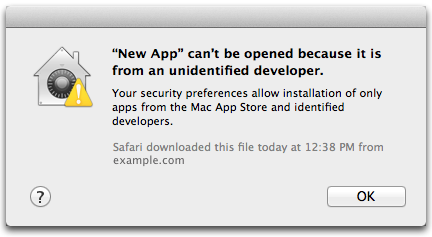
应用无法打开，因为它来自身份不明的开发者
If you are building an Electron app that you intend to package and distribute, it should be code signed. The Mac and Windows app stores do not allow unsigned apps.
签署 macOS 应用程序
在签署macOS应用程序前，你需要完成以下事项：
- 加入 Apple Developer Program(需要缴纳年费)
- 下载并安装 Xcode
- 生成，下载，然后安装签名证书（signing certificates）
你可以运用许多方式来签署你的应用：
- [
electron-osx-sign]，一个独立的macOS签名工具。 -
[
electron-packager] 打包electron-osx-sign. 如果你正在使用electron-packager，那么在签署包文件时请传--osx-sign=true参数。- [
electron-forge]，它在内部使用electron-packager，你可以在forge配置中设置osxSign配置项。
- [
- [
electron-builder] 内置代码签名功能。 可参考electron.build/code-signing
更多信息，参考Mac App Store Submission Guide.
签署windows应用程序
在签署Windows应用程序前，你需要完成以下事项：
- Get a Windows Authenticode code signing certificate (requires an annual fee)
- 安装Visual Studio 2015/2017(来获取签名功能)
You can get a code signing certificate from a lot of resellers. Prices vary, so it may be worth your time to shop around. Popular resellers include:
你可以运用许多方式来签署你的应用：
- [
electron-winstaller]，将会生成一个带有签名的windows安装包。 - [
electron-forge] 可以签署Squirrel.Windows 或MSI 类型的安装包 - [
electron-builder] 能签署一些windows安装包。
通用代码
- 用换行符结束文件。
-
按照如下顺序排列 node 模块的 require 代码
- 内置Node模块（如
path） - 内置Electron模块（如
ipc、app） - 本地模块（使用相对路径）
- 内置Node模块（如
-
按照如下顺序排列类的属性
- Class methods and properties (methods starting with a
@) - Instance methods and properties
- Class methods and properties (methods starting with a
-
避免与平台相关的代码：
- 使用
path.join()来组织文件路径。 - 请使用
os.tmpdir()而不是/tmp来引用临时目录。
- 使用
-
使用
return来明确的结束一个函数- 不是
return null，return undefined，null或undefined
- 不是
C + + 和 Python
对于 C++ 和 Python, 我们遵循 Chromium 的编码风格. 你可以使用 clang-format 来自动格式化 C++ 代码. 你可以使用 script/cpplint.py 来检验文件是否符合要求。
我们现在使用的 Python 版本是 Python 2.7。
C++ 代码使用了大量 Chromium 的抽象和类型，因此建议您熟悉它们。 一个起步的好地方是 Chromium 的 重要的抽象概念和数据库结构 文档. 该文档提到一些特殊类型，范围类型(超出范围时自动释放其内存), 记录机制等。
JavaScript
- 书写 标准 JavaScript 样式
- 文件名应使用
-连接而不是_, 例如.file-name.js而不是file_name.js, 因为在 github/atom中模块名通常是module-name形式. 此规则仅适用于.js文件。 -
酌情使用更新的 ES6 / ES2015 语法
const用于需要的和其他的常数let用于定义变量- Arrow functions 代替
function () { } - Template literals 而不是使用字符串连接符
+
命名相关
Electron API 使用与 Node.js 相同的大小写方案：
- 当模块本身是class时, 比如
BrowserWindow, 使用CamelCase. - 当模块是一组 API 时, 比如
globalShortcut时，使用mixedCase。 - 当 API 是对象的属性时, 并且它复杂到足以成为一个单独的块, 比如
win.webContents, 使用mixedCase. - 对于其他非模块API, 使用自然标题, 比如
<webview> Tag或Process Object.
当创建新的 API 时， 最好使用 getter 和 setter 而不是 jQuery 的一次性函数。 举个例子, .getText() 和 .setText(text) 优于 .text([text]). 这是一些相关的 讨论
contentTracing
从Chromium的内容模块收集跟踪数据，以查找性能瓶颈和缓慢的操作。
进程：主进程
该模块不包含网页接口，所以你需要在Chrome浏览器打开chrome://tracing/页面，然后加载生成的文件来查看结果。
注意：在应用程序模块的 ready 事件触发之前，您不应该使用此模块。
const { app, contentTracing } = require('electron')
app.on('ready', () => {
const options = {
categoryFilter: '*',
traceOptions: 'record-until-full,enable-sampling'
}
contentTracing.startRecording(options, () => {
console.log('Tracing started')
setTimeout(() => {
contentTracing.stopRecording('', (path) => {
console.log('Tracing data recorded to ' + path)
})
}, 5000)
})
})方法
contentTracing模块包含以下方法：
contentTracing.getCategories(callback)
-
callbackFunction - 回调函数categoriesString[]
Get a set of category groups. The category groups can change as new code paths are reached.
Once all child processes have acknowledged the getCategories request the callback is invoked with an array of category groups.
contentTracing.getCategories()
Returns Promise<String[]> - resolves with an array of category groups once all child processes have acknowledged the getCategories request
Get a set of category groups. The category groups can change as new code paths are reached.
contentTracing.startRecording(options, callback)
options(TraceCategoriesAndOptions | TraceConfig)callbackFunction
在所有进程上开始记录
一旦收到EnableRecording请求，记录立即在本地开始进行，并在子进程上异步执行。 一旦所有子进程都确认了startRecording请求，callback就会被调用。
contentTracing.startRecording(options)
options(TraceCategoriesAndOptions | TraceConfig)
Returns Promise<void> - resolved once all child processes have acknowledged the startRecording request.
在所有进程上开始记录
一旦收到EnableRecording请求，记录立即在本地开始进行，并在子进程上异步执行。
contentTracing.stopRecording(resultFilePath, callback)
resultFilePathString-
callbackFunctionresultFilePathString
停止所有进程记录。
子进程通常缓存跟踪数据，并且很少清空和发送跟踪数据回到主进程。 这有助于最小化运行时间开销，因为通过IPC发送跟踪数据可能是一个开销巨大的操作。 所以，为了结束跟踪，我们必须异步地要求所有子进程清空任何等待跟踪数据。
一旦所有子进程确认了 stopRecording请求，将传递包含跟踪数据的文件作为参数调用callback。
如果resultFilePath不为空，则跟踪数据会被写入该路径，否则就被写入一个临时文件。实际的文件路径如果不为null的话就被传递给callback函数了。
contentTracing.stopRecording(resultFilePath)
resultFilePathString
Returns Promise<String> - resolves with a file that contains the traced data once all child processes have acknowledged the stopRecording request
停止所有进程记录。
子进程通常缓存跟踪数据，并且很少清空和发送跟踪数据回到主进程。 这有助于最小化运行时间开销，因为通过IPC发送跟踪数据可能是一个开销巨大的操作。 所以，为了结束跟踪，我们必须异步地要求所有子进程清空任何等待跟踪数据。
Trace data will be written into resultFilePath if it is not empty or into a temporary file.
contentTracing.startMonitoring(options, callback)
-
callbackFunctionvalueNumberpercentageNumber
获取跟踪缓冲区进程的最大使用率，以百分比表示完整状态。当 TraceBufferUsage 值被确定后, 将调用 callback。
Cookie 对象
nameString - cookie 的名称。valueString - cookie 的值。domainString (可选) - cookie所在域名，通常使用点号开头，以使其对子域名可用。hostOnlyBoolean (可选) - cookie 是否仅匹配主机头；此项仅在未设置域名时才能为true。pathString (可选) - cookie 的路径。secureBoolean (可选) - cookie 是否标记为安全。httpOnlyBoolean (可选) - cookie 是否只标记为 HTTP。sessionBoolean (可选) - cookie是会话cookie 还是具有过期时间的持久性 cookieexpirationDateDouble (可选) - cookie 距离 UNIX 时间戳的过期时间，数值为秒。不需要提供给 session cookies。
Cookies
查询和修改一个会话的cookies
线程：主线程
通过Session的cookies属性来访问Cookies的实例
例如：
const { session } = require('electron')
// Query all cookies.
session.defaultSession.cookies.get({})
.then((cookies) => {
console.log(cookies)
}).catch((error) => {
console.log(error)
})
// Query all cookies associated with a specific url.
session.defaultSession.cookies.get({ url: 'http://www.github.com' })
.then((cookies) => {
console.log(cookies)
}).catch((error) => {
console.log(error)
})
// Set a cookie with the given cookie data;
// may overwrite equivalent cookies if they exist.
const cookie = { url: 'http://www.github.com', name: 'dummy_name', value: 'dummy' }
session.defaultSession.cookies.set(cookie)
.then(() => {
// success
}, (error) => {
console.error(error)
})实例事件
以下事件会在Cookies实例触发。
Event: 'changed'
eventEventcookieCookie - 变更后的 cookie 值。-
causeString - cookie 值变动的原因，该变量可能的值为：explicit- cookie 是由消费者的操作直接更改的。overwrite- 一个覆盖原值的插入操作导致的 cookie 被自动删除。expired- cookie 在过期时自动删除。evicted- 在GC（垃圾回收机制）过程中被回收。expired-overwrite- 一个已过期的时间覆写了原cookie 的过期时间。
removedBoolean -true表示cookie 已被删掉, 否则为false.
该事件在cookie 被添加、修改、删除或过期时触发。
实例方法
以下方法可以在Cookies实例调用。
cookies.get(filter)
-
过滤Object - 过滤器对象，包含过滤参数urlString (可选) - 检索与url关联的 cookie。空意味着检索所有 url 的 cookie。nameString (可选) - 按名称筛选 cookie。domainString (optional) - 检索与域名或者domain子域名匹配的cookie。pathString (可选) - 检索路径与path匹配的 cookie。secureBoolean (可选) - 通过其Secure 属性筛选 cookie。sessionBoolean (可选) - 筛选出session 内可用或持久性 cookie。
Returns Promise<Cookie[]> - A promise which resolves an array of cookie objects.
Sends a request to get all cookies matching filter, and resolves a promise with the response.
cookies.get(filter, callback)
-
过滤ObjecturlString (可选) - 检索与url关联的 cookie。空意味着检索所有 url 的 cookie。nameString (可选) - 按名称筛选 cookie。domainString (optional) - 检索与域名或者domain子域名匹配的cookie。pathString (可选) - 检索路径与path匹配的 cookie。secureBoolean (可选) - 通过其Secure 属性筛选 cookie。sessionBoolean (可选) - 筛选出session 内可用或持久性 cookie。
-
callbackFunction - 回调函数errorErrorcookiesCookie[] - 返回的cookie 对象数组.
发送一个请求获取所有匹配 filter 对象条件的cookie，回调函数将在请求结束后以 callback(error, cookies) 的形式被调用。
cookies.set(details)
-
detailsObjecturlString - 与 cookie 关联的 url。nameString (可选) - cookie 名称。如果省略, 则默认为空。valueString (可选) - cookie 值。如果省略, 则默认为空。domainString (可选) - cookie所在域名，通常使用点号开头，以使其对子域名可用。未指定时默认为空。pathString (可选) - cookie 的路径。如果省略, 则默认为空。secureBoolean (可选) - 是否将 cookie 标记为Secure。默认为 false。httpOnlyBoolean (可选) - 是否只将 cookie 标记为 只允许HTTP 访问。默认为 false。expirationDateDouble (可选) - cookie 的到期日期，类型为时间戳，单位为秒。 如果省略, 则 cookie 将成为会话 cookie, 并且不会在会话之间保留。
Returns Promise<void> - A promise which resolves when the cookie has been set
Sets a cookie with details.
cookies.set(details, callback)
-
detailsObjecturlString - 与 cookie 关联的 url。nameString (可选) - cookie 名称。如果省略, 则默认为空。valueString (可选) - cookie 值。如果省略, 则默认为空。domainString (可选) - cookie 的域名。如果省略, 则默认为空。pathString (可选) - cookie 的路径。如果省略, 则默认为空。secureBoolean (可选) - 是否将 cookie 标记为Secure。默认为 false。httpOnlyBoolean (可选) - 是否只将 cookie 标记为 只允许HTTP 访问。默认为 false。expirationDateDouble (可选) - cookie 的到期日期，类型为时间戳，单位为秒。 如果省略, 则 cookie 将成为会话 cookie, 并且不会在会话之间保留。
-
callbackFunctionerrorError
设置一个以details对象为模型的cookie，回调函数将在设置执行后以callback(error)形式被调用。
cookies.remove(url, name)
urlString - 与 cookie 关联的 URL。nameString - cookie 名称。
Returns Promise<void> - A promise which resolves when the cookie has been removed
Removes the cookies matching url and name
cookies.remove(url, name, callback)
urlString - 与 cookie 关联的 URL。nameString - cookie 名称。callbackFunction
删除与 url 和 name 相匹配的 cookie, 回调函数将在执行完成时被调用。
cookies.flushStore()
Returns Promise<void> - A promise which resolves when the cookie store has been flushed
写入所有未写入磁盘的 cookie。
CPUUsage 对象
percentCPUUsage自上次调用 getCPUUsage 以来使用的 CPU 百分比。第一次调用返回0。idleWakeupsPerSecond数字-自上次调用 getCPUUsage 以来, 每秒平均空闲 cpu wakeups 数。第一次调用返回0。将总是在窗口返回0。
崩溃报告对象
- 日期 字符串
idString
崩溃日志报告
将崩溃日志提交给远程服务器
以下是一个自动提交崩溃日志到服务器的示例
const { crashReporter } = require('electron')
crashReporter.start({
productName: 'YourName',
companyName: 'YourCompany',
submitURL: 'https://your-domain.com/url-to-submit',
uploadToServer: true
})构建一个用于接受和处理崩溃日志的服务，你需要以下工程
Or use a 3rd party hosted solution:
崩溃日志被保存在本地的应用特有的临时文件夹中。 对于YourName对象中的productName，崩溃报日志将被储存在临时文件夹中名为YourName Crashes的文件文件夹中。 在启动崩溃报告器之前，您可以通过调用app.setPath('temp', 'my/custom/temp') API来自定义这些临时文件的保存路径
方法
crashReporter 模块具有以下方法:
crashReporter.start(options)
-
optionsObjectcompanyNameStringsubmitURL字符串 - 崩溃日志将以POST的方式发送给此URL.productName字符串(可选) - 默认为app.getName().uploadToServer布尔型(可选) - 控制是否将崩溃日志发送给服务器，默认为true.ignoreSystemCrashHandler布尔型(可选) - 默认为false.extra对象(可选) - 一个随崩溃日志发送的对象. 只有字符串属性能够被正确发送. 不支持发送嵌套对象，且属性名称和属性值必须小于64个字符长度.crashesDirectoryString (可选)-用于临时存储 crashreports 的目录 (仅在崩溃报告器通过process.crashReporter.start启动时使用).
你需要调用任何其他的crashReporter API，您必须调用此方法. 在每个需要收集崩溃日志的进程 (主进程 / 渲染器进程) 中，也必须先调用此方法. 从不同的进程调用时, 可以传不同的配置给 crashReporter. start。
注意 由 child_process 模块创建的子进程将无法访问 Electron 模块。 因此, 要收集它们的故障报告, 请用 process.crashReporter.start代替。 传递与上面相同的选项以及一个名为 crashesDirectory 的附加项, 它应指向一个目录, 以便临时存储崩溃报告。 你可以调用 process.crash() 使子进程崩溃，来测试结果。
注意: 要从 Windows 中的子进程收集崩溃报告, 您也需要添加这样额外的代码。 这将启动一个进程来监视和发送崩溃报告。 用适当的值去替换 submitURL、productName 和 crashesDirectory。
注意: ，如果您在第一次调用 start 后需要发送 附加的/更新的 extra 参数, 在 macOS 上，你可以调用 addExtraParameter。而在 Linux 和 Windows 上，则使用 新的/更新的 extra 参数，再次调用 start即可。
const args = [
`--reporter-url=${submitURL}`,
`--application-name=${productName}`,
`--crashes-directory=${crashesDirectory}`
]
const env = {
ELECTRON_INTERNAL_CRASH_SERVICE: 1
}
spawn(process.execPath, args, {
env: env,
detached: true
})注意：在macOS上，Electron使用一个crashpad客户端来收集并报告崩溃信息。 如果要启用崩溃报告，则需要在主进程使用crashReporter.start初始化crashpad， 不管你想收集哪个进程的报告。 使用这种方式初始化后，crashpad将处理从所有进程收集的崩溃报告。 你仍然需要从渲染器进程或子进程中调用crashReporter.start ，否则崩溃报告将不包含companyName, productName和任何extra信息。
crashReporter.getLastCrashReport()
返回 CrashReport:
Returns the date and ID of the last crash report. Only crash reports that have been uploaded will be returned; even if a crash report is present on disk it will not be returned until it is uploaded. In the case that there are no uploaded reports, null is returned.
crashReporter.getUploadToServer() Linux macOS
返回 Boolean - 是否已将报告提交到服务器。通过start 方法或 setUploadToServer设置。
注意： 这个API仅可从主进程调用。
crashReporter.setUploadToServer(uploadToServer) Linux macOS
uploadToServerBoolean macOS - 是否将报告提交到服务器.
通常, 是否提交是由用户对系统进行偏好设置而决定的。不能在 start 之前调用该方法，否则无效.
注意： 这个API仅可从主进程调用。
crashReporter.addExtraParameter(key, value) macOS
keyString - 参数键，长度必须小于64个字符valueString - 参数值, 长度必须小于64个字符
设置一个在发送崩溃报告时将额外包含的参数。 当调用 start 时, 除了通过 extra 选项设置的值之外, 此处指定值也将被发送。 此 API 仅在 macOS 上可用, start 首次调用后, 如果您希望在在 Linux 和 Windows 上添加或更新额外参数, 您可以更新 extra 选项并再次调用 start 。
crashReporter.removeExtraParameter(key) macOS
keyString - 参数键，长度必须小于64个字符
从当前设定的参数中移除一个额外的参数, 以便它不会与崩溃报告一起发送。
crashReporter.getParameters()
查看传递给崩溃报告的所有当前参数。
崩溃报告内容
崩溃报告将发送下面 multipart/form-data POST 型的数据给 submitURL:
verString - Electron 的版本.platformString - 例如 'win32'.process_typeString - 例如 'renderer'.guidString - 例如 '5e1286fc-da97-479e-918b-6bfb0c3d1c72'._versionString -package.json里的版本号._productNameString -crashReporteroptions对象中的产品名字prodString - 基础产品名字. 在这种情况下为 Electron._companyNameString -crashReporteroptions对象中的公司名称upload_file_minidumpFile -minidump格式的崩溃报告- All level one properties of the
extraobject in thecrashReporteroptionsobject.
CustomScheme Object
schemeString - Custom schemes to be registered with options.-
privilegesObject (可选)standardBoolean (optional) - Default false.secureBoolean (optional) - Default false.bypassCSPBoolean (optional) - Default false.allowServiceWorkersBoolean (optional) - Default false.supportFetchAPIBoolean (optional) - Default false.corsEnabledBoolean (optional) - Default false.
在 Windows 中调试
如果你在 Electron 中遇到问题或者引起崩溃，你认为它不是由你的JavaScript应用程序引起的，而是由 Electron 本身引起的。调试可能有点棘手，特别是对于不习惯 native/C++ 调试的开发人员。 然而，使用 Visual Studio，GitHub托管的 Electron Symbol Server 和Electron 源代码，在 Electron 的源代码中启用断点调试是相当容易的。
See also: There's a wealth of information on debugging Chromium, much of which also applies to Electron, on the Chromium developers site: Debugging Chromium on Windows.
要求
-
Electron 的调试版本: 最简单的方法是自己构建它，使用 Windows 的构建说明中列出的工具和先决条件要求。 While you can attach to and debug Electron as you can download it directly, you will find that it is heavily optimized, making debugging substantially more difficult: The debugger will not be able to show you the content of all variables and the execution path can seem strange because of inlining, tail calls, and other compiler optimizations.
-
Visual Studio 与 C++ 工具: Visual Studio 2013 和 Visual Studio 2015 的免费社区版本都可以使用。 安装之后, 配置 Visual Studio 使用 GitHub 的 Electron Symbol 服务器. 它将使 Visual Studio 能够更好地理解 Electron 中发生的事情，从而更容易以人类可读的格式呈现变量。
-
ProcMon: 免费的 SysInternals 工具允许您检查进程参数，文件句柄和注册表操作。
附加并调试 Electron
要启动调试会话，请打开 PowerShell/CMD 并执行 Electron 的调试版本，使用应用程序作为参数打开。
$ ./out/Debug/electron.exe ~/my-electron-app/设置断点
然后，打开 Visual Studio。 Electron 不是使用 Visual Studio 构建的，因此不包含项目文件 - 但是您可以打开源代码文件 "As File"，这意味着 Visual Studio 将自己打开它们。 您仍然可以设置断点 - Visual Studio 将自动确定源代码与附加过程中运行的代码相匹配，并相应地中断。
Relevant code files can be found in ./atom/.
附加
您可以将 Visual Studio 调试器附加到本地或远程计算机上正在运行的进程。 进程运行后，单击 调试 / 附加 到进程(或按下 CTRL+ALT+P) 打开“附加到进程”对话框。 您可以使用此功能调试在本地或远程计算机上运行的应用程序，同时调试多个进程。
如果Electron在不同的用户帐户下运行，请选中 显示所有用户的进程 复选框。 请注意，根据您的应用程序打开的浏览器窗口数量，您将看到多个进程。 典型的单窗口应用程序将导致 Visual Studio 向您提供两个 Electron.exe 条目 - 一个用于主进程，一个用于渲染器进程。 因为列表只给你的名字，目前没有可靠的方法来弄清楚哪个是。
我应该附加哪个进程?
在主进程内部执行的代码(即在主 JavaScript 文件中找到或最终运行的代码)以及使用远程代码调用的代码(require('electron').remote)将在主进程内运行，而其他代码将在其相应的渲染器进程内执行。
您可以在调试时附加到多个程序，但在任何时候只有一个程序在调试器中处于活动状态。 您可以在 调试位置 工具栏或 进程窗口 中设置活动程序。
使用 ProcMon 观察进程
虽然 Visual Studio 非常适合检查特定的代码路径，但 ProcMon 的优势在于它可以监视应用程序对操作系统的所有操作 - 捕获进程的文件，注册表，网络，进程和分析详细信息。 它试图记录发生的 所有 事件，并且可能是相当压倒性的，而且果你想了解你的应用程序对操作系统做什么和如何做，它则是一个很有价值的资源。
有关 ProcMon 的基本和高级调试功能的介绍，请查看Microsoft提供的 视频教程.
类: Debugger
用于 Chrome 远程调试协议的备用传输。
进程：主进程
Chrome Developer Tools 在 JavaScript 运行时提供了一个 special binding , 允许与页面进行交互和检测。
const { BrowserWindow } = require('electron')
let win = new BrowserWindow()
try {
win.webContents.debugger.attach('1.1')
} catch (err) {
console.log('Debugger attach failed : ', err)
}
win.webContents.debugger.on('detach', (event, reason) => {
console.log('Debugger detached due to : ', reason)
})
win.webContents.debugger.on('message', (event, method, params) => {
if (method === 'Network.requestWillBeSent') {
if (params.request.url === 'https://www.github.com') {
win.webContents.debugger.detach()
}
}
})
win.webContents.debugger.sendCommand('Network.enable')debugger.attach([protocolVersion])
protocolVersionString (optional) - 需要调试的协议的版本
添加调试器到 webContents 。
debugger.isAttached()
Returns Boolean - 表示调试器是否成功添加到 webContents 。
debugger.detach()
从 webContents 里分离调试器.
debugger.sendCommand(method[, commandParams, callback])
methodString - Method name, should be one of the methods defined by the remote debugging protocol.commandParamsObject (可选) - 具有请求参数的 JSON 对象。-
callbackFunction (可选) - 响应方法errorObject - 显示命令失败的错误消息。resultAny - 由远程调试协议中的命令描述的“returns”属性定义的响应。
向调试目标发送给定的命令。
debugger.sendCommand(method[, commandParams])
methodString - Method name, should be one of the methods defined by the remote debugging protocol.commandParamsObject (可选) - 具有请求参数的 JSON 对象。
Returns Promise<any> - A promise that resolves with the response defined by the 'returns' attribute of the command description in the remote debugging protocol or is rejected indicating the failure of the command.
向调试目标发送给定的命令。
Event: 'detach'
eventEventreasonString - 分离调试器的原因
在调试会话终止时发出。当关闭 webContents 或 the attached webContents 调用 devtools 时, 都会发生这种情况。
Event: 'message'
eventEventmethodString - 方法名.paramsObject - 由远程调试协议中的 parameters 属性定义的事件参数。
当调试目标问题时发送
在 macOS 中调试
如果你在 Electron 中遇到问题或者引起崩溃，你认为它不是由你的JavaScript应用程序引起的，而是由 Electron 本身引起的。调试可能有点棘手，特别是对于不习惯 native/C++ 调试的开发人员。 然而，使用 lldb 和 Electron 源代码，可以在 Electron 的源代码中使用断点启用逐步调试。 如果您希望用图形界面的开发工具，也可以使用XCode for debugging。
要求
-
Electron 的调试版本: 最简单的方法是自己构建它，使用 macOS 的构建说明 中列出的工具和先决条件要求。 While you can attach to and debug Electron as you can download it directly, you will find that it is heavily optimized, making debugging substantially more difficult: The debugger will not be able to show you the content of all variables and the execution path can seem strange because of inlining, tail calls, and other compiler optimizations.
-
Xcode: 除了 Xcode，还安装 Xcode 命令行工具. 它们包括 LLDB，在 Mac OS X 的 Xcode 中的默认调试器。它支持在桌面和iOS设备和模拟器上调试 C，Objective-C 和 C++。
附加并调试 Electron
要启动调试会话，打开命令行并启动 lldb ，并传递一个调试版本的 Electron 作为参数。
$ lldb ./out/Debug/Electron.app
(lldb) target create "./out/Debug/Electron.app"
Current executable set to './out/Debug/Electron.app' (x86_64).设置断点
LLDB是一个强大的工具，支持进行多种策略的代码检查。 在这做一个基本的介绍，让我们假设你从 JavaScript 调用一个不正常的命令 - 所以你想打断该命令的 C++ 对应的 Electron 源。
Relevant code files can be found in ./atom/.
让我们假设你想调试 app.setName(), 在 browser.cc 中定义为 Browser::SetName(). 使用 breakpoint 命令进行断点，指定文件和断点位置:
(lldb) breakpoint set --file browser.cc --line 117
Breakpoint 1: where = Electron Framework`atom::Browser::SetName(std::__1::basic_string<char, std::__1::char_traits<char>, std::__1::allocator<char> > const&) + 20 at browser.cc:118, address = 0x000000000015fdb4然后, 启动 Electron:
(lldb) run应用程式会立即暂停，因为 Electron 会在启动时设定应用程序名称:
(lldb) run
Process 25244 launched: '/Users/fr/Code/electron/out/Debug/Electron.app/Contents/MacOS/Electron' (x86_64)
Process 25244 stopped
* thread #1: tid = 0x839a4c, 0x0000000100162db4 Electron Framework`atom::Browser::SetName(this=0x0000000108b14f20, name="Electron") + 20 at browser.cc:118, queue = 'com.apple.main-thread', stop reason = breakpoint 1.1
frame #0: 0x0000000100162db4 Electron Framework`atom::Browser::SetName(this=0x0000000108b14f20, name="Electron") + 20 at browser.cc:118
115 }
116
117 void Browser::SetName(const std::string& name) {
-> 118 name_override_ = name;
119 }
120
121 int Browser::GetBadgeCount() {
(lldb)显示当前帧的参数和局部变量, 运行 frame variable (或 fr v), 这将显示你的应用程序当前设置名称为 “Electron”.
(lldb) frame variable
(atom::Browser *) this = 0x0000000108b14f20
(const string &) name = "Electron": {
[...]
}在当前选择的线程中执行源级单步执行, 执行 step (或 s). 这将带你进入 name_override_.empty()。 继续前进，步过，运行 next (或 n).
(lldb) step
Process 25244 stopped
* thread #1: tid = 0x839a4c, 0x0000000100162dcc Electron Framework`atom::Browser::SetName(this=0x0000000108b14f20, name="Electron") + 44 at browser.cc:119, queue = 'com.apple.main-thread', stop reason = step in
frame #0: 0x0000000100162dcc Electron Framework`atom::Browser::SetName(this=0x0000000108b14f20, name="Electron") + 44 at browser.cc:119
116
117 void Browser::SetName(const std::string& name) {
118 name_override_ = name;
-> 119 }
120
121 int Browser::GetBadgeCount() {
122 return badge_count_;要完成此时的调试，运行 process continue。 你也可以继续，直到这个线程中的某一行被命中(线程直到100)。 此命令将在当前帧中运行线程，直到它到达此帧中的行100，或者如果它离开当前帧，则停止。
现在，如果你打开 Electron 的开发工具并调用 setName，你将再次命中断点。
进一步阅读
LLDB是一个强大的工具，有一个庞大的文档。 要了解更多信息，请参考 Apple 的调试文档, 例如 LLDB Command Structure Reference 或 Using LLDB as a Standalone Debugger.
你也可以查看LLDB的 manual and tutorial 这将解释更复杂的调试场景.
为调试源代码生成Xcode项目（无法从Xcode构建代码）
Run gn gen with the --ide=xcode argument.
$ gn gen out/Debug --ide=xcodeThis will generate the electron.ninja.xcworkspace. You will have to open this workspace to set breakpoints and inspect.
See gn help gen for more information on generating IDE projects with GN.
调试与断点
Launch Electron app after build. You can now open the xcode workspace created above and attach to the Electron process through the Debug > Attach To Process > Electron debug menu. [Note: If you want to debug the renderer process, you need to attach to the Electron Helper as well.]
You can now set breakpoints in any of the indexed files. However, you will not be able to set breakpoints directly in the Chromium source. To set break points in the Chromium source, you can choose Debug > Breakpoints > Create Symbolic Breakpoint and set any function name as the symbol. This will set the breakpoint for all functions with that name, from all the classes if there are more than one. You can also do this step of setting break points prior to attaching the debugger, however, actual breakpoints for symbolic breakpoint functions may not show up until the debugger is attached to the app.
调试主进程
Electron 浏览器窗口中的 DevTools 只能调试 在该窗口中执行的 JavaScript (即 web 页面) 。 为了提供一个可以调试主进程的方法，Electron 提供了 --inspect 和 --inspect-brk 开关。
命令行开关
使用如下的命令行开关来调试 Electron 的主进程：
--inspect=[port]
当这个开关用于 Electron 时，它将会监听 V8 引擎中有关 port 的调试器协议信息。 默认的port 是 5858
electron --inspect=5858 your/app--inspect-brk=[port]
和--inspector 一样，但是会在JavaScript 脚本的第一行暂停运行。
外部调试器
你需要使用一个支持 V8 调试协议的调试器
- 通过访问
chrome://inspect来连接 Chrome 并在那里选择需要检查的Electron 应用程序。 - 使用 VSCode 进行主进程调试
1.在 VSCode 中打开一个 Electron 项目。
$ git clone git@github.com:electron/electron-quick-start.git
$ code electron-quick-start2.添加一个 .vscode/launch.json 文件并使用以下配置：
{
"version": "0.2.0",
"configurations": [
{
"name": "Debug Main Process",
"type": "node",
"request": "launch",
"cwd": "${workspaceRoot}",
"runtimeExecutable": "${workspaceRoot}/node_modules/.bin/electron",
"windows": {
"runtimeExecutable": "${workspaceRoot}/node_modules/.bin/electron.cmd"
},
"args" : ["."],
"outputCapture": "std"
}
]
}3. 调试
在 main.js中设置一些断点，并在 Debug 视图 中开始调试。你应该能够捕获断点信息。
这是一个预先配置的项目，你可以下载并直接在 VSCode中调试: github.com/octref/vscode-electron-debug/tree/master/electron-quick-start
desktopCapturer
通过[
navigator.mediaDevices.getUserMedia] API ，可以访问那些用于从桌面上捕获音频和视频的媒体源信息。
进程: Renderer
下面的示例演示如何从标题为 Electron 的桌面窗口捕获视频:
// In the renderer process.
const { desktopCapturer } = require('electron')
desktopCapturer.getSources({ types: ['window', 'screen'] }).then(async sources => {
for (const source of sources) {
if (source.name === 'Electron') {
try {
const stream = await navigator.mediaDevices.getUserMedia({
audio: false,
video: {
mandatory: {
chromeMediaSource: 'desktop',
chromeMediaSourceId: source.id,
minWidth: 1280,
maxWidth: 1280,
minHeight: 720,
maxHeight: 720
}
}
})
handleStream(stream)
} catch (e) {
handleError(e)
}
return
}
}
})
function handleStream (stream) {
const video = document.querySelector('video')
video.srcObject = stream
video.onloadedmetadata = (e) => video.play()
}
function handleError (e) {
console.log(e)
}若要从 desktopCapturer 提供的源捕获视频, 则传递给 [navigator.mediaDevices.getUserMedia] 的约束必须包括 chromeMediaSource: "desktop" 和 audio: false。
要从整个桌面同时捕获音频和视频, 传递给 [navigator.mediaDevices.getUserMedia] 的约束必须包括 chromeMediaSource: ' desktop ', 同时用于 audio 和 video, 但不应包括 chromeMediaSourceId 约束。
const constraints = {
audio: {
mandatory: {
chromeMediaSource: 'desktop'
}
},
video: {
mandatory: {
chromeMediaSource: 'desktop'
}
}
}方法
desktopCapturer 模块有以下方法:
desktopCapturer.getSources(options, callback)
-
options对象typesString[]-列出要捕获的桌面源类型的字符串数组, 可用类型为screen和window。thumbnailSizeSize (可选)-媒体源缩略图应缩放到的大小。默认值为150x150。fetchWindowIconsBoolean (optional) - Set to true to enable fetching window icons. The default value is false. When false the appIcon property of the sources return null. Same if a source has the type screen.
-
callbackFunction - 回调函数errorErrorsourcesDesktopCapturerSource[]
开始收集所有有效桌面媒体源的信息，当结束时将调用 callback(error, sources)
sources 是 DesktopCapturerSource对象数组, 每个DesktopCapturerSource 代表一个屏幕或一个可捕获的独立窗口。
desktopCapturer.getSources(options)
-
optionsObject - 过滤器对象，包含过滤参数typesString[]-列出要捕获的桌面源类型的字符串数组, 可用类型为screen和window。thumbnailSizeSize (可选)-媒体源缩略图应缩放到的大小。默认值为150x150。fetchWindowIconsBoolean (optional) - Set to true to enable fetching window icons. The default value is false. When false the appIcon property of the sources return null. Same if a source has the type screen.
Returns Promise<DesktopCapturerSource[]> - Resolves with an array of DesktopCapturerSource objects, each DesktopCapturerSource represents a screen or an individual window that can be captured.
Caveats
navigator.mediaDevices.getUserMedia does not work on macOS for audio capture due to a fundamental limitation whereby apps that want to access the system's audio require a signed kernel extension. Chromium, and by extension Electron, does not provide this.
It is possible to circumvent this limitation by capturing system audio with another macOS app like Soundflower and passing it through a virtual audio input device. This virtual device can then be queried with navigator.mediaDevices.getUserMedia.
DesktopCapturerSource 对象
id字符串类型 - 在调用 [navigator. webkitGetUserMedia] 时可用作chromeMediaSourceId约束的window或screen的标识符。 标识符的格式是：window:XX或者screen:XX，XX是一个随机生成的数字name字符串--screen源将被命名为Entire Screen或Screen<index>, 而window源的名称将与window标题匹配。thumbnailNativeImage - 缩略图图像。 注意: 无法保证缩略图的大小与传递给desktopCapturer. getSources的options中指定的thumbnailSize相同。 实际大小取决于screen或window的比例。display_id字符串类型 - 与对应 Display 的id相同的唯一标识，Display由 Screen API 返回。 在某些平台中，与id域中的XX部分相等，其他平台中则不同。 如果不可用，它将是一个空字符串。appIconNativeImage - An icon image of the application that owns the window or null if the source has a type screen. The size of the icon is not known in advance and depends on what the the application provides.
桌面环境集成
不同的操作系统为桌面应用集成到各自的桌面环境中提供了不同的特性支持。 例如，在 windows 系统下，应用程序可以将一些快捷方式放置在任务栏的跳转列表上，而在 Mac 上，应用程序可以把自定义菜单放在dock菜单上。
本章将会说明怎样使用 Electron APIs 把你的应用集成到桌面环境中。
开发环境
你可以使用原生的Node.js开发环境来开发Electron应用。 为了打造一个Electron桌面程序的开发环境，你只需要安装好的Node.js、npm、一个顺手的代码编辑器以及对你的操作系统命令行客户端的基本了解。
macOS 开发环境配置
Electron支持 macOS 10.10 (Yosemite) 及以上版本. 目前Apple不允许在非Apple电脑上运行macOS虚拟机，所以，如果你需要一台Mac的话，可以考虑租用Mac云服务（比如MacInCloud或者 xcloud）。
首先，安装最新版本的Node.js 。 我们推荐您安装最新的 长期支持版本 或者 当前发行版本 。 访问Node.js下载页面选择 macOS Installer 。 当然，你也可以使用Homebrew安装Node.js，但我们不推荐你这么做，因为许多工具并不兼容Homebrew安装Node.js的方式。
下载完成后， 执行安装程序，根据引导完成安装即可。
安装完成后，我们需要来确认Node.js是不是可以正常工作。 在/Applications/Utilities文件夹中找到macOS的Terminal 程序(或者直接使用Spotlight直接搜索关键词Terminal) 。 打开Terminal或其他你喜欢的命令行客户端后，通过以下命令来确认 node 和 npm已经安装成功：
# 下面这行的命令会打印出Node.js的版本信息
node -v
# 下面这行的命令会打印出npm的版本信息
npm -v如果上述命令均打印出一个版本号，就说明Node.js已经安装好了！ 然后，你只需要安装一个适合JavaScript开发的代码编辑器就可以开始开发工作了。
Windows 开发环境配置
Electron 支持Windows 7 及以上版本---任何在低版本Windows上开发Electron的尝试都将是徒劳无功的。 您可以使用微软向开发者免费提供的Windows 10虚拟机镜像。
首先，安装最新版本的Node.js 。 我们推荐您安装最新的 长期支持版本 或者 当前发行版本 。 访问Node.js下载页面，选择Windows Installer。 下载完成后， 执行安装程序，根据引导完成安装即可。
在安装过程中的配置界面, 请勾选Node.js runtime、npm package manager和Add to PATH这三个选项。
安装完成后，我们需要来确认Node.js是不是可以正常工作。 点击 开始 按钮，输入PowerShell，找到Windows PowerShell。 打开PowerShell或其他你喜欢的命令行客户端后，通过以下命令来确认 node 和 npm已经安装成功：
# 下面这行的命令会打印出Node.js的版本信息
node -v
# 下面这行的命令会打印出npm的版本信息
npm -v如果上述命令均打印出一个版本号，就说明Node.js已经安装好了！ 然后，你只需要安装一个适合JavaScript开发的代码编辑器就可以开始开发工作了。
Linux 开发环境配置
一般来说，Electron支持Ubuntu 12.04、Fedora 21、Debian 8 及其以上版本。
首先，安装最新版本的Node.js 。 对于不同linux分支，安装步骤会有所差异。 假如你使用系统自带的包管理器，比如： apt 或者 pacman，请使用Node.js 官方Linux安装指引。
作为一个Linux用户，关于命令行的使用就无需我赘述了。 打开你喜欢的命令行工具，通过以下命令来确认node 和 npm 在全局可用：
# 下面这行的命令会打印出Node.js的版本信息
node -v
# 下面这行的命令会打印出npm的版本信息
npm -v如果上述命令均打印出一个版本号，就说明Node.js已经安装好了！ 然后，你只需要安装一个适合JavaScript开发的代码编辑器就可以开始开发工作了。
合适的代码编辑器
我们建议你使用GitHub 的 Atom 或者微软的 Visual Studio Code，这两款当下热门的编辑器都是使用Electron开发的。 而且对JavaScript的支持也都很棒。
如果您是众多开发人员中的一员，您应知道几乎所有的代码编辑器和IDE都是支持JavaScript的。
开发工具扩展程序
Electron支持Chrome DevTools 扩展程序，可增强开发工具调试流行web框架的能力
如何加载一个 DevTools 扩展程序
本文简要描述了手动加载一个扩展程序的过程 你也可以尝试一下electron-devtools-installer，这个第三方工具可以直接从Chrome的WebStore下载扩展程序
为了在Electron中加载一个扩展程序，你需要在Chrome浏览器中下载它，找到它在系统目录中位置，然后调用BrowserWindow.addDevToolsExtension(extension)API 加载它
下面以React Developer Tools为例：
-
在 Chrome 中安装React Developer Tools 。
-
打开
chrome://extensions，找到扩展程序的ID，形如fmkadmapgofadopljbjfkapdkoienihi的hash字符串。 -
找到Chrome 扩展程序 的存放目录：
- 在Ｗindows 下为
%LOCALAPPDATA%\Google\Chrome\User Data\Default\Extensions; -
在 Linux下为：
~/.config/google-chrome/Default/Extensions/~/.config/google-chrome-beta/Default/Extensions/~/.config/google-chrome-canary/Default/Extensions/~/.config/chromium/Default/Extensions/
- 在 macOS下为
~/Library/Application Support/Google/Chrome/Default/Extensions。
- 在Ｗindows 下为
-
Pass the location of the extension to
BrowserWindow.addDevToolsExtensionAPI, for the React Developer Tools, it is something like:const path = require('path') const os = require('os') BrowserWindow.addDevToolsExtension( path.join(os.homedir(), '/Library/Application Support/Google/Chrome/Default/Extensions/fmkadmapgofadopljbjfkapdkoienihi/0.15.0_0') )
注意：只有在app模块的ready事件触发之后，才可以调用BrowserWindow.addDevToolsExtension API
BrowserWindow.addDevToolsExtension将会返回扩展的名字，你可以把这个名字传入BrowserWindow.removeDevToolsExtensionAPI来卸载它。
支持的 DevTools 扩展程序
Electron 只支持有限的chrome.* API，所以，一些扩展程序如果使用了不支持的chrome.* API，它可能会无法正常工作。 以下 DevTools 扩展程序已经通过测试，可以在Electron中正常工作：
如果 DevTools 扩展不工作, 我该怎么办？
首先请确保扩展仍在维护中, 有些扩展甚至不支持 Chrome 浏览器的最新版本, 对此我们也无能为力。
然后在Electron的问题列表中提交一个 bug, 并描述扩展程序的哪个部分没有按预期的方式工作。
对话框
显示用于打开和保存文件、警报等的本机系统对话框。
线程：主线程
显示用于选择多个文件和目录的对话框的示例:
const { dialog } = require('electron')
console.log(dialog.showOpenDialog({ properties: ['openFile', 'openDirectory', 'multiSelections'] }))这个对话框是从Electron的主线程上打开的。如果要使用渲染器进程中的对话框对象, 可以使用remote来获得:
const { dialog } = require('electron').remote
console.log(dialog)方法
dialog 模块具有以下方法:
dialog.showOpenDialog([browserWindow, ]options[, callback])
browserWindowBrowserWindow (可选)-
选项ObjecttitleString (可选)defaultPathString (可选)buttonLabelString (可选) - 「确认」按钮的自定义标签, 当为空时, 将使用默认标签。filtersFileFilter[] (可选)-
propertiesString -包含对话框应用的功能。支持以下值:openFile- 允许选择文件openDirectory- 允许选择文件夹multiSelections-允许多选。showHiddenFiles-显示对话框中的隐藏文件。createDirectorymacOS -允许你通过对话框的形式创建新的目录。promptToCreateWindows-如果输入的文件路径在对话框中不存在, 则提示创建。 这并不是真的在路径上创建一个文件，而是允许返回一些不存在的地址交由应用程序去创建。noResolveAliasesmacOS -禁用自动别名 (symlink) 路径解析。 选定的别名现在将返回别名路径而不是其目标路径。treatPackageAsDirectorymacOS -将包 (如.app文件夹) 视为目录而不是文件。
messageString (可选) macOS -显示在输入框上方的消息。securityScopedBookmarksBoolean (可选) masOS mas - 在打包提交到Mac App Store时创建 security scoped bookmarks
-
callbackFunction (可选)
Returns String[] | undefined, an array of file paths chosen by the user, if the callback is provided it returns undefined.
browserWindow 参数允许该对话框将自身附加到父窗口, 作为父窗口的模态框。
filters 指定一个文件类型数组，用于规定用户可见或可选的特定类型范围。例如:
{
filters: [
{ name: 'Images', extensions: ['jpg', 'png', 'gif'] },
{ name: 'Movies', extensions: ['mkv', 'avi', 'mp4'] },
{ name: 'Custom File Type', extensions: ['as'] },
{ name: 'All Files', extensions: ['*'] }
]
}extensions 数组应为没有通配符或点的扩展名 (例如, "png" 是正确的, 而 ".png" 和 *. png " 就是错误的)。 若要显示所有文件, 请使用 "*" 通配符 (不支持其他通配符)。
如果定义了 callback, 则 API 调用将是异步的, 结果将通过 callback(filenames)返回.
注意: 在 Windows 和 Linux 上, 打开对话框不能同时是文件选择器和目录选择器, 因此如果在这些平台上将 properties 设置为["openFile"、"openDirectory"], 则将显示为目录选择器。
dialog.showSaveDialog([browserWindow, ]options[, callback])
browserWindowBrowserWindow (可选)-
选项ObjecttitleString (可选)defaultPathString (可选) - 默认情况下使用的绝对目录路径、绝对文件路径或文件名。buttonLabelString (可选) - 「确认」按钮的自定义标签, 当为空时, 将使用默认标签。filtersFileFilter[] (可选)messageString (可选) macOS -显示在对话框上的消息。nameFieldLabelString (可选) macOS - 文件名输入框对应的自定义标签名。showsTagFieldBoolean (可选) macOS -显示标记输入框, 默认为true。securityScopedBookmarksBoolean (optional) macOS mas - Create a security scoped bookmark when packaged for the Mac App Store. 当该选项被启用且文件尚不存在时，那么在选定的路径下将创建一个空文件。
-
callbackFunction (可选)filenameString (optional) If the dialog is cancelled this will beundefined.bookmarkString (optional) macOS mas - Base64 encoded string which contains the security scoped bookmark data for the saved file.securityScopedBookmarks必须启用才有效。
Returns String | undefined, the path of the file chosen by the user, if a callback is provided or the dialog is cancelled it returns undefined.
browserWindow 参数允许该对话框将自身附加到父窗口, 作为父窗口的模态框。
filters 可以指定可显示文件的数组类型，详见 dialog.showOpenDialog 事例
如果传递了 callback, 则 API 调用将是异步的, 结果将通过 callback (filename)传递.
dialog.showMessageBox([browserWindow, ]options[, callback])
browserWindowBrowserWindow (可选)-
选项ObjecttypeString (可选) - 可以为"none","info","error","question"或者"warning". 在 Windows 上,"question"与"info"显示相同的图标, 除非你使用了"icon"选项设置图标。 在 macOS 上,"warning"和"error"显示相同的警告图标buttonsString - 按钮的文本数组。在 Windows 上, 空数组在按钮上会显示 "OK".defaultIdInteger (可选) - 在 message box 对话框打开的时候，设置默认选中的按钮，值为在 buttons 数组中的索引.titleString (可选) - message box 的标题，一些平台不显示.messageString - message box 的内容.detailString (可选) - 额外信息.checkboxLabelString (可选) - 如果提供了If provided, 消息框将包含带有给定标签的复选框。 只有使用callback时，才能检查复选框的状态。checkboxCheckedBoolean (可选) - checkbox 的初始值，默认值为false.iconNativeImage (可选)cancelIdInteger (可选) - 用于取消对话框的按钮的索引，例如Esc键. By default this is assigned to the first button with "cancel" or "no" as the label. 默认情况下，它被分配给第一个按钮，文字为 “cancel” 或 “no”。 如果不存在这样的标记按钮，并且该选项没有设置，那么0将用作返回值或回调响应。noLinkBoolean (可选) - 在Windows上，应用将尝试找出哪个buttons是常用按钮(例如 "Cancel" 或 "Yes")，然后在对话框中以链接命令的方式展现其它的按钮。 这可以使对话框以现代Windows应用程序的风格显示。 如果你不喜欢这个行为, 你可以设置noLink为true.normalizeAccessKeysBoolean (可选) -规范跨平台的键盘访问键。 默认值为false. 用&连接和转换键盘访问键, 以便它们在每个平台上正常工作.&字符会在macOS上被删除，在 Linux 上会被转换为_，在 Windows 上保持不变。 例如Vie&w的按钮标签在 Linux 上会被转换为Vie_w，在 macOS 转换为View并且可以被选择。而Windows和Linux上表示Alt-W。
-
callbackFunction (可选)responseNumber - 被点击按钮的索引.checkboxCheckedBoolean - 如果设置了checkboxLabel，返回复选框是否被选中的状态。否则为false.
返回 Integer, 即被点击按钮的索引, 如果提供回调方法, 它返回 undefined
显示消息框时，它将阻止进程直到消息框被关闭。返回点击按钮的索引。
browserWindow 参数允许该对话框将自身附加到父窗口, 作为父窗口的模态框。
If the callback and browserWindow arguments are passed, the dialog will not block the process. The API call will be asynchronous and the result will be passed via callback(response).
dialog.showErrorBox(title, content)
titleString - 显示在错误框中的标题.contentString - 显示在错误框中的文本内容.
显示一个显示错误消息的模态对话框。
这个API可以在 app 模块触发 ready 事件之前被安全地调用，它通常用在启动时报告错误。 在 Linux 上, ready 事件之前调用这个API, 消息将被发送到stderr, 并且不会出现GUI对话框。
dialog.showCertificateTrustDialog([browserWindow, ]options, callback) macOS Windows
browserWindowBrowserWindow (可选)-
选项ObjectcertificateCertificate - 信任/导入的证书messageString - 要向用户显示的消息
callbackFunction
在macOS中, 将弹出一个用于展示消息与证书信息并向用户提供信任/导入证书的选项的模态对话框。 如果提供 browserWindow 参数, 则该对话框将附加到父窗口, 使其成模态框。
在Windows中, 受限于Win32 API，可选项变得更为有限:
message参数无效，因为操作系统提供了自身的确认对话框。browserWindow参数被忽略，因此无法成为模态对话框。
工作表
在MaCOS中，如果在<0>browserWindow</0>的参数中提供<0>BrowerWindow</0>这一参数，或者在非<0>browserWindow</0>中未提供<0>modals</0>参数，则将对附加到<0>window</0>中的<0>sheet</0>的形式呈现。
您可以调用 BrowserWindow.getCurrentWindow().setSheetOffset(offset) 来更改附加工作表的窗口框架的偏移量。
Display对象
id数字-与显示相关联的唯一的标志符rotation数字--可以是 0, 90, 180, 270, 代表屏幕旋转角度。scaleFactor数字-输出设备的像素比例因子。touchSupport字符串--可以是available、unavailable、unknown。bounds矩形size尺寸bounds矩形workAreaSize尺寸
Display 对象表示一个连接到系统的物理显示。 一个伪 Display 可能存在于无图形界面（Gui）系统上, 或者 一个Display 可能与一个远程的虚拟显示相对应。
类：downloadItem
控制来自于远程资源的文件下载。
线程：主线程
在Electron中，DownloadItem 是一个代表下载项目的EventEmitter。 它用于will-download事件以及Session类，并且允许用户控制下载项目。
// 在主进程中.
const { BrowserWindow } = require('electron')
let win = new BrowserWindow()
win.webContents.session.on('will-download', (event, item, webContents) => {
// 设置保存路径,使Electron不提示保存对话框。
item.setSavePath('/tmp/save.pdf')
item.on('updated', (event, state) => {
if (state === 'interrupted') {
console.log('Download is interrupted but can be resumed')
} else if (state === 'progressing') {
if (item.isPaused()) {
console.log('Download is paused')
} else {
console.log(`Received bytes: ${item.getReceivedBytes()}`)
}
}
})
item.once('done', (event, state) => {
if (state === 'completed') {
console.log('Download successfully')
} else {
console.log(`Download failed: ${state}`)
}
})
})事件名: 'updated'
返回:
eventEventstateString - 可以是progressing或interrupted.
当下载正在执行但还没完成的时候发出。
状态可以是以下之一：
progressing- 下载正在进行中interrupted- 下载已经中断，可以恢复
事件名: 'done'
返回:
eventEventstateString - 可以是completed,cancelled或interrupted.
当下载文件已经到本地时发出。这包括一个完整的下载，取消下载（downloadItem.cancel()）和中断不可恢复的下载。
状态可以是以下之一：
completed- 下载成功完成cancelled- 下载已被取消interrupted- 下载已经中断，无法恢复
实例方法
downloadItem 对象具有以下方法：
downloadItem.setSavePath(path)
pathString - 设置下载项目的保存文件路径。
该API仅能在will-download 方法的回调中使用。 如果用户没有通过API设置保存路径，Electron将使用默认方式来确定保存路径（通常会提示保存对话框）。
downloadItem.getSavePath()
返回 String - 下载项目的保存路径。这将是通过downloadItem.setSavePath(path)设置的路径，或从显示的保存对话框中选择的路径。
downloadItem.setSaveDialogOptions(options)
optionsSaveDialogOptions - Set the save file dialog options. This object has the same properties as theoptionsparameter ofdialog.showSaveDialog().
This API allows the user to set custom options for the save dialog that opens for the download item by default. The API is only available in session's will-download callback function.
downloadItem.getSaveDialogOptions()
Returns SaveDialogOptions - Returns the object previously set by downloadItem.setSaveDialogOptions(options).
downloadItem.pause()
暂停下载。
downloadItem.isPaused()
返回Boolean - 下载是否暂停。
downloadItem.resume()
恢复已暂停的下载。
笔记： 为了支持断点下载，必须要从支持范围内请求下载，并且提供Last-Modified 和 ETag的值。 否则，resume() 将关闭以前接收到的字节并从头开始重新开始下载。
downloadItem.canResume()
返回Boolean - 下载是否可以恢复。
downloadItem.cancel()
取消下载操作。
downloadItem.getURL()
返回String - 从中下载项目的源URL。
downloadItem.getMimeType()
返回String - MIME类型的文件。
downloadItem.hasUserGesture()
返回Boolean - 下载是否具有用户手势。
downloadItem.getFilename()
返回String - 下载项目的文件名。
笔记：文件名与本地磁盘中保存的实际文件名不尽相同。 如果用户在提示的下载保存对话框中更改文件名称，保存的文件的实际名称将会不同。
downloadItem.getReceivedBytes()
返回Integer - 下载项目的接收字节。
downloadItem.getContentDisposition()
返回String - 响应头中的Content-Disposition字段。
downloadItem.getState()
返回 String - 表示当前状态。可能是 progressing, completed, cancelled 或者 interrupted。
笔记： 以下方法特别有助于在会话重新启动时恢复取消的项目。
downloadItem.getURLChain()
返回String [] - 包含任何重定向的项目的完整url链。
downloadItem.getLastModifiedTime()
返回String - Last-Modified的值。
downloadItem.getETag()
返回String - ETag的值。
downloadItem.getStartTime()
返回Double - 自下载开始时的UNIX纪元以来的秒数。
注意：
- The
-beta.1andstabledates are our concrete release dates. - We strive for weekly beta releases, however we often release more betas than scheduled.
- All dates are our goals but there may be reasons for adjusting the stable deadline, such as security bugs.
5.0.0 版本发布日程
Includes: Chromium M73 and Node v12.0
查看 5.0.0 版本时间线的 博客文章 以了解我们有关发布日期的信息。
| Date/Week Of | Release | Comments |
|---|---|---|
| Tue, 2019-Jan-22 | 5.0.0-beta.1 | 🔥 |
| Tue, 2019-Jan-29 | 5.0.0-beta.x | |
| Tue, 2019-Feb-05 | 5.0.0-beta.x | Last Date to Join AFP |
| Tue, 2019-Feb-12 | 5.0.0-beta.x | |
| Tue, 2019-Feb-19 | none | Maintainers Summit |
| Tue, 2019-Feb-26 | 5.0.0-beta.x | |
| Tue, 2019-Mar-05 | 5.0.0-beta.x | halfway mark |
| Tue, 2019-Mar-12 | 5.0.0-beta.x | |
| Tue, 2019-Mar-19 | 5.0.0-beta.x | |
| Tue, 2019-Mar-26 | 5.0.0-beta.x | |
| Tue, 2019-Apr-02 | 5.0.0-beta.x | |
| Tue, 2019-Apr-09 | 5.0.0-beta.x | |
| Tue, 2019-Apr-16 | none | quiet period - stable prep |
| Tue, 2019-Apr-23 | 5.0.0 | ✨stable ✨ |
6.0.0 版本发布日程
Includes: Chromium M76 and Node v12.0
| Date/Week Of | Release | Comments |
|---|---|---|
| Tue, 2019-Apr-30 | 6.0.0-beta.1 | 🔥 |
| Tue, 2019-May-07 | 6.0.0-beta.x | |
| Tue, 2019-May-14 | 6.0.0-beta.x | |
| Tue, 2019-May-21 | 6.0.0-beta.x | |
| Tue, 2019-May-28 | 6.0.0-beta.x | |
| Tue, 2019-Jun-04 | 6.0.0-beta.x | |
| Tue, 2019-Jun-11 | 6.0.0-beta.x | halfway mark |
| Tue, 2019-Jun-18 | 6.0.0-beta.x | |
| Tue, 2019-Jun-25 | 6.0.0-beta.x | |
| Tue, 2019-Jul-02 | 6.0.0-beta.x | |
| Tue, 2019-Jul-09 | 6.0.0-beta.x | |
| Tue, 2019-Jul-16 | 6.0.0-beta.x | |
| Tue, 2019-Jul-23 | 6.0.0-beta.x | 🚧 quiet period - stable prep 🚧 |
| Tue, 2019-Jul-30 | 6.0.0 | ✨ stable ✨ |
7.0.0 版本发布日程
待定
Electron 版本管理
详细查看我们的版本控制策略和实现。
从版本 2.0.0, Electron 遵循 semver 。以下命令将安装 Electron 最新稳定的版本:
npm install --save-dev electron现有项目更新到最新的稳定版本:
npm install --save-dev electron@latest版本1.x
小于 2.0的Electron版本编号并不遵循 semver 规范: major版本对应最终用户API的变更, minor版本更新对应Chromium的主版本更新, patch 版本更新会带来新功能和bug修复. 虽然方便开发人员合并功能，但却为面向客户端应用程序的开发人员带来了麻烦。 像Slack，Stride，Teams，Skype，VS Code，Atom和Desktop等主要应用程序的QA测试周期可能很长，稳定性是一个非常理想的结果。 尝试吸收错误修复时，采用新功能的风险很高。
以下是 1.x 策略的一个例子：
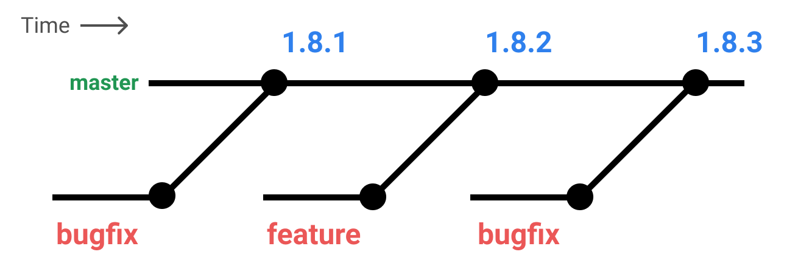
使用 1.8.1开发的应用程序无法吸收 1.8.2 的功能，或者通过反向移植修复和维护新的发行版，无法采用 1.8.3错误修复。
版本 2.0 和之后版本
下面列出的 1.x 策略有几个主要的变化。 每个更改都是为了满足开发人员/维护人员和应用程序开发人员的需求和优先级。
- 严格使用 semver
- 引入符合 semver 的
-beta标签 - 引入常规提交消息
- 明确定义的稳定分支
master分支没有版本信息，只有稳定分支会包含版本信息。
我们将详细介绍 git 分支是如何工作的，npm 标记是如何工作的，开发人员应该看到什么，以及如何能够支持更改。
semver
从 2.0 开始，Electron 将遵循 semver。
下面是一个表格，明确地将变化的类型映射到它们对应的 semver 类别 (例如Major，Minor，Patch)。
| Major 版本增量 | Minor 版本增量 | Patch 版本增量 |
|---|---|---|
| Electron 突破性 API 变更 | Electron 无突破性 API 变更 | Electron bug 修复 |
| Node.js 重大版本更新 | Node.js 次要版本更新 | Node.js patch 版本更新 |
| Chromium 版本更新 | 修复相关的 chromium 补丁 |
请注意，大多数 Chromium 更新将被视为突破性更新。 可以从新版被向后移植的修复可能会被挑选出来作为补丁修复现有版本。
稳定分支
稳定分支是与主控并行运行的分支，仅接受与安全性或稳定性有关的最优提交。 这些分支从不合并回主分支。
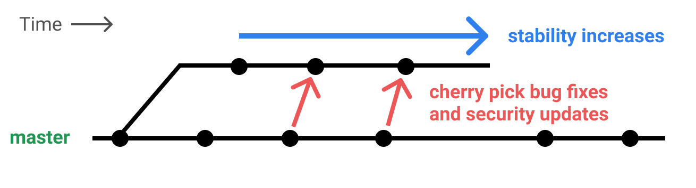
稳定分支始终是 major 或 minor 版本, 并按照以下模板命名$MAJOR-$MINOR-x.例如 2-0-x.
我们允许同时存在多个稳定分支，并且打算在任何时候至少支持两个并行支持安全修复。 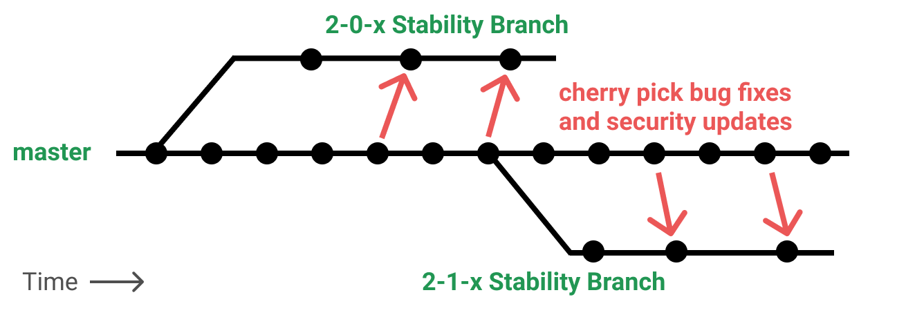
GitHub不支持旧线路，但是其他分组可以自行获取所有权和返回稳定性和安全修复。 我们不鼓励这样做，但是认识到它使得许多应用程序开发人员的生活更轻松。
测试版和 Bug 修复
开发人员想知道哪个版本可以 安全 使用。 即使是简单的功能也会使应用程序变得复杂。 同时，锁定到一个固定的版本是很危险的，因为你忽略了自你的版本以来可能出现的安全补丁和错误修复。 我们的目标是在 package.json 中允许以下标准的 semver 范围:
- 使用
~ 2.0. 0只接受您的2.0.0版本的稳定性或安全性相关的修复程序。 - 使用
^ 2.0. 0可允许不破坏性的 合理稳定 功能以及安全性和 bug 修复。
第二点重要的是使用 ^ 的应用程序仍然能够期望合理的稳定性水平。 为了达到这个目的，semver允许一个 pre-release 标识 来表示一个特定的版本还不 安全 或 稳定.
无论你选择什么，你将定期不得不在 package.json 中打破版本，因为突破性变更是 Chromium 的一个常态。
过程如下:
-
All new major and minor releases lines begin with a beta series indicated by semver prerelease tags of
beta.N, e.g.2.0.0-beta.1. After the first beta, subsequent beta releases must meet all of the following conditions:- The change is backwards API-compatible (deprecations are allowed)
- The risk to meeting our stability timeline must be low.
- If allowed changes need to be made once a release is beta, they are applied and the prerelease tag is incremented, e.g.
2.0.0-beta.2. - If a particular beta release is generally regarded as stable, it will be re-released as a stable build, changing only the version information. e.g.
2.0.0. After the first stable, all changes must be backwards-compatible bug or security fixes. - 如果未来错误修复或安全补丁一旦发布稳定，它们将被应用，并且 补丁 版本被增量 ，例如
2.0.1。
特别地，上述步骤意味着：
- Admitting non-breaking-API changes before Week 3 in the beta cycle is okay, even if those changes have the potential to cause moderate side-affects
- Admitting feature-flagged changes, that do not otherwise alter existing code paths, at most points in the beta cycle is okay. Users can explicitly enable those flags in their apps.
- Admitting features of any sort after Week 3 in the beta cycle is
对于每个主要和次要的颠覆，你都应该像以下示例一样进行操作：
2.0.0-beta.1
2.0.0-beta.2
2.0.0-beta.3
2.0.0
2.0.1
2.0.2图片中的生命周期示例:
- 将创建一个新的发布分支, 其中包括最新的一组功能。它被发布为
2.0. 0-beta 1。 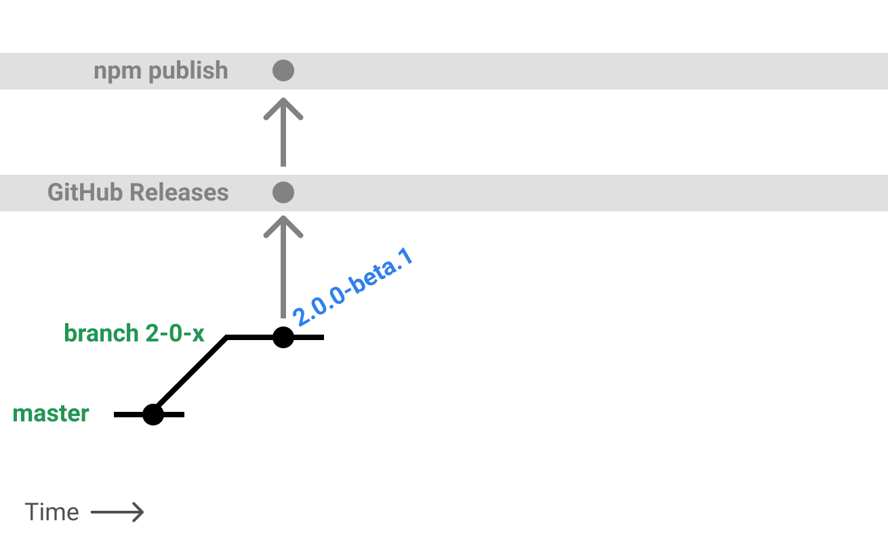 - Bug 修复进入主分支，即反向移植（backport）到发布分支中。补丁程序运行，新的测试版发布为
2.0. 0-beta 2。 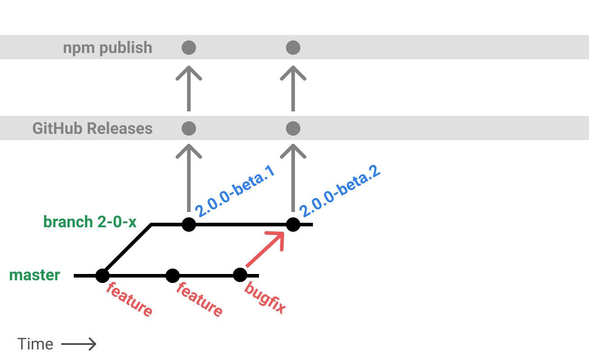 - 测试版被认为是 一般稳定 的, 它在
2.0.0下作为非 beta 版本再次被发布。 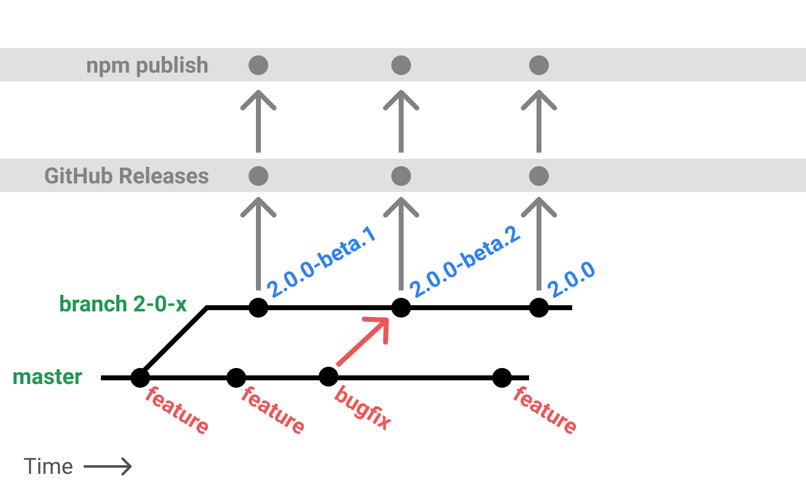 - 之后，释放一个零日漏洞，同时将修复应用于主分支（用以检测修复效果）。 我们将补丁程序反向移植到
2-0-x版本序列中，发布2.0.1。 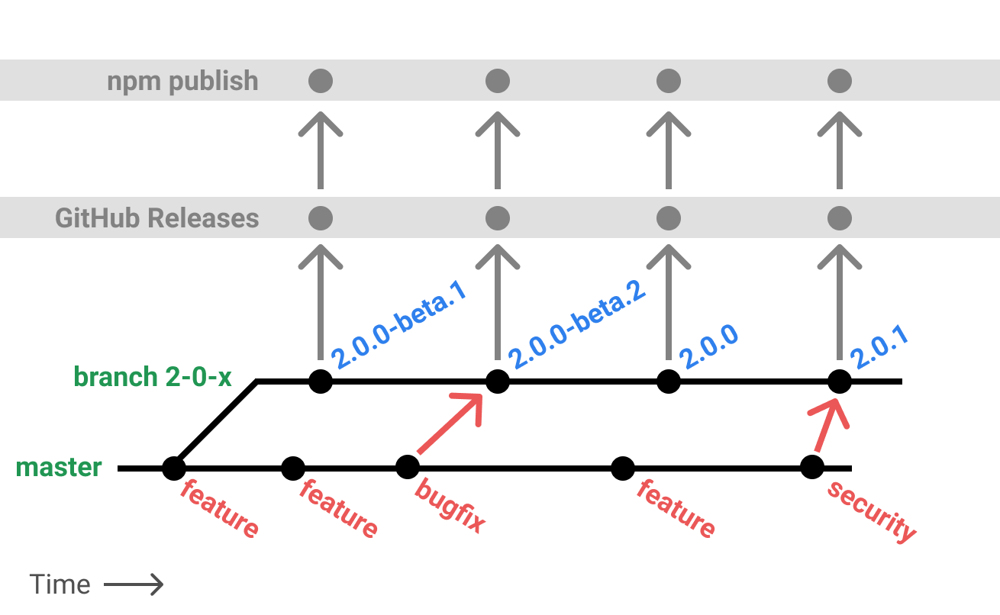
几个不同的 semver 范围将如何接收新版本的示例:
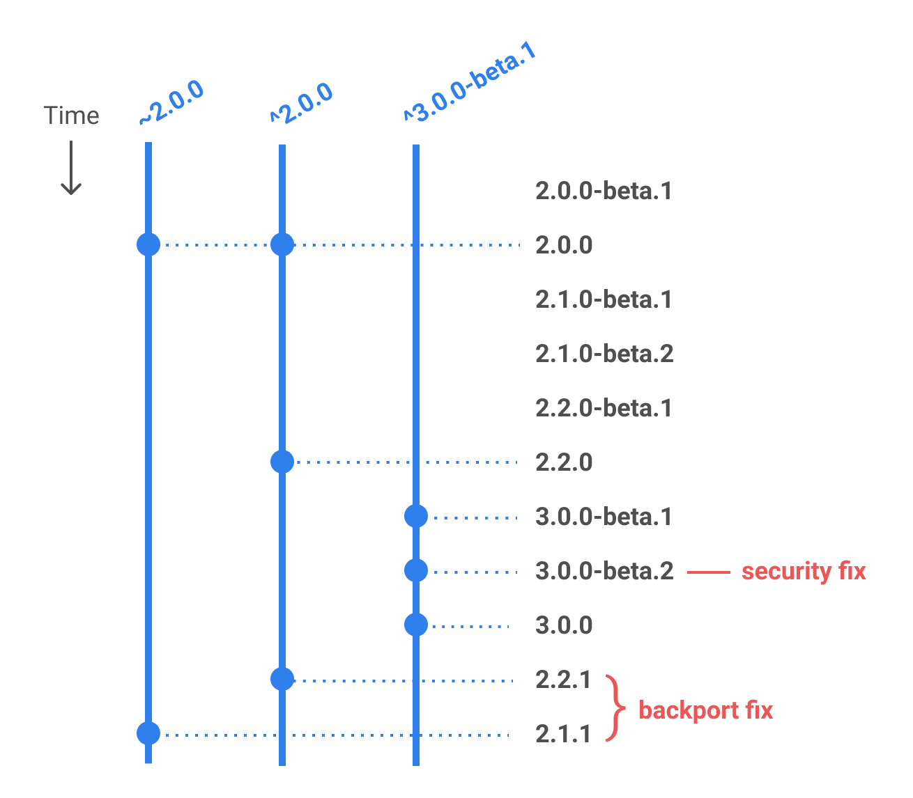
缺失的特性: alpha版本
我们的战略有几次权衡，我们现在认为这是适当的。 最重要的是, 新的主分支特性可能需要一段时间才能作为稳定版发布。 如果你想立即尝试一个新的特性, 你必须自己编译Electron 。
作为未来的考虑, 我们可以介绍以下一种或两种情况:
- 具有松散稳定性限制的 alpha 释放版; 例如, 当稳定通道在 alpha 中时, 允许接纳新特性
功能标志
功能标志是 Chromium 的一种常见的做法, 在网络开发生态系统中得到了很好的确立。 在 Electron 环境中, 功能标志或 软分支 必须具有以下属性:
- 是在运行时或生成时启用/禁用的。我们不支持请求作用域功能标志的概念
- 它完全细分新的和旧的代码路径; 重构旧代码以允许新功能 违反 功能标志内容
- feature flags are eventually removed after the feature is released
提交语义
我们力求在更新和发布过程的各个层面提高清晰度。 从 2.0.0 开始, 我们将要求遵循 常规提交 规范的拉请求, 可以概括如下:
-
会导致 semver major 版本改变的提交必须以
BREAKING CHANGE:开头。 -
会导致 semver minor 版本改变的提交必须以
feat:开头。 -
会导致 semver patch 版本改变的提交必须以
fix:开头。 -
我们允许合并提交，只要合并提交的消息符合上述消息格式。
-
只要pull request里包含有意义的总结性的版本语义消息，即使它其中的某些提交消息不包含版本语义前缀也是可以接受的
打了版本的 主分支
- The
masterbranch will always contain the next major versionX.0.0-nightly.DATEin itspackage.json - Release 分支永远不会合并回 master 分支
- 发布分支 在 其
package.json中包含正确的版本 - 只要一个 release 分支被切出来用于发布 major 版本, 主分支就必须跳到下一个 major 版本. 也就是说
master总会被视作下一个理论上要发布的版本的分支。
环境变量
在不更改代码的情况下控制应用程序配置和行为。
Electrond的某些行为受环境变量的控制, 因为它们比命令行标志和应用程序的代码更早初始化。
POSIX shell示例:
$ export ELECTRON_ENABLE_LOGGING=true
$ electronWindows 控制台示例:
> set ELECTRON_ENABLE_LOGGING=true
> electron生产环境相关变量
以下环境变量主要用于在打包后的Electron应用运行时使用。
NODE_OPTIONS
Electron 包括对 Node 的 NODE_OPTIONS 的子集的支持。 除与 Chromium 使用 BoringSSL 相抵触的情况外，大多数都得到了支持。
示例:
export NODE_OPTIONS="--no-warnings --max-old-space-size=2048"不支持的选项是：
--use-bundled-ca
--force-fips
--enable-fips
--openssl-config
--use-openssl-ca在打包的应用程序中显式禁止使用 NODE_OPTIONS 。
GOOGLE_API_KEY
You can provide an API key for making requests to Google's geocoding webservice. To do this, place the following code in your main process file, before opening any browser windows that will make geocoding requests:
process.env.GOOGLE_API_KEY = 'YOUR_KEY_HERE'For instructions on how to acquire a Google API key, visit this page. 默认情况下, 可能不允许新生成的 Google API key进行地理编码请求。 若要启用地理编码请求, 请访问 这里 。
ELECTRON_NO_ASAR
禁用 ASAR 支持。仅在设置了 ELECTRON_RUN_AS_NODE变量的fork或spawn的子进程中支持此变量。
ELECTRON_RUN_AS_NODE
当做普通Node.js进程启动。
ELECTRON_NO_ATTACH_CONSOLE Windows
不附加到当前控制台会话。
ELECTRON_FORCE_WINDOW_MENU_BAR Linux
不使用 Linux 的全局菜单栏。
开发环境相关变量
以下环境变量主要用于开发和调试目的。
ELECTRON_ENABLE_LOGGING
将 Chrome 的内部日志打印到控制台。
ELECTRON_LOG_ASAR_READS
当Electron读取ASAR 文件时, 将读取偏移量和文件路径记录到系统 tmpdir。生成的文件可以提供给 ASAR 模块以优化文件排序。
ELECTRON_DEFAULT_ERROR_MODE Windows
当Electron崩溃时显示 Windows 的崩溃对话框。
如果 crashReporter已经启动了, 则此环境变量将不起作用。
ELECTRON_OVERRIDE_DIST_PATH
由 electron 包运行时，该变量告知 electron命令使用指定构件代替由npm install下载的构件。 用法:
export ELECTRON_OVERRIDE_DIST_PATH=/Users/username/projects/electron/out/Debug为什么我在安装 Electron 的时候遇到了问题？
在运行 npm install electron 时，有些用户会偶尔遇到安装问题。
在大多数情况下，这些错误都是由网络问题导致，而不是因为 electron npm 包的问题。 如 ELIFECYCLE、EAI_AGAIN、ECONNRESET 和 ETIMEDOUT 等错误都是此类网络问题的标志。 最佳的解决方法是尝试切换网络，或是稍后再尝试安装。
如果通过 npm 安装失败，您可以尝试直接从 electron/electron/releases 直接下载 Electron。
Electron 会在什么时候升级到最新版本的 Chrome？
通常来说，在稳定版的 Chrome 发布后一到两周内，我们会更新 Electron 内的 Chrome 版本。 这个只是个估计且不能保证，取决于与升级所涉及的工作量。
我们只会使用 stable 版本的 Chrome。但如果在 beta 或 dev 版本中有一个重要的更新，我们会把补丁应用到现版本的 Chrome 上。
更多信息，请看安全介绍
Electron 会在什么时候升级到最新版本的 Node.js？
我们通常会在最新版的 Node.js 发布后一个月左右将 Electron 更新到这个版本的 Node.js。 我们通过这种方式来避免新版本的 Node.js 带来的 bug（这种 bug 太常见了）。
Node.js 的新特性通常是由新版本的 V8 带来的。由于 Electron 使用的是 Chrome 浏览器中附带的 V8 引擎，所以 Electron 内往往已经有了部分新版本 Node.js 才有的崭新特性。
如何在两个网页间共享数据？
在两个网页（渲染进程）间共享数据最简单的方法是使用浏览器中已经实现的 HTML5 API。 其中比较好的方案是用 Storage API， localStorage，sessionStorage 或者 IndexedDB。
你还可以用 Electron 内的 IPC 机制实现。将数据存在主进程的某个全局变量中，然后在多个渲染进程中使用 remote 模块来访问它。
// 在主进程中
global.sharedObject = {
someProperty: 'default value'
}// 在第一个页面中
require('electron').remote.getGlobal('sharedObject').someProperty = 'new value'// 在第二个页面中
console.log(require('electron').remote.getGlobal('sharedObject').someProperty)为什么应用的窗口、托盘在一段时间后不见了？
这通常是因为用来存放窗口、托盘的变量被垃圾回收了。
你可以参考以下两篇文章来了解为什么会遇到这个问题：
如果你只是要一个快速的修复方案，你可以用下面的方式改变变量的作用域，防止这个变量被垃圾回收。
const { app, Tray } = require('electron')
app.on('ready', () => {
const tray = new Tray('/path/to/icon.png')
tray.setTitle('hello world')
})改为
const { app, Tray } = require('electron')
let tray = null
app.on('ready', () => {
tray = new Tray('/path/to/icon.png')
tray.setTitle('hello world')
})我在 Electron 中无法使用 jQuery、RequireJS、Meteor、AngularJS。
因为 Electron 在运行环境中引入了 Node.js，所以在 DOM 中有一些额外的变量，比如 module、exports 和require。 这导致 了许多库不能正常运行，因为它们也需要将同名的变量加入运行环境中。
我们可以通过禁用 Node.js 来解决这个问题，在Electron里用如下的方式：
// 在主进程中
const { BrowserWindow } = require('electron')
let win = new BrowserWindow({
webPreferences: {
nodeIntegration: false
}
})
win.show()假如你依然需要使用 Node.js 和 Electron 提供的 API，你需要在引入那些库之前将这些变量重命名，比如：
<head>
<script>
window.nodeRequire = require;
delete window.require;
delete window.exports;
delete window.module;
</script>
<script type="text/javascript" src="jquery.js"></script>
</head>require('electron').xxx 未定义。
在使用 Electron 的提供的模块时，你可能会遇到和以下类似的错误：
> require('electron').webFrame.setZoomFactor(1.0)
Uncaught TypeError: Cannot read property 'setZoomLevel' of undefined这是因为你在项目中或者在全局中安装了npm 上获取的 electron 模块，它把 Electron 的内置模块覆写了。
你可以通过以下方式输出 electron 模块的路径来确认你是否使用了正确的模块。
console.log(require.resolve('electron'))确认一下它是不是像下面这样的：
"/path/to/Electron.app/Contents/Resources/atom.asar/renderer/api/lib/exports/electron.js"假如输出的路径类似于 node_modules/electron/index.js，那么你需要移除或者重命名 npm 上的 electron 模块。
npm uninstall electron
npm uninstall -g electron如果你依然遇到了这个问题，你可能需要检查一下拼写或者是否在错误的进程中调用了这个模块。 比如，electron.app 只能在主进程中使用, 然而 electron.webFrame 只能在渲染进程中使用。
文字看起来很模糊，这是什么原因造成的？要解决这个问题我能做些什么？
如果 次级像素反锯齿已停用，那么 LCD 屏幕上的字体可能会看起来模糊。例如：
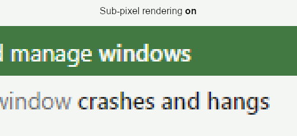
Sub-pixel anti-aliasing needs a non-transparent background of the layer containing the font glyphs. (See this issue for more info).
To achieve this goal, set the background in the constructor for BrowserWindow:
const { BrowserWindow } = require('electron')
let win = new BrowserWindow({
backgroundColor: '#fff'
})The effect is visible only on (some?) LCD screens. Even if you dont see a difference, some of your users may. It is best to always set the background this way, unless you have reasons not to do so.
Notice that just setting the background in the CSS does not have the desired effect.
FileFilter 对象
nameStringextensionsString[]
File 对象
在文件系统中，使用HTML5
File原生API操作文件
DOM 文件接口为原生文件提供了抽象, 以便让用户使用 HTML5 文件 API 直接处理原生文件。 Electron已经向 文件 接口添加了一个 path 属性, 在文件系统上暴露出文件的真实路径
示例：获取拖拽到app上的文件的真实路径
<div id="holder">
Drag your file here
</div>
<script>
document.addEventListener('drop', (e) => {
e.preventDefault();
e.stopPropagation();
for (const f of e.dataTransfer.files) {
console.log('File(s) you dragged here: ', f.path)
}
});
document.addEventListener('dragover', (e) => {
e.preventDefault();
e.stopPropagation();
});
</script>打造你的第一个 Electron 应用
Electron 可以让你使用纯 JavaScript 调用丰富的原生(操作系统) APIs 来创造桌面应用。 你可以把它看作一个 Node. js 的变体，它专注于桌面应用而不是 Web 服务器端。
这不意味着 Electron 是某个图形用户界面（GUI）库的 JavaScript 版本。 相反，Electron 使用 web 页面作为它的 GUI，所以你能把它看作成一个被 JavaScript 控制的，精简版的 Chromium 浏览器。
注意 : 获取该示例的代码仓库: 立即下载并运行 。
从开发的角度来看, Electron application 本质上是一个 Node. js 应用程序。 与 Node.js 模块相同，应用的入口是 package.json 文件。 一个最基本的 Electron 应用一般来说会有如下的目录结构：
your-app/
├── package.json
├── main.js
└── index.html为你的新Electron应用创建一个新的空文件夹。 打开你的命令行工具，然后从该文件夹运行npm init
npm initnpm 会帮助你创建一个基本的 package.json 文件。 其中的 main 字段所表示的脚本为应用的启动脚本，它将会在主进程中执行。 如下片段是一个 package.json 的示例：
{
"name": "your-app",
"version": "0.1.0",
"main": "main.js"
}注意：如果 main 字段没有在 package.json 中出现，那么 Electron 将会尝试加载 index.js 文件（就像 Node.js 自身那样）。 如果你实际开发的是一个简单的 Node 应用，那么你需要添加一个 start 脚本来指引 node 去执行当前的 package：
{
"name": "your-app",
"version": "0.1.0",
"main": "main.js",
"scripts": {
"start": "node ."
}
}把这个 Node 应用转换成一个 Electron 应用也是非常简单的，我们只不过是把 node 运行时替换成了 electron 运行时。
{
"name": "your-app",
"version": "0.1.0",
"main": "main.js",
"scripts": {
"start": "electron ."
}
}安装 Electron
现在，您需要安装electron。 我们推荐的安装方法是把它作为您 app 中的开发依赖项，这使您可以在不同的 app 中使用不同的 Electron 版本。 在您的app所在文件夹中运行下面的命令：
npm install --save-dev electron除此之外，也有其他安装 Electron 的途径。 请咨询安装指南来了解如何用代理、镜像和自定义缓存。
开发一个简易的 Electron
Electron apps 使用JavaScript开发，其工作原理和方法与Node.js 开发相同。 electron模块包含了Electron提供的所有API和功能，引入方法和普通Node.js模块一样：
const electron = require('electron')electron 模块所提供的功能都是通过命名空间暴露出来的。 比如说： electron.app负责管理Electron 应用程序的生命周期， electron.BrowserWindow类负责创建窗口。 下面是一个简单的main.js文件，它将在应用程序准备就绪后打开一个窗口：
const { app, BrowserWindow } = require('electron')
function createWindow () {
// 创建浏览器窗口
let win = new BrowserWindow({
width: 800,
height: 600,
webPreferences: {
nodeIntegration: true
}
})
// 加载index.html文件
win.loadFile('index.html')
}
app.on('ready', createWindow)您应当在 main.js 中创建窗口，并处理程序中可能遇到的所有系统事件。 下面我们将完善上述例子，添加以下功能：打开开发者工具、处理窗口关闭事件、在macOS用户点击dock上图标时重建窗口，添加后，main. js 就像下面这样：
const { app, BrowserWindow } = require('electron')
// 保持对window对象的全局引用，如果不这么做的话，当JavaScript对象被
// 垃圾回收的时候，window对象将会自动的关闭
let win
function createWindow () {
// 创建浏览器窗口。
win = new BrowserWindow({
width: 800,
height: 600,
webPreferences: {
nodeIntegration: true
}
})
// 加载index.html文件
win.loadFile('index.html')
// 打开开发者工具
win.webContents.openDevTools()
// 当 window 被关闭，这个事件会被触发。
win.on('closed', () => {
// 取消引用 window 对象，如果你的应用支持多窗口的话，
// 通常会把多个 window 对象存放在一个数组里面，
// 与此同时，你应该删除相应的元素。
win = null
})
}
// Electron 会在初始化后并准备
// 创建浏览器窗口时，调用这个函数。
// 部分 API 在 ready 事件触发后才能使用。
app.on('ready', createWindow)
// 当全部窗口关闭时退出。
app.on('window-all-closed', () => {
// 在 macOS 上，除非用户用 Cmd + Q 确定地退出，
// 否则绝大部分应用及其菜单栏会保持激活。
if (process.platform !== 'darwin') {
app.quit()
}
})
app.on('activate', () => {
// 在macOS上，当单击dock图标并且没有其他窗口打开时，
// 通常在应用程序中重新创建一个窗口。
if (win === null) {
createWindow()
}
})
// 在这个文件中，你可以续写应用剩下主进程代码。
// 也可以拆分成几个文件，然后用 require 导入。最后，创建你想展示的 index.html：
<!DOCTYPE html>
<html>
<head>
<meta charset="UTF-8">
<title>Hello World!</title>
</head>
<body>
<h1>Hello World!</h1>
We are using node <script>document.write(process.versions.node)</script>,
Chrome <script>document.write(process.versions.chrome)</script>,
and Electron <script>document.write(process.versions.electron)</script>.
</body>
</html>启动你的应用
在创建并初始化完成 main.js、 index.html和package.json之后，您就可以在当前工程的根目录执行 npm start 命令来启动刚刚编写好的Electron程序了。
尝试此例
复制并运行这个库 electron/electron-quick-start。
# 克隆这仓库
$ git clone https://github.com/electron/electron-quick-start
# 进入仓库
$ cd electron-quick-start
# 安装依赖库
$ npm install
# 运行应用
$ npm start启动开发过程的有关模板文件和工具列表, 请参阅模板文件和 CLI 文档 。
创建无边框窗口
要创建无边框窗口，只需在 BrowserWindow 的 options 中将 frame 设置为 false：
const { BrowserWindow } = require('electron')
let win = new BrowserWindow({ width: 800, height: 600, frame: false })
win.show()macOS 上的其他方案
要实现无边框窗口还有其他的方案。 将frame设置为false会将标题栏和窗口控制按钮全部隐藏，但实际上，你可能希望隐藏标题栏并将内容区域全屏的同时，依旧保留窗口控制按钮("红绿灯")来进行标准窗口操作。 你可以通过指定 titleBarStyle 选项来完成此操作：
hidden
返回一个隐藏标题栏的全尺寸内容窗口，在左上角仍然有标准的窗口控制按钮（俗称“红绿灯”）。
const { BrowserWindow } = require('electron')
let win = new BrowserWindow({ titleBarStyle: 'hidden' })
win.show()hiddenInset
返回一个另一种隐藏了标题栏的窗口，其中控制按钮到窗口边框的距离更大。
const { BrowserWindow } = require('electron')
let win = new BrowserWindow({ titleBarStyle: 'hiddenInset' })
win.show()customButtonsOnHover
使用自定义的关闭、缩小和全屏按钮，这些按钮会在划过窗口的左上角时显示。 The fullscreen button is not available due to restrictions of frameless windows as they interface with Apple's MacOS window masks. 这些自定义的按钮能防止, 与发生于标准的窗口工具栏按钮处的鼠标事件相关的问题. This option is only applicable for frameless windows.
const { BrowserWindow } = require('electron')
let win = new BrowserWindow({ titleBarStyle: 'customButtonsOnHover', frame: false })
win.show()透明窗口
通过将 transparent 选项设置为 true, 还可以使无框窗口透明:
const { BrowserWindow } = require('electron')
let win = new BrowserWindow({ transparent: true, frame: false })
win.show()局限性
- 你不能点击穿透透明区域。 我们将引入一个 API 来设置窗口形状以解决此问题, 请参阅 our issue 以了解详细信息。
- 透明窗口不可调整大小。在某些平台上，将
resizable设置为true可能会使透明窗口停止工作。 blur筛选器仅适用于网页, 因此无法对位于透明窗口下方的内容应用模糊效果 (例如在用户系统上打开的其他应用程序) 。- 在 windows 操作系统上, 当 DWM 被禁用时, 透明窗口将无法工作。
- 在 linux 上, 用户必须在命令行中设置
--enable-transparent-visuals --disable-gpu来禁用GPU, 启用 ARGB，用以实现窗体透明。 这是由一个上游的 bug 导致的, 即 在Linux机上，透明度通道（alpha channel ）在一些英伟达的驱动（NVidia drivers）中无法运行。 - 在 Mac 上, 原生窗口阴影不会在透明窗口中显示。
点击穿透窗口
要创建一个点击穿透窗口，也就是使窗口忽略所有鼠标事件，可以调用 win.setIgnoreMouseEvents(ignore) API：
const { BrowserWindow } = require('electron')
let win = new BrowserWindow()
win.setIgnoreMouseEvents(true)转发
忽略鼠标消息会使网页无视鼠标移动，这意味着鼠标移动事件不会被发出。 在 Windows 操作系统上，可以使用可选参数将鼠标移动消息转发到网页，从而允许发出诸如 mouseleave 之类的事件：
let win = require('electron').remote.getCurrentWindow()
let el = document.getElementById('clickThroughElement')
el.addEventListener('mouseenter', () => {
win.setIgnoreMouseEvents(true, { forward: true })
})
el.addEventListener('mouseleave', () => {
win.setIgnoreMouseEvents(false)
})这将使网页在 el 上点击时穿透，在它外面时恢复正常。
可拖拽区
默认情况下, 无边框窗口是不可拖拽的。 应用程序需要在 CSS 中指定 -webkit-app-region: drag 来告诉 Electron 哪些区域是可拖拽的（如操作系统的标准标题栏），在可拖拽区域内部使用 -webkit-app-region: no-drag 则可以将其中部分区域排除。 请注意, 当前只支持矩形形状。
注意: -webkit-app-region: drag 在开发人员工具打开时会出现问题。 查看更多信息 (包括变通方法), 请参见此 GitHub 问题 。
要使整个窗口可拖拽, 您可以添加 -webkit-app-region: drag 作为 body 的样式:
<body style="-webkit-app-region: drag">
</body>请注意，如果您使整个窗口都可拖拽，则必须将其中的按钮标记为不可拖拽，否则用户将无法点击它们：
button {
-webkit-app-region: no-drag;
}If you're only setting a custom titlebar as draggable, you also need to make all buttons in titlebar non-draggable.
文本选择
在无框窗口中, 拖动行为可能与选择文本冲突。 例如, 当您拖动标题栏时, 您可能会意外地选择标题栏上的文本。 为防止此操作, 您需要在可区域中禁用文本选择, 如下所选:
.titlebar {
-webkit-user-select: none;
-webkit-app-region: drag;
}右键菜单
在某些平台上，可拖拽区域不被视为窗口的实际内容，而是作为窗口边框处理，因此在右键单击时会弹出系统菜单。 要使上下文菜单在所有平台上都正确运行, 您永远也不要在可拖拽区域上使用自定义上下文菜单。
系统快捷键
在应用程序没有键盘焦点时，监听键盘事件。
线程：主线程
globalShortcut 模块可以在操作系统中注册/注销全局快捷键, 以便可以为操作定制各种快捷键。
注意: 快捷方式是全局的; 即使应用程序没有键盘焦点, 它也仍然在持续监听键盘事件。 在应用程序模块发出 ready 事件之前, 不应使用此模块。
const { app, globalShortcut } = require('electron')
app.on('ready', () => {
// 注册一个 'CommandOrControl+X' 的全局快捷键
const ret = globalShortcut.register('CommandOrControl+X', () => {
console.log('CommandOrControl+X is pressed')
})
if (!ret) {
console.log('registration failed')
}
// 检查快捷键是否注册成功
console.log(globalShortcut.isRegistered('CommandOrControl+X'))
})
app.on('will-quit', () => {
// 注销快捷键
globalShortcut.unregister('CommandOrControl+X')
// 注销所有快捷键
globalShortcut.unregisterAll()
})方法
globalShortcut 模块具有以下方法:
globalShortcut.register(accelerator, callback)
acceleratorAcceleratorcallbackFunction
Returns Boolean - Whether or not the shortcut was registered successfully.
注册指定的 accelerator 为全局快捷键。当用户按下该注册的快捷键时, 将调用 callback回调函数。
如果指定的快捷键已经被其他应用程序注册掉, 调用会默默失败。 该特性由操作系统定义，因为操作系统不希望多个程序的全局快捷键互相冲突。
在 macOS 10.14 Mojave 下面，如果 app 没有被授权为可信任使用的客户端，那么下列快捷键会注册失败：
- "Media Play/Pause"
- "Media Next Track"
- "Media Previous Track"
- "Media Stop"
globalShortcut.registerAll(accelerators, callback)
acceleratorsString[] - an array of Accelerators.callbackFunction
Registers a global shortcut of all accelerator items in accelerators. The callback is called when any of the registered shortcuts are pressed by the user.
When a given accelerator is already taken by other applications, this call will silently fail. 该特性由操作系统定义，因为操作系统不希望多个程序的全局快捷键互相冲突。
在 macOS 10.14 Mojave 下面，如果 app 没有被授权为可信任使用的客户端，那么下列快捷键会注册失败：
- "Media Play/Pause"
- "Media Next Track"
- "Media Previous Track"
- "Media Stop"
globalShortcut.isRegistered(accelerator)
acceleratorAccelerator
Returns Boolean - 表示 accelerator 全局快捷键是否注册成功
当快捷键已经被其他应用程序注册时, 此调用将返回 false。 该特性由操作系统定义，因为操作系统不希望多个程序的全局快捷键互相冲突。
globalShortcut.unregisterAll()
注销所有的全局快捷键（清空该应用程序的全局快捷键）。
术语表
这篇文档解释了一些经常在 Electron 开发中使用的专业术语。
ASAR
ASAR 表示 Atom Shell Archive Format。 一个 asar 档案就是一个简单的 tar 文件 - 比如将那些有关联的文件放至一个单独的文件格式中。 Electron 能够任意读取其中的文件并且不需要解压整个文件。
ASAR 格式主要是为了提高 Windows 上的性能而创建的... TODO
CRT
C 运行时库 (CRT) 是包含了 ISO C99 标准库的 c + + 标准库的一部分。 实现了 CRT 的 Visual c++ 库支持本机代码开发, 以及混合的本机和托管代码, 以及用于. NET 开发的纯托管代码。
DMG
是指在 macOS 上使用的苹果系统的磁盘镜像打包格式。 DMG 文件通常被用来分发应用的 "installers"（安装包）。 electron-builder 支持使用 dmg 来作为编译目标。
IME
输入法编辑器. 是一个允许用户输入在键盘上找不到的字符和符号的程序。 例如，使用户可以用拉丁语键盘输入中文，日文，韩文和印度文字。
IDL
接口描述语言。用一种格式撰写函数签名和数据类型，被用于生成 Java, C++, JavaScript, 等程序接口。
IPC
IPC 代表 Inter-Process Communication进程间通信。Electron 使用 IPC 来在main主进程和renderer渲染进程之间传递 JSON 信息。
libchromiumcontent
包含 Chromium Content module 及其所有依赖项 (例如, Blink、 V8 等) 的共享链接库。 也称为 “libcc”。
main process
主进程，通常是名为main.js 的文件，是每个 Electron 应用的入口文件。它控制着整个 App 的生命周期，从打开到关闭。 它也管理着系统原生元素比如菜单，菜单栏，Dock 栏，托盘等。 主进程负责创建 APP 的每个渲染进程。而且整个 Node API 都集成在里面。
每个 app 的主进程文件都定义在 package.json 中的 main 属性当中。这也是为什么 electron. 能够知道应该使用哪个文件来启动。
在Chromium中, 这个进程被称为 "浏览器进程"。它在Electron被重新命名, 以避免与渲染器进程混淆。
参见: process, renderer process
MAS
是指苹果系统上的 Mac App Store 的缩略词。有关于如何提交你的 app 至 MAS ，详见 Mac App Store Submission Guide。
Mojo
一种用于进程内部或进程间通信的 IPC 系统, 这很重要, 因为 Chrome会依据内存压力等来决定是否将其工作分拆给不同的进程。
可参考chromium.googlesource.com/chromium/src/+/master/mojo/README.md
native modules
原生模块 （在 Node.js 里也叫 addons），是一些使用 C or C++ 编写的能够在 Node.js 中加载或者在 Electron 中使用 require() 方法来加载的模块，它使用起来就如同 Node.js 的模块。 它主要用于桥接在 JavaScript 上运行 Node.js 和 C/C++ 的库。
Electron 支持了原生的 Node 模块，但是 Electron 非常可能安装一个不一样的 V8 引擎通过 Node 二进制编码，所以在打包原生模块的时候你需要在 指定具体的 Electron 本地头文件。
NSIS
Nullsoft Scriptable Install System 是一个微软 Windows 平台上的脚本驱动的安装制作工具。 它发布在免费软件许可证书下，是一个被广泛使用的替代商业专利产品类似于 InstallShield。 electron-builder 支持使用 NSIS 作为编译目标。
OSR
OSR(离屏渲染) 可以让你渲染页面而不用立刻显示到屏幕上。 这个技术可被用于在后台加载超大页面然后再显示(这样做速度会更快)。
process
一个进程是计算机程序执行中的一个实例。 Electron 应用同时使用了 main(主进程) 和一个或者多个 rendere(渲染进程) 来运行多个程序。
在 Node.js 和 Electron 里面，每个运行的进程包含一个 process对象。 这个对象作为一个全局的提供当前进程的相关信息和操作方法。 作为一个全局变量，它在应用内能够不用 require() 来随时取到。
renderer process
渲染进程是你的应用内的一个浏览器窗口。与主进程不同的是，它能够同时存在多个而且运行在不一样的进程。而且它们也能够被隐藏。
在通常的浏览器内，网页通常运行在一个沙盒的环境挡住并且不能够使用原生的资源。 然而 Electron 的用户在 Node.js 的 API 支持下可以在页面中和操作系统进行一些低级别的交互。
参见： process, main process
Squirrel
Squirrel 是一个开源的框架来让 Electron 的应用能够自动的更新到发布的新的版本。 详见 autoUpdater API 了解如何开始使用 Squirrel。
userland
"userland" 或者 "userspace" 术语起源于 Unix 社区，当程序运行在操作系统内核之外。 最近这个术语被推广在 Node 和 npm 社区用于区分 "Node core" 与发布的包的功能，对于在 npm 上注册的广大 "user（用户）" 们。
就像 Node ，Electron 致力于使用一些少量的设置和 API 来提供所有的必须的支持给开发中的跨平台应用。 这个设计理念让 Electron 能够保持灵活而不被过多的规定有关于如何应该被使用。 Userland 让用户能够创造和分享一些工具来提额外的功能在这个能够使用的 "core（核心）"之上。
V8
V8 是谷歌公司的开源的 JavaScript 引擎。它使用 C++ 编写并使用在谷歌公司开源的的浏览器 Chrome 上。V8 能够单独运行或者集成在任何一个 C++ 应用内。
Electron将 V8 作为Chromium的一个部分进行构建，然后在构建Node时也指向那个 V8
V8 的版本号总是和谷歌 Chrome的版本号对应。Chrome 59包括 V8 5.9，Chrome 58包括 V8 5.8，等等。
webview
webview标签用于集成 'guest（访客）' 内容（比如外部的网页）在你的 Electron 应用内。它们类似于 iframe，但是不同的是每个 webview 运行在独立的进程中。 作为页面它拥有不一样的权限并且所有的嵌入的内容和你应用之间的交互都将是异步的。 这将保证你的应用对于嵌入的内容的安全性。
GPU 特性状态对象
2d_canvasString - 画布.flash_3dString - Flash.flash_stage3dString - Flash 舞台3D.flash_stage3d_baselineString - Flash 舞台3D 基线配置.gpu_compositingString - 合成.multiple_raster_threadsString - 多光栅线程.native_gpu_memory_buffersString - 原生GPU显存缓冲.rasterizationString - 光栅化.video_decodeString - 视频解码.video_encodeString - 视频编码.vpx_decodeString - VPx 视频解码.webglString - WebGL.webgl2String - WebGL2.
可选值：
disabled_software- 只用于软件。禁用硬件加速。(yellow)disabled_off- 禁用(red)disabled_off_ok- 已禁用(yellow)unavailable_software- 只用于软件, 硬件加速不可用 (yellow)unavailable_off- 不可用(red)unavailable_off_ok- 已设为不可用的 (yellow)enabled_readback- 硬件加速但是有损耗性能 (yellow)enabled_force- 所有页面开启硬件加速 (green)enabled- 已硬件加速 (green)enabled_on- 启用 (green)enabled_force_on- 强制启用 (green)
事件
inAppPurchase 模块触发以下事件:
事件：'transactions-updated'
一个或多个 transactions 更新时会触发这一事件。
返回:
eventEventtransactionsTransaction[] - Array ofTransactionobjects.
方法
inAppPurchase 模块包含以下方法：
inAppPurchase.purchaseProduct(productID, quantity, callback)
productIDString - 预付款商品的ID (com.example.app.product1的ID是product1).quantityInteger (可选) - 用户所要购买的商品数量.-
callbackFunction (可选) - 当购买事件被推到 PaymentQueue中时触发这个回调函数.isProductValidBoolean - 用来表示商品是否已经添加到支付队列中。
在调用purchaseProduct之前，你应该尽可能快的监听transactions-updated事件
inAppPurchase.getProducts(productIDs, callback)
productIDsString[] - 预购商品ID-
callbackFunction - 当商品不存在时，被商品对象或空数组调用的回调productsProduct[] -Product对象的数据
检索商品的描述
inAppPurchase.canMakePayments()
返回 Boolean, 用来判断用户是否可以发起支付.
inAppPurchase.getReceiptURL()
返回 String, 指收据路径.
inAppPurchase.finishAllTransactions()
完成所有待处理的交易
创建您的应用内购买
然后，您需要在iTunes Connect中配置您的应用内购买，并包含名称，定价和说明等详细信息，以突出显示您的应用内购买的功能。
变更 CFBundleIdentifier
To test In-App Purchase in development with Electron you'll have to change the CFBundleIdentifier in node_modules/electron/dist/Electron.app/Contents/Info.plist. You have to replace com.github.electron by the bundle identifier of the application you created with iTunes Connect.
<key>CFBundleIdentifier</key>
<string>com.example.app</string>Code example
Here is an example that shows how to use In-App Purchases in Electron. You'll have to replace the product ids by the identifiers of the products created with iTunes Connect (the identifier of com.example.app.product1 is product1). Note that you have to listen to the transactions-updated event as soon as possible in your app.
const { inAppPurchase } = require('electron').remote
const PRODUCT_IDS = ['id1', 'id2']
// Listen for transactions as soon as possible.
inAppPurchase.on('transactions-updated', (event, transactions) => {
if (!Array.isArray(transactions)) {
return
}
// Check each transaction.
transactions.forEach(function (transaction) {
var payment = transaction.payment
switch (transaction.transactionState) {
case 'purchasing':
console.log(`Purchasing ${payment.productIdentifier}...`)
break
case 'purchased':
console.log(`${payment.productIdentifier} purchased.`)
// Get the receipt url.
let receiptURL = inAppPurchase.getReceiptURL()
console.log(`Receipt URL: ${receiptURL}`)
// Submit the receipt file to the server and check if it is valid.
// @see https://developer.apple.com/library/content/releasenotes/General/ValidateAppStoreReceipt/Chapters/ValidateRemotely.html
// ...
// If the receipt is valid, the product is purchased
// ...
// Finish the transaction.
inAppPurchase.finishTransactionByDate(transaction.transactionDate)
break
case 'failed':
console.log(`Failed to purchase ${payment.productIdentifier}.`)
// Finish the transaction.
inAppPurchase.finishTransactionByDate(transaction.transactionDate)
break
case 'restored':
console.log(`The purchase of ${payment.productIdentifier} has been restored.`)
break
case 'deferred':
console.log(`The purchase of ${payment.productIdentifier} has been deferred.`)
break
default:
break
}
})
})
// Check if the user is allowed to make in-app purchase.
if (!inAppPurchase.canMakePayments()) {
console.log('The user is not allowed to make in-app purchase.')
}
// Retrieve and display the product descriptions.
inAppPurchase.getProducts(PRODUCT_IDS).then(products => {
// Check the parameters.
if (!Array.isArray(products) || products.length <= 0) {
console.log('Unable to retrieve the product informations.')
return
}
// Display the name and price of each product.
products.forEach(product => {
console.log(`The price of ${product.localizedTitle} is ${product.formattedPrice}.`)
})
// Ask the user which product he/she wants to purchase.
let selectedProduct = products[0]
let selectedQuantity = 1
// Purchase the selected product.
inAppPurchase.purchaseProduct(selectedProduct.productIdentifier, selectedQuantity).then(isProductValid => {
if (!isProductValid) {
console.log('The product is not valid.')
return
}
console.log('The payment has been added to the payment queue.')
})
})类：IncomingMessage
处理 HTTP/HTTPS 请求的响应。
线程：主线程
ClientRequest实现了Writable Stream接口, 因此是一个EventEmitter类型.
Event: 'end'
指示响应正文已结束。
Event: 'aborted'
正在进行的 HTTP 事务被取消后触发。
Event: 'error'
返回:
error 通常保存一个错误字符串，识别失败的根本原因。
当流响应数据事件遇到错误时发出。 例如, 如果服务器在响应仍在流时关闭基础, 则会在响应对象上发出一个 error 事件, 随后将在请求对象上执行 close 事件。
实例属性
IncomingMessage 实例具有以下可读属性:
response.statusCode
一个指示 HTTP 响应状态代码的 Integer。
response.statusMessage
表示HTTP状态消息的string。
response.headers
表示响应HTTP头的 Object。 headers 对象的格式如下所示：
- 所有的头文件名是小写的。
- 每个头名称在头对象上生成一个数组值属性。
- 每个头值被推入与它的头名称相关联的数组中。
response.httpVersion
表示HTTP协议版本号的 String 。 一般是“1”或“1.1”。 此外 httpVersionMajor 和httpVersionMinor 两整数值可读属性，分别返回HTTP的主要和次要版本号
response.httpVersionMajor
表示HTTP协议主要版本号的 整数。
response.httpVersionMinor
表示http协议次要版本号的整数。
安装
要安装预编译好的的二进制文件, 请使用 npm。 首选的方法是在项目中作为development dependency安装。
npm install electron --save-dev查看versioning doc获取如何在你的应用中管理Electron的相关信息。
自定义
如果需要安装某一位数的版本 (例如,在x64位的系统中安装ia32位版本), 则可以使用 npm中的 arch 命令，或可以通过设置 npm_config_arch 的环境变量来进行安装:
npm install --arch=ia32 electron此外, 您还可以使用 --platform 来指定开发平台 (例如, win32、linux 等):
npm install --platform=win32 electron自定义镜像和缓存
在安装过程中，electron 模块会通过 electron-download 为您的平台下载 Electron 的预制二进制文件。 这将通过访问 GitHub 的发布下载页面来完成 (https://github.com/electron/electron/releases/tag/v$VERSION, 这里的 $VERSION 是 Electron 的确切版本).
如果您无法访问GitHub，或者您需要提供自定义构建，则可以通过提供镜像或现有的缓存目录来实现。
镜像
您可以使用环境变量来覆盖基本 URL，查找 Electron 二进制文件的路径以及二进制文件名。 使用 electron-download 的网址 组成如下：:
url = ELECTRON_MIRROR + ELECTRON_CUSTOM_DIR + '/' + ELECTRON_CUSTOM_FILENAME例如，使用中国镜像：
ELECTRON_MIRROR="https://npm.taobao.org/mirrors/electron/"缓存
或者，您可以覆盖本地缓存。 electron-download 会将下载的二进制文件缓存在本地目录中，不会增加网络负担。 您可以使用该缓存文件夹来提供 Electron 的定制版本，或者避免进行网络连接。
- Linux:
$XDG_CACHE_HOMEor~/.cache/electron/ - MacOS:
~/Library/Caches/electron/ - Windows:
$LOCALAPPDATA/electron/Cacheor~/AppData/Local/electron/Cache/
在使用旧版本 Electron 的环境中，您也可以在~/.electron中找到缓存。
您也可以通过提供一个 ELECTRON_CACHE 环境变量来覆盖本地缓存位置。
缓存包含版本的官方zip文件以及校验和，存储为文本文件。 典型的缓存可能如下所示：
├── electron-v1.7.9-darwin-x64.zip
├── electron-v1.8.1-darwin-x64.zip
├── electron-v1.8.2-beta.1-darwin-x64.zip
├── electron-v1.8.2-beta.2-darwin-x64.zip
├── electron-v1.8.2-beta.3-darwin-x64.zip
├── SHASUMS256.txt-1.7.9
├── SHASUMS256.txt-1.8.1
├── SHASUMS256.txt-1.8.2-beta.1
├── SHASUMS256.txt-1.8.2-beta.2
├── SHASUMS256.txt-1.8.2-beta.3Skip binary download
When installing the electron NPM package, it automatically downloads the electron binary.
This can sometimes be unnecessary, e.g. in a CI environment, when testing another component.
To prevent the binary from being downloaded when you install all npm dependencies you can set the environment variable ELECTRON_SKIP_BINARY_DOWNLOAD. E.g.:
ELECTRON_SKIP_BINARY_DOWNLOAD=1 npm install故障排查
在运行 npm install electron 时，有些用户会偶尔遇到安装问题。
在大多数情况下，这些错误都是由网络问题导致，而不是因为 electron npm 包的问题。 如 ELIFECYCLE、EAI_AGAIN、ECONNRESET 和 ETIMEDOUT 等错误都是此类网络问题的标志。 最佳的解决方法是尝试切换网络，或是稍后再尝试安装。
如果通过 npm 安装失败，您可以尝试直接从 electron/electron/releases 直接下载 Electron。
如果安装失败并出现 EACCESS 错误, 则可能需要 修复您的 npm 权限 。（例如使用 sudo ）
如果上述错误仍然存在, 则可能需要将参数 unsafe-perm 设置为 true
sudo npm install electron --unsafe-perm=true在较慢的网络上, 最好使用 --verbose 标志来显示下载进度:
npm install --verbose electron如果需要强制重新下载文件, 并且 SHASUM 文件将 force_no_cache 环境变量设置为 true。
IO计数器 对象
readOperationCountNumber - I/O读取操作的数量writeOperationCountNumber - I/O写入操作的数量.otherOperationCountNumber - 其他I/O操作的数量.readTransferCountNumber - I/O读取传送的数量.writeTransferCountNumber - I/O写入传送的数量.otherTransferCountNumber - 其他I/O传送的数量.
ipcMain
从主进程到渲染进程的异步通信。
线程：主线程
ipcMain模块是EventEmitter类的一个实例。 当在主进程中使用时，它处理从渲染器进程（网页）发送出来的异步和同步信息。 从渲染器进程发送的消息将被发送到该模块。
发送消息
It is also possible to send messages from the main process to the renderer process, see webContents.send for more information.
- 发送消息时，事件名称为
channel。 - 回复同步信息时，需要设置
event.returnValue。 - To send an asynchronous message back to the sender, you can use
event.reply(...). This helper method will automatically handle messages coming from frames that aren't the main frame (e.g. iframes) whereasevent.sender.send(...)will always send to the main frame.
下面是在渲染和主进程之间发送和处理消息的一个例子：
// 在主进程中.
const { ipcMain } = require('electron')
ipcMain.on('asynchronous-message', (event, arg) => {
console.log(arg) // prints "ping"
event.reply('asynchronous-reply', 'pong')
})
ipcMain.on('synchronous-message', (event, arg) => {
console.log(arg) // prints "ping"
event.returnValue = 'pong'
})//在渲染器进程 (网页) 中。
const { ipcRenderer } = require('electron')
console.log(ipcRenderer.sendSync('synchronous-message', 'ping')) // prints "pong"
ipcRenderer.on('asynchronous-reply', (event, arg) => {
console.log(arg) // prints "pong"
})
ipcRenderer.send('asynchronous-message', 'ping')方法
IpcMain模块有以下方法来侦听事件：
ipcMain.on(channel, listener)
channelStringlistenerFunction
监听 channel，当接收到新的消息时 listener 会以 listener(event, args...) 的形式被调用。
ipcMain.once(channel, listener)
channelStringlistenerFunction
添加一次性的 listener。当且仅当下一个消息发送到 channel 时 listener 才会被调用，随后 <0>listener</0> 会被移除。
ipcMain.removeListener(channel, listener)
channelStringlistenerFunction
从监听器数组中移除监听 channel 的指定 listener。
事件对象
传递给 callback 的 event 对象有如下方法:
event.frameId
An Integer representing the ID of the renderer frame that sent this message.
event.returnValue
将此设置为在一个同步消息中返回的值.
event.sender
Returns the webContents that sent the message, you can call event.sender.send to reply to the asynchronous message, see webContents.send for more information.
event.reply
A function that will send an IPC message to the renderer frane that sent the original message that you are currently handling. You should use this method to "reply" to the sent message in order to guaruntee the reply will go to the correct process and frame.
ipcRenderer
从渲染器进程到主进程的异步通信。
进程: Renderer
ipcRenderer 是一个 EventEmitter 的实例。 你可以使用它提供的一些方法从渲染进程 (web 页面) 发送同步或异步的消息到主进程。 也可以接收主进程回复的消息。
请从 ipcMain 查看代码示例。
方法
ipcRenderer 模块使用以下方法来监听事件和发送消息。
ipcRenderer.on(channel, listener)
channelStringlistenerFunction
监听 channel, 当新消息到达，将通过 listener(event, args...) 调用 listener。
ipcRenderer.once(channel, listener)
channelStringlistenerFunction
为事件添加一个一次性用的listener 函数.这个 listener 只有在下次的消息到达 channel 时被请求调用，之后就被删除了.
ipcRenderer.removeListener(channel, listener)
channelStringlistenerFunction
为特定的 channel 从监听队列中删除特定的 listener 监听者.
ipcRenderer.send(channel[, arg1][, arg2][, ...])
channelString...argsany[]
通过 channel 发送异步消息到主进程，可以携带任意参数。 在内部，参数会被序列化为 JSON，因此参数对象上的函数和原型链不会被发送。
主进程可以使用 ipcMain 监听channel 来接收这些消息。
ipcRenderer.sendSync(channel[, arg1][, arg2][, ...])
-
channelString -
...argsany[]
返回 any - 由 ipcMain 处理程序发送过来的值。
通过 channel 发送同步消息到主进程，可以携带任意参数。 在内部，参数会被序列化为 JSON，因此参数对象上的函数和原型链不会被发送。
主进程可以使用 ipcMain 监听 channel来接收这些消息，并通过 event.returnValue 设置回复消息。
注意: 发送同步消息将会阻塞整个渲染进程，你应该避免使用这种方式 - 除非你知道你在做什么。
ipcRenderer.sendTo(webContentsId, channel, [, arg1][, arg2][, ...])
-
webContentsIdNumber -
channelString -
...argsany[]
Sends a message to a window with webContentsId via channel.
ipcRenderer.sendToHost(channel[, arg1][, arg2][, ...])
-
channelString -
...argsany[]
就像 ipcRenderer.send，不同的是消息会被发送到 host 页面上的 <webview> 元素，而不是主进程。
事件对象
传递给 callback 的 event 对象有如下方法:
event.senderId
Returns the webContents.id that sent the message, you can call event.sender.sendTo(event.senderId, ...) to reply to the message, see ipcRenderer.sendTo for more information. This only applies to messages sent from a different renderer. Messages sent directly from the main process set event.senderId to 0.
如何贡献一个Issue
对于任何问题，个人可以通过三种方式贡献：
- 通过新建（提出）问题进行讨论：如果您认为您在Electron中发现问题，您应该在
electron/electron问题跟踪器中通过创建问题来提出。 - 通过帮助鉴定问题：您可以通过提供辅助信息（一种可以让漏洞被发现的情况）或提出解决问题的建议。
- 通过帮助解决问题：这可以通过演示问题不是一个bug或已修复来完成；但更通常，打开一个通过一个具体和可审查的方式改变
electron/electron中的源代码的拉取请求。
请求一般性的帮助
"Finding Support" has a list of resources for getting programming help, reporting security issues, contributing, and more. 请仅对漏洞使用问题追踪器！
提交漏洞报告
当您在Electron中提出问题，您需要完成一个模板。
<!--
谢谢您提出问题！ 请记住以下几点：
- 问题跟踪器只能用于漏洞和功能的提出。
- 在提出问题之前，请尝试使用最新版本的Electron让您提出的问题重现。
如果您需要一般的问题，请参与我们的Slack: http://atom-slack.herokuapp.com
-->
* Electron版本:
* 操作系统:
### 你希望得到的结果
<!-- 你觉得应该发生什么？ -->
### 实际结果
<!-- 实际发生了什么？ -->
### How to reproduce
<!--
Your best chance of getting this bug looked at quickly is to provide a REPOSITORY that can be cloned and run.
你可以克隆 https://github.com/electron/electron-quick-start 并包含一个到含有你更改的分支的链接。
如果您提供了一个URL，请列出克隆/设置/运行您的仓库所需要的命令，例如
$ git clone $YOUR_URL -b $BRANCH
$ npm install
$ npm start || electron .
-->如果你确信你发现了Electron中的漏洞，请尽力填这份表单。
要评估报告需要的两个最重要的部分是漏洞的描述和重现它的简单测试样例。 一个可以被重现的漏洞更容易被修复。
鉴定漏洞报告
提出问题经常会出现讨论。 贡献者会有不同的观点，包括提出的情况是一个漏洞还是一个功能。 这些讨论是解决问题的一部分，并且应该保持专注、有用、专业。
没有任何内容和详细信息的简单回复是无用的而且不专业的。 在很多情况下，这些恢复是烦人而且不友好的。
我们鼓励贡献者共同解决问题并互相帮助取得进展。 如果您遇到觉得包含无效或不正确信息的问题，请使用更多详细信息指出您为什么觉得此问题含有无效或不正确信息，并愿意接受您可能是错误的。 通过这样做，我们可以更快地得到正确的结果。
解决漏洞报告
大部分的问题是通过打开拉取请求解决的。 The process for opening and reviewing a pull request is similar to that of opening and triaging issues, but carries with it a necessary review and approval workflow that ensures that the proposed changes meet the minimal quality and functional guidelines of the Electron project.
JumpListCategory 对象
-
type字符串 (可选)-以下之一:tasks-此类别中的项目将放在标准tasks类别中。 只能有一个这样的类别, 它将始终显示在跳转列表的底部。frequent-显示应用程序经常打开的文件列表, 该类别的名称及其项由 Windows 设置。recent-显示应用程序最近打开的文件列表, 该类别的名称及其项由 Windows 设置。 可以使用app. addRecentDocument (路径)间接地将项目添加到此类别。custom-显示任务或文件链接,名称必须由应用程序设置。
name字符串（可选的）--如果type是custom则必须设置, 否则应省略它。itemsJumpListItem -如果type是tasks或custom, 则JumpListItem对象的数组, 否则应省略它。
注意: 如果 JumpListCategory 对象没有设置 type 和 name 属性， name type默认为 tasks。 如果设置了 name 属性，省略了 type 属性，那么 type 默认为 custom.
JumpListItem 对象
-
type字符串 (可选)-以下之一:task-任务将启动具有特定参数的应用程序。separator-可用于分隔标准Tasks类别中的项目。file-一个文件的链接将使用创建跳转列表的应用程序打开文件, 为此, 应用程序必须注册为该文件类型的默认程序 (尽管它并不需要成为默认程序)。
pathString (可选)-要打开的文件的路径, 只应在type为file时设置。programString (可选)-要执行的程序的路径, 通常应该指定打开当前程序的process.execPath。 只应在type是task时设置。args字符串 (可选) - 程序执行时的命令行参数。只应在type为task时设置。titleString (可选)-要为跳转列表中的项显示的文本。只应在type为task时设置。descriptionString (optional) - 任务描述 (会以浮动提示的方式显示). 只应在type为task时设置.图标路径字符串 (可选项) - 在跳转列表中会显示一个使用绝对路径的图标，它可以是一个包含图标的任意资源文件 (e.g..ico,.exe,.dll). 通常可以指定process.execPath值显示程序图标。iconIndexNumber (可选) - 图标在资源文件中的索引值。 如果资源文件包含多个图标，则可以使用此值指示从零开始的图标索引，用于此任务的显示。 如果资源文件只包含一个图标，则iconIndex必须设为0。
键盘快捷键
配置本地和全局键盘快捷键
本地快捷键
您可以使用 [Menu] 模块来配置快捷键，只有在 app 处于焦点状态时才可以触发快捷键。 为此，在创建 MenuItem时必须指定一个 [accelerator] 属性。
const { Menu, MenuItem } = require('electron')
const menu = new Menu()
menu.append(new MenuItem({
label: 'Print',
accelerator: 'CmdOrCtrl+P',
click: () => { console.log('time to print stuff') }
}))你还可以在操作系统中配置不同的组合键。
{
accelerator: process.platform === 'darwin' ? 'Alt+Cmd+I' : 'Ctrl+Shift+I'
}全局快捷键
当应用程序不处于焦点状态时，你可以使用 globalShortcut 模块来检测键盘事件，
const { app, globalShortcut } = require('electron')
app.on('ready', () => {
globalShortcut.register('CommandOrControl+X', () => {
console.log('CommandOrControl+X is pressed')
})
})在浏览器窗口内的快捷方式
如果你想处理 BrowserWindow中的键盘快捷键，你可以监听渲染进程中 window 对象的 keyup 和 keydown 事件。
window.addEventListener('keyup', doSomething, true)注意第三个参数 true，这意味着当前监听器总是在其他监听器之前接收按键，以避免其它监听器调用 stopPropagation()。
在调度页面中的keydown和keyup事件之前，会发出before-input-event事件。 它可以用于捕获和处理在菜单中不可见的自定义快捷方式。
如果您不想手动进行快捷键解析，可以使用一些库来进行高级的按键检测。例如 mousetrap.
Mousetrap.bind('4', () => { console.log('4') })
Mousetrap.bind('?', () => { console.log('show shortcuts!') })
Mousetrap.bind('esc', () => { console.log('escape') }, 'keyup')
// 组合
Mousetrap.bind('command+shift+k', () => { console.log('command shift k') })
// 将多个组合映射到相同的回调
Mousetrap.bind(['command+k', 'ctrl+k'], () => {
console.log('command k or control k')
// 返回 false 以防止默认行为，并阻止事件冒泡
return false
})
// gmail 风格序列
Mousetrap.bind('g i', () => { console.log('go to inbox') })
Mousetrap.bind('* a', () => { console.log('select all') })
// konami 代码
Mousetrap.bind('up up down down left right left right b a enter', () => {
console.log('konami code')
})自定义 Linux 桌面启动器行为
在很多的 Linux 环境中，你可以通过修改文件 .desktop 来在它的启动器中添加自定义条目。 关于Canonical 的 Unity 启动器文档, 参考 Adding Shortcuts to a Launcher. 可以通过 freedesktop.org Specification网站，找到更详细的参考信息。
Audacious 的启动器快捷方式:

一般情况下，在快捷键menu中为每一个条目添加Name 和Exec属性就可以将其设置为快捷键。 用户点击快捷见时，Unity启动器就会执行Exec 属性。 其形式如下：
Actions=PlayPause;Next;Previous
[Desktop Action PlayPause]
Name=Play-Pause
Exec=audacious -t
[Desktop Action Next]
Name=Next
Exec=audacious -f
[Desktop Action Previous]
Name=Previous
Exec=audacious -rUnity启动器通常通过参数的形式来操作应用。 你在应用的全局变量process.argv中发现这一规律。
本地化
通过
app.getLocale()来获取本地值
Electron 使用 Chromium 的l10n_util 库来获取 locale，可能的值如下：
| 语言码 | 语言名称 |
|---|---|
| af | 南非语 |
| am | 阿姆哈拉语 |
| ar | 阿拉伯语 |
| az | 阿塞拜疆语 |
| be | 白俄罗斯语 |
| bg | 保加利亚语 |
| bh | 比哈尔语 |
| bn | 孟加拉语 |
| br | 布列塔尼语 |
| bs | 波斯尼亚语 |
| ca | 加泰隆语 |
| co | 科西嘉语 |
| cs | 捷克语 |
| cy | 威尔士语 |
| da | 丹麦语 |
| de | 德语 |
| de-AT | 德语(奥地利) |
| de-CH | 德语(瑞士) |
| de-DE | 德语(德国) |
| el | 希腊语 |
| en | 英语 |
| en-AU | 英语(澳大利亚) |
| en-CA | 英语(加拿大) |
| en-GB | 英语(英国) |
| en-NZ | 英语(新西兰) |
| en-US | 英语(美国) |
| en-ZA | 英语(南非) |
| eo | 世界语 |
| es | 西班牙语 |
| es-419 | 西班牙语 (拉丁美洲) |
| et | 爱沙尼亚语 |
| eu | 巴斯克语 |
| fa | 波斯语 |
| fi | 芬兰语 |
| fil | 菲律宾语 |
| fo | 法罗语 |
| fr | 法语 |
| fr-CA | 法语（加拿大） |
| fr-CH | 法语(瑞士) |
| fr-FR | 法语(法国) |
| fy | 弗里斯兰语 |
| ga | 爱尔兰语 |
| gd | 苏格兰盖尔语 |
| gl | 加利西亚语 |
| gn | 瓜拉尼语 |
| gu | 古吉拉特语 |
| ha | 豪萨语 |
| haw | 夏威夷语 |
| he | 希伯来语 |
| hi | 印地语 |
| hr | 克罗地亚语 |
| hu | 匈牙利语 |
| hy | 亚美尼亚语 |
| ia | 国际语 |
| id | 印度尼西亚语 |
| is | 冰岛语 |
| it | 意大利语 |
| it-CH | 意大利语(瑞士) |
| it-IT | 意大利语(意大利) |
| ja | 日语 |
| jw | 爪哇语 |
| ka | 格鲁吉亚语 |
| kk | 哈萨克语 |
| km | 柬埔寨语 |
| kn | 埃纳德文 |
| ko | 韩语 |
| ku | 库尔德语 |
| ky | 吉尔吉斯坦语 |
| la | 拉丁语 |
| ln | 林加拉语 |
| lo | 老挝语 |
| lt | 立陶宛语 |
| lv | 拉脱维亚语 |
| mk | 马其顿语 |
| ml | 马拉雅拉姆语 |
| mn | 蒙古语 |
| mo | 摩尔多瓦语 |
| mr | 马拉地语 |
| ms | 马来语 |
| mt | 马耳他语 |
| nb | 挪威语(书面) |
| ne | 尼泊尔语 |
| nl | 荷兰语 |
| nn | 挪威(尼诺斯克语) |
| no | 挪威语 |
| oc | 奥克西坦语 |
| om | 奥罗莫语 |
| or | 奥里雅语 |
| pa | 旁遮普语 |
| pl | 波兰语 |
| ps | 普什图语 |
| pt | 葡萄牙语 |
| pt-BR | 葡萄牙语(巴西) |
| pt-PT | 葡萄牙语(葡萄牙) |
| qu | 盖丘亚语 |
| rm | 罗曼什语 |
| ro | 罗马尼亚语 |
| ru | 俄语 |
| sd | 信德语 |
| sh | 塞尔维亚-克罗地亚语 |
| si | 僧伽罗语 |
| sk | 斯洛伐克语 |
| sl | 斯洛文尼亚语 |
| sn | 修纳语 |
| so | 索马里语 |
| sq | 阿尔巴尼亚语 |
| sr | 塞尔维亚语 |
| st | 塞索托语 |
| su | 巽他语 |
| sv | 瑞典语 |
| sw | 斯瓦希里语 |
| ta | 泰米尔语 |
| te | 泰卢固语 |
| tg | 塔吉克语 |
| th | 泰语 |
| ti | 提格里尼亚语 |
| tk | 土库曼语 |
| to | 汤加语 |
| tr | 土耳其语 |
| tt | 鞑靼语 |
| tw | 契维语 |
| ug | 维吾尔语 |
| uk | 乌克兰语 |
| ur | 乌尔都语 |
| uz | 乌兹别克语 |
| vi | 越南语 |
| xh | 科萨语 |
| yi | 意第绪语 |
| yo | 约鲁巴语 |
| zh | 中文 |
| zh-CN | 中文（简体） |
| zh-TW | 中文（繁体） |
| zu | 祖鲁语 |
Mac App Store 应用程序提交指南
自从 v0.34.0，Electron 就允许提交应用包到 Mac App Store (MAS)。这个向导提供的信息有: 如何提交应用和 MAS 构建的限制。
Note: Submitting an app to Mac App Store requires enrolling in the Apple Developer Program, which costs money.
如何提交你的应用
下面步骤介绍了一个简单的提交应用到商店方法。 然而，这些步骤不能保证你的应用被 Apple 接受；你仍然需要阅读 Apple 的 Submitting Your App 关于如何满足 Mac App Store 要求的向导。
获得 Team ID
在软件签名之前，你需要知道开发者账户的 Team ID 查看 Team ID，登录 Apple Developer Center 并点击侧边栏的 Membership。 你可以在团队名称下面的 Membership Information 部分查看到 Team ID。
软件签名
获得证书之后，你可以使用 应用部署 打包你的应用，之后进行提交。
First, you have to add a ElectronTeamID key to your app's Info.plist, which has your Team ID as its value:
<plist version="1.0">
<dict>
...
<key>ElectronTeamID</key>
<string>TEAM_ID</string>
</dict>
</plist>之后，你需要准备2个授权文件。
child.plist:
<?xml version="1.0" encoding="UTF-8"?>
<!DOCTYPE plist PUBLIC "-//Apple//DTD PLIST 1.0//EN" "http://www.apple.com/DTDs/PropertyList-1.0.dtd">
<plist version="1.0">
<dict>
<key>com.apple.security.app-sandbox</key>
<true/>
<key>com.apple.security.inherit</key>
<true/>
</dict>
</plist>parent.plist:
<?xml version="1.0" encoding="UTF-8"?>
<!DOCTYPE plist PUBLIC "-//Apple//DTD PLIST 1.0//EN" "http://www.apple.com/DTDs/PropertyList-1.0.dtd">
<plist version="1.0">
<dict>
<key>com.apple.security.app-sandbox</key>
<true/>
<key>com.apple.security.application-groups</key>
<array>
<string>TEAM_ID.your.bundle.id</string>
</array>
</dict>
</plist>loginhelper.plist:
<?xml version="1.0" encoding="UTF-8"?>
<!DOCTYPE plist PUBLIC "-//Apple//DTD PLIST 1.0//EN" "http://www.apple.com/DTDs/PropertyList-1.0.dtd">
<plist version="1.0">
<dict>
<key>com.apple.security.app-sandbox</key>
<true/>
</dict>
</plist>请注意上述 TEAM_ID 对应开发者账户的 Team ID，your.bundle.id 对应软件打包时使用的 Bundle ID。
然后使用下面的脚本签名你的应用：
#!/bin/bash
# 你的应用名称
APP="YourApp"
# 要签名的应用路径
APP_PATH="/path/to/YourApp.app"
# 生成安装包路径
RESULT_PATH="~/Desktop/$APP.pkg"
# 开发者应用签名证书
APP_KEY="3rd Party Mac Developer Application: Company Name (APPIDENTITY)"
INSTALLER_KEY="3rd Party Mac Developer Installer: Company Name (APPIDENTITY)"
# 授权文件路径
CHILD_PLIST="/path/to/child.plist"
PARENT_PLIST="/path/to/parent.plist"
LOGINHELPER_PLIST="/path/to/loginhelper.plist"
FRAMEWORKS_PATH="$APP_PATH/Contents/Frameworks"
codesign -s "$APP_KEY" -f --entitlements "$CHILD_PLIST" "$FRAMEWORKS_PATH/Electron Framework.framework/Versions/A/Electron Framework"
codesign -s "$APP_KEY" -f --entitlements "$CHILD_PLIST" "$FRAMEWORKS_PATH/Electron Framework.framework/Versions/A/Libraries/libffmpeg.dylib"
codesign -s "$APP_KEY" -f --entitlements "$CHILD_PLIST" "$FRAMEWORKS_PATH/Electron Framework.framework/Versions/A/Libraries/libnode.dylib"
codesign -s "$APP_KEY" -f --entitlements "$CHILD_PLIST" "$FRAMEWORKS_PATH/Electron Framework.framework"
codesign -s "$APP_KEY" -f --entitlements "$CHILD_PLIST" "$FRAMEWORKS_PATH/$APP Helper.app/Contents/MacOS/$APP Helper"
codesign -s "$APP_KEY" -f --entitlements "$CHILD_PLIST" "$FRAMEWORKS_PATH/$APP Helper.app/"
codesign -s "$APP_KEY" -f --entitlements "$LOGINHELPER_PLIST" "$APP_PATH/Contents/Library/LoginItems/$APP Login Helper.app/Contents/MacOS/$APP Login Helper"
codesign -s "$APP_KEY" -f --entitlements "$LOGINHELPER_PLIST" "$APP_PATH/Contents/Library/LoginItems/$APP Login Helper.app/"
codesign -s "$APP_KEY" -f --entitlements "$CHILD_PLIST" "$APP_PATH/Contents/MacOS/$APP"
codesign -s "$APP_KEY" -f --entitlements "$PARENT_PLIST" "$APP_PATH"
productbuild --component "$APP_PATH" /Applications --sign "$INSTALLER_KEY" "$RESULT_PATH"如果你是 macOS 下的应用沙箱使用新手，应当仔细阅读 Apple 的 Enabling App Sandbox 了解一些基础，然后在授权文件内添加你的应用需要的许可。
除了手动签名你的应用，你也可以选择使用 electron-osx-sign 模块来做这项工作。
原生模块签名
应用程序中的原生模块也需要签署。如果使用 electron-osx-sign，确保已生成二进制文件的路径包含在 参数列表：
electron-osx-sign YourApp.app YourApp.app/Contents/Resources/app/node_modules/nativemodule/build/release/nativemodule还要注意，原生模块可能产生的中间文件 不包括在内(因为它们也需要签署)。 如果你使用 electron-packager 8.1.0 之前的版本，在构建步骤中添加 --ignore=.+\.o$ 以忽略这些文件。 Versions 8.1.0 and later ignore those files by default.
MAS 构建限制
为了让你的应用满足沙箱的所有条件，在 MAS 构建的时候，下面的模块已被禁用：
crashReporterautoUpdater
并且下面的行为也改变了:
- 一些视频采集功能无效。
- 某些辅助功能无法访问。
- 应用无法检测 DNS 变化。
也由于应用沙箱的使用方法，应用可以访问的资源被严格限制了；阅读更多信息 App Sandboxing。
附加授权
根据应用使用的 Electron API，你可能需要添加附加授权 在 parent.plist 文件，在 Mac App Store 发布应用程序的时候能够使用这些API。
网络访问
启用传出的网络连接，允许你的应用程序连接到服务器：
<key>com.apple.security.network.client</key>
<true/>启用传入的网络连接，让你的应用程序打开网络 socket 监听：
<key>com.apple.security.network.server</key>
<true/>dialog.showOpenDialog
<key>com.apple.security.files.user-selected.read-only</key>
<true/>dialog.showSaveDialog
<key>com.apple.security.files.user-selected.read-write</key>
<true/>Electron 使用的加密算法
Depending on the countries in which you are releasing your app, you may be required to provide information on the cryptographic algorithms used in your software. See the encryption export compliance docs for more information.
Electron 使用下列加密算法：
- AES - NIST SP 800-38A, NIST SP 800-38D, RFC 3394
- HMAC - FIPS 198-1
- ECDSA - ANS X9.62–2005
- ECDH - ANS X9.63–2001
- HKDF - NIST SP 800-56C
- PBKDF2 - RFC 2898
- RSA - RFC 3447
- SHA - FIPS 180-4
- Blowfish - schneier.com/cryptography/blowfish
- CAST - RFC 2144, RFC 2612
- DES - FIPS 46-3
- DH - RFC 2631
- DSA - ANSI X9.30
- EC - SEC 1
- IDEA - "On the Design and Security of Block Ciphers" book by X. Lai
- MD2 - RFC 1319
- MD4 - RFC 6150
- MD5 - RFC 1321
- MDC2 - ISO/IEC 10118-2
- RC2 - RFC 2268
- RC4 - RFC 4345
- RC5 - people.csail.mit.edu/rivest/Rivest-rc5rev.pdf
- RIPEMD - ISO/IEC 10118-3
MacOS Dock
Electron有API来配置macOS Dock中的应用程序图标。 A macOS-only API exists to create a custom dock menu, but Electron also uses the app's dock icon to implement cross-platform features like recent documents and application progress.
The custom dock is commonly used to add shortcuts to tasks the user wouldn't want to open the whole app window for.
Terminal.app 的 Dock 菜单:
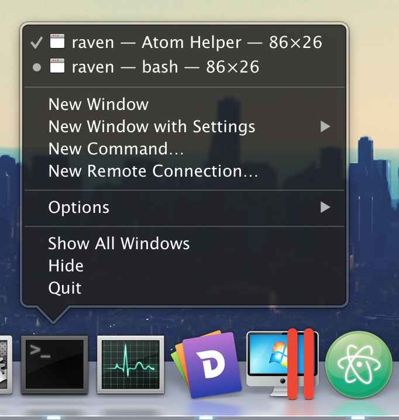
若要设置自定义的dock菜单, 可以使用 app.dock.setMenu API, 它仅在 macOS 上可用:
const { app, Menu } = require('electron')
const dockMenu = Menu.buildFromTemplate([
{
label: 'New Window',
click () { console.log('New Window') }
}, {
label: 'New Window with Settings',
submenu: [
{ label: 'Basic' },
{ label: 'Pro' }
]
},
{ label: 'New Command...' }
])
app.dock.setMenu(dockMenu)MemoryInfo 对象
pidInteger - 进程IDworkingSetSizeInteger- 当前占用的物理内存RAM总量peakWorkingSetSizeInteger - 已被占用的物理内存最大值。在macOS上这个值始终为0privateBytesInteger - 独占内存，不被其他进程（如JavaScript堆或者HTML内容）共享的内存数量sharedBytesInteger -共享内存，在进程之间共享的内存数量，通常是Electron自身消耗的内存量
备注：所有数据值以KB为单位
MemoryUsageDetails 对象
countNumbersizeNumberliveSizeNumber
new Menu()
创建新菜单。
静态方法
menu类有以下静态方法：
Menu.setApplicationMenu(menu)
menuMenu | null
当在MacOS、Windows、Linux中使用menu设置程序菜单时，会设置在各个程序窗体的顶层。
Also on Windows and Linux, you can use a & in the top-level item name to indicate which letter should get a generated accelerator. For example, using &File for the file menu would result in a generated Alt-F accelerator that opens the associated menu. The indicated character in the button label gets an underline. The & character is not displayed on the button label.
Passing null will suppress the default menu. On Windows and Linux, this has the additional effect of removing the menu bar from the window.
Note: The default menu will be created automatically if the app does not set one. It contains standard items such as File, Edit, View, Window and Help.
Menu.getApplicationMenu()
返回 Menu | null - 如果有设置, 则返回应用程序菜单， 如果没设置，则返回 null。
注意: 返回的 menu 实例不支持动态添加或删除菜单项。 但仍然可以动态修改 实例属性 。
Menu.sendActionToFirstResponder(action) macOS
actionString
将 action 发送到应用程序的第一个响应方。 这用于模拟默认的 macOS 菜单行为。 通常你可以使用MenuItem的role属性
有关 macOS 的本地操作的详细信息, 请参阅 macOS Cocoa Event Handling Guide 。
Menu.buildFromTemplate(template)
template(MenuItemConstructorOptions | MenuItem)[]
返回 Menu
一般来说 template是一个options类型的数组，用于构建一个 MenuItem。使用情况可以在上文提及。
You can also attach other fields to the element of the template and they will become properties of the constructed menu items.
实例方法
menu 对象具有以下实例方法:
menu.popup(options)
-
optionsObject (可选)windowBrowserWindow (可选) - 默认为选中窗口.x数字 (可选)-默认值是当前鼠标光标的位置。如果声明了y, 则必须声明。y数字 (可选)-默认值是当前鼠标光标的位置。如果声明了x, 则必须声明。positioningItem数字 (可选) macOS -要在指定坐标下的鼠标光标下定位的菜单项的索引。默认值为-1。callbackFunction (optional) - 会在菜单关闭后被调用.
将此菜单作为 browserWindow 中的上下文菜单弹出。
menu.closePopup([browserWindow])
-
browserWindowBrowserWindow (可选) - 默认为选中窗口.
关闭 browserWindow 中的上下文菜单。
menu.append(menuItem)
-
menuItem菜单项
将 menuItem 追加到菜单。
menu.getMenuItemById(id)
-
idString
返回具有指定id项的MenuItem
menu.insert(pos, menuItem)
-
posInteger -
menuItem菜单项
将 menuItem 插入菜单的 pos 位置。
实例事件
用 new Menu 创建的对象触发以下事件：
注意: 某些事件仅在特定的操作系统上可用, 这些方法会被标记出来。
事件: 'menu-will-show'
返回:
-
eventEvent
调用menu.popup()事件时触发该事件。
事件: 'menu-will-close'
返回:
-
eventEvent
手动关闭弹出，或使用 menu.closePopup()方法关闭弹出时，触发该事件。
实例属性
menu 对象还具有以下属性:
menu.items
包含菜单项的 MenuItem [] 数组。
每个 菜单 由多个 MenuItem 组成, 每个 MenuItem 可以有子菜单。
实例事件
使用 new Menu方法创建的对象，或者Menu.buildFromTemplate返回的对象都会触发以下事件：
示例
Menu 仅在主进程（ main process）中可用, 但您也可以在渲染进程（render process）中通过 remote 模块使用它。
主进程
在主进程中创建程序菜单的简单API模版示例:
const { app, Menu } = require('electron')
const template = [
// { role: 'appMenu' }
...(process.platform === 'darwin' ? [{
label: app.getName(),
submenu: [
{ role: 'about' },
{ type: 'separator' },
{ role: 'services' },
{ type: 'separator' },
{ role: 'hide' },
{ role: 'hideothers' },
{ role: 'unhide' },
{ type: 'separator' },
{ role: 'quit' }
]
}] : []),
// { role: 'fileMenu' }
{
label: 'File',
submenu: [
isMac ? { role: 'close' } : { role: 'quit' }
]
},
// { role: 'editMenu' }
{
label: 'Edit',
submenu: [
{ role: 'undo' },
{ role: 'redo' },
{ type: 'separator' },
{ role: 'cut' },
{ role: 'copy' },
{ role: 'paste' },
...(isMac ? [
{ role: 'pasteAndMatchStyle' },
{ role: 'delete' },
{ role: 'selectAll' },
{ type: 'separator' },
{
label: 'Speech',
submenu: [
{ role: 'startspeaking' },
{ role: 'stopspeaking' }
]
}
] : [
{ role: 'delete' },
{ type: 'separator' },
{ role: 'selectAll' }
])
]
},
// { role: 'viewMenu' }
{
label: 'View',
submenu: [
{ role: 'reload' },
{ role: 'forcereload' },
{ role: 'toggledevtools' },
{ type: 'separator' },
{ role: 'resetzoom' },
{ role: 'zoomin' },
{ role: 'zoomout' },
{ type: 'separator' },
{ role: 'togglefullscreen' }
]
},
// { role: 'windowMenu' }
{
label: 'Window',
submenu: [
{ role: 'minimize' },
{ role: 'zoom' },
...(isMac ? [
{ type: 'separator' },
{ role: 'front' },
{ type: 'separator' },
{ role: 'window' }
] : [
{ role: 'close' }
])
]
},
{
role: 'help',
submenu: [
{
label: 'Learn More',
click () { require('electron').shell.openExternalSync('https://electronjs.org') }
}
]
}
]
const menu = Menu.buildFromTemplate(template)
Menu.setApplicationMenu(menu)
渲染进程
下面是通过 remote 模块在网页（render process）中动态创建右击菜单的示例:
<!-- index.html -->
<script>
const { remote } = require('electron')
const { Menu, MenuItem } = remote
const menu = new Menu()
menu.append(new MenuItem({ label: 'MenuItem1', click() { console.log('item 1 clicked') } }))
menu.append(new MenuItem({ type: 'separator' }))
menu.append(new MenuItem({ label: 'MenuItem2', type: 'checkbox', checked: true }))
window.addEventListener('contextmenu', (e) => {
e.preventDefault()
menu.popup({ window: remote.getCurrentWindow() })
}, false)
</script>
MacOS中应用菜单注意事项
MacOS中的应用程序有着和windows，linux完全不同风格的菜单样式。这里有一些说明，可以让你的程序菜单看起来更贴合原生系统。
标准菜单
在MacOS有一些系统自定的标准菜单，像Services和Windows。 让你的菜单更像MacOS标准菜单，只需设置菜单role值为如下示之一，Electron便会自动认出并设置成标准菜单，：
-
window -
help -
services
标准菜单项操作
macOS 已经为某些菜单项提供了标准操作, 如 about xxx 、 Hide xxx 和 Hide Others 。 若要将菜单项的操作设置为标准操作, 应设置菜单项的 role 属性。
主菜单的名称
在 macOS 中应用程序菜单的第一个项目的标签总是你的应用程序的名字, 无论你设置什么标签。 如要更改它, 请修改应用程序包的 Info. plist 文件。 有关详细信息, 请参阅 About Information Property List Files 。
设置特定浏览器窗口的菜单 ( Linux Windows )
浏览器窗口的 setMenu 方法 可以设置特定浏览器窗口的菜单。
菜单项位置
你可以使用 before, after, beforeGroupContaining, afterGroupContaining 和 id 来控制由 Menu.buildFromTemplate 生成的菜单项的位置.
-
before- 在指定的标签之前插入菜单项。 如果引用值不存在，那么该菜单项会插在这个菜单的尾部。 这还意味着，菜单项应该被放置在与引用项相同的组中。 -
after- 在指定的标签之后插入菜单项。 如果引用值不存在，那么该菜单项会插在这个菜单的尾部。 这还意味着，菜单项应该被放置在与引用项相同的组中。 -
beforeGroupContaining- Provides a means for a single context menu to declare the placement of their containing group before the containing group of the item with the specified label. -
afterGroupContaining- Provides a means for a single context menu to declare the placement of their containing group after the containing group of the item with the specified label.
默认情况下，除非有位置相关的属性，所有的菜单项会按照模板中的顺序排放。
示例
模板：
[
{ id: '1', label: 'one' },
{ id: '2', label: 'two' },
{ id: '3', label: 'three' },
{ id: '4', label: 'four' }
]
菜单:
<br />- 1
- 2
- 3
- 4
模板：
[
{ id: '1', label: 'one' },
{ type: 'separator' },
{ id: '3', label: 'three', beforeGroupContaining: ['1'] },
{ id: '4', label: 'four', afterGroupContaining: ['2'] },
{ type: 'separator' },
{ id: '2', label: 'two' }
]
菜单:
<br />- 3
- 4
- ---
- 1
- ---
- 2
模板：
[
{ id: '1', label: 'one', after: ['3'] },
{ id: '2', label: 'two', before: ['1'] },
{ id: '3', label: 'three' }
]
菜单:
<br />- ---
- 3
- 2
- 1
new MenuItem(可选)
-
参数Object-
clickFunction (可选) - 当菜单项被点击后，将会调用click(menuItem, browserWindow, event)。menuItem菜单项browserWindowBrowserWindoweventEvent
roleString (optional) - Can beundo,redo,cut,copy,paste,pasteandmatchstyle,delete,selectall,reload,forcereload,toggledevtools,resetzoom,zoomin,zoomout,togglefullscreen,window,minimize,close,help,about,services,hide,hideothers,unhide,quit,startspeaking,stopspeaking,close,minimize,zoomorfront- Define the action of the menu item, when specified theclickproperty will be ignored. See roles.typeString (可选)-可以是normal、separator、submenu、checkbox或radio。labelString (可选)sublabelString (可选)acceleratorAccelerator (可选)icon(NativeImage | String) (可选)enabledBoolean (可选) - 如果为 false，该菜单项将会置灰且不可点击。visibleBoolean (可选)-如果为 false, 该菜单项将完全隐藏。checkedBoolean (可选)-只应为checkbox或radio类型菜单项指定。registerAcceleratorBoolean (可选) - 如果为 false, accelerator 不会被系统注册, 但仍然会被显示. 默认值为 true。submenu(MenuItemConstructorOptions[] | Menu) (optional) - Should be specified forsubmenutype menu items. Ifsubmenuis specified, thetype: 'submenu'can be omitted. If the value is not aMenuthen it will be automatically converted to one usingMenu.buildFromTemplate.idString (可选)-在单个菜单中是唯一的。如果定义, 则可以通过它来引用该项。beforeString - Inserts this item before the item with the specified label. If the referenced item doesn't exist the item will be inserted at the end of the menu. Also implies that the menu item in question should be placed in the same “group” as the item.afterString - Inserts this item after the item with the specified label. If the referenced item doesn't exist the item will be inserted at the end of the menu.beforeGroupContainingString - Provides a means for a single context menu to declare the placement of their containing group before the containing group of the item with the specified label.afterGroupContainingString - Provides a means for a single context menu to declare the placement of their containing group after the containing group of the item with the specified label.
-
角色
可以通过角色来为menu添加预定义行为。
最好给任何一个菜单指定 role去匹配一个标准角色, 而不是尝试在 click 函数中手动实现该行为。 内置的 role 行为将提供最佳的原生体验。
使用 role 时, label 和 accelerator 值是可选的, 并为每个平台，将默认为适当值。
Every menu item must have either a role, label, or in the case of a separator a type.
role 属性可以具有以下值:
undoredocutcopypastepasteAndMatchStyleselectAlldeleteminimize- 最小化当前窗口。close- 关闭当前窗口.quit- Quit the application.reload- 重新加载当前窗口。forcereload- 忽略缓存，重新加载当前窗口。toggledevtools- 在当前窗口中隐藏/显示开发者工具。toggleFullScreen- Toggle full screen mode on the current window.resetzoom- 将主页的缩放级别重置为初始大小.zoomin- 主页面放大 10%.zoomout-主页面缩小 10%.fileMenu- Whole default "File" menu (Close / Quit)editMenu-默认的 "编辑" 菜单 (包括撤消、复制等)viewMenu- Whole default "View" menu (Reload, Toggle Developer Tools, etc.)windowMenu- Whole default "Window" menu (Minimize, Zoom, etc.).
以下为macOS 中提供的角色:
appMenu- Whole default "App" menu (About, Services, etc.)about-映射到orderFrontStandardAboutPanel操作.hide-映射到hide操作.hideOthers-映射到hideOtherApplications操作.unhide-映射到unhideAllApplications操作.startSpeaking-映射到startSpeaking操作.stopSpeaking-映射到stopSpeaking操作.front-映射到arrangeInFront操作.zoom-映射到performZoom操作.toggleTabBar-映射到toggleTabBar操作.selectNextTab- 映射到selectNextTab操作.selectPreviousTab- 映射到selectPreviousTab操作.mergeAllWindows- 映射到mergeAllWindows操作.moveTabToNewWindow- 映射到moveTabToNewWindow操作.window- 这个子菜单是"Window" 菜单.help-这个子菜单是 "Help" 菜单.services-这个子菜单是 "Services" 菜单.recentDocuments-这个子菜单是 "Open Recent" 菜单.clearRecentDocuments-映射到clearRecentDocuments操作.
在 macOS 上指定 role 时, label 和 accelerator 是影响菜单项的唯一选项。 所有其它选项都将被忽略。 不过，仍然支持小写的role，如toggledevtools。
Nota Bene: The enabled and visibility properties are not available for top-level menu items in the tray on MacOS.
实例属性
以下为 MenuItem 实例的可用属性:
menuItem.enabled
一个 Boolean 类型的值, 指示是否启用该项, 该属性可以动态改变
menuItem.visible
一个 Boolean 类型的值, 指示该项是否可见, 该属性可以动态改变。
menuItem.checked
一个 Boolean 类型的值, 指示是否选中该项, 该属性可以动态改变。
checkbox 菜单项将在选中时切换 checked 的开关属性。
radio (单选) 菜单项被点击时会打开 checked 属性，同时，关闭同菜单下其它项的<0>checked</0> 属性。
你可以为其他行为添加click函数。
menuItem.label
一个表示菜单项标签的 String.
menuItem.click
当 MenuItem 接收到 click 事件时激发的Function.
MimeTypedBuffer对象
mimeType类型 String - 正在发送的缓冲区文件类型.data类型 Buffer - 缓冲区内容.
Mojave黑暗模式
在 macOS 10.14 Mojave中， Apple 为所有 macOS 电脑引入了一个全新的 系统级黑暗模式。 在黑暗模式激活的情况下，Electron 应用默认是不会自动调整UI和本地接口来与其匹配的。 这个的主要原因是 Apple 自身的指导方针指出，在您的应用本身的接口不支持黑暗模式的情况下，您就没有必要使用黑暗模式的本地接口了。
如果您的应用有黑暗模式的话，那么你就可以让您的Electron应用遵循系统级的黑暗模式设置了。
自动更新本地接口
“本地接口”包含了文件选择器，窗口边框，对话框，内容菜单以及其他；基本上就是任何使用了macOS的UI而不是你的应用UI的地方。为了让这些地方自动更新到黑暗模式，你需要在应用的info.plist文件中将NSRequiresAquaSystemAppearance键设置为false。 如下:
<plist>
<dict>
...
<key>NSRequiresAquaSystemAppearance</key>
<false />
...
</dict>
</plist>如果你正在使用 electron-packager >= 12.2.0 或者 electron-forge >= 6 那么你可以在打包的时候直接设置 darwinDarkModeSupport 选项，这个选项会自动为你设置黑暗模式。
如果你正在使用 electron-builder >= 20.37.0 那么你可以设置 darkModeSupport 选项。
自动更新你的接口
如果你的应用本身就有黑暗模式，那么你需要跟系统同步他的开与关。 你可以通过监听 Electron 的 systemPreferences 模块上的主题变更事件来实现。 如下:
const { systemPreferences } = require('electron')
systemPreferences.subscribeNotification(
'AppleInterfaceThemeChangedNotification',
function theThemeHasChanged () {
updateMyAppTheme(systemPreferences.isDarkMode())
}
)多线程
通过Web Workers，可以实现用操作系统级别的线程来跑JavaScript
多线程的Node.js
可以在Electron的Web Workers里使用Node.js的特性。要用的话，需把webPreferences中的nodeIntegrationInWorker选项设置为true
let win = new BrowserWindow({
webPreferences: {
nodeIntegrationInWorker: true
}
})nodeIntegrationInWorker 可以独立于nodeIntegration使用，但sandbox必须不能设置为true
可用的API
Web Workers支持Node.js的所有内置模块，而且asar档案也仍通过Node.js的API来读取。 不过所有的Electron内置模块不可以用在多线程环境中。
原生Node.js模块
在Web Workers里可以直接加载任何原生Node.js模块，但不推荐这样做。 大多数现存的原生模块是在假设单线程环境的情况下编写的，如果把它们用在Web Workers里会导致崩溃和内存损坏。
请注意, 即使原生Node.js模块如果考虑到了线程安全问题， 但在 Web Worker中加载它仍然不安全, 因为 process.dlopen 函数并没有考虑线程安全。
现在安全顺利地加载原生模块的唯一办法，就是确保在Web Workers启动后app不加载原生模块。
process.dlopen = () => {
throw new Error('Load native module is not safe')
}
let worker = new Worker('script.js')原生文件拖放
作为桌面程序，当然希望能够实现操作系统的 drag & drop 功能。 很多网站已经支持拖拽文件 Electron 当然也支持
要在 app 中实现此功能 ，你需要在 Render 进程中调用webContents.startDrag(item) API， 此API会给 Main 进程发送一个ondragstart事件。
在 Render 进程中, 接收 ondragstart 事件并发送消息到 Main 进程。
<a href="#" id="drag">item</a>
<script type="text/javascript" charset="utf-8">
document.getElementById('drag').ondragstart = (event) => {
event.preventDefault()
ipcRenderer.send('ondragstart', '/path/to/item')
}
</script>然后, 在主进程中，接收拖拽过来的文件路径和在拖拽过程中要显示的图标。
const { ipcMain } = require('electron')
ipcMain.on('ondragstart', (event, filePath) => {
event.sender.startDrag({
file: filePath,
icon: '/path/to/icon.png'
})
})nativeImage
使用 PNG 或 JPG 文件创建托盘、dock和应用程序图标。
在Electron中, 对所有创建 images 的 api 来说, 您可以传递文件路径或 NativeImage 实例。当传递 null 时, 将创建一个空的image 对象.
例如, 创建托盘或设置窗口图标时, 你可以传递 String 格式的图片路径
const { BrowserWindow, Tray } = require('electron')
const appIcon = new Tray('/Users/somebody/images/icon.png')
let win = new BrowserWindow({ icon: '/Users/somebody/images/window.png' })
console.log(appIcon, win)或者从剪贴板中读取返回 NativeImage 的图像:
const { clipboard, Tray } = require('electron')
const image = clipboard.readImage()
const appIcon = new Tray(image)
console.log(appIcon)支持的格式
当前支持 PNG 和 JPEG 图像格式。建议使用 PNG, 因为它支持透明和无损压缩。
在 Windows 上, 还可以从文件路径加载 ICO 图标。为了最佳的视觉质量, 建议在中至少包括以下大小:
- 小图标
- 16x16 (100% DPI scale)
- 20x20 (125% DPI scale)
- 24x24 (150% DPI scale)
- 32x32 (200% DPI scale)
- 大图标
- 32x32 (100% DPI scale)
- 40x40 (125% DPI scale)
- 48x48 (150% DPI scale)
- 64x64 (200% DPI scale)
- 256x256
在这篇文章中查看 尺寸说明 的章节
高分辨率
在具有高 DPI 支持的平台 (如 Apple 视网膜显示器) 上, 可以在图像的基本文件名之后追加 @ 2x 以将其标记为高分辨率图像。
例如, 如果 icon. png 是具有标准分辨率的普通图像, 而 icon@2x. png 将被视为具有两倍 DPI 密度的高分辨率图像。
如果希望同时支持不同 DPI 密度的显示器, 可以将不同大小的图像放在同一文件夹中, 并使用没有 DPI 后缀的文件名。例如:
images/
├── icon.png
├── icon@2x.png
└── icon@3x.pngconst { Tray } = require('electron')
let appIcon = new Tray('/Users/somebody/images/icon.png')
console.log(appIcon)还支持下面这些 DPI 后缀:
@1x@1.25x@1.33x@1.4x@1.5x@1.8x@2x@2.5x@3x@4x@5x
模板图片
模板图像由黑色和清晰的颜色（和一个alpha通道）组成。模板图像不能用作独立图像，通常与其他内容混合以创建所需的最终外观。
最常见的情况是使用模板图片的菜单栏图标, 使它可以适应浅色和深色菜单栏。
注意: 仅在 macOS 上支持Template image。
若要将图像标记为Template image, 其文件名应以Template 结尾。例如:
xxxTemplate.pngxxxTemplate@2x.png
方法
nativeImage 模块具有以下方法, 它们都返回 nativeImage 类的实例:
nativeImage.createFromPath(path)
pathString
返回 NativeImage
从位于 path 的文件创建新的 NativeImage 实例。 如果 path 不存在，，无法读取或不是有效图像，方法将返回空图像, 。
const nativeImage = require('electron').nativeImage
let image = nativeImage.createFromPath('/Users/somebody/images/icon.png')
console.log(image)nativeImage.createFromBuffer(buffer[, options])
bufferBufferoptionsObject (可选)widthInteger (可选) - 对于位图bitmap, 缓冲区(buffers) 是必需的heightInteger (可选) - 对于位图bitmap, 缓冲区(buffers) 是必需的scaleFactorDouble (可选) - 默认为 1.0.
返回 NativeImage
从 buffer 创建新的 NativeImage 实例。
nativeImage.createFromNamedImage(imageName[, hslShift]) macOS
imageNameStringhslShiftNumber[]
返回 NativeImage
从映射到给定图像名称的 NSImage 创建一个 NativeImage 实例。 可以使用的值, 请参见 NSImageName 文档。
使用以下规则将hslShift应用于图像
hsl_shift[0](色调): 图像的绝对色调值，-0 和1 映射到 0和360，在色环上 (红色)。hsl_shift[1](饱和度): 图像的饱和度变化, 可以为下列值: 0 = 移除所有颜色. 0.5 = 保持不变. 1 = 图像完全饱和.hsl_shift[2](亮度): 图像的亮度变化, 可以为下列值: 0 = 移除所有亮度 (所有像素点设置为黑色). 0.5 = 保持不变。 1 = 全亮 (所有像素点设置为白色)。
这意味着 [-1, 0, 1] 将使图像完全变白，[-1, 1, 0]将使图像完全变黑.
In some cases, the NSImageName doesn't match its string representation; one example of this is NSFolderImageName, whose string representation would actually be NSFolder. Therefore, you'll need to determine the correct string representation for your image before passing it in. This can be done with the following:
echo -e '#import <Cocoa/Cocoa.h>\nint main() { NSLog(@"%@", SYSTEM_IMAGE_NAME); }' | clang -otest -x objective-c -framework Cocoa - && ./test
where SYSTEM_IMAGE_NAME should be replaced with any value from this list.
实例方法
以下方法可用于 NativeImage 类的实例:
image.toPNG([options])
optionsObject (可选)scaleFactorDouble (可选) - 默认值为 1.0.
返回 Buffer-一个包含图像 PNG 编码数据的 Buffer 。
image.toBitmap([options])
optionsObject (可选)scaleFactorDouble (可选) - 默认值为 1.0.
返回 Buffer-一个包含图像的原始位图像素数据副本的 Buffer 。
image.toDataURL([options])
optionsObject (可选)scaleFactorDouble (可选) - 默认值为 1.0.
返回 String-图像的数据 URL。
image.getBitmap([options])
optionsObject (可选)scaleFactorDouble (可选) - 默认值为 1.0.
返回 Buffer-一个包含图像原始位图像素数据的 Buffer 。
getBitmap() 和 toBitmap() 的不同之处在于，<code>getBitmap() 不会拷贝位图数据，所以你必须在返回 Buffer 后立刻使用它，否则数据可能会被更改或销毁
image.getNativeHandle() macOS
返回 Buffer-一个 Buffer , 它将 C 指针存储在图像的基础本机句柄上。 在 macOS 上, 将返回指向 NSImage 实例的指针。
请注意, 返回的指针是指向基础本机映像而不是副本的弱指针, 因此 必须 确保关联的 nativeImage 实例保留在周围。
image.isEmpty()
返回 Boolean-图像是否为空。
image.getSize()
Returns Size
image.isTemplateImage()
返回 Boolean-图像是否为模板图像。
image.resize(options)
optionsObjectwidthInteger (可选)-默认为图像的宽度。heightInteger (可选) - 默认值为图片高度. *qualityString (optional) 所要设置的图片质量。 支持的值为good,better或best. 默认值为best. 这些值表示期望的 质量/速度 的权衡。 它们被翻译成一种基于算法的方法，它依赖于底层平台的能力(CPU, GPU)。 这三种方法都可以在指定的平台上映射到相同的算法。
返回 NativeImage-裁剪的图像。
如果只指定height或width，那么当前的长宽比将保留在缩放图像中。
image.getAspectRatio()
返回 Float - 图像的长宽比.
image.addRepresentation(options)
optionsObjectscaleFactorDouble - 要添加图像的缩放系数.widthInteger (可选) - 默认值为 0. 如果将位图缓冲区指定为buffer, 则为必填项。heightInteger (可选) - 默认值为 0. 如果将位图缓冲区指定为buffer, 则为必填项。bufferBuffer (可选) - 包含原始图像数据的缓冲区. *dataURLString (可选) - data URL 可以为 base 64 编码的 PNG 或 JPEG 图像.
添加特定比例的图像表示。这可以明确地用来向图像添加不同的比例表示。这可以在空图像上调用。
网络
使用Chromium的原生网络库发出HTTP / HTTPS请求
进程：主进程
net 模块是一个发送 HTTP(S) 请求的客户端API。 它类似于Node.js的HTTP 和 HTTPS 模块 ，但它使用的是Chromium原生网络库来替代Node.js的实现，提供更好的网络代理支持。
下面是一个非详尽的列表, 用于说明为什么使用 net 模块而不是原生Node. js 模块:
- 系统代理配置的自动管理, 支持 wpad 协议和代理 pac 配置文件。
- HTTPS 请求的自动隧道。
- 支持使用basic、digest、NTLM、Kerberos 或协商身份验证方案对代理进行身份验证。
- 支持传输监控代理: 类似于Fiddler代理，用于访问控制和监视。
net 模块 api 被专门设计为尽可能地模仿的Node. js api。 API 组件 (包括classes、methods、properties和event names) 与Nodejs中常用的类似。
例如, 下面的示例快速显示如何使用 net API:
const { app } = require('electron')
app.on('ready', () => {
const { net } = require('electron')
const request = net.request('https://github.com')
request.on('response', (response) => {
console.log(`STATUS: ${response.statusCode}`)
console.log(`HEADERS: ${JSON.stringify(response.headers)}`)
response.on('data', (chunk) => {
console.log(`BODY: ${chunk}`)
})
response.on('end', () => {
console.log('No more data in response.')
})
})
request.end()
})顺便一提, 它几乎与你经常使用的Node.js的 HTTP / HTTPS 模块完全相同。
只有在应用程序发出 ready 事件之后, 才能使用 net API。尝试在 ready 事件之前使用该模块将抛出一个错误。
方法
net 模块具有以下方法:
net.request(options)
options(Object | String) -ClientRequest构造函数的选项.
使用 options 创建 ClientRequest 实例, 这些选项直接转发到 ClientRequest 的构造函数。 net.request 方法将根据 options 对象中的指定协议方案, 去发送安全和不安全的 HTTP 请求（ both secure and insecure HTTP requests）。
netLog
Logging network events for a session.
进程：主进程
const { netLog } = require('electron')
app.on('ready', function () {
netLog.startLogging('/path/to/net-log')
// After some network events
netLog.stopLogging(path => {
console.log('Net-logs written to', path)
})
})查看 --log-net-log 记录应用生命周期的网络事件。
注意: 除了指定的方法, 其他方法只能在 app 模块的 ready 事件被触发后使用。
netLog.stopLogging([callback])
-
callbackFunction (可选)pathString - 记录网络日志的文件路径。
停止网络事件日志的记录。 如果未被调用，net 记录将自动结束当 app 退出的时候。
netLog.currentlyLogging
Boolean 类型的属性，指示网络日志是否被记录。
netLog.currentlyLoggingPath
String 类型的属性，返回当前的日志文件路径。
在渲染进程中使用
如果要显示来自渲染进程的通知, 你应该使用 HTML5 Notification API
类: Notification
创建OS(操作系统)桌面通知
进程：主进程
Notification 是 EventEmitter
通过 options 来设置的一个新的原生 Notification。
静态方法
Notification 类有以下静态方法：
Notification.isSupported()
Returns Boolean-当前系统是否支持桌面通知
new Notification([options]) 实验功能
-
参数对象titleString - 通知的标题, 将在通知窗口的顶部显示.subtitleString (可选) 通知的副标题, 显示在标题下面。 macOSbodyString 通知的正文文本, 将显示在标题或副标题下面.silentBoolean (可选) 在显示通知时是否发出系统提示音。icon(String | NativeImage ) (可选) 用于在该通知上显示的图标。hasReplyBoolean (可选) 是否在通知中添加一个答复选项。 macOSreplyPlaceholderString (可选) 答复输入框中的占位符。 macOSsoundString (可选) 显示通知时播放的声音文件的名称。 macOSactionsNotificationAction[] (可选) macOS - 要添加到通知中的操作 请阅读NotificationAction文档来了解可用的操作和限制。closeButtonTextString (可选) macOS - 自定义的警告框关闭按钮文字。如果该字符串为空，那么将使用本地化的默认文本。
事件: 'reply' macOS
返回:
eventEventreplyString-用户在内联答复字段中输入的字符串.
当用户单击 hasReply: true 的通知上的 "Reply" 按钮时触发。
实例方法
用new Notification 创建的对象有以下实例方法：
notification.show()
即时向用户展示 notification ，请注意这意味着与HTML5的 Notification 的实现不同，实例化一个new Notification 不会立刻向用户展示， 你需要在系统将要显示它之前调用这个方法
如果 notification 已展示过，此方法将忽略以前显示的 notification，并创建具有相同属性的新通知
notification.close()
忽略这条通知
播放声音
在 macOS 上, 您可以指定在显示通知时要播放的声音的名称。 除了自定义声音文件之外, 还可以使用任何默认声音 ("系统首选项" > "声音")。 请确保声音文件是在应用程序包(例如, YourApp.app/Contents/Resources) 内存在副本, 或者是下列位置之一:
~/Library/Sounds/Library/Sounds/Network/Library/Sounds/System/Library/Sounds
有关详细信息, 请参见 NSSound 文档。
NotificationAction 对象
type类型：String - 此类操作可以作为按钮.text类型：String（可选） - 给定操作的标签。
平台 / 操作 支持
| 操作类型 | 平台支持 | text
参数 |
text
参数默认值 |
局限性 |
|---|---|---|---|---|
button |
macOS | button 显示的内容 | "Show" ( 如果是第一个这类
button
，则为系统默认的本地化字符串，否则为空) |
只使用第一个。 如果提供了多个, 则第一个之外的那些将被列为附加操作 (当鼠标停留在按钮上时显示)。 任何这类操作都与
hasReply
不兼容, 如果
hasReply
为
true
, 则将忽略此行为。 |
MacOS系统上的按钮支持
为了在 macOS 上使用额外的通知按钮, 您的应用程序必须符合以下标准。
- 应用程序已签名
- 应用将
info.plist变量中的NSUserNotificationAlertStyle属性值设置为alert
这些要求如果有一个不满足，按钮就不会显示。
通知 (Windows, Linux, macOS)
所有三个操作系统都提供了应用程序向用户发送通知的手段。 Electron允许开发者使用 HTML5 Notification API 发送通知，并使用当前运行的操作系统的本地通知 API 来显示它。
注意: 由于这是一个 HTML5 API，它只能在渲染器进程中使用。 如果你想在主进程中显示通知，请查看 Notification 模块.
let myNotification = new Notification('标题', {
body: '通知正文内容'
})
myNotification.onclick = () => {
console.log('通知被点击')
}虽然操作系统的代码和用户体验相似，但依然存在微妙的差异。
Windows
- 在 Windows 10, 必须被添加您应用程序 应用程序用户模型ID 的快捷方式到开始菜单上。
- 在 Windows 8.1 和 Windows 8 上，带有 应用程序用户模型ID（Application User Model ID） 的应用程序快捷方式必须被添加到开始屏幕上。 但是请注意，它不需要被固定到开始屏幕。
- 在 Windows 7 上, 通知通过视觉上类似于较新系统原生的一个自定义的实现来工作。
Electron尝试将应用程序用户模型 ID 的相关工作自动化。 Electron在和安装和更新框架 Squirrel 协同使用的时候，快捷方式将被自动正确的配置好。 更棒的是，Electron 会自动检测 Squirrel 的存在，并且使用正确的值来自动调用app.setAppUserModelId()。 在开发过程中，你可能需要自行调用app.setAppUsesrModelId()(../api/app.md#appsetappusermodelidid-windows)]。
此外，在Windows 8中，通知正文的最大长度为250个字符，Windows团队建议将通知保留为200个字符。 然而，Windows 10中已经删除了这个限制，但是Windows团队要求开发人员合理使用。 尝试将大量文本发送到API(数千个字符) 可能会导致不稳定。
高级通知
Windows 的更高版本允许高级通知，自定义模板，图像和其他灵活元素。 要发送这些通知(来自主进程或渲染器进程)，请使用用户区模块 electron-windows-notifications 来用原生节点附件发送 ToastNotification 和 TileNotification 对象。
虽然包含按钮的通知可以使用 electron-windows-notifications，但处理回复则需要使用electron-windows-interactive-notifications，这有助于注册所需的COM组件，并使用输入的用户数据调用Electron应用程序。
macOS
MacOS上的通知是最直接的，但你应该注意苹果关于通知的人机接口指南（Apple's Human Interface guidelines regarding notifications）.
请注意，通知的大小限制为256个字节，如果超过该限制，则会被截断。
高级通知
后来的 macOS 版本允许有一个输入字段的通知，允许用户快速回复通知。 为了通过输入字段发送通知，请使用用户区模块node-mac-notifier。
Linux
通知是通过libnotify发送的，libnotify可以在任何实现了桌面通知规范（Desktop Notifications Specification）的桌面环境中发送通知，包括Cinnamon、Enlightenment、Unity、GNOME、KDE
离屏渲染
离线渲染允许您在位图中获取浏览器窗口的内容，因此可以在任何地方渲染，例如在3D场景中的纹理。 Electron中的离屏渲染使用与 Chromium Embedded Framework 项目类似的方法。
可以使用两种渲染模式，并且只有脏区通过 'paint' 事件才能更高效。 渲染可以停止、继续，并且可以设置帧速率。 指定的帧速率是上限值，当网页上没有发生任何事件时，不会生成任何帧。 最大帧速率是60，因为再高没有好处，而且损失性能。
注意: 屏幕窗口始终创建为 Frameless Window.
GPU加速
GPU加速渲染意味着使用GPU用于合成。 因为帧必须从需要更多性能的GPU中复制，因此这种模式比另一个模式慢得多。 这种模式的优点是支持WebGL和3D CSS动画。
软件输出设备
此模式使用软件输出设备在CPU中渲染，因此帧生成速度更快，因此此模式优先于GPU加速模式。
要启用此模式，必须通过调用 app.disableHardwareAcceleration() API 来禁用GPU加速。
用法
const { app, BrowserWindow } = require('electron')
app.disableHardwareAcceleration()
let win
app.once('ready', () => {
win = new BrowserWindow({
webPreferences: {
offscreen: true
}
})
win.loadURL('http://github.com')
win.webContents.on('paint', (event, dirty, image) => {
// updateBitmap(dirty, image.getBitmap())
})
win.webContents.setFrameRate(30)
})在线/离线事件探测
在渲染进程中， Online and offline 事件检测，是通过标准 HTML5 API 中 navigator.onLine 属性来实现的。 脱机时 (从网络断开), navigator.onLine 属性将返回 false， 除此之外都返回true 。 由于所有其他条件都返回 true, 因此必须警惕信息误报, 因为我们不能保证 true 的情况下 Electron 一定可以访问 internet。 例如这种情况下，软件运行在一个虚拟网络适配器始终为“connected”的虚拟机中。 因此，如果你想确保 Electron 真实的网络访问状态，你应该开发额外的检测方法。
示例:
main.js
const { app, BrowserWindow } = require('electron')
let onlineStatusWindow
app.on('ready', () => {
onlineStatusWindow = new BrowserWindow({ width: 0, height: 0, show: false })
onlineStatusWindow.loadURL(`file://${__dirname}/online-status.html`)
})online-status.html
<!DOCTYPE html>
<html>
<body>
<script>
const alertOnlineStatus = () => {
window.alert(navigator.onLine ? 'online' : 'offline')
}
window.addEventListener('online', alertOnlineStatus)
window.addEventListener('offline', alertOnlineStatus)
alertOnlineStatus()
</script>
</body>
</html>也会有人想要在主进程也有回应这些事件的实例。 然后主进程没有 navigator 对象因此不能直接探测在线还是离线。 使用 Electron 的进程间通讯工具，事件就可以在主进程被使用，就像下面的例子.
main.js
const { app, BrowserWindow, ipcMain } = require('electron')
let onlineStatusWindow
app.on('ready', () => {
onlineStatusWindow = new BrowserWindow({ width: 0, height: 0, show: false })
onlineStatusWindow.loadURL(`file://${__dirname}/online-status.html`)
})
ipcMain.on('online-status-changed', (event, status) => {
console.log(status)
})online-status.html
<!DOCTYPE html>
<html>
<body>
<script>
const { ipcRenderer } = require('electron')
const updateOnlineStatus = () => {
ipcRenderer.send('online-status-changed', navigator.onLine ? 'online' : 'offline')
}
window.addEventListener('online', updateOnlineStatus)
window.addEventListener('offline', updateOnlineStatus)
updateOnlineStatus()
</script>
</body>
</html>电源监视器
监视电源状态的改变。
进程：主进程
在 app 模块发出 ready 事件之前, 您不能引用或者使用此模块。
例如：
const electron = require('electron')
const { app } = electron
app.on('ready', () => {
electron.powerMonitor.on('suspend', () => {
console.log('The system is going to sleep')
})
})事件
powerMonitor 模块触发以下事件:
Event: 'suspend'
在系统挂起时触发。
Event: 'resume'
在系统恢复时触发。
Event: 'on-ac' Windows
当系统变为交流电源时触发。
Event: 'on-battery' Windows
当系统更改为电池电量时触发。
Event: 'shutdown' Linux macOS
当系统即将重启或关机时出发 如果事件调用e.preventDefault(), Electron 将会尝试延迟系统关机，以便 app 完全退出。 如果e.preventDefault()被调用，在调用类似 app.quit() 后，app 会很快地退出。
Event: 'lock-screen' macOS Windows
当系统即将锁定屏幕时触发。
Event: 'unlock-screen' macOS Windows
当系统屏幕解锁，立即触发。
方法
电源监视器 模块具有以下方法：
powerMonitor.querySystemIdleState(idleThreshold, callback)
idleThresholdInteger-
callbackFunctionidleStateString - Can beactive,idle,lockedorunknown
计算系统空闲状态。 idleThreshold is the amount of time (in seconds) before considered idle. 回调函数 将在一些系统上同步 ，并与 idleState 参数相同，描述系统的状态。 锁定 是 仅可用于支持的系统。
powerMonitor.querySystemIdleTime(callback)
-
callbackFunction - 回调函数idleTimeInteger - 空闲秒数
计算系统空闲时间以秒为单位。
省电拦截器 | powerSaveBlocker
阻止系统进入低功耗 (休眠) 模式。
进程：主进程
例如：
const { powerSaveBlocker } = require('electron')
const id = powerSaveBlocker.start('prevent-display-sleep')
console.log(powerSaveBlocker.isStarted(id))
powerSaveBlocker.stop(id)方法
powerSaveBlocker 模块具有以下方法:
powerSaveBlocker.start(type)
-
typeString 拦截器类型prevent-app-suspension-仅防止应用程序被挂起。保持操作系统处于活动状态, 但允许操作系统关闭屏幕。示例用途包括: 下载文件或播放音频。prevent-display-sleep-阻止操作系统关闭显示器，即同时保持系统和屏幕处于活动状态。 示例用途包括: 播放视频。
Returns Integer-指派给此电源拦截器的 id.
开始阻止系统进入低功耗模式。返回一个整数的拦截器标识（identifying）
注意: prevent-display-sleep 比 prevent-app-suspension 具有更高的优先级。 只有最高优先类型才能生效。 换言之, prevent-display-sleep 始终优先于 prevent-app-suspension。
例如, 一个 API 调用A的类型是 prevent-app-suspension, 另一个调用B的类型是 prevent-display-sleep。 prevent-display-sleep 一直生效，直到 B 停止请求， 之后，prevent-app-suspension才生效。
powerSaveBlocker.isStarted(id)
idInteger 由powerSaveBlocker.start返回的拦截器 id。
Returns Boolean指定的powerSaveBlocker是否已启动。
PrinterInfo 对象
nameStringdescription字符串statusNumberisDefaultBoolean
例子
下面是一些可能在每个平台上不同的附加选项的示例。
{
name: 'Zebra_LP2844',
description: 'Zebra LP2844',
status: 3,
isDefault: false,
options: {
copies: '1',
'device-uri': 'usb://Zebra/LP2844?location=14200000',
finishings: '3',
'job-cancel-after': '10800',
'job-hold-until': 'no-hold',
'job-priority': '50',
'job-sheets': 'none,none',
'marker-change-time': '0',
'number-up': '1',
'printer-commands': 'none',
'printer-info': 'Zebra LP2844',
'printer-is-accepting-jobs': 'true',
'printer-is-shared': 'true',
'printer-location': '',
'printer-make-and-model': 'Zebra EPL2 Label Printer',
'printer-state': '3',
'printer-state-change-time': '1484872644',
'printer-state-reasons': 'offline-report',
'printer-type': '36932',
'printer-uri-supported': 'ipp://localhost/printers/Zebra_LP2844',
system_driverinfo: 'Z'
}
}Sandbox
In sandboxed renderers the process object contains only a subset of the APIs:
crash()hang()getCreationTime()getHeapStatistics()getProcessMemoryInfo()getSystemMemoryInfo()getCPUUsage()getIOCounters()argvexecPathenvpidarchplatform沙盒化typeversionversionsmaswindowsStore
事件: 'loaded'
当Electron加载了它的内部初始化脚本并且是正要开始加载网页或主脚本时触发。
当node集成被关闭时，预加载脚本可以使用它将删除的 Node global symbols 添加回全局范围：
// preload.js
const _setImmediate = setImmediate
const _clearImmediate = clearImmediate
process.once('loaded', () => {
global.setImmediate = _setImmediate
global.clearImmediate = _clearImmediate
})process.defaultApp
Boolean类型， 当作为参数传递给默认应用程序启动应用时，该属性在主进程中为true，否则为undefined。
process.isMainFrame
A Boolean, true when the current renderer context is the "main" renderer frame. If you want the ID of the current frame you should use webFrame.routingId.
process.mas
Boolean类型，为 Mac App Store 生成, 此属性为 true, 对于其他生成，则为 undefined。
process.noAsar
Boolean类型, 用于控制应用程序内的 ASAR 支持。将此设置为 true 将在Node的内置模块中禁用对 asar 的支持。
process.noDeprecation
Boolean 类型，用于控制弃用警告是否被打印到stderr。 将其设置为true将会禁用弃用警告。 使用此属性代替 -no-deprecation 命令行标志。
process.enablePromiseAPIs
A Boolean that controls whether or not deprecation warnings are printed to stderr when formerly callback-based APIs converted to Promises are invoked using callbacks. Setting this to true will enable deprecation warnings.
process.resourcesPath
String 类型， 表示资源目录的路径。
process.sandboxed
A Boolean. When the renderer process is sandboxed, this property is true, otherwise it is undefined.
process.throwDeprecation
Boolean类型，用于控制是否将弃用警告当做例外。 设置它为 true 时会抛出错误。 使用此属性代替 --throw-deprecation 命令行标志。
process.traceDeprecation
Boolean类型，用于控制打印到 stderr 的弃用中是否包含其堆栈跟踪。 将此设置为 true 将会打印对弃用的堆栈跟踪。 此属性代替 --trace-deprecation 命令行标志。
process.traceProcessWarnings
一个 Boolean, 用于控制是否将进程的警告打印到包含堆栈跟踪的 stderr中 。 将此设置为 true 将打印对进程警告的堆栈跟踪（包括弃用）。 此属性代替 --trace-warnings 命令行标志。
process.type
A String representing the current process's type, can be "browser" (i.e. main process), "renderer", or "worker" (i.e. web worker).
process.versions.chrome
string，一个表示 Chrome 版本的字符串。
process.versions.electron
string，一个表示 Electron 版本的字符串。
process.windowsStore
Boolean. 如果应用运行于 Windows 商店(appx), 改属性为true, 否则为 undefined.
方法
process 对象具有以下方法:
process.crash()
导致当前进程崩溃的主线程。
process.getCreationTime()
Returns Number | null - The number of milliseconds since epoch, or null if the information is unavailable
Indicates the creation time of the application. The time is represented as number of milliseconds since epoch. It returns null if it is unable to get the process creation time.
process.getHeapStatistics()
返回 Object:
totalHeapSizeIntegertotalHeapSizeExecutableIntegertotalPhysicalSizeIntegertotalAvailableSizeIntegerusedHeapSizeIntegerheapSizeLimitIntegermallocedMemoryIntegerpeakMallocedMemoryIntegerdoesZapGarbageBoolean
Returns an object with V8 heap statistics. Note that all statistics are reported in Kilobytes.
process.getProcessMemoryInfo()
返回 Object:
residentSetIntegerLinux和Windows - 当前置顶的以 KB 为单位的物理内存数量。privateInteger - The amount of memory not shared by other processes, such as JS heap or HTML content in Kilobytes.sharedInteger - The amount of memory shared between processes, typically memory consumed by the Electron code itself in Kilobytes.
Returns an object giving memory usage statistics about the current process. Note that all statistics are reported in Kilobytes. This api should be called after app ready.
Chromium does not provide residentSet value for macOS. This is because macOS performs in-memory compression of pages that haven't been recently used. As a result the resident set size value is not what one would expect. private memory is more representative of the actual pre-compression memory usage of the process on macOS.
process.getSystemMemoryInfo()
返回 Object:
totalInteger - 系统可用的物理内存总量(Kb)。freeInteger - 应用程序或磁盘缓存未使用的内存总量。swapTotalInteger Windows Linux - 系统交换内存容量（单位：千字节）。swapFreeInteger Windows Linux - 系统可用交换内存大小（单位：千字节）。
返回一个对象, 它提供有关当前进程的内存使用情况统计信息。请注意, 所有统计信息都以千字节为单位报告。
process.takeHeapSnapshot(filePath)
filePathString - Path to the output file.
Returns Boolean - Indicates whether the snapshot has been created successfully.
Takes a V8 heap snapshot and saves it to filePath.
process.hang()
导致当前进程挂起的主线程。
process.setFdLimit(maxDescriptors) macOS Linux
maxDescriptorsInteger
将文件描述符的软限制设置为 maxDescriptors 或 OS 硬限制, 其中以当前进程较低的值为准。
ProcessMetric 对象
pidInteger - 进程IDtypeString - 进程类型(例如浏览器、标签、GPU等等)。cpuCPUUsage - CPU使用率
产品对象
产品标识字符串 - 用于苹果应用商店标识产品的字符串。局限化描述字符串 - 产品的描述。局部化标题字符串 - 产品的名称。内容版本字符串 - 标识产品的版本的字符串。内容长度数字[] - 内容的总大小，以字节为单位。价格数字 - 产品的本地货币化的成本。格式化价格字符串 - 产品的本地格式化价格。可下载的布尔型 - 一个布尔值，指示应用商店是否有该产品的可下载内容。
任务栏的进度条 (Windows, macOS, Unity)
在 Windows 中的任务栏按钮可以被用于显示一个进度条。 这可以让一个窗口提供进度信息给用户，而不必切自行切换到这个窗口。
在 macOS，进度条将显示为 dock 图标的一部分。
Unity DE 也具有同样的特性，在运行器上显示进度条。
任务栏按钮中的进度栏:

三个系统中都是用相同的API - setProgressBar() 方法是 BrowserWindows 的方法。 是用 0 到 1 之间的数字来表示你的进度。 你正在运行一个长时间的任务, 当前进度为63%, 您可以使用 setProgressBar(0.63) 来调用它。
一般来说，将参数设置为 0 以下的值（例如 -1）将会去掉进度条，而设置为 1 以上（例如 2）将会切换这个进度条为中间进度。
参见 API documentation for more options and modes。
const { BrowserWindow } = require('electron')
const win = new BrowserWindow()
win.setProgressBar(0.5)Promisification
The Electron team is currently undergoing an initiative to convert callback-based functions in Electron to return Promises. During this transition period, both the callback and Promise-based versions of these functions will work correctly, and will both be documented.
To enable deprecation warnings for these updated functions, use the process.enablePromiseAPI runtime flag.
When a majority of affected functions are migrated, this flag will be enabled by default and all developers will be able to see these deprecation warnings. At that time, the callback-based versions will also be removed from documentation. This document will be continuously updated as more functions are converted.
Candidate Functions
- app.importCertificate(options, callback)
- contentTracing.startMonitoring(options, callback)
- dialog.showOpenDialog([browserWindow, ]options[, callback])
- dialog.showSaveDialog([browserWindow, ]options[, callback])
- dialog.showMessageBox([browserWindow, ]options[, callback])
- dialog.showCertificateTrustDialog([browserWindow, ]options, callback)
- inAppPurchase.purchaseProduct(productID, quantity, callback)
- inAppPurchase.getProducts(productIDs, callback)
- netLog.stopLogging([callback])
- protocol.isProtocolHandled(scheme, callback)
- ses.getCacheSize(callback)
- ses.clearCache(callback)
- ses.clearStorageData([options, callback])
- ses.setProxy(config, callback)
- ses.resolveProxy(url, callback)
- ses.clearHostResolverCache([callback])
- ses.getBlobData(identifier, callback)
- ses.clearAuthCache(options[, callback])
- contents.executeJavaScript(code[, userGesture, callback])
- contents.hasServiceWorker(callback)
- contents.unregisterServiceWorker(callback)
- contents.print([options], [callback])
- contents.printToPDF(options, callback)
- contents.savePage(fullPath, saveType, callback)
- webFrame.executeJavaScript(code[, userGesture, callback])
- webFrame.executeJavaScriptInIsolatedWorld(worldId, scripts[, userGesture, callback])
- webviewTag.executeJavaScript(code[, userGesture, callback])
- webviewTag.printToPDF(options, callback)
Converted Functions
- app.getFileIcon(path[, options], callback)
- contents.capturePage([rect, ]callback)
- contentTracing.getCategories(callback)
- contentTracing.startRecording(options, callback)
- contentTracing.stopRecording(resultFilePath, callback)
- cookies.flushStore(callback)
- cookies.get(filter, callback)
- cookies.remove(url, name, callback)
- cookies.set(details, callback)
- debugger.sendCommand(method[, commandParams, callback])
- desktopCapturer.getSources(options, callback)
- protocol.isProtocolHandled(scheme, callback)
- shell.openExternal(url[, options, callback])
- webviewTag.capturePage([rect, ]callback)
- win.capturePage([rect, ]callback)
protocol
注册自定义协议并拦截基于现有协议的请求。
线程：主线程
实现与 file:// 协议具有相同效果的协议的示例:
const { app, protocol } = require('electron')
const path = require('path')
app.on('ready', () => {
protocol.registerFileProtocol('atom', (request, callback) => {
const url = request.url.substr(7)
callback({ path: path.normalize(`${__dirname}/${url}`) })
}, (error) => {
if (error) console.error('Failed to register protocol')
})
}) 注意: 除了指定的方法, 其他方法只能在 app 模块的 ready 事件被触发后使用。
方法
protocol 模块具有以下方法：
protocol.registerSchemesAsPrivileged(customSchemes)
customSchemesCustomScheme[]
Note: This method can only be used before the ready event of the app module gets emitted and can be called only once.
Registers the scheme as standard, secure, bypasses content security policy for resources, allows registering ServiceWorker and supports fetch API.
Specify a privilege with the value of true to enable the capability. An example of registering a privileged scheme, with bypassing Content Security Policy:
const { protocol } = require('electron')
protocol.registerSchemesAsPrivileged([
{ scheme: 'foo', privileges: { bypassCSP: true } }
])标准scheme遵循 RFC 3986 所设定的 URI泛型语法 。 例如, http 和 https 是标准协议, 而 file 不是。
将一个scheme注册为标准scheme, 将保证相对和绝对资源在使用时能够得到正确的解析。 否则, 该协议将表现为 file 协议, 而且，这种文件协议将不能解析相对路径。
例如, 当您使用自定义协议加载以下内容时，如果你不将其注册为标准scheme, 图片将不会被加载, 因为非标准scheme无法识别相对 路径:
<body>
<img src='test.png'>
</body>注册一个scheme作为标准scheme将允许其通过FileSystem 接口访问文件。 否则, 渲染器将会因为该scheme，而抛出一个安全性错误。
默认情况下web storage apis (localStorage, sessionStorage, webSQL, indexedDB, cookies) 被禁止访问非标准schemes。 So in general if you want to register a custom protocol to replace the http protocol, you have to register it as a standard scheme.
protocol.registerFileProtocol(scheme, handler[, completion])
schemeString-
handlerFunction - 回调函数-
requestObjecturlStringreferrerStringmethodStringuploadDataUploadData[]
-
callbackFunctionfilePathString (可选)
-
-
completionFunction (可选)errorError
注册一个 scheme 协议, 将该文件作为响应发送 当要使用 scheme 创建 request 时, 将使用 handler(request, callback) 来调用 handler 。 completion 将在 scheme 注册成功时通过completion(null) 调用，失败时通过completion(error) 调用。
要处理 request, 应当使用文件的路径或具有 path 属性的对象来调用 callback。例如:callback(filePath)或 callback({ path: filePath }). The object may also have a headers property which gives a map of headers to values for the response headers, e.g. callback({ path: filePath, headers: {"Content-Security-Policy": "default-src 'none'"]}).
当 callback 被调用后，并且没有带着数字或 error 属性的对象时, request将会失败, 并且带有你指定的 error错误号。 更多的错误号信息，您可以查阅网络错误列表.
默认情况下, scheme 与 http:,类似, 它的分析方式不同于遵循 "generic URI syntax" 的协议(例如 file:), 所以您可能需要调用protocol.registerStandardSchemes 以使您的方案作为标准方案处理。
protocol.registerBufferProtocol(scheme, handler[, completion])
schemeString-
handlerFunction - 回调函数-
requestObjecturlStringreferrerStringmethodStringuploadDataUploadData[]
-
callbackFunction - 回调函数buffer(Buffer | MimeTypedBuffer) (可选)
-
-
completionFunction (可选)errorError
注册一个 scheme 协议, 将 Buffer作为响应发送
该用法与 registerFileProtocol 相同, 只是callback 会被Buffer对象或者带有data，mimeType和 charset属性的对象调用。
示例:
const { protocol } = require('electron')
protocol.registerBufferProtocol('atom', (request, callback) => {
callback({ mimeType: 'text/html', data: Buffer.from('<h5>Response</h5>') })
}, (error) => {
if (error) console.error('Failed to register protocol')
})protocol.registerStringProtocol(scheme, handler[, completion])
schemeString-
handlerFunction - 回调函数-
requestObjecturlStringreferrerStringmethodStringuploadDataUploadData[]
-
callbackFunction - 回调函数dataString (可选)
-
-
completionFunction (可选)errorError
注册一个 scheme 协议, 将 String 作为响应发送
该用法与 registerFileProtocol 相同, 只是callback 会被String对象或者带有data，mimeType和 charset属性的对象调用。
protocol.registerHttpProtocol(scheme, handler[, completion])
schemeString-
handlerFunction - 回调函数-
requestObjecturlStringheadersObjectreferrerStringmethodStringuploadDataUploadData[]
-
callbackFunction - 回调函数-
redirectRequestObjecturlStringmethodStringsessionObject (可选)-
uploadDataObject (可选)contentTypeString - 内容的MIME类型。dataString - 要发送的内容。
-
-
-
completionFunction (可选)errorError
注册一个 scheme 协议, 将 HTTP 请求作为响应发送
该用法与 registerFileProtocol 相同, 只是callback 会被redirectRequest对象或者带有url, method, referrer, uploadData 和 session 属性的对象调用。
默认情况下, HTTP 请求会重复使用当前的 session。如果希望请求具有不同的session, 则应将 session设置为 null.
对于 POST 请求, 必须提供 uploadData 对象。
protocol.registerStreamProtocol(scheme, handler[, completion])
schemeString-
handlerFunction - 回调函数-
requestObjecturlStringheadersObjectreferrerStringmethodStringuploadDataUploadData[]
-
callbackFunction - 回调函数stream(ReadableStream | StreamProtocolResponse ) (可选)
-
-
completionFunction (可选)errorError
注册一个 scheme 协议, 将 Readable作为响应发送
该用法类似于 register{Any}Protocol ，只是callback 会被Readable对象或者带有data, statusCode 和 headers 属性的对象调用。
示例:
const { protocol } = require('electron')
const { PassThrough } = require('stream')
function createStream (text) {
const rv = new PassThrough() // PassThrough is also a Readable stream
rv.push(text)
rv.push(null)
return rv
}
protocol.registerStreamProtocol('atom', (request, callback) => {
callback({
statusCode: 200,
headers: {
'content-type': 'text/html'
},
data: createStream('<h5>Response</h5>')
})
}, (error) => {
if (error) console.error('Failed to register protocol')
})可以传递任何可读取流 API 的对象(data/end/error 事件)。以下是如何返回文件的方法示例:
const { protocol } = require('electron')
const fs = require('fs')
protocol.registerStreamProtocol('atom', (request, callback) => {
callback(fs.createReadStream('index.html'))
}, (error) => {
if (error) console.error('Failed to register protocol')
})protocol.unregisterProtocol(scheme[, completion])
schemeString-
completionFunction (可选)errorError
取消对自定义scheme的注册
protocol.isProtocolHandled(scheme, callback)
schemeString-
callbackFunctionhandledBoolean
callback 会被调用，带有布尔值，表示是否已经有scheme 的处理程序。
protocol.isProtocolHandled(scheme)
schemeString
Returns Promise<Boolean> - fulfilled with a boolean that indicates whether there is already a handler for scheme.
protocol.interceptFileProtocol(scheme, handler[, completion])
schemeString-
handlerFunction - 回调函数-
requestObjecturlStringreferrerStringmethodStringuploadDataUploadData[]
-
callbackFunction - 回调函数filePathString
-
-
completionFunction (可选)errorError
终止 scheme 协议, 并将 handler 作为该protocol新的处理方式，即返回一个file。
protocol.interceptStringProtocol(scheme, handler[, completion])
schemeString-
handlerFunction - 回调函数-
requestObjecturlStringreferrerStringmethodStringuploadDataUploadData[]
-
callbackFunction - 回调函数dataString (可选)
-
-
completionFunction (可选)errorError
终止 scheme 协议, 并将 handler 作为该protocol新的处理方式，即返回一个String。
protocol.interceptBufferProtocol(scheme, handler[, completion])
schemeString-
handlerFunction - 回调函数-
requestObjecturlStringreferrerStringmethodStringuploadDataUploadData[]
-
callbackFunction - 回调函数bufferBuffer (可选)
-
-
completionFunction (可选)errorError
终止 scheme 协议, 并将 handler 作为该protocol新的处理方式，即返回一个Buffer。
protocol.interceptHttpProtocol(scheme, handler[, completion])
schemeString-
handlerFunction-
requestObjecturlStringheadersObjectreferrerStringmethodStringuploadDataUploadData[]
-
callbackFunction-
redirectRequestObjecturlStringmethodStringsessionObject (可选)-
uploadDataObject (可选)contentTypeString - 内容的MIME类型。dataString - 发送内容。
-
-
-
completionFunction (可选)errorError
终止 scheme 协议, 并将 handler 作为该protocol新的处理方式，即返回一个新 HTTP 请求。
protocol.interceptStreamProtocol(scheme, handler[, completion])
schemeString-
handlerFunction-
requestObjecturlStringheadersObjectreferrerStringmethodStringuploadDataUploadData[]
-
callbackFunctionstream(ReadableStream | StreamProtocolResponse ) (可选)
-
-
completionFunction (可选)errorError
它与 registerStreamProtocol方法相同, 不过它是用来替换现有的protocol处理方式。
protocol.uninterceptProtocol(scheme[, completion])
schemeString-
completionFunction (可选)errorError
移除为 scheme 安装的拦截器，并还原其原始处理方式。
步骤1: 复制
在 GitHub 上复制项目到你的账号并把项目克隆到本地。
$ git clone git@github.com:username/electron.git
$ cd electron
$ git remote add upstream https://github.com/electron/electron.git
$ git fetch upstream步骤3: 分支
为了保持您的开发环境的组织, 创建本地分支来保存您的工作。 应该直接从 master 分支上创建您的分支。
$ git checkout -b my-branch -t upstream/master步骤4: 编写代码
Most pull requests opened against the electron/electron repository include changes to either the C/C++ code in the atom/ folder, the JavaScript code in the lib/ folder, the documentation in docs/api/ or tests in the spec/ folder.
请确保都运行 npm run lint 在任何代码更改后, 以确保它们遵循项目的代码样式。
在项目的不同部分修改代码时, 有关最佳实践的更多信息, 请参见 编码样式 。
步骤5: 提交更改
建议将更改按逻辑分组在每个独立提交中。 其他贡献者可以从拆分多个提交中更容易的检查代码的改变。 合并请求没有限制提交的数量。
$ git add my/changed/files
$ git commit请注意, 在最后执行合并代码时多个提交通常会被合并。
提交代码说明的指导
好的提交说明应描述更改的内容和原因。 Electron项目使用语义化提交信息以精简发布过程。
Before a pull request can be merged, it must have a pull request title with a semantic prefix.
带有语义化前缀的提交信息的样例：
fix: don't overwrite prevent_default if default wasn't preventedfeat: add app.isPackaged() methoddocs: app.isDefaultProtocolClient 现在在Linux可用
常见前缀：
- fix: A bug fix
- feat: A new feature
- docs: Documentation changes
- test: Adding missing tests or correcting existing tests
- build: Changes that affect the build system
- ci: Changes to our CI configuration files and scripts
- perf: A code change that improves performance
- refactor: A code change that neither fixes a bug nor adds a feature
- style: Changes that do not affect the meaning of the code (linting)
- vendor: Bumping a dependency like libchromiumcontent or node
其他在写提交信息时需要留意的事情：
- 第一行应该:
- 包含一个对代码改变的简短说明（最好少于或等于50个字符，最多不超过72个字符）
- 完全使用小写, 除了适当的名词, 缩写, 和引用代码的单词, 如函数/变量名
- 将第二行留空。
- 每行文字在72列处换行。
重大更改
A commit that has the text BREAKING CHANGE: at the beginning of its optional body or footer section introduces a breaking API change (correlating with Major in semantic versioning). 一个重大更改可以是任何类型提交的一部分。 e.g., a fix:, feat: & chore: types would all be valid, in addition to any other type.
参阅 conventionalcommits.org 以获得更多细节。
步骤6：变基
提交更改后, 最好使用 git rebase (而不是 git merge) 将您的工作与主代码库同步。
$ git fetch upstream
$ git rebase upstream/master这可确保您的工作分支具有来自 electron/electron master 分支的最新更改。
步骤7: 测试
Bug 修复和功能应始终与测试一起进行。 提供了 测试指南 使流程更容易。 看其他测试, 看看它们应该如何结构化也会有帮助。
当提交您的改变到合并代码请求前, 请始终运行完整的测试套件。 运行测试:
$ npm run test请确保 linter 不报告任何问题, 并且所有测试都通过。 请不要提交失败的修补程序或检查。
If you are updating tests and want to run a single spec to check it:
$ npm run test -match=menu上述操作只运行与 menu 匹配的规范模块, 这对于那些在测试周期的末尾进行测试的任何人都很有用。
步骤8: 推送代码
一旦您的提交准备就绪--通过测试和 linting--将您的工作分支推送到您在 GitHub 上复制的分支, 然后开始开启合并代码请求的过程。
$ git push origin my-branch步骤9: 新建一个合并代码请求
从 GitHub 中, 开启一个新的合并代码请求将为您呈现一个模板，这应填写如下:
<!--
Thank you for your pull request. Please provide a description above and review
the requirements below.
Bug fixes and new features should include tests and possibly benchmarks.
Contributors guide: https://github.com/electron/electron/blob/master/CONTRIBUTING.md
-->步骤10: 讨论和更新
您可能会得到反馈或请求更改您的请求。 这是提交过程的重要部分, 所以不要气馁! 有些贡献者可能会立刻签署请求。 其他人可能有详细的评论或反馈。 这是过程的必要部分, 以便评估更改是否正确和必要。
要更改现有的请求, 请对本地分支进行更改, 添加新的提交, 并将这些更改推送到您的分支。 GitHub 将自动更新请求。
$ git add my/changed/files
$ git commit
$ git push origin my-branch一些更高级的方法比如使用 git rebase 来管理提交是很有效的, 但这超出本指南的范围。
如果您正在等待某事的答案, 请随时添加评论 ping 向审阅者。 如果您遇到的单词或缩略词似乎不熟悉, 请参阅此 词汇表 。
批准和请求更改工作流程
所有代码合并请求都需要您修改过的代码的 代码所有者 进行审批以获得执行。 每当维护者审阅一个代码合并请求时, 他们可能请求更改。 这些可能很小, 例如修复一个错字, 或者可能涉及实质性的更改。 此类请求旨在帮助您, 但有时可能会出现突然或无益的情况, 特别是如果它们不包括 如何 更改它们的具体建议。
尽量不要气馁。 如果你觉得审查是不公平的, 那么说或者寻求另一个项目参与者的投入。 通常, 这种评论是由于审阅者没有足够的时间来审查和无意的。 这样的困难往往可以用一点耐心来解决。 那就是说, 审阅者应该被期望提供有用的反馈。
步骤11: 执行合并
为了合并代码, 代码合并请求要求必须由至少一个 Electron 代码所有者审查和批准并且通过 CI。 之后, 如果没有其他参与者的异议, 请求可以合并。
恭喜您, 感谢您的贡献!
持续集成测试
每个请求都在连续集成 (CI) 系统上进行测试, 以确认它在 Electron 支持的平台上工作。
理想情况下, 代码合并请求将在 CI 的所有平台上通过测试 ("变成绿色")。 这意味着所有测试都通过, 并且没有 linting 错误。 然而，CI 自身的基础设施在特定的平台上或者在"不可靠"的测试下会失败("变红") 的情况并不少见。 必须手动检查每个 CI 故障以确定原因。
Ci 在打开请求时自动启动, 但只有 发布者 才能重新启动 ci 运行。 如果你认为 CI 给出了错误的否定, 请求发布者重新启动测试。
快速入门
Electron 可以让你使用纯 JavaScript 调用丰富的原生(操作系统) APIs 来创造桌面应用。 你可以把它看作一个专注于桌面应用的 Node. js 的变体，而不是 Web 服务器。
两个有用的“快速开始”文档：
- 要查看如何构建一个简单的 Electron 应用程序, 请参阅 编写第一个 Electron 应用程序
- 要查阅进程体系, 请参见 主进程和渲染进程 。
关于Electron的更多信息，可以查阅official guides
官方指南
请确认你所使用的文档与你的 Electron 版本匹配。 你可以在页面的 URL 中找到对应的版本号。 如果没有，你可能正在使用开发版本分支里的文档，这个分支可能包含了一些与你的 Electron 版本不兼容的 API。 如果想要访问旧版本的文档，你可以浏览标签： 通过在 GitHub 中打开下拉菜单“Switch branches/tags”中选择与你的版本匹配的分支。
指南和教程
-
为你的应用添加功能
-
打包
开发
请查看<development/README.md>
对 Electron 进行开发
这些指南是为希望修改 Electron 自身的人准备的。 For guides on Electron app development, see /docs/README.md.
最近文档 (Windows & macOS)
Windows 和 macOS 分别通过打开跳转列表（JumpList）和dock菜单使应用程序能够快速的访问最近打开的文档列表。
跳转列表

应用 dock 菜单
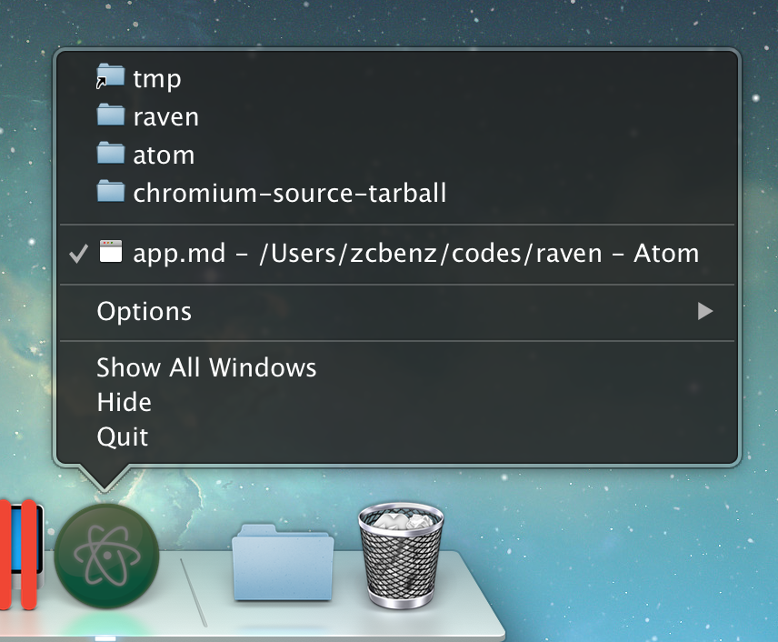
若要增加一个文件到最近文件列表，你可以使用app.addRecentDocument API:
const { app } = require('electron')
app.addRecentDocument('/Users/USERNAME/Desktop/work.type')你也可以使用 app.clearRecentDocuments API 来清空最近文件列表。
const { app } = require('electron')
app.clearRecentDocuments()Windows 注意事项
为了在 Windows 上使用这个特性，你的应用需要被注册为这类文件的处理程序，否则，在你注册之前，文件是不会出现在跳转列表里的。 你可以在 Application Registration 里找到所有关于注册事宜的说明。
当用户点击“跳转列表”上的一个文件时，系统会启动一个新的应用程序的实例 ，而文件的路径将作为一个命令行参数被传入这个实例。
macOS 注意事项
从 "最近文档" 菜单中请求文件时, 将为其发出 app 模块的 open-file 事件。
Rectangle 类型
xNumber - 矩形相对于坐标原点的x坐标(必须为整型).yNumber - 矩形相对于坐标原点的y坐标(必须为整型).widthNumber - 矩形宽度(必须为整型).heightNumber - 矩形高度(必须为整型).
Referrer 对象
urlString - HTTP 的 Referrer 地址（HTTP源地址）。policyString - 可以设置为default,unsafe-url,no-referrer-when-downgrade,no-referrer,origin,strict-origin-when-cross-origin,same-origin和strict-origin. 前往 Referrer-Policy spec 可以查看这些policy的定义。
remote
在渲染进程中使用主进程模块。
进程: 渲染进程
remote 模块为渲染进程（web页面）和主进程通信（IPC）提供了一种简单方法。
在Electron中, GUI 相关的模块 (如 dialog、menu 等) 仅在主进程中可用, 在渲染进程中不可用。 为了在渲染进程中使用它们, ipc 模块是向主进程发送进程间消息所必需的。 使用 remote 模块, 你可以调用 main 进程对象的方法, 而不必显式发送进程间消息, 类似于 Java 的 RMI 。
例如：从渲染进程创建浏览器窗口
const { BrowserWindow } = require('electron').remote
let win = new BrowserWindow({ width: 800, height: 600 })
win.loadURL('https://github.com')注意: 反过来（如果需要从主进程访问渲染进程），可以使用 webContents. executeJavascript 。
Note: The remote module can be disabled for security reasons in the following contexts:
BrowserWindow- by setting theenableRemoteModuleoption tofalse.<webview>- by setting theenableremotemoduleattribute tofalse.
远程对象（Remote Objects）
remote 模块返回的每个对象 (包括函数) 表示主进程中的一个对象 (我们称它为远程对象或远程函数)。 当调用远程对象的方法时, 调用远程函数, 或者使用远程构造函数 (函数) 创建新对象时, 实际上是在发送同步进程消息。
在上面的示例中, [ BrowserWindow 和 win ](browser-window. md) 都是远程对象, new BrowserWindow 在渲染过程中没有创建 BrowserWindow 对象。 取而代之的是，它在主进程中创建了一个 BrowserWindow对象，并且在渲染进程中返回相应的远程对象，即` win </ 0>对象。
注意： 当远程对象被第一次引用时，只有可枚举的属性可以通过远程访问。
注意： 当通过 remote `模块访问时，数组和缓冲区在IPC上复制。 在渲染进程中修改它们不会在主进程中修改它们，反之亦然。
远程对象的生命周期
Electron 确保只要渲染进程中的远程对象一直存在（换句话说，没有被回收），主进程中的相应对象就不会被释放。 当远程对象被垃圾回收后，主进程中的相应对象将被解除引用。
如果远程对象在渲染进程中泄露（例如存储在映射中，但从未释放），则主进程中的相应对象也将被泄漏，所以您应该非常小心，不要泄漏远程对象。
但是，字符串和数字等主要值的类型是通过复制发送的。
将回调传递给主进程
主进程中的代码可以接受来自渲染进程的回调 - 例如remote模块 - 但使用此功能时应该非常小心。
首先，为了避免死锁，传递给主进程的回调被异步调用。 您不应该期望主进程获得传递回调的返回值。
例如，您不能在主进程中调用的Array.map中使用来自渲染器进程的函数：
// 主进程 mapNumbers.js
exports.withRendererCallback = (mapper) => {
return [1, 2, 3].map(mapper)
}
exports.withLocalCallback = () => {
return [1, 2, 3].map(x => x + 1)
}// 渲染进程
const mapNumbers = require('electron').remote.require('./mapNumbers')
const withRendererCb = mapNumbers.withRendererCallback(x => x + 1)
const withLocalCb = mapNumbers.withLocalCallback()
console.log(withRendererCb, withLocalCb)
// [undefined, undefined, undefined], [2, 3, 4]如您所见，渲染器回调的同步返回值不是预期的，而且在主进程中也与相同回调的返回值不符。
其次，传递给主进程的回调将持续到主进程垃圾回收。
例如，下面的代码乍一看似乎是无辜的。 它为远程对象上的close事件安装一个回调：
require('electron').remote.getCurrentWindow().on('close', () => {
// window was closed...
})但请记住, 回调是由主进程引用的, 直到你显式卸载它。 如果不这样做, 每次重新加载窗口时这个回调将再次被安装, 每次重启时都会泄漏一个回调。
更糟的是, 由于以前安装的回调的上下文已释放, 因此在发出 close 事件时, 将在主进程中引发异常。
为了避免这个问题，请确保清除对传递给主进程的渲染器回调的引用。 这涉及到清理事件处理程序, 或者确保主进程被明确告知取消引用来自正在退出的渲染程序的回调。
访问主进程中的内置模块
主过程中的内置模块被添加为 remote 模块中的获取器，因此可以像 electron 模块一样直接使用它们。
const app = require('electron').remote.app
console.log(app)方法
remote 模块具有以下方法:
remote.require(module)
moduleString
返回 any - 主进程中require(module) 返回的对象。 由其相对路径指定的模块将相对于主进程的入口点来解析。
例如:
project/
├── main
│ ├── foo.js
│ └── index.js
├── package.json
└── renderer
└── index.js// main process: main/index.js
const { app } = require('electron')
app.on('ready', () => { /* ... */ })// some relative module: main/foo.js
module.exports = 'bar'// renderer process: renderer/index.js
const foo = require('electron').remote.require('./foo') // barremote.getCurrentWindow()
返回 BrowserWindow - 此网页所属的窗口
Note: Do not use removeAllListeners on BrowserWindow. Use of this can remove all blur listeners, disable click events on touch bar buttons, and other unintended consequences.
remote.getCurrentWebContents()
返回 WebContents - 此网页的 web 内容
remote.process
主进程中的 process 对象。这与 remote.getGlobal('process') 相同, 但已被缓存。
RemoveClientCertificate 对象
typeString -clientCertificate.originString - 关联客户端证书的服务器来源必须从缓存中删除。
RemovePassword 对象
typeString -密码.originString (可选) - 一旦设置origin值，只有与origin相关的认证信息才会被移除，否则整个缓存都将被清空。schemeString (可选) - 认证的scheme类型。 可选类型有basic,digest,ntlm,negotiate. 如果origin被移除，则必须提供此属性值。realmString (可选) - 认证的Realm域信息。如果origin被移除，则必须提供此属性值。usernameString (可选) - 认证的Credentials证书信息。如果origin被移除，则必须提供此属性值。passwordString (可选) - 认证的Credentials证书信息。如果origin被移除，则必须提供此属性值。
交互式解释器 (REPL)
读取(Read)-运算(Eval)-输出(Print)-循环(Loop) (REPL) 是很简单的, 交互式的计算机编程环境，它采用单个用户输入，运算并返回结果给用户。
在这里 repl 模块提供了一个 REPL 的实现, 可以这样使用:
-
如果你的
electron或electron-prebuilt已经安装为本地项目依赖项:./node_modules/.bin/electron --interactive -
如果你的
electron或electron-prebuilt已经为全局方式安装:electron --interactive
这里只会为主进程创建一个REPL。 您可以使用 Dev Tools 的“控制台”选项卡来为渲染器进程获取一个REPL。
注意: electron --interactive 在 Windows 上不可用.
更多的内容可以在这里找到 Node.js REPL docs.
针对 macOS系统 BrowserWindows的展示文件
在 macOS，一个窗口可以设置它展示的文件，文件的图标可以出现在标题栏，当用户 Command-Click 或者 Control-Click 标题栏，文件路径弹窗将会出现。
您还可以设置窗口的编辑状态，以便文件图标可以指示 该窗口中的文档是否已修改。
文件展示弹出菜单:

要设置展示文件窗口，可以使用 BrowserWindow.setRepresentedFilename 和 BrowserWindow.setDocumentEdited APIs：
const { BrowserWindow } = require('electron')
const win = new BrowserWindow()
win.setRepresentedFilename('/etc/passwd')
win.setDocumentEdited(true)sandbox 沙盒选项
创建一个可在Chromiun OS 沙盒中运行的浏览器窗口。 在该模式可用情况下，渲染器为了使用node APIs必须通过IPC与主进程通讯。 但是，为了开启Chromiun OS的沙盒，Electron必须在启动的时候，附上命令行参数
--enable=sandbox。
Chromium主要的安全特征之一便是所有的blink渲染或者JavaScript代码都在sandbox内运行。 该sandbox使用OS特定特征来保障运行在渲染器内的进程不会损害系统。
也就是说，在sandbox模式下，渲染器只能通过IPC委派任务给主进程来对操作系统进行更改。 下述是有关sandbox更多的信息。
Electron的一个主要特性就是能在渲染进程中运行Node.js（使用web技术能让我们更加便捷的构建一个桌面应用），但是在渲染进程中沙箱是不可用的。 这是因为大多数Node.js 的API都需要系统权限。 比如 ，没有文件系统权限的情况下require()是不可用的，而该文件系统权限在沙箱环境下是不可用的。
通常，对于桌面应用来说这些都不是问题，因为应用的代码都是可信的；但是显示一些不是那么受信任的网站会使得Electron相比Chromium而言安全性下降。 因为应用程序需要更多的安全性，sandbox 标记将使electron产生一个与沙箱兼容的经典chromium渲染器。
一个沙箱环境下的渲染器没有node.js运行环境，并且不会将Node.js 的 JavaScript APIs 暴露给客户端代码。 唯一的例外是预加载脚本, 它可以访问electron渲染器 API 的一个子集(subset)。
另一个区别是沙箱渲染器不修改任何默认的 JavaScript API。 因此, 某些 api ，（比如 window.open）将像在chromium中一样工作 (即它们不返回 BrowserWindowProxy `)。
示例
创建沙盒窗口, 只需将 sandbox: true ` 传递到 ` webPreferences `:
let win
app.on('ready', () => {
win = new BrowserWindow({
webPreferences: {
sandbox: true
}
})
win.loadURL('http://google.com')
})以上代码中被创建的BrowserWindow禁用了node.js，并且只能使用IPC通信。 这个选项的设置阻止electron在渲染器中创建一个node.js运行环境。 同时，在这个新窗口内window.open将按原生方式工作（默认情况下electron会创建一个BrowserWindow并通过window.open向它返回一个代理）
需要注意的是，这个选项本身不会启用操作系统强制的沙箱。 要启用此功能，必须在命令行参数里加上 --enable-sandbox 传递给 electron, 这将会使所有的 BrowserWindow 实例强制使用 sandbox: true.
let win
app.on('ready', () => {
// no need to pass `sandbox: true` since `--enable-sandbox` was enabled.
win = new BrowserWindow()
win.loadURL('http://google.com')
})请注意, 只调用 app.commandLine.appendSwitch('--enable-sandbox') 是不够的, 因为 electron/node 只会在能改变 chromium 沙箱设置后运行代码。 这个改变只能在命令行里传递给 electron:
electron --enable-sandbox app.js如果启用了 --enable-sandbox, 则无法创建正常的Electron窗口, 因此不能只为某些渲染而去激活 OS 沙盒。
如果需要在一个应用程序中混合使用沙箱和非沙箱渲染, 只需省略 -enable-sandbox 参数即可。 如果没有此参数, 使用 sandbox: true 创建的窗口仍将禁用 node. js 并仅能通过 IPC 进行通信, 从安全视角看这本身已经获得了好处。
预加载
一个App可以使用预加载脚本自定义沙箱渲染器。 这里有一个例子：
let win
app.on('ready', () => {
win = new BrowserWindow({
webPreferences: {
sandbox: true,
preload: 'preload.js'
}
})
win.loadURL('http://google.com')
})和 preload.js:
// 一旦javascript上下文创建，这个文件就会被自动加载 它在一个
//私有环境内运行, 可以访问 electron 渲染器的 api的子集 。 我们必须小心,
//不要泄漏任何对象到全局范围!
const fs = require('fs')
const { ipcRenderer } = require('electron')
// 使用 `fs` 模块读取配置文件
const buf = fs.readFileSync('allowed-popup-urls.json')
const allowedUrls = JSON.parse(buf.toString('utf8'))
const defaultWindowOpen = window.open
function customWindowOpen (url, ...args) {
if (allowedUrls.indexOf(url) === -1) {
ipcRenderer.sendSync('blocked-popup-notification', location.origin, url)
return null
}
return defaultWindowOpen(url, ...args)
}
window.open = customWindowOpen在预加载脚本中要注意的重要事项:
- 尽管沙盒渲染器没有运行 node. js, 但它仍然可以访问受限制的类似于节点的环境:
Buffer、process、setImmediate和require这些依然可用可用。 - 预加载脚本可以通过
remote和ipcRenderer模块间接访问主进程中的所有 api。 这是fs(上面使用的) 和其他模块的实现方式: 它们是主进程中的 remote 对象的代理。 - 预加载脚本必须包含在单个脚本中, 但可以使用像 browserify 这样的工具, 将多个模块组成复杂的预加载代码, 如下所述。 事实上, electron用browserify来提供一个类Node环境以便于预加载脚本。
要创建 browserify 包并将其用作预加载脚本, 应使用类似下面的内容:
browserify preload/index.js \
-x electron \
-x fs \
--insert-global-vars=__filename,__dirname -o preload.js-x 标志应该和已经在预加载作用域中公开的所有引用到的模块一起使用, 并通知 browserify 使用封闭的 require 函数。 --insert-global-vars 将确保 process、Buffer 和 setImmediate 也从封闭作用域 (通常 browserify 为这些代码注入代码) 中获取。
当前预加载作用域中提供的 require 函数公开了以下模块:
child_process-
electroncrashReporterremoteipcRendererwebFrame
fsostimersurl
可以根据需要添加更多的electron api 以在沙箱中使用, 但主进程中的任何模块都可以通过 electron.remote.require 使用。
状态
请小心使用sandbox选项，它仍是一个实验性特性。 我们仍然不知道将某些 electron api 暴露给预加载脚本的安全性问题, 但在显示不受信任的内容之前, 需要考虑以下一些事项:
- 某个预加载脚本可能会意外把私有 API 暴露给不可信的代码。
- V8 引擎中的某些 bug 可能允许恶意代码访问渲染器预加载 api, 从而有效地通过
remote模块授予对系统的完全访问权限。
由于在 electron 中渲染不受信任的内容仍然是未知的领域, 因此暴露给沙盒预加载脚本中的 api 应被认为比其他 electron api 更不稳定, 并且这些API可能会更改以修复安全问题。
一个应该大大提高安全性的方法，是阻止 IPC 默认情况下来自沙盒渲染器的消息，允许主进程显式定义允许渲染器发送的一组消息。
screen
检索有关屏幕大小、显示器、光标位置等的信息。
在 app 模块发出 ready 事件之前, 您不能引用或者使用此模块。
在渲染进程中传值取决于remote模块，因此在这个模块禁用时无法使用
screen 是一个 EventEmitter.
注意: 在 renderer/DevTools 中, window.screen 是一个保留的 DOM 属性, 因此编写 let { screen } = require('electron') 将不起作用。
创建填充整个屏幕的窗口的示例:
const electron = require('electron')
const { app, BrowserWindow } = electron
let win
app.on('ready', () => {
const { width, height } = electron.screen.getPrimaryDisplay().workAreaSize
win = new BrowserWindow({ width, height })
win.loadURL('https://github.com')
})另一个在外部显示器中创建窗口的例子
const electron = require('electron')
const { app, BrowserWindow } = require('electron')
let win
app.on('ready', () => {
let displays = electron.screen.getAllDisplays()
let externalDisplay = displays.find((display) => {
return display.bounds.x !== 0 || display.bounds.y !== 0
})
if (externalDisplay) {
win = new BrowserWindow({
x: externalDisplay.bounds.x + 50,
y: externalDisplay.bounds.y + 50
})
win.loadURL('https://github.com')
}
})事件
screen模块触发以下事件:
Event: 'display-metrics-changed'
返回:
eventEventdisplayDisplaychangedMetricsString[]
当display中的一个或多个值发生改变时发出。 changedMetrics是描述更改信息的字符串数组。 可能改变的值有bounds, workArea, scaleFactor 和 rotation.
方法
screen模块有以下方法:
screen.getAllDisplays()
返回一个窗口数组Display[]，表示当前可用的窗口。
screen.screenToDipPoint(point) Windows
pointPoint
返回 Point
Converts a screen physical point to a screen DIP point. The DPI scale is performed relative to the display containing the physical point.
screen.dipToScreenPoint(point) Windows
pointPoint
返回 Point
Converts a screen DIP point to a screen physical point. The DPI scale is performed relative to the display containing the DIP point.
screen.screenToDipRect(window, rect) Windows
windowBrowserWindow | nullrectRectangle
返回 Rectangle
Converts a screen physical rect to a screen DIP rect. The DPI scale is performed relative to the display nearest to window. If window is null, scaling will be performed to the display nearest to rect.
screen.dipToScreenRect(window, rect) Windows
windowBrowserWindow | nullrectRectangle
返回 Rectangle
Converts a screen DIP rect to a screen physical rect. The DPI scale is performed relative to the display nearest to window. If window is null, scaling will be performed to the display nearest to rect.
ScrubberItem 对象
标签String (可选)-要在此项中显示的文本.图标NativeImage (可选)-显示在此项中的图像.
安全性，原生能力和你的责任
Web开发人员通常享有浏览器强大的网络安全特性，而自己的代码风险相对较小。 我们的网站从沙箱获得有限权限。我们坚信用户可以享受一个大的工程师团队构建的浏览器，因为他们能够快速响应新发现的安全威胁。
当使用 Electron 时，很重要的一点是要理解 Electron 不是一个 Web 浏览器。 它允许您使用熟悉的 Web 技术构建功能丰富的桌面应用程序，但是您的代码具有更强大的功能。 JavaScript 可以访问文件系统，用户 shell 等。 这允许您构建更高质量的本机应用程序，但是内在的安全风险会随着授予您的代码的额外权力而增加。
考虑到这一点，请注意，展示任意来自不受信任源的内容都将会带来严重的安全风险，而这种风险Electron也没打算处理。 事实上，最流行的 Electron 应用程序(Atom，Slack，Visual Studio Code 等) 主要显示本地内容(即使有远程内容也是无 Node 的、受信任的、安全的内容) - 如果您的应用程序要运行在线的源代码，那么您需要确保源代码不是恶意的。
报告安全问题
有关如何正确上报 Electron 漏洞的信息，参阅 SECURITY.md
Chromium 安全问题和升级
尽管 Electron 努力尽快支持新版本的 Chromium，但开发人员应该意识到，升级是一项严肃的工作 - 涉及手动编辑几十个甚至几百个文件。 受限于当前可用的资源与贡献，Electron 通常不能保持使用最新版本的 Chromium，可能落后几周或几个月。
我们认为，我们当前的更新 Chromium 组件的系统在我们可用的资源和构建在框架之上的大多数应用程序的需求之间取得了适当的平衡。 我们绝对有兴趣听听更多关于在 Electron 上构建事物的人的具体用例。 非常欢迎提出请求并且捐助支持我们的努力。
安全是所有人的共同责任
需要牢记的是，你的 Electron 程序安全性除了依赖于整个框架基础（Chromium、Node.js）、Electron 本身和所有相关 NPM 库的安全性，还依赖于你自己的代码安全性。 因此，你有责任遵循下列安全守则：
-
使用最新版的 Electron 框架搭建你的程序。你最终发行的产品中会包含 Electron、Chromium 共享库和 Node.js 的组件。 这些组件存在的安全问题也可能影响你的程序安全性。 By updating Electron to the latest version, you ensure that critical vulnerabilities (such as nodeIntegration bypasses) are already patched and cannot be exploited in your application.
-
Evaluate your dependencies. While NPM provides half a million reusable packages, it is your responsibility to choose trusted 3rd-party libraries. If you use outdated libraries affected by known vulnerabilities or rely on poorly maintained code, your application security could be in jeopardy.
-
Adopt secure coding practices. The first line of defense for your application is your own code. Common web vulnerabilities, such as Cross-Site Scripting (XSS), have a higher security impact on Electron applications hence it is highly recommended to adopt secure software development best practices and perform security testing.
Isolation For Untrusted Content
A security issue exists whenever you receive code from an untrusted source (e.g. a remote server) and execute it locally. As an example, consider a remote website being displayed inside a default BrowserWindow. If an attacker somehow manages to change said content (either by attacking the source directly, or by sitting between your app and the actual destination), they will be able to execute native code on the user's machine.
⚠️无论如何，在启用Node.js集成的情况下，你都不该加载并执行远程代码。 相反，只使用本地文件（和您的应用打包在一起）来执行Node.js代码 To display remote content, use the
<webview>tag orBrowserView, make sure to disable thenodeIntegrationand enablecontextIsolation.
Electron 安全警告
从Electron 2.0版本开始，开发者将会在开发者控制台看到打印的警告和建议。 这些警告仅在可执行文件名为 Electron 时才会为开发者显示。
你可以通过在process.env 或 window对象上配置ELECTRON_ENABLE_SECURITY_WARNINGS 或ELECTRON_DISABLE_SECURITY_WARNINGS来强制开启或关闭这些警告。
清单：安全建议
为加强程序安全性，你至少应当遵循下列规则：
- 只加载安全的内容
- 禁止在所有渲染器中使用Node.js集成显示远程内容
- 做所有显示远程内容的渲染器中启用上下文隔离。
- 在所有加载远程内容的会话中使用
ses.setPermissionRequestHandler(). - 不要禁用
webSecurity - 定义一个
Content-Security-Policy并设置限制规则(如：script-src 'self') - 不要设置
allowRunningInsecureContent为 true. - 不要开启实验性功能
- 不要使用
enableBlinkFeatures <webview>：不要使用allowpopups<webview>：验证选项与参数- 禁用或限制网页跳转
- 禁用或限制新窗口创建
- 不要对不可信的内容使用
openExternal - Disable the
remotemodule - Filter the
remotemodule
To automate the detection of misconfigurations and insecure patterns, it is possible to use electronegativity. For additional details on potential weaknesses and implementation bugs when developing applications using Electron, please refer to this guide for developers and auditors
1) 仅加载安全内容
任何不属于你的应用的资源都应该使用像HTTPS这样的安全协议来加载。 换言之， 不要使用不安全的协议 （如 HTTP）。 同理，我们建议使用WSS，避免使用WS，建议使用FTPS ，避免使用FTP，等等诸如此类的协议。
为什么？
HTTPS 有三个主要好处：
1) 它对远程服务器进行身份验证, 确保您的应用程序连接到正确的主机而不是模仿器。 2) 确保数据完整性, 断言数据在应用程序和主机之间传输时未被修改。 3) 它对用户和目标主机之间的通信进行加密, 从而更难窃听应用程序和主机之间发送的信息。
怎么做？
// 不推荐
browserWindow.loadURL ('http://example.com')
// 推荐
browserWindow.loadURL ('https://example.com')<!-- 不推荐 -->
<script crossorigin src="http://example.com/react.js"></script>
<link rel="stylesheet" href="http://example.com/style.css">
<!-- 推荐 -->
<script crossorigin src="https://example.com/react.js"></script>
<link rel="stylesheet" href="https://example.com/style.css">2) Do not enable Node.js Integration for Remote Content
This recommendation is the default behavior in Electron since 5.0.0.
It is paramount that you do not enable Node.js integration in any renderer (BrowserWindow, BrowserView, or <webview>) that loads remote content. 其目的是限制您授予远程内容的权限, 从而使攻击者在您的网站上执行 JavaScript 时更难伤害您的用户。
在此之后，你可以为指定的主机授予附加权限。 举例来说，如果你正在打开一个指向 "example.com" 的 BrowserWindow，你可以给它正好所需的权限，无需再多。
为什么？
如果攻击者跳过渲染进程并在用户电脑上执行恶意代码，那么这种跨站脚本(XSS) 攻击的危害是非常大的。 跨站脚本攻击很常见，通常情况下，威力仅限于执行代码的网站。 禁用Node.js集成有助于防止XSS攻击升级为“远程代码执行” (RCE) 攻击。
怎么做？
// Bad
const mainWindow = new BrowserWindow({
webPreferences: {
nodeIntegration: true,
nodeIntegrationInWorker: true
}
})
mainWindow.loadURL('https://example.com')// Good
const mainWindow = new BrowserWindow({
webPreferences: {
preload: path.join(app.getAppPath(), 'preload.js')
}
})
mainWindow.loadURL('https://example.com')<!-- 不推荐 -->
<webview nodeIntegration src="page.html"></webview>
<!-- 推荐 -->
<webview src="page.html"></webview>当禁用Node.js集成时，你依然可以暴露API给你的站点以使用Node.js的模块功能或特性。 预加载脚本依然可以使用require等Node.js特性， 以使开发者可以暴露自定义API给远程加载内容。
在下面的预加载脚本例子中，后加载的网站内容可以使用window.readConfig()方法，但不能使用Node.js特性。
const { readFileSync } = require('fs')
window.readConfig = function () {
const data = readFileSync('./config.json')
return data
}3) 为远程内容开启上下文隔离
上下文隔离是Electron的一个特性，它允许开发者在预加载脚本里运行代码，里面包含Electron API和专用的JavaScript上下文。 实际上，这意味全局对象如 Array.prototype.push 或 JSON.parse等无法被渲染进程里的运行脚本修改。
Electron使用了和Chromium相同的Content Scripts技术来开启这个行为。
Even when you use nodeIntegration: false to enforce strong isolation and prevent the use of Node primitives, contextIsolation must also be used.
为什么？
上下文隔离使得每个运行在渲染器上的脚本无需担心改变JavaScript环境变量而与ElectronAPI或预加载脚本发生冲突。
While still an experimental Electron feature, context isolation adds an additional layer of security. It creates a new JavaScript world for Electron APIs and preload scripts, which mitigates so-called "Prototype Pollution" attacks.
同时，预加载脚本依然能访问document和window对象。换个角度，就像你以很小的投入却得到双倍回报一样。
怎么做？
// Main process
const mainWindow = new BrowserWindow({
webPreferences: {
contextIsolation: true,
preload: path.join(app.getAppPath(), 'preload.js')
}
})// 预加载脚本
// 在页面加载前设置变量
webFrame.executeJavaScript('window.foo = "foo";')
// 这个变量仅限于当前上下文，被加载的页面将无权访问
window.bar = 'bar'
document.addEventListener('DOMContentLoaded', () => {
// 结果为 'undefined'，因为 window.foo 仅在主上下文中可用
console.log(window.foo)
// 结果为 'bar'，因为 window.bar 定义在本上下文中
console.log(window.bar)
})4) 处理来自远程内容的会话许可请求
当你使用Chromes时，也许见过这种许可请求：每当网站尝试使用某个特性时，就会弹出让用户手动确认(如网站通知)
此API基于Chromium permissions API，并已实现对应的许可类型。
为什么？
默认情况下，Electron将自动批准所有的许可请求，除非开发者手动配置一个自定义处理函数。 尽管默认如此，有安全意识的开发者可能希望默认反着来。
怎么做？
const { session } = require('electron')
session
.fromPartition('some-partition')
.setPermissionRequestHandler((webContents, permission, callback) => {
const url = webContents.getURL()
if (permission === 'notifications') {
// Approves the permissions request
callback(true)
}
// Verify URL
if (!url.startsWith('https://example.com/')) {
// Denies the permissions request
return callback(false)
}
})5) 不要禁用WebSecurity
Electron的默认值即是建议值。
在渲染进程（BrowserWindow、BrowserView 和 <webview>）中禁用 webSecurity 将导致至关重要的安全性功能被关闭。
不要在生产环境中禁用webSecurity。
为什么？
禁用 webSecurity 将会禁止同源策略并且将 allowRunningInsecureContent 属性置 true。 换句话说，这将使得来自其他站点的非安全代码被执行。
怎么做？
// 不推荐
const mainWindow = new BrowserWindow({
webPreferences: {
webSecurity: false
}
})// 推荐
const mainWindow = new BrowserWindow()<!-- 不推荐 -->
<webview disablewebsecurity src="page.html"></webview>
<!-- 推荐 -->
<webview src="page.html"></webview>6) 定义一个内容安全策略
内容安全策略(CSP) 是应对跨站脚本攻击和数据注入攻击的又一层保护措施。 我们建议任何载入到Electron的站点都要开启。
为什么？
CSP允许Electron通过服务端内容对指定页面的资源加载进行约束与控制。 如果你定义https://example.com这个源，所属这个源的脚本都允许被加载，反之https://evil.attacker.com不会被允许加载运行。 对于提升你的应用安全性，设置CSP是个很方便的办法。
下面的CSP设置使得Electron只能执行自身站点和来自apis.example.com的脚本。
// 不推荐
Content-Security-Policy: '*'
// 推荐
Content-Security-Policy: script-src 'self' https://apis.example.comCSP HTTP头
Electron 会处理 Content-Security-Policy HTTP 标头，它可以在 webRequest.onHeadersReceived 中进行设置：
const { session } = require('electron')
session.defaultSession.webRequest.onHeadersReceived((details, callback) => {
callback({
responseHeaders: {
...details.responseHeaders,
'Content-Security-Policy': ['default-src \'none\'']
}
})
})CSP元标签
CSP的首选传递机制是HTTP报头，但是在使用file://协议加载资源时，不可能使用此方法。 It can be useful in some cases, such as using the file:// protocol, to set a policy on a page directly in the markup using a <meta> tag:
<meta http-equiv="Content-Security-Policy" content="default-src 'none'">7) 不要设置allowRunningInsecureContent为true
Electron的默认值即是建议值。
默认情况下，Electron不允许网站在HTTPS中加载或执行非安全源(HTTP) 中的脚本代码、CSS或插件。 将allowRunningInsecureContent属性设为true将禁用这种保护。
当网站的初始内容通过HTTPS加载并尝试在子请求中加载HTTP的资源时，这被称为"混合内容"。
怎么做？
// 不推荐
const mainWindow = new BrowserWindow({
webPreferences: {
allowRunningInsecureContent: true
}
})// 推荐
const mainWindow = new BrowserWindow({})为什么？
实验室特性，恰如其名，是实验性质且不对所有Chromium用户开启。更进一步说，这些特性对Electron的整体影响可能没有测试。
尽管存在合理的使用场景，但是除非你知道你自己在干什么，否则你不应该开启这个属性。
怎么做？
// 不推荐
const mainWindow = new BrowserWindow({
webPreferences: {
experimentalFeatures: true
}
})// 推荐
const mainWindow = new BrowserWindow({})9) 不要使用enableBlinkFeatures
Electron的默认值即是建议值。
Blink是Chromium里的渲染引擎名称。 就像experimentalFeatures一样，enableBlinkFeatures属性将使开发者启用被默认禁用的特性。
为什么？
通常来说，某个特性默认不被开启肯定有其合理的原因。 针对特定特性的合理使用场景是存在的。 作为开发者，你应该非常明白你为何要开启它，有什么后果，以及对你应用安全性的影响。 在任何情况下都不应该推测性的开启特性。
怎么做？
// 不推荐
const mainWindow = new BrowserWindow({
webPreferences: {
enableBlinkFeatures: ['ExecCommandInJavaScript']
}
})// 推荐
const mainWindow = new BrowserWindow()10) 不要使用allowpopups
Electron的默认值即是建议值。
如果您正在使用 <webview> ，您可能需要页面和脚本加载进您的 <webview> 标签以打开新窗口。 开启allowpopups属性将使得BrowserWindows可以通过window.open()方法创建。 否则， <webview> 标签内不允许创建新窗口。
为什么？
如果你不需要弹窗，最好使用默认值以关闭新BrowserWindows的创建。 以下是最低的权限要求原则：若非必要，不要再网站中创建新窗口。
怎么做？
<!-- 不推荐 -->
<webview allowpopups src="page.html"></webview>
<!-- 推荐 -->
<webview src="page.html"></webview>11) 创建WebView前确认其选项
通过渲染进程创建的WebView是不开启Node.js集成的，且也不能由自身开启。 但是，WebView可以通过其webPreferences属性创建一个独立的渲染进程。
It is a good idea to control the creation of new <webview> tags from the main process and to verify that their webPreferences do not disable security features.
为什么？
Since <webview> live in the DOM, they can be created by a script running on your website even if Node.js integration is otherwise disabled.
Electron 可以让开发者关闭各种控制渲染进程的安全特性。 In most cases, developers do not need to disable any of those features - and you should therefore not allow different configurations for newly created <webview> tags.
怎么做？
Before a <webview> tag is attached, Electron will fire the will-attach-webview event on the hosting webContents. 利用这个事件来阻止可能含有不安全选项的 webViews 创建。
app.on('web-contents-created', (event, contents) => {
contents.on('will-attach-webview', (event, webPreferences, params) => {
// Strip away preload scripts if unused or verify their location is legitimate
delete webPreferences.preload
delete webPreferences.preloadURL
// Disable Node.js integration
webPreferences.nodeIntegration = false
// Verify URL being loaded
if (!params.src.startsWith('https://example.com/')) {
event.preventDefault()
}
})
})强调一下，这份列表只是将风险降到最低，并不会完全屏蔽风险。 如果您的目的是展示一个网站，浏览器将是一个更安全的选择。
12) Disable or limit navigation
If your app has no need to navigate or only needs to navigate to known pages, it is a good idea to limit navigation outright to that known scope, disallowing any other kinds of navigation.
为什么？
Navigation is a common attack vector. If an attacker can convince your app to navigate away from its current page, they can possibly force your app to open web sites on the Internet. Even if your webContents are configured to be more secure (like having nodeIntegration disabled or contextIsolation enabled), getting your app to open a random web site will make the work of exploiting your app a lot easier.
A common attack pattern is that the attacker convinces your app's users to interact with the app in such a way that it navigates to one of the attacker's pages. This is usually done via links, plugins, or other user-generated content.
怎么做？
If your app has no need for navigation, you can call event.preventDefault() in a will-navigate handler. If you know which pages your app might navigate to, check the URL in the event handler and only let navigation occur if it matches the URLs you're expecting.
We recommend that you use Node's parser for URLs. Simple string comparisons can sometimes be fooled - a startsWith('https://example.com') test would let https://example.com.attacker.com through.
const URL = require('url').URL
app.on('web-contents-created', (event, contents) => {
contents.on('will-navigate', (event, navigationUrl) => {
const parsedUrl = new URL(navigationUrl)
if (parsedUrl.origin !== 'https://example.com') {
event.preventDefault()
}
})
})13) 禁用或限制新窗口的创建
If you have a known set of windows, it's a good idea to limit the creation of additional windows in your app.
为什么？
Much like navigation, the creation of new webContents is a common attack vector. Attackers attempt to convince your app to create new windows, frames, or other renderer processes with more privileges than they had before; or with pages opened that they couldn't open before.
If you have no need to create windows in addition to the ones you know you'll need to create, disabling the creation buys you a little bit of extra security at no cost. This is commonly the case for apps that open one BrowserWindow and do not need to open an arbitrary number of additional windows at runtime.
怎么做？
webContents will emit the new-window event before creating new windows. That event will be passed, amongst other parameters, the url the window was requested to open and the options used to create it. We recommend that you use the event to scrutinize the creation of windows, limiting it to only what you need.
const { shell } = require('electron')
app.on('web-contents-created', (event, contents) => {
contents.on('new-window', async (event, navigationUrl) => {
// In this example, we'll ask the operating system
// to open this event's url in the default browser.
event.preventDefault()
await shell.openExternal(navigationUrl)
})
})14) Do not use openExternal with untrusted content
Shell's openExternal allows opening a given protocol URI with the desktop's native utilities. On macOS, for instance, this function is similar to the open terminal command utility and will open the specific application based on the URI and filetype association.
为什么？
Improper use of openExternal can be leveraged to compromise the user's host. When openExternal is used with untrusted content, it can be leveraged to execute arbitrary commands.
怎么做？
// Bad
const { shell } = require('electron')
shell.openExternal(USER_CONTROLLED_DATA_HERE)// Good
const { shell } = require('electron')
shell.openExternal('https://example.com/index.html')15) Disable the remote module
The remote module provides a way for the renderer processes to access APIs normally only available in the main process. Using it, a renderer can invoke methods of a main process object without explicitly sending inter-process messages. If your desktop application does not run untrusted content, this can be a useful way to have your renderer processes access and work with modules that are only available to the main process, such as GUI-related modules (dialogs, menus, etc.).
However, if your app can run untrusted content and even if you sandbox your renderer processes accordingly, the remote module makes it easy for malicious code to escape the sandbox and have access to system resources via the higher privileges of the main process. Therefore, it should be disabled in such circumstances.
为什么？
remote uses an internal IPC channel to communicate with the main process. "Prototype pollution" attacks can grant malicious code access to the internal IPC channel, which can then be used to escape the sandbox by mimicking remote IPC messages and getting access to main process modules running with higher privileges.
Additionally, it's possible for preload scripts to accidentally leak modules to a sandboxed renderer. Leaking remote arms malicious code with a multitude of main process modules with which to perform an attack.
Disabling the remote module eliminates these attack vectors. Enabling context isolation also prevents the "prototype pollution" attacks from succeeding.
怎么做？
// Bad if the renderer can run untrusted content
const mainWindow = new BrowserWindow({})// Good
const mainWindow = new BrowserWindow({
webPreferences: {
enableRemoteModule: false
}
})<!-- Bad if the renderer can run untrusted content -->
<webview src="page.html"></webview>
<!-- Good -->
<webview enableremotemodule="false" src="page.html"></webview>16) Filter the remote module
If you cannot disable the remote module, you should filter the globals, Node, and Electron modules (so-called built-ins) accessible via remote that your application does not require. This can be done by blocking certain modules entirely and by replacing others with proxies that expose only the functionality that your app needs.
为什么？
Due to the system access privileges of the main process, functionality provided by the main process modules may be dangerous in the hands of malicious code running in a compromised renderer process. By limiting the set of accessible modules to the minimum that your app needs and filtering out the others, you reduce the toolset that malicious code can use to attack the system.
Note that the safest option is to fully disable the remote module. If you choose to filter access rather than completely disable the module, you must be very careful to ensure that no escalation of privilege is possible through the modules you allow past the filter.
怎么做？
const readOnlyFsProxy = require(/* ... */) // exposes only file read functionality
const allowedModules = new Set(['crypto'])
const proxiedModules = new Map(['fs', readOnlyFsProxy])
const allowedElectronModules = new Set(['shell'])
const allowedGlobals = new Set()
app.on('remote-require', (event, webContents, moduleName) => {
if (proxiedModules.has(moduleName)) {
event.returnValue = proxiedModules.get(moduleName)
}
if (!allowedModules.has(moduleName)) {
event.preventDefault()
}
})
app.on('remote-get-builtin', (event, webContents, moduleName) => {
if (!allowedElectronModules.has(moduleName)) {
event.preventDefault()
}
})
app.on('remote-get-global', (event, webContents, globalName) => {
if (!allowedGlobals.has(globalName)) {
event.preventDefault()
}
})
app.on('remote-get-current-window', (event, webContents) => {
event.preventDefault()
})
app.on('remote-get-current-web-contents', (event, webContents) => {
event.preventDefault()
})
app.on('remote-get-guest-web-contents', (event, webContents, guestWebContents) => {
event.preventDefault()
})SegmentedControlSegment 对象
labelString (可选)-要在segment中显示的文本.iconNativeImage (可选)-在segment中显示的图像.enabledBoolean (可选) - 此 segment 是否可选. 默认: true.
session
管理浏览器会话、cookie、缓存、代理设置等。
进程：主进程
session 模块可用于创建新的 session 对象。
你还可以使用WebContents的session属性或session模块访问现有页的session
const { BrowserWindow } = require('electron')
let win = new BrowserWindow({ width: 800, height: 600 })
win.loadURL('http://github.com')
const ses = win.webContents.session
console.log(ses.getUserAgent())方法
session 模块具有以下方法:
session.fromPartition(partition[, options])
partitionString-
选项Object (可选)cacheBoolean - 是否可以使用缓存.
Returns Session - 根据partition字符串产生的session实例。 当这里已存在一个Session具有相同的partition, 它将被返回; 否则一个新的Session实例将根据options被创建。
如果 partition 以 persist:开头, 该页面将使用持续的 session，并在所有页面生效，且使用同一个partition. 如果没有 persist: 前缀, 页面将使用 in-memory session. 如果没有设置partition，app 将返回默认的session。
要根据options创建Session，你需要确保Session的partition在之前从未被使用。 没有办法修改一个已存在的Session对象的options。
属性
session 模块具有以下方法:
session.defaultSession
一个Session对象，该应用程序的默认session对象。
类: Session
获取和设置Session的属性。
进程：主进程
你可以创建一个 Session对象在session模块中。
const { session } = require('electron')
const ses = session.fromPartition('persist:name')
console.log(ses.getUserAgent())实例事件
以下事件会在Session实例触发。
Instance Events
eventEventitemDownloadItemwebContentsWebContents
当 Electron 刚要在webContents中下载`item<0>的时候触发。
调用event.preventDefault()`方法，将会停止下载，并且在进程的next tick中，`item`将不再可用。
const { session } = require('electron')
session.defaultSession.on('will-download', (event, item, webContents) => {
event.preventDefault()
require('request')(item.getURL(), (data) => {
require('fs').writeFileSync('/somewhere', data)
})
})
实例方法
在Session实例对象中，有以下方法:
ses.getCacheSize(callback)
-
callbackFunction - 回调函数sizeInteger 缓存大小（单位：bytes）
Callback会被调用，参数是session的当前缓存大小。
ses.clearStorageData([options, callback])
-
选项Object (可选)originString - (可选项) 这个值应该按照window.location.origin的形式:协议://主机名:端口方式设置。storagesString - The types of storages to clear, can contain:appcache,cookies,filesystem,indexdb,localstorage,shadercache,websql,serviceworkers,cachestorage.quotasString[] - (可选项) 要清除的配额类型, 包含:temporary,persistent,syncable。
callbackFunction (可选) - 会在操作完成后被调用.
清除Web storage的数据。
ses.flushStorageData()
写入任何未写入DOMStorage数据到磁盘.
ses.setProxy(config, callback)
-
configObjectpacScriptString - 与 PAC 文件关联的 URL。proxyRulesString - 表明要使用的代理规则。proxyBypassRulesString - 表明哪些 url 应绕过代理设置的规则。
callbackFunction - 会在操作完成之后被调用。
代理设置
当pacScript和proxyRules一起提供时, proxyRules 选项会被忽略, 会使用pacScript配置。
proxyRules 要遵循以下规则:
proxyRules = schemeProxies[";"<schemeProxies>]
schemeProxies = [<urlScheme>"="]<proxyURIList>
urlScheme = "http" | "https" | "ftp" | "socks"
proxyURIList = <proxyURL>[","<proxyURIList>]
proxyURL = [<proxyScheme>"://"]<proxyHost>[":"<proxyPort>]例如：
http=foopy:80;ftp=foopy2- Use HTTP proxyfoopy:80forhttp://URLs, and HTTP proxyfoopy2:80forftp://URLs.foopy:80- Use HTTP proxyfoopy:80for all URLs.foopy:80,bar,direct://- Use HTTP proxyfoopy:80for all URLs, failing over tobariffoopy:80is unavailable, and after that using no proxy.socks4://foopy- Use SOCKS v4 proxyfoopy:1080for all URLs.http=foopy,socks5://bar.com- Use HTTP proxyfoopyfor http URLs, and fail over to the SOCKS5 proxybar.comiffoopyis unavailable.http=foopy,direct://- Use HTTP proxyfoopyfor http URLs, and use no proxy iffoopyis unavailable.http=foopy;socks=foopy2- 对于http URL，用foopy作为HTTP协议代理，而其它所有URL则用socks4://foopy2协议。
proxyBypassRules是一个用逗号分隔的规则列表, 如下所述:
-
[ URL_SCHEME "://" ] HOSTNAME_PATTERN [ ":" <port> ]与 HOSTNAME_PATTERN 模式匹配的所有主机名。
例如: "foobar.com", "foobar.com", ".foobar.com", "foobar.com:99", "x..y.com:99"
-
"." HOSTNAME_SUFFIX_PATTERN [ ":" PORT ]匹配特定域名后缀。
例如： ".google.com", ".com", ".google.com"
-
-
[ SCHEME "://" ] IP_LITERAL [ ":" PORT ]匹配 IP 地址文本的 url。
例如: "127.0.1", "[0:0::1]", "[::1]", "[::1]:99"
-
IP_LITERAL "/" PREFIX_LENGTH_IN_BITS匹配位于给定范围之间的 IP 文本的任何 URL。IP 范围是使用 CIDR 表示法指定的。
例如: "192.168.1.1/16", "fefe:13::abc/33".
-
<local>匹配本地地址。local 的含义是，是否匹配其中一个: "127.0.0.1", "::1", "localhost".
ses.resolveProxy(url, callback)
urlURL-
callbackFunction - 回调函数proxyString
解析 url 的代理信息。执行被请求时, 将使用 callback(proxy) 来调用 callback。
ses.enableNetworkEmulation(options)
-
选项ObjectofflineBoolean (可选) - 是否模拟网络中断、离线。默认 否。latencyDouble (可选) - RTT时延毫秒值. 默认为0将禁用时延调节。downloadThroughputDouble (可选) - 指定下载Bps速率。默认为0将禁用下载限速。uploadThroughputDouble (可选) - 指定上传Bps速率. 默认0将禁用上传速率限制。
通过指定的配置为 session 模拟网络。
// To emulate a GPRS connection with 50kbps throughput and 500 ms latency.
window.webContents.session.enableNetworkEmulation({
latency: 500,
downloadThroughput: 6400,
uploadThroughput: 6400
})
// To emulate a network outage.
window.webContents.session.enableNetworkEmulation({ offline: true })ses.disableNetworkEmulation()
禁用所有为 session 模拟的已激活网络。重置为原始网络配置。
ses.setCertificateVerifyProc(proc)
-
procFunction - 回调函数-
requestObjecthostnameStringcertificateCertificateverificationResultString - chromium证书验证结果errorCodeInteger - 错误代码
-
callbackFunction - 回调函数-
verificationResultInteger - 证书错误代码之一，来自 这里。 除了证书错误代码外，还可以使用以下特殊代码。-0- 表示成功并禁用证书透明度验证-2- 表示失败-3- 使用chromium的验证结果
-
-
每当一个服务器证书请求验证，proc 将被这样 proc(request, callback) 调用，为 session 设置证书验证过程。 回调函数 callback(0) 接受证书，callback(-2) 驳回证书。
调用 setCertificateVerifyProc（null）将恢复为默认证书验证过程。
const { BrowserWindow } = require('electron')
let win = new BrowserWindow()
win.webContents.session.setCertificateVerifyProc((request, callback) => {
const { hostname } = request
if (hostname === 'github.com') {
callback(0)
} else {
callback(-2)
}
})ses.setPermissionRequestHandler(handler)
-
handlerFunction | nullwebContentsWebContents - 请求权限的WebContents。permissionString - 枚举 'media', 'geolocation', 'notifications', 'midiSysex', 'pointerLock', 'fullscreen', 'openExternal'.-
callbackFunction - 回调函数permissionGrantedBoolean - 允许或拒绝该权限.
-
detailsObject - 一些属性只有在某些授权状态下可用。externalURLString -openExternal请求的地址。mediaTypesString[] - The types of media access being requested, elements can bevideooraudio
设置可用于响应 session 的权限请求的处理程序。 调用 callback(true) 将允许该权限, 调用 callback(false) 将拒绝它。 若要清除处理程序, 请调用 setPermissionRequestHandler (null)。
const { session } = require('electron')
session.fromPartition('some-partition').setPermissionRequestHandler((webContents, permission, callback) => {
if (webContents.getURL() === 'some-host' && permission === 'notifications') {
return callback(false) // denied.
}
callback(true)
})ses.setPermissionCheckHandler(handler)
-
handlerFunction| null webContentsWebContents - WebContents checking the permission.permissionString - Enum of 'media'.requestingOriginString - The origin URL of the permission check-
detailsObject - 一些属性只有在某些授权状态下可用。securityOriginString - The security orign of themediacheck.mediaTypeString - The type of media access being requested, can bevideo,audioorunknown
Sets the handler which can be used to respond to permission checks for the session. Returning true will allow the permission and false will reject it. To clear the handler, call setPermissionCheckHandler(null).
const { session } = require('electron')
session.fromPartition('some-partition').setPermissionCheckHandler((webContents, permission) => {
if (webContents.getURL() === 'some-host' && permission === 'notifications') {
return false // denied
}
return true
})ses.allowNTLMCredentialsForDomains(domains)
domainsString - 一个逗号分隔的服务器列表, 用于收集已经启用身份验证的服务器。
动态设置是否始终为 HTTP NTLM 发送凭据或协商身份验证。
const { session } = require('electron')
// 以 "example.com"、"foobar.com"、"baz" 结尾的 url 用于身份验证。
session.defaultSession.allowNTLMCredentialsForDomains('*example.com, *foobar.com, *baz')
// 所有的 url 都可以用作身份验证
session.defaultSession.allowNTLMCredentialsForDomains('*')ses.setUserAgent(userAgent[, acceptLanguages])
userAgentStringacceptLanguagesString (可选)
覆盖当前会话的 userAgent 和 acceptLanguages.
acceptLanguages 必须是用逗号分隔的语言代码列表，例如 "en-US,fr,de,ko,zh-CN,ja".
这不会影响现有的WebContents, 并且每个WebContents都可以使用 webContents.setUserAgent重写会话范围的user agent。
ses.getUserAgent()
返回 String - 当前会话的 user agent.
ses.getBlobData(identifier, callback)
identifierString - 有效的 UUID.-
callbackFunction - 回调函数resultBuffer - Blob 数据.
ses.createInterruptedDownload(options)
-
optionsObjectpathString - 下载的绝对路径.urlChainString[] - 完整的 url 下载地址.mimeTypeString (可选)offsetInteger - 下载的开始范围.lengthInteger - 下载的总长度。lastModifiedString - 上次修改的标头值。eTagString - ETag 标头值。startTimeDouble (optional) - 下载的时间是从 UNIX 时代以来的秒数开始的。
允许从上一个 Session 恢复 cancelled 或 interrupted 下载。 该 API 将生成一个 DownloadItem , 可使用 will-download 事件进行访问。 DownloadItem 将不具有与之关联的任何 WebContents, 并且初始状态将为 interrupted。 只有在 DownloadItem 上调用 resume API 时, 才会启动下载。
ses.clearAuthCache(options[, callback])
options(RemovePassword | RemoveClientCertificate)callbackFunction (optional) - 会在操作完成后被调用.
清除会话的 HTTP 身份验证缓存。
ses.setPreloads(preloads)
preloadsString[] - 数组，该数组由所有需要进行预加载的脚本的绝对路径组成。
Adds scripts that will be executed on ALL web contents that are associated with this session just before normal preload scripts run.
ses.getPreloads()
返回 String[] 返回一个数组，这个数组由已经注册过的预加载脚本的路径组成。
ses.webRequest
此会话的 WebRequest 对象。
ses.protocol
此会话的 协议 对象。
const { app, session } = require('electron')
const path = require('path')
app.on('ready', function () {
const protocol = session.fromPartition('some-partition').protocol
protocol.registerFileProtocol('atom', function (request, callback) {
var url = request.url.substr(7)
callback({ path: path.normalize(`${__dirname}/${url}`) })
}, function (error) {
if (error) console.error('Failed to register protocol')
})
})ses.netLog
A NetLog object for this session.
const { app, session } = require('electron')
app.on('ready', function () {
const netLog = session.fromPartition('some-partition').netLog
netLog.startLogging('/path/to/net-log')
// After some network events
netLog.stopLogging(path => {
console.log('Net-logs written to', path)
})
})在调试器中设置 Symbol 服务器
调试 symbols 让你能更好的调试 sessions. 它们有可执行的动态库的函数信息，并且提供信息来获得干净的调用堆栈. 一个 Symbol 服务器允许调试器自动加载正确的 symbols, 二进制文件 和 资源文件，不用再去强制用户下载巨大的调试文件. 服务器函数类似 Microsoft's symbol server，所以这些文档是可以使用的。
注意，因为公众版本的 Electron 构建是最优化的，调试不一定一直简单. 调试器将不会给显示出所有变量内容，并且因为内联，尾调用，和其它编译器优化，执行路径会看起来很怪异. 唯一的解决办法是搭建一个不优化的本地构建.
Electron 使用的官方 symbol 服务器地址为 electron-symbols.githubapp.com. 你不能直接访问这个路径，必须将其添加到你的调试工具的 symbol 路径上. 在下面的例子中，使用了一个本地缓存目录来避免重复从服务器获取 PDB. 在你的电脑上使用一个恰当的缓存目录来代替 c:\code\symbols.
在 Windbg 中使用 Symbol 服务器
Windbg symbol 路径被配制为一个限制带星号字符的字符串. 要只使用 Electron 的 symbol 服务器, 将下列记录添加到你的 symbol 路径 (注意: 如果你愿意使用一个不同的地点来下载 symbols，你可以在你的电脑中使用任何可写的目录来代替 c:\code\symbols):
SRV*c:\code\symbols\*https://electron-symbols.githubapp.com使用 Windbg 菜单或通过输入 .sympath 命令，在环境中设置一个 _NT_SYMBOL_PATH 字符串. 如果你也想从微软的 symbol 服务器获得 symbols ，你应当首先将它们先列出来:
SRV*c:\code\symbols\*https://msdl.microsoft.com/download/symbols;SRV*c:\code\symbols\*https://electron-symbols.githubapp.com在 Visual Studio 中使用 symbol 服务器
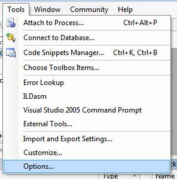 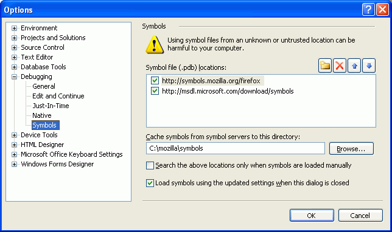
shell
使用默认应用程序管理文件和 url。
shell 模块提供与桌面集成相关的功能。
在用户的默认浏览器中打开 URL 的示例:
const { shell } = require('electron')
shell.openExternal('https://github.com')方法
shell 模块具有以下方法:
shell.openExternalSync(url[, options])
urlString - Max 2081 characters on Windows, or the function returns false.-
选项Object (可选)activateBoolean (optional) -trueto bring the opened application to the foreground. The default istrue. macOSworkingDirectoryString (optional) - The working directory. Windows
Returns Boolean - Whether an application was available to open the URL.
Open the given external protocol URL in the desktop's default manner. (For example, mailto: URLs in the user's default mail agent).
shell.openExternal(url[, options])
urlString - Max 2081 characters on windows.-
optionsObject (可选)activateBoolean (optional) -trueto bring the opened application to the foreground. The default istrue. macOSworkingDirectoryString (optional) - The working directory. Windows
Returns Promise<void>
Open the given external protocol URL in the desktop's default manner. (For example, mailto: URLs in the user's default mail agent).
shell.beep()
播放哔哔的声音.
shell.writeShortcutLink(shortcutPath[, operation], options) Windows
shortcutPathString-
operationString (optional) - 默认值为create可为下列之一：create- 创建一个新的快捷方式, 如有必要可以覆盖。update- 仅更新现有快捷方式上的指定属性。replace- 覆盖现有快捷方式, 如果快捷方式不存在将会失败。
optionsShortcutDetails
返回 Boolean - 快捷方式是否被成功创建。
在shortcutPath位置创建或更新一个快捷连接
shell.readShortcutLink(shortcutPath) Windows
shortcutPathString
解析shortcutPath中的快捷链接。
发生任何错误时将引发异常。
ShortcutDetails 对象
target字符串-该快捷方式启动的目标。cwd字符串 (可选)-工作目录。默认值为空。args字符串 (可选)-当从该快捷方式启动时要应用于target的参数。默认值为空。description字符串 (可选)-快捷方式的说明。默认值为空。icon字符串 (可选)-图标的路径, 可以是 DLL 或 EXE。icon和iconIndex必须一起设置。 默认使用该快捷方式指向的target的图标。iconIndexNumber (可选) - 当icon格式为DLL 或 EXE时的资源ID. 默认值为0appUserModelIdString (可选) - 应用程序用户模型ID. 默认值为空
Size 对象
widthNumberheightNumber
Snapcraft 指南 (Ubuntu 软件中心 & 更多)
本指南提供了有关如何包装你的 Electron 应用程序的任何 Snapcraft 环境, 包括 Ubuntu 软件中心的信息。
背景和要求
与更广泛的 Linux 社区一起, 规范旨在解决 snapcraft 项目中的许多常见的软件安装问题。 Snaps 是容器化的软件包, 包括所需的依赖项、自动更新和对所有主要 Linux 发行版的工作, 而无需进行系统修改。
创建 .snap 文件有三种方法:
1) 使用 electron-forge 或 electron-builder, 与 snap 支持的两个工具都不在该框中。 这是最简单的选择。 2) 使用 electron-installer-snap, 它采用 electron-packager 的输出。 3) 使用已经创建的 .deb 包。
在所有情况下, 都需要安装 snapcraft 工具。我们建议在 Ubuntu 16.04 (或当前的) 上建立。
snap install snapcraft --classic虽然 可以 在使用自制程序的 macOS 上安装 snapcraft, 但它无法生成 snap 包, 并且集中于管理存储中的包。
使用 electron-installer-snap
该模块的工作原理与electron-winstaller类似 因为它的范围仅限于构建捕捉包。 你可以这样安装:
npm install --save-dev electron-installer-snap步骤 1: 打包你的 Electron 应用程序
打包应用程序使用 electron-packager (或类似工具)。 Make sure to remove node_modules that you don't need in your final application, since any module you don't actually need will increase your application's size.
结构输出应该看起来大致像这样:
.
└── dist
└── app-linux-x64
├── LICENSE
├── LICENSES.chromium.html
├── content_shell.pak
├── app
├── icudtl.dat
├── libgcrypt.so.11
├── libnode.so
├── locales
├── natives_blob.bin
├── resources
├── v8_context_snapshot.bin
└── version步骤 2: 运行 electron-installer-snap
From a terminal that has snapcraft in its PATH, run electron-installer-snap with the only required parameter --src, which is the location of your packaged Electron application created in the first step.
npx electron-installer-snap --src=out/myappname-linux-x64If you have an existing build pipeline, you can use electron-installer-snap programmatically. For more information, see the Snapcraft API docs.
const snap = require('electron-installer-snap')
snap(options)
.then(snapPath => console.log(`Created snap at ${snapPath}!`))使用一个现有的 Debian 包
Snapcraft is capable of taking an existing .deb file and turning it into a .snap file. The creation of a snap is configured using a snapcraft.yaml file that describes the sources, dependencies, description, and other core building blocks.
步骤 1: 创建一个 Debian 包
If you do not already have a .deb package, using electron-installer-snap might be an easier path to create snap packages. However, multiple solutions for creating Debian packages exist, including electron-forge, electron-builder or electron-installer-debian.
步骤 2: 创建一个 snapcraft.yaml
For more information on the available configuration options, see the documentation on the snapcraft syntax. Let's look at an example:
name: myApp
version: '2.0.0'
summary: A little description for the app.
description: |
You know what? This app is amazing! It does all the things
for you. Some say it keeps you young, maybe even happy.
grade: stable
confinement: classic
parts:
slack:
plugin: dump
source: my-deb.deb
source-type: deb
after:
- desktop-gtk3
stage-packages:
- libasound2
- libgconf2-4
- libnotify4
- libnspr4
- libnss3
- libpcre3
- libpulse0
- libxss1
- libxtst6
electron-launch:
plugin: dump
source: files/
prepare: |
chmod +x bin/electron-launch
apps:
myApp:
command: bin/electron-launch $SNAP/usr/lib/myApp/myApp
desktop: usr/share/applications/myApp.desktop
# Correct the TMPDIR path for Chromium Framework/Electron to ensure
# libappindicator has readable resources.
environment:
TMPDIR: $XDG_RUNTIME_DIRAs you can see, the snapcraft.yaml instructs the system to launch a file called electron-launch. In this example, it passes information on to the app's binary:
#!/bin/sh
exec "$@" --executed-from="$(pwd)" --pid=$$ > /dev/null 2>&1 &Alternatively, if you're building your snap with strict confinement, you can use the desktop-launch command:
apps:
myApp:
# Correct the TMPDIR path for Chromium Framework/Electron to ensure
# libappindicator has readable resources.
command: env TMPDIR=$XDG_RUNTIME_DIR PATH=/usr/local/bin:${PATH} ${SNAP}/bin/desktop-launch $SNAP/myApp/desktop
desktop: usr/share/applications/desktop.desktop源代码的目录结构
Electron
├── atom/ - C++ 源代码.
| ├── app/ - 系统入口代码.
| ├── browser/ - 包含了主窗口、UI 和所有主进程相关的东西.
| | | 它会告诉渲染进程如何管理页面.
| | ├── ui/ - 不同平台上 UI 部分的实现.
| | | ├── cocoa/ - Cocoa 部分的源代码.
| | | ├── win/ - Windows GUI 部分的源代码.
| | | └── x/ - X11 部分的源代码.
| | ├── api/ - 主进程 API 的实现.
| | ├── net/ - 网络相关的代码.
| | ├── mac/ - 与 Mac 有关的 Objective-C 代码.
| | └── resources/ - 图标，平台相关的文件等.
| ├── renderer/ - 运行在渲染进程中的代码.
| | └── api/ - 渲染进程 API 的实现.
| └── common/ - 同时被主进程和渲染进程用到的代码,
| | 包括了一些用来将 node 的消息循环整合到 Chromium 的
| | 消息循环中时用到的工具函数和代码.
| └── api/ - 同时被主进程和渲染进程使用到的 API 的实现,
| 并且是 Electron 内置模块的基础.
├── chromium_src/ - 从 Chromium 项目中拷贝来的代码. 参见下文。
├── default_app/ - 在没有提供应用程序的情况下
| 启动 Electron 的默认页面.
├── docs/ - 文档.
├── lib/ - JavaScript 源代码.
| ├── browser/ - Javascript 主进程初始化代码.
| | └── api/ - Javascript API 实现.
| ├── common/ - 主进程和渲染器进程使用的 JavaScript.
| | └── api/ - Javascript API 实现.
| └── renderer/ - Javascript 渲染器进程初始化代码.
| └── api/ - Javascript API 实现.
├── native_mate/ - 复制了 Chromium 的 gin 库, 使得更加便捷
| 地在 C++ 类型和 JavaScript 类型之间转换.
├── spec/ - 自动化测试.
└── BUILD.gn - Electron 的构建规则./chromium_src
/chromium_src 中的文件更多地是 Chromium 的片段而不是内容层面的部分。 例如要实现 Papper API, 我们需要一些类似官方 Chrome 一样的联接操作。 我们可能已经构建了相应的源文件作为 libcc 的一部分，但是多数时候我们不需要所有的特性 (一些用于专用和分析的东西)， 所以我们采用其部分代码。 这些可能很容易在 libcc 中已经存在补丁，但在编写目标 libcc 时维护的补丁非常小，而 chromium_src 的变化往往很大。 另外请注意，这些补丁不像我们维护的其他 libcc 补丁，绝对不能推到上游。
其它目录的结构
- script - 用于诸如构建、打包、测试等开发用途的脚本等.
- tools - 在 gyp 文件中用到的工具脚本，但与
script目录不同，该目录中的脚本不应该被用户直接调用. - vendor - 第三方依赖项的源代码，为了防止人们将它与 Chromium 源码中的同名目录相混淆，在这里我们不使用
third_party作为目录名. - node_modules - 在构建中用到的第三方 node 模块.
- out -
ninja的临时输出目录. - dist - 由脚本
script/create-dist.py创建的临时发布目录. - external_binaries - 下载了不支持用
gn构建的第三方框架的二进制文件.
让 Git 子模块保持最新
Electron信息库有一些被提供的依赖, 在 /vendor 目录中可以找到. 运行 git status 时，偶尔会看到这样的消息：
$ git status
modified: vendor/depot_tools (new commits)
modified: vendor/boto (new commits)要更新这些被提供的依赖关系，运行以下命令：
git submodule update --init --recursive如果您发现自己经常运行此命令, 你可以在 ~/.gitconfig 文件中创建一个别名:
[alias]
su = submodule update --init --recursiveStreamProtocolResponse 对象
状态码数字-HTTP响应代码.头部对象-一个包含响应头的对象.数据可读流-一个表示响应正文的Node.js可读流.
Electron 文档风格指南
这里是一些编写 Electron 文档的指南.
标题
- 每个页面顶部必须有一个
#级标题。 - 同一页面中的各章节必须有
##级标题。 - 各小节需要根据其嵌套层级增加
#的数量。 - 页面标题中的所有单词首字母都必须大写，除了 “of” 和 “and” 之类的连接词。
- 章节名只有第一个单词首字母必须大写。
举一个Quick Start的例子:
# Quick Start
...
## Main process
...
## Renderer process
...
## Run your app
...
### Run as a distribution
...
### Manually downloaded Electron binary
...对于 API 参考, 可以例外于这些规则.
Markdown 规则
- 在代码块中使用
bash而不是cmd（由于语法高亮问题）. - 行长度应该控制在80列内.
- 列表嵌套不超出2级 (由于 Markdown 渲染问题).
- 所有的
js和javascript代码块均被标记为 standard-markdown.
用词选择
- 在描述结果时，使用 “will” 而不是 “would”。
- 首选 "in the ___ process" 而不是 "on".
API 参考
以下规则仅适用于 API 的文档。
页面标题
每个页面必须使用由 require（'electron'） 返回的实际对象名称作为标题，例如BrowserWindow，autoUpdater 和 session。
在页面下方标题必须是以>开头的单行描述。
举一个 session 的例子:
# session
> Manage browser sessions, cookies, cache, proxy settings, etc.模块方法和事件
对于非类的模块，它们的方法和事件必须在 ## Methods 和 ## Events章节中列出
举一个 autoUpdater 的例子:
# autoUpdater
## Events
### Event: 'error'
## Methods
### `autoUpdater.setFeedURL(url[, requestHeaders])`类
- API 类或作为模块一部分的类必须在
## Class: TheClassName章节中列出. - 一个页面可以有多个类.
- 构造函数必须用
###级标题列出. - 静态方法 必须在
### Static Methods章节中列出. - 实例方法 必须在
### Instance Methods章节中列出. -
所有具有返回值的方法必须用"Returns
[TYPE]- Return description" 的形式描述.- 如果该方法返回一个
Object，则可以使用冒号后跟换行符，然后使用与函数参数相同样式的属性的无序列表来指定其结构.
- 如果该方法返回一个
- 实例事件必须在
### Instance Events章节中列出. -
实例属性必须在
### 实例属性章节中列出.- 实例属性必须以 "A [Property Type] ..." 开始描述.
这里用 Session 和 Cookies 类作为例子:
# session
## Methods
### session.fromPartition(partition)
## Properties
### session.defaultSession
## Class: Session
### Instance Events
#### Event: 'will-download'
### Instance Methods
#### `ses.getCacheSize()`
### Instance Properties
#### `ses.cookies`
## Class: Cookies
### Instance Methods
#### `cookies.get(filter, callback)`方法
方法章节必须采用以下形式：
### `objectName.methodName(required[, optional]))`
* `required` String - A parameter description.
* `optional` Integer (optional) - Another parameter description.
...标题可以是 ### 级别或 #### 级别，具体取决于它是模块还是类的方法。
对于模块，objectName 是模块的名称。 对于类，它必须是类的实例的名称，并且不能与模块的名称相同。
例如，session 模块下的 Session 类的方法必须使用 ses 作为 objectName 。
可选参数由围绕可选参数的方括号 [] 表示，并且如果此可选参数跟随另一个参数，则需要逗号：
required[, optional]下面的方法是每个参数更加详细的信息。 参数的类型由常见类型表示:
StringNumberObject - 过滤器对象，包含过滤参数ArrayBoolean- 或自定义类型, 就像 Electron 的
WebContent
如果参数或方法对某些平台是唯一的，那么这些平台将使用数据类型后面的空格分隔的斜体列表来表示。 值可以是 macOS，Windows 或 Linux.
* `animate` Boolean (optional) _macOS_ _Windows_ - 进行动画处理的事情.Array 类型的参数, 必须在指定数组下面的描述中描述可能包含的元素.
Function 类型参数的描述应该清楚描述它是如何被调用的，并列出将被传递给它的参数的类型.
事件
事件章节必须采用以下形式:
### Event: 'wake-up'
Returns:
* `time` String
...标题可以是 ### 级别或 #### 级别，具体取决于它是模块还是类的事件。
事件的参数遵循与方法相同的规则.
文档翻译
请参见 electron/i18n
寻找技术支持
如果你有安全方面的问题，请阅读 安全文档。
如果你想获得编程方面的帮助、问题的答案亦或是想要加入Electron的开发者大家庭，您可以参考以下链接：
electron各种 Atom 论坛#atom-shellFreenode上的频道ElectronAtom's Slack上的频道electron-ru(俄语版)electron-br(巴西葡语版)- <
electron-kr(韩语版) electron-jp(日语版)electron-tr(土耳其语版)electron-id(印尼语版)electron-pl(波兰语版)
如果你有意为加入Electron的开发，可参阅贡献文档
如果你在Electron的支持版中发现漏洞，请在问题追踪中提交你发现的漏洞。
awesome-electron是一个社区维护的示例程序列表。
支持版
The latest three major versions are supported by the Electron team. For example, if the latest release is 5.0.x, then the 4.x.y series is supported, as are the two previous release series 3.x.y and 2.x.y.
Currently supported versions
- 5.x
- 4.x
- 3.x
End-of-life
当一个发行分支达到了其支持周期的末尾，该序列将会在NPM中弃用，且会发布一个最终的“结束支持”版本。 这个版本将会添加一个警告以通知正在使用一个不受支持的Electron版本。
这些步骤是用于帮助应用开发者了解他们使用的分支不受支持，而不会过分打扰最终用户。
如果一个应用有特殊情况并需要保持使用一个不受支持的Electron版本，开发者可以通过忽略来自应用的package.json devDependencies的最终版本以关闭结束支持警告。 For example, since the 1-6-x series ended with an end-of-support 1.6.18 release, developers could choose to stay in the 1-6-x series without warnings with devDependency of "electron": 1.6.0 - 1.6.17.
支持平台
目前 Electron 支持以下平台：
macOS
Only 64bit binaries are provided for macOS, and the minimum macOS version supported is macOS 10.10 (Yosemite).
Windows
仅支持 Windows 7 或更高版本, 旧版操作系统已不再支持(并且无法运行).
为Windows系统提供ia32 (x86) 和 x64 (amd64) 两种二进制版本。 如果在ARM版Windows上使用Electron的话调用ia32库就行了。
Linux
Electron 的 ia32 (i686) 和 x64 (amd64) 预编译版本均是在Ubuntu 12.04 下编译的，arm 版的二进制文件是在 ARM v7（硬浮点 ABI 与 Debian Wheezy 版本的 NEON）下完成的。
在Electron 2.0的发布之前，Electron 也会 继续用简单的arm后缀释放armv7l二进制文件。 Both binaries are identical.
预编译版本是否能够正常运行，取决于其中是否包含了编译平台的链接库。所以只有 Ubuntu 12.04 是可以保证能正常运行的，并且以下平台也被证实可以正常运行 Electron 的预编译版本：
- Ubuntu 12.04 或更高版本
- Fedora 21
- Debian 8
简介
如何使用 Node.js 和 Electron APIs
Node. js 的所有 内置模块 都在Electron中可用， 第三方 node 模块中也完全支持 (包括 原生模块 )。
Electron 还为开发原生桌面应用程序提供了一些额外的内置模块。 某些模块仅在主进程中可用, 有些仅在渲染进程 (web 页) 中可用, 而有些在这两个进程中都可以使用。
基本规则是: 如果一个模块是 GUI 或底层系统相关的, 那么它应该只在主进程中可用。 你需要熟悉主进程和渲染进程 的概念，才能使用这些模块。
主进程脚本就像一个普通的Node.js脚本：
const { app, BrowserWindow } = require('electron')
let win = null
app.on('ready', () => {
win = new BrowserWindow({ width: 800, height: 600 })
win.loadURL('https://github.com')
})渲染进程除了额外能够使用node模块的能力外，与普通网页没有什么区别
<!DOCTYPE html>
<html>
<body>
<script>
const { app } = require('electron').remote
console.log(app.getVersion())
</script>
</body>
</html>要运行你的app, 请阅读 Run your app 。
解构赋值
从0.37开始，可以使用 destructuring assignment (es6解构赋值)来使内置模块更容易使用。
const { app, BrowserWindow } = require('electron')
let win
app.on('ready', () => {
win = new BrowserWindow()
win.loadURL('https://github.com')
})如果您需要整个 electron 模块, 则可以require它, 然后使用 destructuring 从 electron 访问各个模块。
const electron = require('electron')
const { app, BrowserWindow } = electron
let win
app.on('ready', () => {
win = new BrowserWindow()
win.loadURL('https://github.com')
})这等效于以下代码:
const electron = require('electron')
const app = electron.app
const BrowserWindow = electron.BrowserWindow
let win
app.on('ready', () => {
win = new BrowserWindow()
win.loadURL('https://github.com')
})systemPreferences
获取system preferences.
进程：主进程
const { systemPreferences } = require('electron')
console.log(systemPreferences.isDarkMode())事件
systemPreferences 对象触发以下事件:
Event: 'inverted-color-scheme-changed' Windows
返回:
eventEventinvertedColorSchemeBoolean -trueif an inverted color scheme (a high contrast color scheme with light text and dark backgrounds) is being used,falseotherwise.
Event: 'high-contrast-color-scheme-changed' Windows
返回:
eventEventhighContrastColorSchemeBoolean -trueif a high contrast theme is being used,falseotherwise.
事件: 'appearance-changed' macOS
返回:
newAppearanceString - 可以为dark或light
注意: 此事件仅在调用了startAppLevelAppearanceTrackingOS后触发
systemPreferences.isDarkMode() macOS
返回Boolean，表示系统是否处于Dark模式
systemPreferences.isSwipeTrackingFromScrollEventsEnabled() macOS
返回值 Boolean - 是否在页面设置之间进行滑动。
systemPreferences.postNotification(event, userInfo[, deliverImmediately]) macOS
eventStringuserInfoObjectdeliverImmediatelyBoolean (optional) -trueto post notifications immediately even when the subscribing app is inactive.
发送 event 作为macOS的原生通知。 userInfo是一个Object，它包含随通知一起发送的用户信息字典。
systemPreferences.postLocalNotification(event, userInfo) macOS
eventStringuserInfoObject
发送 event 作为macOS的原生通知。 userInfo是一个Object，它包含随通知一起发送的用户信息字典。
systemPreferences.postWorkspaceNotification(event, userInfo) macOS
eventStringuserInfoObject
发送 event 作为macOS的原生通知。 userInfo是一个Object，它包含随通知一起发送的用户信息字典。
systemPreferences.subscribeNotification(event, callback) macOS
eventString-
callbackFunctioneventStringuserInfoObject
返回 Number - 此订阅的 ID
订阅macOS的原生通知，当通信的 event</ 0>发生时，将调用 <code>callback(event, userInfo) 。 userInfo是一个Object，它包含随通知一起发送的用户信息字典。
返回订阅的 id, 可用于取消该订阅的 event.
在这个API下订阅NSDistributedNotificationCenter， event 的示例值为：
AppleInterfaceThemeChangedNotificationAppleAquaColorVariantChangedAppleColorPreferencesChangedNotificationAppleShowScrollBarsSettingChanged
systemPreferences.subscribeLocalNotification(event, callback) macOS
eventString-
callbackFunctioneventStringuserInfoObject
返回 Number - 此订阅的 ID
与subscribeNotification相同，但使用NSNotificationCenter作为本地默认值。 这对事件NSUserDefaultsDidChangeNotification是必需的。
systemPreferences.subscribeWorkspaceNotification(event, callback) macOS
eventString-
callbackFunctioneventStringuserInfoObject
与 subscribeNotification一样, 但使用NSWorkspace.sharedWorkspace.notificationCenter。 这对事件 NSWorkspaceDidActivateApplicationNotification 是必需的。
systemPreferences.unsubscribeLocalNotification(id) macOS
idInteger
与unsubscribeNotification相同，但将订户从NSNotificationCenter中删除。
systemPreferences.unsubscribeWorkspaceNotification(id) macOS
idInteger
与 unsubscribeNotification 一样，但是它从 NSWorkspace.sharedWorkspace.notificationCenter 中移除订阅者。
systemPreferences.registerDefaults(defaults) macOS
defaultsObject - 用户默认选项集 (key: value)
在应用的NSUserDefaults配置项中添加其它默认设置。
systemPreferences.getUserDefault(key, type) macOS
keyStringtypeString - 可以为string,boolean,integer,float,double,url,array或dictionary.
返回 any - NSUserDefaults 中 key 的值.
常用的 key 和 type 的类型为:
AppleInterfaceStyle:stringAppleAquaColorVariant:integerAppleHighlightColor:stringAppleShowScrollBars:stringNSNavRecentPlaces:arrayNSPreferredWebServices:dictionaryNSUserDictionaryReplacementItems:array
systemPreferences.setUserDefault(key, type, value) macOS
keyStringtypeString - 参见getUserDefault.valueString
设置 NSUserDefaults 中 key 的值.
请注意，type应与value的实际类型匹配。 如果不存在，则抛出异常。
常用的 key 和 type 的类型为:
ApplePressAndHoldEnabled:boolean
systemPreferences.removeUserDefault(key) macOS
keyString
删除 NSUserDefaults 中的 key. 这可以用来恢复默认值或之前用 setUserDefault 设置的 key的全局值。
systemPreferences.isAeroGlassEnabled() Windows
返回 Boolean - true 如果启用了 DWM composition (Aero Glass), 否则为 false.
使用它来确定是否应创建透明窗口的示例 (当禁用 DWM 组合时, 透明窗口无法正常工作):
const { BrowserWindow, systemPreferences } = require('electron')
let browserOptions = { width: 1000, height: 800 }
// Make the window transparent only if the platform supports it.
if (process.platform !== 'win32' || systemPreferences.isAeroGlassEnabled()) {
browserOptions.transparent = true
browserOptions.frame = false
}
// Create the window.
let win = new BrowserWindow(browserOptions)
// Navigate.
if (browserOptions.transparent) {
win.loadURL(`file://${__dirname}/index.html`)
} else {
// No transparency, so we load a fallback that uses basic styles.
win.loadURL(`file://${__dirname}/fallback.html`)
}systemPreferences.getAccentColor() Windows macOS
返回 String - 用户当前系统偏好颜色，RGBA 十六进制形式.
const color = systemPreferences.getAccentColor() // `"aabbccdd"`
const red = color.substr(0, 2) // "aa"
const green = color.substr(2, 2) // "bb"
const blue = color.substr(4, 2) // "cc"
const alpha = color.substr(6, 2) // "dd"This API is only available on macOS 10.14 Mojave or newer.
systemPreferences.getColor(color) Windows macOS
-
colorString - 下列值之一:-
On Windows:
3d-dark-shadow- 三维显示元素的暗阴影。3d-face- 面向三维显示元素和对话框背景的颜色。3d-highlight- 三维显示元素的高亮色.3d-light- 三维显示元素的亮色.3d-shadow- 三维显示元素的阴影颜色.active-border- 活动窗口边框。active-caption-活动窗口标题栏。 如果启用了渐变效果，则指定活动窗口标题栏的颜色渐变中的左侧颜色。active-caption-gradient- 活动窗口标题栏的颜色渐变中的右侧颜色。app-workspace- 多文档界面 (MDI) 应用程序的背景颜色。button-text- 按钮上的文本。caption-text- 标题，大小框和滚动条箭头框中的文本。desktop- 桌面的背景色。disabled-text- 灰色 (禁用的) 文字.highlight- 在控件中选择的项目。highlight-text- 在控件中选择的项目文本。hotlight- 超链接或热追踪项目的颜色。inactive-border- 非活动窗口边框。inactive-caption-非活动窗口标题栏。 如果启用了渐变效果，则指定非活动窗口标题栏的颜色渐变中的左侧颜色。inactive-caption-gradient- 非活动窗口标题栏的颜色渐变中的右侧颜色。inactive-caption-text- 非活动标题中的文字颜色。info-background- 工具提示控件的背景颜色。info-text- 工具提示控件的文本颜色。menu- 菜单的背景色.menu-highlight- 当菜单显示为平面菜单时用于突出显示菜单项的颜色。menubar- 菜单显示为平面菜单时菜单栏的背景颜色。menu-text- 菜单的文字.scrollbar- 滚动条的灰色区域.window- 窗口的背景色.window-frame- 窗口框.window-text- 窗口的文字。
-
On macOS
alternate-selected-control-text- The text on a selected surface in a list or table.control-background- The background of a large interface element, such as a browser or table.control- The surface of a control.control-text-The text of a control that isn’t disabled.disabled-control-text- The text of a control that’s disabled.find-highlight- The color of a find indicator.grid- The gridlines of an interface element such as a table.header-text- The text of a header cell in a table.highlight- The virtual light source onscreen.keyboard-focus-indicator- The ring that appears around the currently focused control when using the keyboard for interface navigation.label- The text of a label containing primary content.link- A link to other content.placeholder-text- A placeholder string in a control or text view.quaternary-label- The text of a label of lesser importance than a tertiary label such as watermark text.scrubber-textured-background- The background of a scrubber in the Touch Bar.secondary-label- The text of a label of lesser importance than a normal label such as a label used to represent a subheading or additional information.selected-content-background- The background for selected content in a key window or view.selected-control- The surface of a selected control.selected-control-text- The text of a selected control.selected-menu-item- The text of a selected menu.selected-text-background- The background of selected text.selected-text- Selected text.separator- A separator between different sections of content.shadow- The virtual shadow cast by a raised object onscreen.tertiary-label- The text of a label of lesser importance than a secondary label such as a label used to represent disabled text.text-background- Text background.text- The text in a document.under-page-background- The background behind a document's content.unemphasized-selected-content-background- The selected content in a non-key window or view.unemphasized-selected-text-background- A background for selected text in a non-key window or view.unemphasized-selected-text- Selected text in a non-key window or view.window-background- The background of a window.window-frame-text- The text in the window's titlebar area.
-
返回 String -系统颜色设置为RGB十六进制格式 (#ABCDEF). See the Windows docs and the MacOS docs for more details.
systemPreferences.getSystemColor(color) macOS
-
colorString - 下列值之一:bluebrowngraygreenorangepinkpurpleredyellow
Returns one of several standard system colors that automatically adapt to vibrancy and changes in accessibility settings like 'Increase contrast' and 'Reduce transparency'. See Apple Documentation for more details.
systemPreferences.isInvertedColorScheme() Windows
Returns Boolean - true if an inverted color scheme (a high contrast color scheme with light text and dark backgrounds) is active, false otherwise.
systemPreferences.isHighContrastColorScheme() Windows
Returns Boolean - true if a high contrast theme is active, false otherwise.
systemPreferences.getEffectiveAppearance() macOS
返回 String - 其值可能是 dark、light 或 unknown.
获取当前应用到你的程序上的 macOS 设置项，会映射到 NSApplication.effectiveAppearance
需要注意的是，在 构建针对Electron 10.14 SDK 之前的版本时，你的程序的effectiveAppearance默认为 "light" 并且不会继承系统的设置。 In the interim in order for your application to inherit the OS preference you must set the NSRequiresAquaSystemAppearance key in your apps Info.plist to false. If you are using electron-packager or electron-forge just set the enableDarwinDarkMode packager option to true. 查看 Electron Packager API 以获得更多细节。
systemPreferences.getAppLevelAppearance() macOS
返回 String | null - 其值可能为 dark、light 或 unknown。
Gets the macOS appearance setting that you have declared you want for your application, maps to NSApplication.appearance. 您可以使用 setAppLevelAppearance API 来设置此值。
systemPreferences.setAppLevelAppearance(appearance) macOS
appearanceString | null - 可以是dark或light
设定您的应用程序的外观设置，这应该覆盖系统默认值以及覆盖 getEffectiveAppearance 的值。
systemPreferences.isTrustedAccessibilityClient(prompt) macOS
promptBoolean - whether or not the user will be informed via prompt if the current process is untrusted.
Returns Boolean - true if the current process is a trusted accessibility client and false if it is not.
systemPreferences.getMediaAccessStatus(mediaType) macOS
mediaTypeString -microphoneorcamera.
Returns String - Can be not-determined, granted, denied, restricted or unknown.
This user consent was not required until macOS 10.14 Mojave, so this method will always return granted if your system is running 10.13 High Sierra or lower.
systemPreferences.askForMediaAccess(mediaType) macOS
mediaTypeString - the type of media being requested; can bemicrophone,camera.
Returns Promise<Boolean> - A promise that resolves with true if consent was granted and false if it was denied. If an invalid mediaType is passed, the promise will be rejected. If an access request was denied and later is changed through the System Preferences pane, a restart of the app will be required for the new permissions to take effect. If access has already been requested and denied, it must be changed through the preference pane; an alert will not pop up and the promise will resolve with the existing access status.
Important: In order to properly leverage this API, you must set the NSMicrophoneUsageDescription and NSCameraUsageDescription strings in your app's Info.plist file. The values for these keys will be used to populate the permission dialogs so that the user will be properly informed as to the purpose of the permission request. See Electron Application Distribution for more information about how to set these in the context of Electron.
This user consent was not required until macOS 10.14 Mojave, so this method will always return true if your system is running 10.13 High Sierra or lower.
Task 对象
program字符串 - 要执行的程序的路径，通常你需要指定process.execPath，也就是打开当前程序的路径arguments字符串- 给program这个程序执行时的命令行参数。title字符串 - 要在跳转列表中显示的字符串。descriptionString - 任务描述.iconPathString - 在JumpList对象中显示的图标的绝对路径，JumpList对象可以是包含图标的任意资源文件。 通常可以指定process.execPath属性显示程序的图标.iconIndexNumber - 图标文件中的索引. 如果一个图标文件包含多个图标，设置此属性指定是哪个图标. 如果图标文件只包含一个图标，此属性值为0.
测试
我们的目标是保持 Electron 代码的高覆盖率。 我们要求所有的拉取请求不仅要通过所有现有的测试，还要增加新的测试来覆盖改变的代码和新的场景。 确保我们尽可能多地捕获Electron的代码路径和用例，以确保我们所有的应用程序都能够运行更少的bug。
这个仓库为 JavaScript 和 C ++ 提供了linting 规则 - 以及单元和集成测试。 To learn more about Electron's coding style, please see the coding-style document.
提示
为确保您的JavaScript符合Electron编码风格，请运行npm run lint-js，它将针对Electron本身以及单元运行标准测试。 如果您正在使用带有插件/插件系统的编辑器，则可能需要使用多个 StandardJS插件之一来通知编码风格违规。
要用参数运行标准测试，运行npm run lint-js -- 然后输入要传递给标准测试的参数。
要确保您的C ++符合Electron编码风格，请运行运行cpplint脚本的npm run lint-cpp。 我们建议您使用clang-format并准备一个简短的教程。
这个版本库中没有太多的Python，但是它也受编码风格规则的支配。 npm run lint-py将使用pylint检查所有的Python。
单元测试
要运行所有单元测试，请运行 npm run test。 单元测试是一个 Electron 应用程序(惊喜！)，可以在spec文件夹中找到。 请注意，它有自己的 package.json，因此它的依赖关系没有在顶层package.json中定义。
To run only specific tests matching a pattern, run npm run test -- -g=PATTERN, replacing the PATTERN with a regex that matches the tests you would like to run. As an example: If you want to run only IPC tests, you would run npm run test -- -g ipc.
Headless CI Systems 测试 (Travis CI, Jenkins)
Electron 基于 Chromium，所以需要一个显示驱动使其运转。 如果 Chromium 无法找到一个显示驱动， Electron 会启动失败，因此无论你如何去运行它，Electron 不会执行你的任何测试。 在 Travis，Circle， Jenkins 或者类似的系统上测试基于Electron的应用时，需要进行一些配置。 本质上，我们需要使用一个 虚拟的显示驱动。
配置虚拟显示服务器
首先安装 Xvfb. 这是一个虚拟的帧缓冲，实现了X11显示服务协议，所有的图形操作都在内存中表现，而不需要显示在 任何屏幕输出设备上。这正是我们所需要的。
然后创建一个虚拟的xvfb屏幕并且导出一个指向他的名为 DISPLAY 的环境变量。 Electron 中的 Chromium 会自动的去寻找 $DISPLAY，所以你的应用不需要再去进行配置 这一步可以通过 Paul Betts 的 xvfb-maybe 实现自动化：如果系统需要，在xvfb-maybe前加上你的测试命令 然后这个小工具会自动的设置 xvfb。 在 Windows 或 macOS ，它不会执行任何东西。
## 在 Windows 或者 macOS，这只是调用 electron-mocha
## 在 Linux， 如果我们在一个 headless 环境，这将是等同于
## 执行 xvfb-run electron-mocha ./test/*.js
xvfb-maybe electron-mocha ./test/*.jsTravis CI
在 Travis 上, 你的 .travis.yml 应该和下面的代码相似:
addons:
apt:
packages:
- xvfb
install:
- export DISPLAY=':99.0'
- Xvfb :99 -screen 0 1024x768x24 > /dev/null 2>&1 &Jenkins
Jenkins下, 有一个可用的 Xvfb 插件。
Circle CI
Circle CI 是非常棒的而且有xvfb，$DISPLAY也已经搭建，所以不需要再进行设置。
AppVeyor
AppVeyor 运行于 Windows 上，支持 Selenium，Chromium，Electron 以及一些类似的工具，开箱即用，无需配置
Testing Widevine CDM
在 Electron 中，你可以使用 Widevine CDM 库装载 Chrome 浏览器。
Widevine Content Decryption Modules (CDMs) are how streaming services protect content using HTML5 video to web browsers without relying on an NPAPI plugin like Flash or Silverlight. Widevine support is an alternative solution for streaming services that currently rely on Silverlight for playback of DRM-protected video content. It will allow websites to show DRM-protected video content in Firefox without the use of NPAPI plugins. The Widevine CDM runs in an open-source CDM sandbox providing better user security than NPAPI plugins.
Note on VMP
As of Electron v1.8.0 (Chrome v59), the below steps are may only be some of the necessary steps to enable Widevine; any app on or after that version intending to use the Widevine CDM may need to be signed using a license obtained from Widevine itself.
Per Widevine:
Chrome 59 (and later) includes support for Verified Media Path (VMP). VMP provides a method to verify the authenticity of a device platform. For browser deployments, this will provide an additional signal to determine if a browser-based implementation is reliable and secure.
The proxy integration guide has been updated with information about VMP and how to issue licenses.
Widevine recommends our browser-based integrations (vendors and browser-based applications) add support for VMP.
To enable video playback with this new restriction, castLabs has created a fork that has implemented the necessary changes to enable Widevine to be played in an Electron application if one has obtained the necessary licenses from widevine.
Getting the library
Open chrome://components/ in Chrome browser, find Widevine Content Decryption Module and make sure it is up to date, then you can find the library files from the application directory.
Windows 中
The library file widevinecdm.dll will be under Program Files(x86)/Google/Chrome/Application/CHROME_VERSION/WidevineCdm/_platform_specific/win_(x86|x64)/ directory.
On MacOS
The library file libwidevinecdm.dylib will be under /Applications/Google Chrome.app/Contents/Versions/CHROME_VERSION/Google Chrome Framework.framework/Versions/A/Libraries/WidevineCdm/_platform_specific/mac_(x86|x64)/ directory.
Note: Make sure that chrome version used by Electron is greater than or equal to the min_chrome_version value of Chrome's widevine cdm component. The value can be found in manifest.json under WidevineCdm directory.
Using the library
After getting the library files, you should pass the path to the file with --widevine-cdm-path command line switch, and the library's version with --widevine-cdm-version switch. The command line switches have to be passed before the ready event of app module gets emitted.
示例代码：
const { app, BrowserWindow } = require('electron')
// You have to pass the directory that contains widevine library here, it is
// * `libwidevinecdm.dylib` on macOS,
// * `widevinecdm.dll` on Windows.
app.commandLine.appendSwitch('widevine-cdm-path', '/path/to/widevine_library')
// The version of plugin can be got from `chrome://components` page in Chrome.
app.commandLine.appendSwitch('widevine-cdm-version', '1.4.8.866')
let win = null
app.on('ready', () => {
win = new BrowserWindow()
win.show()
})Verifying Widevine CDM support
To verify whether widevine works, you can use following ways:
- 打开 shaka-player-demo.appspot.com 加载一个使用
Widevine的 manifest。 - 打开 dash-player.com/demo/drm-test-area/，检查是否界面输出
bitdash uses Widevine in your browser，然后播放 video。
ThumbarButton 对象
iconNativeImage - 显示在缩略图工具栏中的图标.clickFunctiontooltipString (可选) - 按钮的提示文本.flagsString - 控制按钮特定的状态和行为. 默认为['enabled'].
flags 属性是一个数组，包含以下String类型的值:
enabled- 该按钮处于活动状态并可供用户使用.disabled- 该按钮被禁用。 它存在，但有一个显示状态表明它不会响应用户操作。dismissonclick- 当按钮被点击时，缩略图窗口立即关闭。nobackground- 不可以画按钮边框，只能使用图片背景。hidden- 该按钮对用户不可见。noninteractive- 该按钮已启用，但处于未激活状态; 没有绘制按钮按下状态。 这个值用于通知功能的按钮实例。
new TouchBar(options) 实验功能
-
参数对象items(TouchBarButton | TouchBarColorPicker | TouchBarGroup | TouchBarLabel | TouchBarPopover | TouchBarScrubber | TouchBarSegmentedControl | TouchBarSlider | TouchBarSpacer)[]escapeItem(TouchBarButton | TouchBarColorPicker | TouchBarGroup | TouchBarLabel | TouchBarPopover | TouchBarScrubber | TouchBarSegmentedControl | TouchBarSlider | TouchBarSpacer | null) (可选的)
Creates a new touch bar with the specified items. Use BrowserWindow.setTouchBar to add the TouchBar to a window.
注意: TouchBar API目前为实验性质，以后的Electron版本可能会更改或删除。
提示：如果您没有带Touch Bar的MacBook，则可以使用 Touch Bar Simulator 来测试应用中的Touch Bar使用情况。
实例属性
在TouchBar的实例中有以下属性可用：
touchBar.escapeItem
TouchBarItem设置的内容将替换掉Touch bar中的“esc”按钮 将该项设为null以使用默认的"esc"按钮 修改这个值将立即更新Touch bar中的返回按钮
示例
下面是一个带有一个按钮和若干文本的简易Touch bar老虎机游戏示例
const { app, BrowserWindow, TouchBar } = require('electron')
const { TouchBarLabel, TouchBarButton, TouchBarSpacer } = TouchBar
let spinning = false
// Reel labels
const reel1 = new TouchBarLabel()
const reel2 = new TouchBarLabel()
const reel3 = new TouchBarLabel()
// Spin result label
const result = new TouchBarLabel()
// Spin button
const spin = new TouchBarButton({
label: '🎰 Spin',
backgroundColor: '#7851A9',
click: () => {
// Ignore clicks if already spinning
if (spinning) {
return
}
spinning = true
result.label = ''
let timeout = 10
const spinLength = 4 * 1000 // 4 seconds
const startTime = Date.now()
const spinReels = () => {
updateReels()
if ((Date.now() - startTime) >= spinLength) {
finishSpin()
} else {
// Slow down a bit on each spin
timeout *= 1.1
setTimeout(spinReels, timeout)
}
}
spinReels()
}
})
const getRandomValue = () => {
const values = ['🍒', '💎', '7️⃣', '🍊', '🔔', '⭐', '🍇', '🍀']
return values[Math.floor(Math.random() * values.length)]
}
const updateReels = () => {
reel1.label = getRandomValue()
reel2.label = getRandomValue()
reel3.label = getRandomValue()
}
const finishSpin = () => {
const uniqueValues = new Set([reel1.label, reel2.label, reel3.label]).size
if (uniqueValues === 1) {
// All 3 values are the same
result.label = '💰 Jackpot!'
result.textColor = '#FDFF00'
} else if (uniqueValues === 2) {
// 2 values are the same
result.label = '😍 Winner!'
result.textColor = '#FDFF00'
} else {
// No values are the same
result.label = '🙁 Spin Again'
result.textColor = null
}
spinning = false
}
const touchBar = new TouchBar({
items: [
spin,
new TouchBarSpacer({ size: 'large' }),
reel1,
new TouchBarSpacer({ size: 'small' }),
reel2,
new TouchBarSpacer({ size: 'small' }),
reel3,
new TouchBarSpacer({ size: 'large' }),
result
]
})
let window
app.once('ready', () => {
window = new BrowserWindow({
frame: false,
titleBarStyle: 'hiddenInset',
width: 200,
height: 200,
backgroundColor: '#000'
})
window.loadURL('about:blank')
window.setTouchBar(touchBar)
})运行以上示例
要运行上面的示例，您需要 (假设您已经在将要运行该示例的目录中打开了一个终端)：
- 将上述文件保存到您的电脑上，并命名为
touchbar.js - 通过
npm install electron来安装 Electron - 在 Electron 中运行示例：
./node_modules/.bin/electron touchbar.js
接下来这个应用会在你的Touch bar (或者Touch bar模拟器) 上运行，你将能看到一个Electron窗口
new BrowserView(可选) 实验功能
-
参数对象labelString (可选) 按钮文本。backgroundColorString (可选) - 按钮背景颜色以十六进制格式，例如#ABCDEF。iconNativeImage (可选)iconPositionString (可选) - 可以是left、right或overlay。clickfunction (可选) - 单击按钮时调用的函数。
实例属性
下面的这些是TouchBarButton中的属性：
touchBarButton.label
用一个String展示按钮里面当前文本。改变这个值会即时刷新。
touchBarButton.backgroundColor
用一个16进制String定义按钮的背景色。改变这个值会即时刷新。
touchBarButton.icon
用一个NativeImage定义按钮上的图标。改变这个值会即时刷新。
实例属性
以下为TouchBarColorPicker 实例的可用属性:
touchBarColorPicker.availableColors
String[]类型，指可以在拾色器中选择的颜色。改变这个数组的值会即时更新触摸条中的拾色器。
touchBarColorPicker.selectedColor
String类型，指拾色器当前选中的十六进位颜色色值。改变这个值会即时更新触摸条中的拾色器。
new TouchBarGroup(可选) 实验功能
-
参数对象itemsTouchBar - 以分组的方式显示元素.
new TouchBarLabel(options) 实验功能
-
参数对象labelString (可选) - 显示的文本.textColorString（可选） - 文本的十六进制颜色，例如#ABCDEF。
实例属性
以下属性可用于 TouchBarLabel:
touchBarLabel.label
表示标签当前文本的字符串。 更改此值会立即更新触摸栏中的标签。
touchBarLabel.textColor
代表标签当前文字颜色的 字符串</ 0> 十六进制代码。 更改此值立即更新 标签在触摸栏中。
new TouchBarSlider(options) 实验功能
-
参数对象labelString (可选) 弹出按钮文本。icon(NativeImage | String) (可选) - 弹出按钮图标。itemsTouchBar (可选) -弹出中展示的元素。showCloseButtonBoolean (可选) -true是指在弹出左侧展示关闭按钮,false则相反. 默认为true.
实例属性
以下为 TouchBarPopover 实例的可用属性:
touchBarPopover.label
String类型，用于为弹出添加展示文本。改变这个字符串的值会即时刷新触摸条中的弹出。
touchBarPopover.icon
NativeImage类型，用于为弹出添加按钮图标。改变它的的值会即时刷新触摸条中的弹出。
new TouchBarScrubber(options) 实验功能
-
参数对象itemsScrubberItem[] 一个数组，表示 scrubber 里的项目。-
select函数 - 当用户点了一个项目，但是不是上一次点击的项目时调用。selectedIndexInteger - 用户选中项排序。
-
highlightFunction - 当用户点击某一项时调用.- highlightedIndex Integer - 用户选中项排序.
selectedStyleString - 选中项样式. 默认为null.overlayStyleString - 选中遮罩项样式. 默认为null.showArrowButtonsBoolean - 默认为false.modeString -默认为free。continuousBoolean - 默认为true。
实例属性
以下为 TouchBarScrubber 实例的可用属性:
touchBarScrubber.items
一个Scrubberitem[] 数组代表Scrubber里的所有物品。 改变这个值会立刻刷新touch bar内的控件。 然而改变数组某元素内的嵌套属性不会刷新touch bar。
touchBarScrubber.selectedStyle
Scrubber中被选择的物品需要有的，一个代表的样式的String。 改变这个值会立刻刷新touch bar的控件。可选值：
background- 映射为[NSScrubberSelectionStyle roundedBackgroundStyle]outline- 映射到[NSScrubberSelectionStyle outlineOverlayStyle]null- 真实意义上的null，不是字符串且不含任何样式。
touchBarScrubber.overlayStyle
一个String，用来表示在scrubber内被选择的组件应有的样式。 该样式将会覆盖在scrubber组件之上而非其后。 改变这个值会立刻刷新touch bar的控件。 可选值：
background- 映射为[NSScrubberSelectionStyle roundedBackgroundStyle]outline- 映射为[NSScrubberSelectionStyle outlineOverlayStyle]null- 真实意义上的null，不是字符串且不含任何样式。
touchBarScrubber.showArrowButtons
一个Boolean值，表示是否在scrubber中显示左/右选择箭头。改变这个值会立刻刷新touch bar的控件。
touchBarScrubber.mode
一个代表scrubber模式的string。改变这个值会立刻刷新touch bar的控件。可选值：
fixed- 映射到NSScrubberModeFixedfree- 映射到NSScrubberModeFree.
touchBarScrubber.continuous
一个Boolean值，表示scrubber是否连续。改变这个值会立刻刷新touch bar的控件。
new TouchBarSegmentedControl(options) 实验功能
-
参数对象-
segmentStyleString (可选) - 分段的样式：automatic- 默认的。分段控件的外观是通过窗口的类型和控件在窗口内呈现的位置自动确定的。rounded- 控件的呈现使用圆形风格。textured-rounded- 控件的呈现使用纹理圆形风格。round-rect- 以圆角矩形样式显示控件。round-rect- 以带纹理的矩形样式显示控件。capsule- 以胶囊样式的风格显示控件small-square- 以小尺寸的矩形样式显示控件- 表示控件的当前段样式。更新此值会立即更新触摸栏中的控件。
-
modeString (可选) - 控件的选择模式：single- 默认的。只能选一项。选择后会取消选择之前选择的项。multiple- 可以选多个项。buttons- 将段作为按钮使用, 每一段都可以被按下和释放但是不会被标记为激活状态
segmentsSegmentedControlSegment[] - 被放到控件中的段的集合selectedIndexInteger (optional) - 当前选中的段的下标, 这个值会在用户交互时自动更改 当处于多选模式时，这个值是选中段中最后一个的下标-
changeFunction - 当用户点击某一个段时调用.selectedIndexInteger - 用户选中的段的下标。isSelectedBoolean - 当前段的选中状态
-
实例属性
以下为 TouchBarSegmentedControl 实例的可用属性:
touchBarSegmentedControl.segmentStyle
String类型表示的当前段的样式. 更新这个值会立即触发更新当前段
touchBarSegmentedControl.segments
SegmentedControlSegment[]类型表示的控件中段的集合 改变这个值会立刻刷新touch bar内的控件。 然而改变数组某元素内的嵌套属性不会刷新touch bar。
touchBarSegmentedControl.selectedIndex
Integer类型表示的当前选中段 改变这个值会立即触发更新当前段 用户对触摸条的操作会自动更新这个值
new TouchBarSlider(options) 实验功能
-
参数对象labelString (可选) - 标签文本.valueInteger (可选) - 选中值.minValueInteger (可选) - 最小值.maxValueInteger (可选) - 最大值.-
changeFunction (optional) - 当滑块改变时调起该函数.newValueNumber - 用户选中的值.
实例属性
以下为 TouchBarSlider 实例的可用属性:
touchBarSlider.label
String类型，用于为滑块添加展示文本。改变它的值会即时刷新触摸条中的滑块。
touchBarSlider.value
Number类型，滑块的当前值。改变它的值会即时刷新触摸条中的滑块。
touchBarSlider.minValue
Number类型，当前滑块的最小值。改变它的值会即时刷新触摸条中的滑块。
touchBarSlider.maxValue
Number类型，当前滑块的最大值。改变它的值会即时刷新触摸条中的滑块。
new BrowserView(可选) 实验功能
-
参数对象-
sizeString (可选) - 留白大小，可以是:small-项之间的留较小间距。large-项之间的留较大间距。flexible-补齐所有可用空间。
-
TraceCategoriesAndOptions Object
- 字符串
categoryFilter是一个用来控制哪些类别组需要被跟踪的过滤器。 过滤器有一个可选的-前缀来排除被匹配到的类别组。 在同一个列表中，不支持 包含一个匹配模式，又排除这个匹配模式。 示例：test_MyTest*,test_MyTest*,test_OtherStuff,-excluded_category1,-excluded_category2. traceOptionsString - 控制启用哪种跟踪， 它是以逗号分隔的以下字符串序列：record-until-full，record-continuously，trace-to-console，enable-sampling，enable-systrace， 例如'record-until-full,enable-sampling'。 前3个选项是跟踪记录模式，因此是相互排斥的。 如果traceOptions字符串中出现多个跟踪记录模式，最后一个优先。 如果指定没有跟踪记录模式，那记录模式就是record-until-full。 跟踪选项将首先重置为默认选项（record_mode设置 为record-until-full，enable_sampling和enable_systrace设置为false）在从traceOptions解析选项之前。
TraceConfig 对象
看一个例子吧：Chromium docs。
事务对象
transactionIdentifierString - 成功加入队列的事务的唯一标识transactionDateString - 事务被加入队列的时间originalTransactionIdentifierString - App Store恢复的事务的标识符transactionStateString - 事务状态, 可以是purchasing,purchased,failed,restored或deferred.errorCodeInteger - 处理事务时发生错误时的错误代码。errorMessageString - 处理事务时发生错误时的错误消息。-
paymentObjectproductIdentifierString - 购买产品的标识符。quantityInteger - 购买数量。
系统托盘
添加图标和上下文菜单到系统通知区
进程：主进程
Tray 是一个 EventEmitter.
const { app, Menu, Tray } = require('electron')
let tray = null
app.on('ready', () => {
tray = new Tray('/path/to/my/icon')
const contextMenu = Menu.buildFromTemplate([
{ label: 'Item1', type: 'radio' },
{ label: 'Item2', type: 'radio' },
{ label: 'Item3', type: 'radio', checked: true },
{ label: 'Item4', type: 'radio' }
])
tray.setToolTip('This is my application.')
tray.setContextMenu(contextMenu)
})平台限制：
- 在Linux上，如果支持，就使用应用程序指示器，否则将使用
GtkStatusIcon。 - 在仅支持应用程序指标的Linux发行版中，必须安装
libappindicator1才能使任务栏图标正常工作。 - 应用程序指标只有当它有一个上下文菜单时才会显示。
- 当在Linux上使用应用程序指标时，它的
click事件将被忽略 - 在Linux上，为了改变单独的
MenuItem，你必须再次调用setContextMenu。 例如：
const { app, Menu, Tray } = require('electron')
let appIcon = null
app.on('ready', () => {
appIcon = new Tray('/path/to/my/icon')
const contextMenu = Menu.buildFromTemplate([
{ label: 'Item1', type: 'radio' },
{ label: 'Item2', type: 'radio' }
])
// Make a change to the context menu
contextMenu.items[1].checked = false
// Call this again for Linux because we modified the context menu
appIcon.setContextMenu(contextMenu)
})- 在 Windows 上, 建议使用
ICO图标来获得最佳视觉效果。
如果要在所有平台上保持完全相同的行为, 则不应依赖 click 事件, 并且始终将上下文菜单附加到任务栏图标。
实例事件
Tray 对象会发出以下事件:
事件: 'click'
-
eventEventaltKeyBooleanshiftKeyBooleanctrlKeyBooleanmetaKeyBoolean
boundsRectangle - 系统托盘图标的边界。positionPoint - 事件的位置信息。
当该图标被点击时触发。
Event: 'right-click' macOS Windows
-
eventEventaltKeyBooleanshiftKeyBooleanctrlKeyBooleanmetaKeyBoolean
boundsRectangle - 系统托盘图标的边界。
当该图标被右击时触发。
Event: 'double-click' macOS Windows
-
eventEventaltKeyBooleanshiftKeyBooleanctrlKeyBooleanmetaKeyBoolean
boundsRectangle - 系统托盘图标的边界。
当该图标被双击时触发。
Event: 'balloon-show' Windows
当系统托盘图标气泡显示时，触发该事件。
Event: 'balloon-click' Windows
当系统托盘气泡被点击时，触发该事件。
Event: 'balloon-closed' Windows
当系统托盘气泡因为超时被关闭或者用户手动关闭时，触发该事件。
Event: 'drop' macOS
当有任何拖动项拖到该任务栏图标上时，触发该事件。
Event: 'drag-enter' macOS
当有任何拖动操作进入（拖动未结束）该任务栏图标时，触发该事件。
Event: 'drag-leave' macOS
当有任何拖动操作离开该任务栏图标时，触发该事件。
Event: 'drag-end' macOS
当有任何拖动操作在托盘或其他地方结束时，触发该事件。
Event: 'mouse-enter' macOS
-
eventEventaltKeyBooleanshiftKeyBooleanctrlKeyBooleanmetaKeyBoolean
positionPoint - 事件的位置信息。
当鼠标进入该任务栏图标时，触发该事件。
Event: 'mouse-leave' macOS
-
eventEventaltKeyBooleanshiftKeyBooleanctrlKeyBooleanmetaKeyBoolean
positionPoint - 事件的位置信息。
当鼠标离开该任务栏图标时，触发该事件。
Event: 'mouse-move' macOS
-
eventEventaltKeyBooleanshiftKeyBooleanctrlKeyBooleanmetaKeyBoolean
positionPoint - 事件的位置信息。
当鼠标在该任务栏图标上移动时，触发该事件。
实例方法
Tray 类拥有以下方法:
tray.destroy()
立即销毁该任务栏图标
tray.setHighlightMode(mode) macOS
-
modeString - 高亮模式选项，以下为可选值selection- 当托盘图标本点击或托盘的上下文菜单打开时高亮显示托盘图标，这是mode的默认值always- 总是高亮托盘图标never- 从不高亮托盘图标
设置托盘图标背景 (蓝色) 高亮的时机
Note: 当窗口可见状态变化时你可以在BrowserWindow中使用 highlightMode 实现 'never' 和'always' 模式的切换
const { BrowserWindow, Tray } = require('electron')
const win = new BrowserWindow({ width: 800, height: 600 })
const tray = new Tray('/path/to/my/icon')
tray.on('click', () => {
win.isVisible() ? win.hide() : win.show()
})
win.on('show', () => {
tray.setHighlightMode('always')
})
win.on('hide', () => {
tray.setHighlightMode('never')
})tray.setIgnoreDoubleClickEvents(ignore) macOS
ignoreBoolean
Sets the option to ignore double click events. Ignoring these events allows you to detect every individual click of the tray icon.
This value is set to false by default.
tray.getIgnoreDoubleClickEvents() macOS
Returns Boolean - Whether double click events will be ignored.
tray.displayBalloon(options) Windows
-
optionsObjecticon(NativeImage | String) (可选) -titleStringcontentString
显示一个托盘气球通知.
tray.popUpContextMenu([menu, position]) macOS Windows
menuMenu (可选)positionPoint (可选) - 菜单弹出的位置.
弹出托盘图标的上下文菜单。如果传入了 menu 参数，将会弹出 menu 而不是托盘图标的上下文菜单
参数 position 只在 Windows 上可用， 并拥有默认值 (0, 0)。
tray.isDestroyed()
返回 Boolean -判断托盘图标是否被销毁
更新应用程序
有多种方法可以更新Electron应用. 最简单并且获得官方支持的方法是利用内置的Squirrel框架和Electron的autoUpdater模块。
使用 update.electronjs.org
GitHub 的 Electron 团队维护 update.electronjs.org，一个免费开源的网络服务，可以让 Electron 应用使用自动更新。 The service is designed for Electron apps that meet the following criteria:
- 应用运行在 macOS 或者 Windows
- 应用有公开的 GitHub 仓库
- 编译的版本发布在 GitHub Releases
- 编译已代码签名
最简单的使用这个服务是安装 update-electron-app，一个预配置好的 Node.js 模块来使用 update.electronjs.org。
安装模块
npm install update-electron-app从你的应用的 main process 文件调用这个更新：
require('update-electron-app')()By default, this module will check for updates at app startup, then every ten minutes. 当发现了一个更新，它会自动在后台下载。 When the download completes, a dialog is displayed allowing the user to restart the app.
If you need to customize your configuration, you can pass options to update-electron-app or use the update service directly.
使用 electron-builder
如果你的app是通过electron-builder打包那么你可以使用electron-updater模块, 它不依赖任何服务器并且可以从S3, GitHub或者任何其它静态文件存储更新. 这避开了 Electron 内置的更新机制，这意味着本文档的其余部分不适用于此 electron-builder的更新程序。
部署更新服务器
If you're developing a private Electron application, or if you're not publishing releases to GitHub Releases, it may be necessary to run your own update server.
根据你的需要，你可以从下方选择：
- Hazel – 用于私人或开源应用的更新服务器，可以在 Now 上免费部署。 它从GitHub Releases中拉取更新文件，并且利用 GitHub CDN 的强大性能。
- Nuts－同样使用GitHub Releases, 但得在磁盘上缓存应用程序更新并支持私有存储库.
- electron-release-server – 提供一个用于处理发布的仪表板，并且不需要在GitHub上发布发布。
- Nucleus – 一个由Atlassian维护的 Electron 应用程序的完整更新服务器。 支持多种应用程序和渠道; 使用静态文件存储来降低服务器成本.
在你的应用中实施更新
一旦你部署了更新服务器, 继续导入你所需要的代码模块. 下列代码可能因不同的服务器软件而变化, but it works like described when using Hazel.
重要: 请确保下面的代码只在打包的应用程序, 而不是开发中. 你可以使用electron-is-dev检查当前环境.
const { app, autoUpdater, dialog } = require('electron')下一步, 构建更新服务器的URL并且通知autoUpdater:
const server = 'https://your-deployment-url.com'
const feed = `${server}/update/${process.platform}/${app.getVersion()}`
autoUpdater.setFeedURL(feed)最后一步, 检查更新. 下面的例子将每分钟检查一次:
setInterval(() => {
autoUpdater.checkForUpdates()
}, 60000)应用程序被packaged后, 它将接收你每次发布在GitHub Release上的的更新。
应用更新
现在您已经为应用程序配置了基本的更新机制, 您需要确保在更新时通知用户. 这可以使用autoUpdater API events来实现:
autoUpdater.on('update-downloaded', (event, releaseNotes, releaseName) => {
const dialogOpts = {
type: 'info',
buttons: ['Restart', 'Later'],
title: 'Application Update',
message: process.platform === 'win32' ? releaseNotes : releaseName,
detail: 'A new version has been downloaded. Restart the application to apply the updates.'
}
dialog.showMessageBox(dialogOpts, (response) => {
if (response === 0) autoUpdater.quitAndInstall()
})
})同时要确保错误被being handled. 这是一个例子它将记录到stderr:
autoUpdater.on('error', message => {
console.error('There was a problem updating the application')
console.error(message)
})升级 Chromium
本文概述了在Electron中升级Chromium所需的步骤。
- 将libcc升级到新的Chromium版本
- 使Electron兼容新的libcc
- 如有必要，请更新Electron的相关依赖（如崩溃报告，NodeJS等）
- 创建libcc和Electron的内部编译本
- 如有需要，请更新Electron文档
将libcc升级到新的Chromium版本
-
取得代码并初始化项目： sh $ git clone git@github.com:electron/libchromiumcontent.git $ cd libchromiumcontent $ ./script/bootstrap -v
-
更新 Chromium 快照
-
选择一个版本号从 OmahaProxy 并且更新这个
VERSION文件- 这可以通过在浏览器中访问 OmahaProxy 手动完成，或自动完成：
- 最新稳定版 Mac 可用的一键脚本：
curl -so- https://omahaproxy.appspot.com/mac > VERSION - 最新测试版 win64 一键脚本：
curl -so- https://omahaproxy.appspot.com/all | grep "win64,beta" | awk -F, 'NR==1{print $3}' > VERSION
-
运行
$ ./script/update- 倒杯茶吧 -- 这可能会运行 30 分钟或更长。
- 补丁的应用可能会失败。
- Fix
*.patchfiles in thepatches/andpatches-mas/folders. - （可选）
script/updateapplies patches, but if multiple tries are needed you can manually run the same script thatupdatecalls:$ ./script/apply-patches
- There is a second script,
script/patch.pythat may be useful. Read./script/patch.py -hfor more information.
- Run the build when all patches can be applied without errors
$ ./script/build- If some patches are no longer compatible with the Chromium code, fix compilation errors.
- When the build succeeds, create a
distfor Electron
-
$ ./script/create-dist --no_zip- It will create a
dist/mainfolder in the libcc repo's root. You will need this to build Electron.
- It will create a
- (Optional) Update script contents if there are errors resulting from files that were removed or renamed. (
--no_zipprevents script from createdistarchives. You don't need them.)
更新Electron代码
-
获取代码: sh $ git clone git@github.com:electron/electron.git $ cd electron
-
If you have libcc built on your machine in its own repo, tell Electron to use it: sh $ ./script/bootstrap.py -v \ --libcc_source_path <libcc_folder>/src \ --libcc_shared_library_path <libcc_folder>/shared_library \ --libcc_static_library_path <libcc_folder>/static_library
-
If you haven't yet built libcc but it's already supposed to be upgraded to a new Chromium, bootstrap Electron as usual
$ ./script/bootstrap.py -v
- Ensure that libcc submodule (
vendor/libchromiumcontent) points to the right revision
- Set
CLANG_REVISIONinscript/update-clang.shto match the version Chromium is using.
- Located in
electron/libchromiumcontent/src/tools/clang/scripts/update.py
- Checkout Chromium if you haven't already:
-
chromium.googlesource.com/chromium/src.git/+/{VERSION}/tools/clang/scripts/update.py
- (Replace the
{VERSION}placeholder in the url above to the Chromium version libcc uses.)
- (Replace the
- 构建Electron。
- Try to build Debug version first:
$ ./script/build.py -c D - You will need it to run tests
- 修复编译和链接错误
- 确保也可以构建发布版本
$ ./script/build.py -c R- Often the Release build will have different linking errors that you'll need to fix.
- Some compilation and linking errors are caused by missing source/object files in the libcc
dist
- Update
./script/create-distin the libcc repo, recreate adist, and run Electron bootstrap script once again.
关于修复编译错误的提示
- 首先修复构建配置的错误
- 首先修复致命错误，例如丢失文件和与编译器相关的错误 标志或定义
-
尝试尽快识别复杂错误。
- 如果您不确定如何修复问题，请寻求帮助
- 禁用所有 Electron 功能，修复构建，然后逐个启用它们
- 添加更多构建标志以在构建时禁用功能。
When a Debug build of Electron succeeds, run the tests: $ npm run test Fix the failing tests.
按照上述所有步骤在所有支持的平台上修复 Electron 代码。
更新崩溃报告（Crashpad）
如果有任何与Crashpad相关的编译错误，则可能意味着您需要将fork更新为更新的版本。 查阅 更新崩溃报告 了解相关步骤。
更新NodeJS
Upgrade vendor/node to the Node release that corresponds to the v8 version used in the new Chromium release. See the v8 versions in Node on
请参见 更新 Node 有关这方面的说明。
验证 ffmpeg 支持
Electron 发行版的 ffmpeg，默认包括专有的编解码器 没有这些编解码器的版本也被构建并分发到每个版本。 每个Chrome升级都应该验证是否仍然支持切换此版本。
您可以通过加载以下页面来验证Electron对多个ffmpeg构建的支持。 它应该与使用Electron分发的默认ffmpeg库一起工作，而不使用没有专有编解码器的ffmpeg库。
<!DOCTYPE html>
<html>
<head>
<meta charset="utf-8">
<title>专用编解码器检查</title>
</head>
<body>
<p>通过加载来自 http://www.quirksmode.org/html5/videos/big_buck_bunny.mp4 的视频来检查 Electron 是否使用了专用编解码器 </p>
<p id="outcome"></p>
<video style="display:none" src="http://www.quirksmode.org/html5/videos/big_buck_bunny.mp4" autoplay></video>
<script>
const video = document.querySelector('video')
video.addEventListener('error', ({ target }) => {
if (target.error.code === target.error.MEDIA_ERR_SRC_NOT_SUPPORTED) {
document.querySelector('#outcome').textContent = 'Not using proprietary codecs, video emitted source not supported error event.'
} else {
document.querySelector('#outcome').textContent = `Unexpected error: ${target.error.code}`
}
})
video.addEventListener('playing', () => {
document.querySelector('#outcome').textContent = 'Using proprietary codecs, video started playing.'
})
</script>
</body>
</html>更新崩溃报告（Crashpad）
-
获取crashpad的版本信息
libcc/src/third_party/crashpad/README.chromium将会有一个带有 校验和（checksum）的Revision:信息- 检出到相应的分支
- 获取Google的奔溃报告 (chromium.googlesource.com/crashpad/crashpad)，
git clone https://chromium.googlesource.com/crashpad/crashpad-
用版本校验和检出分支
git checkout <revision checksum>
- 将electron的奔溃报告分支作为远程
git remote add electron https://github.com/electron/crashpad- 为更新检出一个新的分支
git checkout -b electron-crashpad-vA.B.C.DA.B.C.D是 Chromium 的版本，可以在libcc/VERSION中查看，版本信息将应类似于62.0.3202.94
-
用
git log --oneline为Electron的补丁生成一个分支列表。 -
每一个补丁：
- 在
electron-crashpad-vA.B.C.D中, 单向拣取补丁的校验和 git cherry-pick <checksum>- 消除冲突
- 首先确保它能构建成功，然后依次执行add, commit, 和 push，将补丁添加到electron 的 crashpad 分支
git push electron electron-crashpad-vA.B.C.D
- 在
-
更新Electron，创建新的crashpad分支：
cd vendor/crashpadgit fetchgit checkout electron-crashpad-v62.0.3202.94
-
为两个版本的Electron重新生成相应的Ninja文件
- 在Electron根目录的上一级目录中，运行
script/update.py script/build.py -c D --target=crashpad_clientscript/build.py -c D --target=crashpad_handler- 确保两个构建过程没有抛出异常，
- 在Electron根目录的上一级目录中，运行
-
将变更内容Push到子模块的引用部分。
- (在 electron 的根目录下)
git add vendor/crashpad git push origin upgrade-to-chromium-62
- (在 electron 的根目录下)
讨论
Chromium 和 Node.js 都依赖于 V8 ， Electron 只包含 了 V8 的一个副本，所以务必确保选择的 V8 版本与构建版本的 Node.js 和 Chromium 相兼容。
升级 Node 比升级 Chromium 容易得多，因此如果首先升级Chromium，然后升级 Node 版本至最接近 Chromiun 所包含的 V8 版本，出现的冲突可能会小一些。
Electron 有它自己的 Node 克隆, 并对上面提到的 V8 构建细节进行修改, 并用于暴露Electron所需的 API。 一旦选择了一个上游Node的发布版本, 它就被放置在Electron的Node克隆的一个分支中，并且任何Electron Node的补丁会被应用在那里。
另一个因素是Node只给其自己版本的 V8打补丁。如上所述, Electron用一份 V8 副本来构建一切, 所以Node的 V8 补丁必须被移植到该副本。
一旦所有电子的依赖建立和使用相同的副本 V8, 下一步是修复任何电子代码问题引起的节点升级。
[FIXME]关于在 Atom 中的节点调试器, 我们 (例如,) 使用和需要确认的东西不与节点升级中断？
简而言之, 主要步骤如下:
- 更新电子的节点叉到所需的版本
- Backport Node's V8 patches to our copy of V8
- 更新 GN 的构建文件，从 Node 的 GYP 文件移植更改
- 更新 Electron 的 DEPS 以使用 Node 的新版本
更新Electron的Node克隆
- 确保
electron/node上的master已经从nodejs/node更新过发布标签 - 在github.com/electron/node创建一个分支
electron-node-vX.X.Xwhere the base that you're branching from is the tag for the desired update
vX.X.X必须使用与当前版本的 Chromium 兼容的Node 版本
- 从我们使用的以前版本的 Node 重新应用我们的提交 (
vY.Y.Y) 到v.X.X.X
- 检查发布标签并选择我们需要重新应用的提交的范围
-
Cherry-pick 提交范围：
- 检查
vY.Y.Y&v.X.X.X git cherry-pick FIRST_COMMIT_HASH..LAST_COMMIT_HASH
- 检查
-
解决遇到的每个文件中的合并冲突，然后：
git add <冲突文件>git cherry-pick --continue- 重复直到完成
更新 V8 补丁
We need to generate a patch file from each patch that Node applies to V8.
$ cd third_party/electron_node
$ CURRENT_NODE_VERSION=vX.Y.Z
# Find the last commit with the message "deps: update V8 to <some version>"
# This commit corresponds to Node resetting V8 to its pristine upstream
# state at the stated version.
$ LAST_V8_UPDATE="$(git log --grep='^deps: update V8' --format='%H' -1 deps/v8)"
# This creates a patch file containing all changes in deps/v8 from
# $LAST_V8_UPDATE up to the current Node version, formatted in a way that
# it will apply cleanly to the V8 repository (i.e. with `deps/v8`
# stripped off the path and excluding the v8/gypfiles directory, which
# isn't present in V8.
$ git format-patch \
--relative=deps/v8 \
$LAST_V8_UPDATE..$CURRENT_NODE_VERSION \
deps/v8 \
':(exclude)deps/v8/gypfiles' \
--stdout \
> ../../electron/common/patches/v8/node_v8_patches.patchThis list of patches will probably include one that claims to make the V8 API backwards-compatible with a previous version of V8. Unfortunately, those patches almost always change the V8 API in a way that is incompatible with Chromium.
It's usually easier to update Node to work without the compatibility patch than to update Chromium to work with the compatibility patch, so it's recommended to revert the compatibility patch and fix any errors that arise when compiling Node.
更新 Electron's 的 DEPS 文件
Update the DEPS file in the root of electron/electron to point to the git hash of the updated Node.
注意：
-
Node维护它自己的V8的克隆
- They backport a small amount of things as needed
- Documentation in Node about how they work with V8
-
We update code such that we only use one copy of V8 across all of Electron
- E.g Electron, Chromium, and Node.js
-
We don’t track upstream closely due to logistics:
- Upstream uses multiple repos and so merging into a single repo would result in lost history. So we only update when we’re planning a Node version bump in Electron.
-
Chromium is large and time-consuming to update, so we typically choose the Node version based on which of its releases has a version of V8 that’s closest to the version in Chromium that we’re using.
- We sometimes have to wait for the next periodic Node release because it will sync more closely with the version of V8 in the new Chromium
-
Electron keeps all its patches in the repo because it’s simpler than maintaining different repos for patches for each upstream project.
- Crashpad, Node.js, Chromium, Skia etc. patches are all kept in the same place
-
Building Node:
- We maintain our own GN build files for Node.js to make it easier to ensure that eevrything is built with the same compiler flags. This means that every time we upgrade Node.js we have to do a modest amount of work to synchronize the GN files with the upstream GYP files.
UploadBlob 对象
typeString -blob.blobUUIDString - 用于上传的blob格式的UUID数据
UploadData 对象
bytesBuffer - 已发送内容fileString - 已上传文件的路径blobUUIDString - blob格式的UUID数据. 使用 ses.getBlobData 方法获取该数据
UploadFile 对象
typeString -blob.filePathString - 准备上传的文件的路径offsetInteger - 默认值0.lengthInteger - 从offset中读取的字节数. 默认值0.modificationTimeDouble - 最后更新时间，自UNIX时期计时总的秒数表示.
UploadRawData 对象
typeString -blob.bytesBuffer - 要上传的数据。
使用 Node 原生模块
Native Node modules are supported by Electron, but since Electron is very likely to use a different V8 version from the Node binary installed on your system, the modules you use will need to be recompiled for Electron. Otherwise, you will get the following class of error when you try to run your app:
Error: The module '/path/to/native/module.node'
was compiled against a different Node.js version using
NODE_MODULE_VERSION $XYZ. This version of Node.js requires
NODE_MODULE_VERSION $ABC. Please try re-compiling or re-installing
the module (for instance, using `npm rebuild` or `npm install`).如何安装原生模块
There are several different ways to install native modules:
为 Electron 安装并重新编译模块
You can install modules like other Node projects, and then rebuild the modules for Electron with the electron-rebuild package. This module can automatically determine the version of Electron and handle the manual steps of downloading headers and rebuilding native modules for your app.
For example, to install electron-rebuild and then rebuild modules with it via the command line:
npm install --save-dev electron-rebuild
# 每次运行"npm install"时，也运行这条命令
./node_modules/.bin/electron-rebuild
# 在windows下如果上述命令遇到了问题，尝试这个：
.\node_modules\.bin\electron-rebuild.cmdFor more information on usage and integration with other tools, consult the project's README.
通过 npm 安装
只要设置一些系统环境变量，你就可以通过 npm 直接安装原生模块。
For example, to install all dependencies for Electron:
# Electron 的版本。
export npm_config_target=1.2.3
# The architecture of Electron, see https://electronjs.org/docs/tutorial/support#supported-platforms
# for supported architectures.
export npm_config_arch=x64
export npm_config_target_arch=x64
# 下载 Electron 的 headers。
export npm_config_disturl=https://electronjs.org/headers
# 告诉 node-pre-gyp 我们是在为 Electron 生成模块。
export npm_config_runtime=electron
# 告诉 node-pre-gyp 从源代码构建模块。
export npm_config_build_from_source=true
# 安装所有依赖，并缓存到 ~/.electron-gyp。
HOME=~/.electron-gyp npm install为 Electron 手动编译
如果你是一个原生模块的开发人员，想在 Electron 中进行测试， 你可能要手动编译 Electron 模块。 你可以 使用 node-gyp 直接编译：
cd /path-to-module/
HOME=~/.electron-gyp node-gyp rebuild --target=1.2.3 --arch=x64 --dist-url=https://electronjs.org/headersHOME=~/.electron-gypchanges where to find development headers.--target=1.2.3is the version of Electron.--dist-url=...specifies where to download the headers.--arch=x64says the module is built for a 64-bit system.
为Electron的自定义编译手动编译
To compile native Node modules against a custom build of Electron that doesn't match a public release, instruct npm to use the version of Node you have bundled with your custom build.
npm rebuild --nodedir=/path/to/electron/vendor/node故障排查
If you installed a native module and found it was not working, you need to check the following things:
- 当有疑问时，请先执行
electron-rebuild。 - Make sure the native module is compatible with the target platform and architecture for your Electron app.
- Make sure
win_delay_load_hookis not set tofalsein the module'sbinding.gyp. - 如果升级了 Electron，你通常需要重新编译这些模块。
A note about win_delay_load_hook
On Windows, by default, node-gyp links native modules against node.dll. However, in Electron 4.x and higher, the symbols needed by native modules are exported by electron.exe, and there is no node.dll. In order to load native modules on Windows, node-gyp installs a delay-load hook that triggers when the native module is loaded, and redirects the node.dll reference to use the loading executable instead of looking for node.dll in the library search path (which would turn up nothing). As such, on Electron 4.x and higher, 'win_delay_load_hook': 'true' is required to load native modules.
If you get an error like Module did not self-register, or The specified procedure could not be found, it may mean that the module you're trying to use did not correctly include the delay-load hook. If the module is built with node-gyp, ensure that the win_delay_load_hook variable is set to true in the binding.gyp file, and isn't getting overridden anywhere. If the module is built with another system, you'll need to ensure that you build with a delay-load hook installed in the main .node file. Your link.exe invocation should look like this:
link.exe /OUT:"foo.node" "...\node.lib" delayimp.lib /DELAYLOAD:node.exe /DLL
"my_addon.obj" "win_delay_load_hook.obj"In particular, it's important that:
- you link against
node.libfrom Electron and not Node. If you link against the wrongnode.libyou will get load-time errors when you require the module in Electron. - you include the flag
/DELAYLOAD:node.exe. If thenode.exelink is not delayed, then the delay-load hook won't get a chance to fire and the node symbols won't be correctly resolved. win_delay_load_hook.objis linked directly into the final DLL. If the hook is set up in a dependent DLL, it won't fire at the right time.
See node-gyp for an example delay-load hook if you're implementing your own.
依赖于 prebuild 的模块
prebuild provides a way to publish native Node modules with prebuilt binaries for multiple versions of Node and Electron.
如果为 Electron 提供二进制原生模块，请确保删除 --build-from-source 和 npm_config_build_from_source 环境变量 来充分利用预编译的二进制文件。
依赖于 node-pre-gyp 的模块
node-pre-gyp 工具 提供一种部署原生 Node 预编译二进制模块的方法， 许多流行的模块都是使用它。
Usually those modules work fine under Electron, but sometimes when Electron uses a newer version of V8 than Node and/or there are ABI changes, bad things may happen. So in general, it is recommended to always build native modules from source code. electron-rebuild handles this for you automatically.
如果你通过 npm 的方式安装模块，默认情况下这就完成了， 如果没有，你需要传入 --build-from-source 给 npm, 或者设置 npm_config_build_from_source 环境变量。
使用 Pepper Flash 插件
Electron 现在支持 Pepper Flash 插件。要在 Electron 里面使用 Pepper Flash 插件，你需 要手动设置 Pepper Flash 的路径和在你的应用里启用 Pepper Flash。
保留一份 Flash 插件的副本
在 macOS 和 Linux 上，您可以通过在 Chrome 浏览器的 chrome://flash 页面上找到 Pepper Flash 插件的信息。 插件的路径和版本会对 Election 对其的支持有帮助。 你也可以把插件 复制到另一个路径以保留一份副本。
添加插件在 Electron 里的开关
你可以直接在命令行中用 --ppapi-flash-path 和 --ppapi-flash-version 或者 在 app 的准备事件前调用 app.commandLine.appendSwitch 这个方法。 同时， 打开 BrowserWindow 的plugins选项。
例如：
const { app, BrowserWindow } = require('electron')
const path = require('path')
// 指定 flash 路径，假定它与 main.js 放在同一目录中。
let pluginName
switch (process.platform) {
case 'win32':
pluginName = 'pepflashplayer.dll'
break
case 'darwin':
pluginName = 'PepperFlashPlayer.plugin'
break
case 'linux':
pluginName = 'libpepflashplayer.so'
break
}
app.commandLine.appendSwitch('ppapi-flash-path', path.join(__dirname, pluginName))
// 可选：指定 flash 的版本，例如 v17.0.0.169
app.commandLine.appendSwitch('ppapi-flash-version', '17.0.0.169')
app.on('ready', () => {
let win = new BrowserWindow({
width: 800,
height: 600,
webPreferences: {
plugins: true
}
})
win.loadURL(`file://${__dirname}/index.html`)
// 一些别的什么
})您也可以尝试加载系统安装的 Pepper Flash 插件，而不是装运 插件，其路径可以通过调用 app.getPath('pepperFlashSystemPlugin') 获取。
使用 <webview> 标签启用 Flash 插件
在 <webview> 标签里添加 plugins 属性。
<webview src="https://www.adobe.com/software/flash/about/" plugins></webview>故障排查
您可以通过在控制台打印 navigator.plugins 来检查 Pepper Flash 插件是否加载 (虽然你不知道插件的路径是正确的)。
Pepper Flash 插件的操作系统必须和 Electron 的操作系统匹配。在 Windows 中， 一个常见的错误是对64位版本的 Electron 使用 32bit 版本的 Flash 插件。
在 Windows 中，传递给 --ppapi-flash-path 的路径必须使用 作为路径分隔符，使用 POSIX-style 的路径将无法工作。
对于一些操作，例如使用 RTMP 的流媒体，有必要向播放器的 .swf 文件授予更多的权限。 实现这一点的一种方式是使用 nw-flash-trust.
使用 Selenium 和 WebDriver
引自 ChromeDriver - WebDriver for Chrome:
WebDriver 是一款开源的支持多浏览器的自动化测试工具。 它提供了操作网页、用户输入、JavaScript 执行等能力。 ChromeDriver 是一个实现了 WebDriver 与 Chromium 联接协议的独立服务。 它也是由开发了 Chromium 和 WebDriver 的团队开发的。
配置 Spectron
Spectron 是 Electron 官方支持的 ChromeDriver 测试框架。 它是建立在 WebdriverIO 的顶层，并且 帮助你在测试中访问 Electron API 和绑定 ChromeDriver。
$ npm install --save-dev spectron// 一个简单的验证测试和一个带标题的可是窗口
const Application = require('spectron').Application
const assert = require('assert')
const myApp = new Application({
path: '/Applications/MyApp.app/Contents/MacOS/MyApp'
})
const verifyWindowIsVisibleWithTitle = async (app) => {
await app.start()
try {
// 检查窗口是否可见
const isVisible = await app.browserWindow.isVisible()
// 验证窗口是否可见
assert.strictEqual(isVisible, true)
// 获取窗口标题
const title = await app.client.getTitle()
// 验证窗口标题
assert.strictEqual(title, 'My App')
} catch (error) {
// 记录任何故障
console.error('Test failed', error.message)
}
// 停止应用
await app.stop()
}
verifyWindowIsVisibleWithTitle(myApp)通过 WebDriverJs 配置
WebDriverJs 是一个可以配合 WebDriver 做测试的 node 模块，我们会用它来做个演示。
1. 启动 ChromeDriver
首先，你要下载 chromedriver，然后运行以下命令：
$ npm install electron-chromedriver
$ ./node_modules/.bin/chromedriver
Starting ChromeDriver (v2.10.291558) on port 9515
Only local connections are allowed.记住 9515 这个端口号，我们后面会用到
2. 安装 WebDriverJS
$ npm install selenium-webdriver3. 连接到 ChromeDriver
在 Electron 下使用 selenium-webdriver 和其平时的用法并没有大的差异，只是你需要手动设置连接 ChromeDriver，以及 Electron 的路径：
const webdriver = require('selenium-webdriver')
const driver = new webdriver.Builder()
// "9515" 是ChromeDriver使用的端口
.usingServer('http://localhost:9515')
.withCapabilities({
chromeOptions: {
// 这里设置Electron的路径
binary: '/Path-to-Your-App.app/Contents/MacOS/Electron'
}
})
.forBrowser('electron')
.build()
driver.get('http://www.google.com')
driver.findElement(webdriver.By.name('q')).sendKeys('webdriver')
driver.findElement(webdriver.By.name('btnG')).click()
driver.wait(() => {
return driver.getTitle().then((title) => {
return title === 'webdriver - Google Search'
})
}, 1000)
driver.quit()通过 WebdriverIO 配置
WebdriverIO 也是一个配合 WebDriver 用来测试的 node 模块.
1. 启动 ChromeDriver
首先，你要下载 chromedriver，然后运行以下命令：
$ npm install electron-chromedriver
$ ./node_modules/.bin/chromedriver --url-base=wd/hub --port=9515
Starting ChromeDriver (v2.10.291558) on port 9515
Only local connections are allowed.记住 9515 这个端口号，我们后面会用到
2. 安装 WebdriverIO
$ npm install webdriverio3. 连接到 chrome driver
const webdriverio = require('webdriverio')
const options = {
host: 'localhost', // Use localhost as chrome driver server
port: 9515, // "9515" is the port opened by chrome driver.
desiredCapabilities: {
browserName: 'chrome',
chromeOptions: {
binary: '/Path-to-Your-App/electron', // Electron的路径
args: [/* cli arguments */] // Optional, perhaps 'app=' + /path/to/your/app/
}
}
}
let client = webdriverio.remote(options)
client
.init()
.url('http://google.com')
.setValue('#q', 'webdriverio')
.click('#btnG')
.getTitle().then((title) => {
console.log('Title was: ' + title)
})
.end()工作流
无需重新编译 Electron，只要把 app 的源码放到 Electron的资源目录 里就可直接开始测试了。
当然，你也可以在运行Electron时传入参数指定你的应用所在文件夹。这样可以免去拷贝粘贴应用到Electron资源目录的步骤。
V8 开发
学习和使用 v8 引擎的资源集合
- V8 Tracing
- V8 Profiler - 对分析有用的分析器组合:
--prof,--trace-ic,--trace-opt,--trace-deopt,--print-bytecode,--print-opt-code - V8 解释器设计
- 编译器优化
- V8 GDB 调试
webContents
渲染以及控制 web 页面
进程：主进程
webContents 是 EventEmitter 的实例， 负责渲染和控制网页, 是 BrowserWindow 对象的一个属性。 这是一个访问 webContents 对象的例子:
const { BrowserWindow } = require('electron')
let win = new BrowserWindow({ width: 800, height: 1500 })
win.loadURL('http://github.com')
let contents = win.webContents
console.log(contents)webContents.getAllWebContents()
返回 WebContents[] - 所有 WebContents 实例的数组。 包含所有Windows，webviews，opened devtools 和 devtools 扩展背景页的 web 内容
webContents.getFocusedWebContents()
Returns WebContents - 此 app 中焦点的 web 内容，否则返回 null。
Event: 'did-finish-load'
导航完成时触发，即选项卡的旋转器将停止旋转，并指派onload事件后。
Event: 'did-fail-load'
返回:
eventEventerrorCodeIntegererrorDescriptionStringvalidatedURLStringisMainFrameBooleanframeProcessIdIntegerframeRoutingIdInteger
这个事件类似于 did-finish-load, 不过是在加载失败或取消后触发，例如调用了 window.stop() 。 完整的错误码列表以及含义，请看这
Event: 'did-frame-finish-load'
返回:
eventEventisMainFrameBooleanframeProcessIdIntegerframeRoutingIdInteger
当框架完成导航（navigation）时触发
Event: 'did-start-loading'
当tab中的旋转指针（spinner）开始旋转时，就会触发该事件。
Event: 'did-stop-loading'
当tab中的旋转指针（spinner）结束旋转时，就会触发该事件。
事件： 'page-title-updated'
返回:
eventEventtitleStringexplicitSetBoolean
Fired when page title is set during navigation. explicitSet is false when title is synthesized from file url.
Event: 'new-window'
返回:
eventEventurlStringframeNameStringdispositionString - 可以被设置为default,foreground-tab,background-tab,new-window,save-to-disk及other.optionsObject - 用于创建新的BrowserWindow.additionalFeaturesString[] - 非标准功能(非标准功能是指这些功能不是由Chromium或Electron处理的功能)，这些功能默认指向window.open().referrerReferrer - The referrer that will be passed to the new window. May or may not result in theRefererheader being sent, depending on the referrer policy.
当页面请求打开地址为 url 的新窗口时触发。可以通过 window.open 或外部链接 (如 <a target='_blank'>) 触发。
默认情况下, 将为 url 创建新的 BrowserWindow。
调用event.preventDefault()事件，可以阻止Electron自动创建新的BrowserWindow实例。 调用event.preventDefault() 事件后，你还可以手动创建新的BrowserWindow实例，不过接下来你必须用event.newGuest方法来引用BrowserWindow实例，如果你不这样做，则可能会产生异常。 例如：
myBrowserWindow.webContents.on('new-window', (event, url, frameName, disposition, options) => {
event.preventDefault()
const win = new BrowserWindow({
webContents: options.webContents, // use existing webContents if provided
show: false
})
win.once('ready-to-show', () => win.show())
if (!options.webContents) {
win.loadURL(url) // existing webContents will be navigated automatically
}
event.newGuest = win
})Event: 'will-navigate'
返回:
eventEventurlString
Emitted when a user or the page wants to start navigation. It can happen when the window.location object is changed or a user clicks a link in the page.
This event will not emit when the navigation is started programmatically with APIs like webContents.loadURL and webContents.back.
It is also not emitted for in-page navigations, such as clicking anchor links or updating the window.location.hash. Use did-navigate-in-page event for this purpose.
调用event.preventDefault()将阻止导航。
Event: 'did-start-navigation'
返回:
eventEventurlStringisInPlaceBooleanisMainFrameBooleanframeProcessIdIntegerframeRoutingIdInteger
Emitted when any frame (including main) starts navigating. isInplace will be true for in-page navigations.
Event: 'will-redirect'
返回:
eventEventurlStringisInPlaceBooleanisMainFrameBooleanframeProcessIdIntegerframeRoutingIdInteger
Emitted as a server side redirect occurs during navigation. For example a 302 redirect.
This event will be emitted after did-start-navigation and always before the did-redirect-navigation event for the same navigation.
Calling event.preventDefault() will prevent the navigation (not just the redirect).
Event: 'did-redirect-navigation'
返回:
eventEventurlStringisInPlaceBooleanisMainFrameBooleanframeProcessIdIntegerframeRoutingIdInteger
Emitted after a server side redirect occurs during navigation. For example a 302 redirect.
This event can not be prevented, if you want to prevent redirects you should checkout out the will-redirect event above.
Event: 'did-navigate'
返回:
eventEventurlStringhttpResponseCodeInteger - -1 for non HTTP navigationshttpStatusTextString - empty for non HTTP navigations
Emitted when a main frame navigation is done.
This event is not emitted for in-page navigations, such as clicking anchor links or updating the window.location.hash. Use did-navigate-in-page event for this purpose.
Event: 'did-frame-navigate'
返回:
eventEventurlStringhttpResponseCodeInteger - -1 for non HTTP navigationshttpStatusTextString - empty for non HTTP navigations,isMainFrameBooleanframeProcessIdIntegerframeRoutingIdInteger
Emitted when any frame navigation is done.
This event is not emitted for in-page navigations, such as clicking anchor links or updating the window.location.hash. Use did-navigate-in-page event for this purpose.
Event: 'did-navigate-in-page'
返回:
eventEventurlStringisMainFrameBooleanframeProcessIdIntegerframeRoutingIdInteger
Emitted when an in-page navigation happened in any frame.
当发生页内导航时，虽然页面地址发生变化，但它并没有导航到其它页面。 例如，点击锚点链接，或者DOM的 hashchange事件被触发时，都会触发该事件。
Event: 'will-prevent-unload'
返回:
eventEvent
Emitted when a beforeunload event handler is attempting to cancel a page unload.
Calling event.preventDefault() will ignore the beforeunload event handler and allow the page to be unloaded.
const { BrowserWindow, dialog } = require('electron')
const win = new BrowserWindow({ width: 800, height: 600 })
win.webContents.on('will-prevent-unload', (event) => {
const choice = dialog.showMessageBox(win, {
type: 'question',
buttons: ['Leave', 'Stay'],
title: 'Do you want to leave this site?',
message: 'Changes you made may not be saved.',
defaultId: 0,
cancelId: 1
})
const leave = (choice === 0)
if (leave) {
event.preventDefault()
}
})事件: 'unresponsive'
网页变得未响应时触发
事件: 'responsive'
未响应的页面变成响应时触发
Event: 'destroyed'
当webContents被销毁时，触发该事件。
Event: 'before-input-event'
返回:
eventEvent-
inputObject - Input属性.typeString - 可以是keyUp，或者keyDown.keyString - 等同于 KeyboardEvent.key.codeString - 等同于 KeyboardEvent. code .isAutoRepeatString - 等同于 KeyboardEvent. repeat .shiftString - 等同于 KeyboardEvent.shiftKey .controlString - 等同于 KeyboardEvent. controlKey .altString - 等同于 KeyboardEvent. altKey .metaString - 等同于 KeyboardEvent. metaKey .
Emitted before dispatching the keydown and keyup events in the page. Calling event.preventDefault will prevent the page keydown/keyup events and the menu shortcuts.
To only prevent the menu shortcuts, use setIgnoreMenuShortcuts:
const { BrowserWindow } = require('electron')
let win = new BrowserWindow({ width: 800, height: 600 })
win.webContents.on('before-input-event', (event, input) => {
// For example, only enable application menu keyboard shortcuts when
// Ctrl/Cmd are down.
win.webContents.setIgnoreMenuShortcuts(!input.control && !input.meta)
})Event: 'devtools-opened'
当开发者工具被打开时，触发该事件。
Event: 'devtools-closed'
当开发者工具被关闭时，触发该事件。
Event: 'devtools-focused'
当开发者工具被选中/打开时，触发该事件。
事件: 'certificate-error'
返回:
eventEventurlStringerrorString - 错误码.certificate证书-
callbackFunctionisTrustedBoolean - 用于显示证书是否可信。
证书的链接验证失败时，触发该事件。
使用方式与app的certificate-error的事件相同。
事件: 'select-client-certificate'
返回:
eventEventurlURLcertificateList证书[]-
callbackFunctioncertificateCertificate - Must be a certificate from the given list.
当一个客户证书被请求的时候发出。
使用方式与app的select-client-certificate的事件相同。
事件: "login"
返回:
eventEvent-
requestObjectmethodStringurlURLreferrerURL
-
authInfoObjectisProxyBooleanschemeStringhostStringportIntegerrealmString
-
callbackFunctionusernameStringpasswordString
当 webContents 要进行基本身份验证时触发。
使用方式与app的login的事件相同。
Event: 'found-in-page'
返回:
eventEvent-
resultObjectrequestIdIntegeractiveMatchOrdinalInteger - 当前匹配位置。matchesInteger - 符合匹配条件的元素个数。selectionAreaObject - Coordinates of first match region.finalUpdateBoolean
如果调用[webContents.findInPage]有返回时，会触发这一事件。
Event: 'media-started-playing'
多媒体开始播放时，触发该事件。
Event: 'media-paused'
当媒体文件暂停或播放完成的时候触发
Event: 'did-change-theme-color'
Emitted when a page's theme color changes. This is usually due to encountering a meta tag:
<meta name='theme-color' content='#ff0000'>返回:
eventEventcolor(String | null) - Theme color is in format of '#rrggbb'. It isnullwhen no theme color is set.
Event: 'cursor-changed'
返回:
eventEventtypeStringimageNativeImage (可选)scaleFloat (optional) - scaling factor for the custom cursor.sizeSize (可选) -image大小。hotspotPoint (optional) - coordinates of the custom cursor's hotspot.
当鼠标指针改变的时候触发。 Type参数值包含：default, crosshair, pointer, text, wait, help, e-resize, n-resize, ne-resize, nw-resize, s-resize, se-resize, sw-resize, w-resize, ns-resize, ew-resize, nesw-resize, nwse-resize, col-resize, row-resize, m-panning, e-panning, n-panning, ne-panning, nw-panning, s-panning, se-panning, sw-panning, w-panning, move, vertical-text, cell, context-menu, alias, progress, nodrop, copy, none, not-allowed, zoom-in, zoom-out, grab, grabbing 或 custom.
If the type parameter is custom, the image parameter will hold the custom cursor image in a NativeImage, and scale, size and hotspot will hold additional information about the custom cursor.
Event: 'context-menu'
返回:
eventEvent-
paramsObjectxInteger - x 坐标。yInteger - y 坐标。linkURLString - URL of the link that encloses the node the context menu was invoked on.linkTextString - Text associated with the link. May be an empty string if the contents of the link are an image.pageURLString - URL of the top level page that the context menu was invoked on.frameURLString - URL of the subframe that the context menu was invoked on.srcURLString - Source URL for the element that the context menu was invoked on. Elements with source URLs are images, audio and video.mediaTypeString - Type of the node the context menu was invoked on. Can benone,image,audio,video,canvas,fileorplugin.hasImageContentsBoolean - Whether the context menu was invoked on an image which has non-empty contents.isEditableBoolean - Whether the context is editable.selectionTextString - Text of the selection that the context menu was invoked on.titleTextString - Title or alt text of the selection that the context was invoked on.misspelledWordString - The misspelled word under the cursor, if any.frameCharsetString - The character encoding of the frame on which the menu was invoked.inputFieldTypeString - If the context menu was invoked on an input field, the type of that field. Possible values arenone,plainText,password,other.menuSourceTypeString - Input source that invoked the context menu. Can benone,mouse,keyboard,touchortouchMenu.-
mediaFlagsObject - The flags for the media element the context menu was invoked on.inErrorBoolean - Whether the media element has crashed.isPausedBoolean - Whether the media element is paused.isMutedBoolean - Whether the media element is muted.hasAudioBoolean - Whether the media element has audio.isLoopingBoolean - Whether the media element is looping.isControlsVisibleBoolean - Whether the media element's controls are visible.canToggleControlsBoolean - Whether the media element's controls are toggleable.canRotateBoolean - Whether the media element can be rotated.
-
editFlagsObject - These flags indicate whether the renderer believes it is able to perform the corresponding action.canUndoBoolean - Whether the renderer believes it can undo.canRedoBoolean - Whether the renderer believes it can redo.canCutBoolean - Whether the renderer believes it can cut.canCopyBoolean - Whether the renderer believes it can copycanPasteBoolean - Whether the renderer believes it can paste.canDeleteBoolean - Whether the renderer believes it can delete.canSelectAllBoolean - Whether the renderer believes it can select all.
Emitted when there is a new context menu that needs to be handled.
事件: 'select-bluetooth-device'
返回:
eventEventdevicesBluetoothDevice[]-
callbackFunctiondeviceIdString 设备Id
Emitted when bluetooth device needs to be selected on call to navigator.bluetooth.requestDevice. To use navigator.bluetooth api webBluetooth should be enabled. If event.preventDefault is not called, first available device will be selected. callback should be called with deviceId to be selected, passing empty string to callback will cancel the request.
const { app, BrowserWindow } = require('electron')
let win = null
app.commandLine.appendSwitch('enable-experimental-web-platform-features')
app.on('ready', () => {
win = new BrowserWindow({ width: 800, height: 600 })
win.webContents.on('select-bluetooth-device', (event, deviceList, callback) => {
event.preventDefault()
let result = deviceList.find((device) => {
return device.deviceName === 'test'
})
if (!result) {
callback('')
} else {
callback(result.deviceId)
}
})
})Event: 'paint'
返回:
eventEventdirtyRectRectangleimageNativeImage - The image data of the whole frame.
Emitted when a new frame is generated. Only the dirty area is passed in the buffer.
const { BrowserWindow } = require('electron')
let win = new BrowserWindow({ webPreferences: { offscreen: true } })
win.webContents.on('paint', (event, dirty, image) => {
// updateBitmap(dirty, image.getBitmap())
})
win.loadURL('http://github.com')Event: 'devtools-reload-page'
当在开发者工具中命令webContents重新加载时，触发该事件。
Event: 'will-attach-webview'
返回:
eventEventwebPreferencesObject - The web preferences that will be used by the guest page. This object can be modified to adjust the preferences for the guest page.paramsObject - The other<webview>parameters such as thesrcURL. This object can be modified to adjust the parameters of the guest page.
Emitted when a <webview>'s web contents is being attached to this web contents. Calling event.preventDefault() will destroy the guest page.
This event can be used to configure webPreferences for the webContents of a <webview> before it's loaded, and provides the ability to set settings that can't be set via <webview> attributes.
Note: The specified preload script option will be appear as preloadURL (not preload) in the webPreferences object emitted with this event.
Event: 'did-attach-webview'
返回:
eventEventwebContentsWebContents - The guest web contents that is used by the<webview>.
当<webview>被挂载到页面内容中时，触发该事件。
Event: 'console-message'
返回:
eventEventlevelIntegermessageStringlineIntegersourceIdString
Emitted when the associated window logs a console message. Will not be emitted for windows with offscreen rendering enabled.
Event: 'preload-error'
返回:
eventEventpreloadPathStringerrorError
Emitted when the preload script preloadPath throws an unhandled exception error.
Event: 'ipc-message'
返回:
eventEventchannelString...argsany[]
Emitted when the renderer process sends an asynchronous message via ipcRenderer.send().
Event: 'ipc-message-sync'
返回:
eventEventchannelString...argsany[]
Emitted when the renderer process sends a synchronous message via ipcRenderer.sendSync().
Event: 'desktop-capturer-get-sources'
返回:
eventEvent
Emitted when desktopCapturer.getSources() is called in the renderer process. Calling event.preventDefault() will make it return empty sources.
事件: 'remote-require'
返回:
eventEventmoduleNameString
Emitted when remote.require() is called in the renderer process. 调用 event.preventDefault() 将阻止模块返回。 可以通过设置 event.returnValue 返回自定义值。
事件: 'remote-get-global'
返回:
eventEventglobalNameString
Emitted when remote.getGlobal() is called in the renderer process. 调用 event.preventDefault() 将阻止全局返回。 可以通过设置 event.returnValue 返回自定义值。
事件: 'remote-get-builtin'
返回:
eventEventmoduleNameString
Emitted when remote.getBuiltin() is called in the renderer process. 调用 event.preventDefault() 将阻止模块返回。 可以通过设置 event.returnValue 返回自定义值。
事件: 'remote-get-current-window'
返回:
eventEvent
Emitted when remote.getCurrentWindow() is called in the renderer process. 调用 event.preventDefault() 将阻止对象返回 可以通过设置 event.returnValue 返回自定义值。
事件: 'remote-get-current-web-contents'
返回:
eventEvent
Emitted when remote.getCurrentWebContents() is called in the renderer process. 调用 event.preventDefault() 将阻止对象返回 可以通过设置 event.returnValue 返回自定义值。
事件: 'remote-get-guest-web-contents'
返回:
eventEventguestWebContentsWebContents
Emitted when <webview>.getWebContents() is called in the renderer process. 调用 event.preventDefault() 将阻止对象返回 可以通过设置 event.returnValue 返回自定义值。
contents.loadURL(url[, options])
urlString-
optionsObject (可选)httpReferrer(String | Referrer) (可选) - 一个 HTTP Referrer url。userAgentString (可选) - 发起请求的 userAgent.extraHeadersString (optional) - Extra headers separated by "\n".postData(UploadRawData[] | UploadFile[] | UploadBlob[]) (可选)baseURLForDataURLString (可选) - 要加载的数据文件的根 url(带有路径分隔符). 只有当指定的url是一个数据 url 并需要加载其他文件时，才需要这样做。
Returns Promise<void> - the promise will resolve when the page has finished loading (see did-finish-load), and rejects if the page fails to load (see did-fail-load).
Loads the url in the window. The url must contain the protocol prefix, e.g. the http:// or file://. If the load should bypass http cache then use the pragma header to achieve it.
const { webContents } = require('electron')
const options = { extraHeaders: 'pragma: no-cache\n' }
webContents.loadURL('https://github.com', options)contents.loadFile(filePath[, options])
filePathString-
optionsObject (可选)queryObject (可选) - 传递给url.format().searchString (可选) - 传递给url.format().hashString (可选) - 传递给url.format().
Returns Promise<void> - the promise will resolve when the page has finished loading (see did-finish-load), and rejects if the page fails to load (see did-fail-load).
Loads the given file in the window, filePath should be a path to an HTML file relative to the root of your application. For instance an app structure like this:
| root
| - package.json
| - src
| - main.js
| - index.html需要运行以下代码：
win.loadFile('src/index.html')contents.downloadURL(url)
urlString
Initiates a download of the resource at url without navigating. The will-download event of session will be triggered.
contents.getURL()
Returns String - 当前页面的URL.
const { BrowserWindow } = require('electron')
let win = new BrowserWindow({ width: 800, height: 600 })
win.loadURL('http://github.com')
let currentURL = win.webContents.getURL()
console.log(currentURL)contents.getTitle()
返回 String - 当前页面的标题.
contents.isDestroyed()
返回 Boolean -判断页面是否被销毁
contents.focus()
页面聚焦
contents.isFocused()
返回 Boolean - 判断页面是否聚焦
contents.isLoading()
返回 Boolean - 判断页面是否正在加载资源
contents.isLoadingMainFrame()
Returns Boolean - Whether the main frame (and not just iframes or frames within it) is still loading.
contents.isWaitingForResponse()
Returns Boolean - Whether the web page is waiting for a first-response from the main resource of the page.
contents.stop()
Stops any pending navigation.
contents.reload()
刷新当前页面
contents.reloadIgnoringCache()
忽略缓存强制刷新页面
contents.canGoBack()
返回Boolean，是否可以返回到上一个页面
contents.canGoForward()
返回Boolean ，是否可以进入下一个页面
contents.canGoToOffset(offset)
offsetInteger
Returns Boolean - Whether the web page can go to offset.
contents.clearHistory()
Clears the navigation history.
contents.goBack()
使浏览器回退到上一个页面。
contents.goForward()
使浏览器前进到下一个页面。
contents.isCrashed()
Returns Boolean - Whether the renderer process has crashed.
contents.getUserAgent()
返回 String - 当前页面的user agent.
contents.executeJavaScript(code[, userGesture, callback])
codeStringuserGestureBoolean (optional) - Default isfalse.-
callbackFunction (可选) - 在脚本被执行后被调用。resultAny
Returns Promise<any> - A promise that resolves with the result of the executed code or is rejected if the result of the code is a rejected promise.
在页面中执行 code。
在浏览器窗口中，一些HTML API（如requestFullScreen）只能是 由来自用户的手势调用。 将 userGesture 设置为 true 将删除此限制。
If the result of the executed code is a promise the callback result will be the resolved value of the promise. We recommend that you use the returned Promise to handle code that results in a Promise.
contents.executeJavaScript('fetch("https://jsonplaceholder.typicode.com/users/1").then(resp => resp.json())', true)
.then((result) => {
console.log(result) // Will be the JSON object from the fetch call
})contents.setIgnoreMenuShortcuts(ignore) 实验功能
ignoreBoolean
Ignore application menu shortcuts while this web contents is focused.
contents.isAudioMuted()
返回 Boolean -判断页面是否被静音
contents.isCurrentlyAudible()
Returns Boolean - Whether audio is currently playing.
contents.getZoomFactor()
Returns Number - the current zoom factor.
contents.setZoomLevel(level)
levelNumber - 缩放等级。
更改缩放等级。 The original size is 0 and each increment above or below represents zooming 20% larger or smaller to default limits of 300% and 50% of original size, respectively. The formula for this is scale := 1.2 ^ level.
contents.getZoomLevel()
Returns Number - the current zoom level.
contents.setVisualZoomLevelLimits(minimumLevel, maximumLevel)
minimumLevelNumbermaximumLevelNumber
设置最大和最小缩放级别。
NOTE: Visual zoom is disabled by default in Electron. To re-enable it, call:
contents.setVisualZoomLevelLimits(1, 3)
contents.setLayoutZoomLevelLimits(minimumLevel, maximumLevel)
minimumLevelNumbermaximumLevelNumber
设置最大和最小基于布局(例如非图像)的缩放级别。
contents.undo()
在页面中执行undo编辑命令。
contents.redo()
在页面中执行redo编辑命令。
contents.cut()
在页面中执行cut编辑命令。
contents.copy()
在页面中执行copy编辑命令。
contents.copyImageAt(x, y)
xIntegeryInteger
Copy the image at the given position to the clipboard.
contents.paste()
在页面中执行paste编辑命令。
contents.pasteAndMatchStyle()
在页面中执行pasteAndMatchStyle编辑命令。
contents.delete()
在页面中执行delete编辑命令。
contents.selectAll()
在页面中执行selectAll编辑命令。
contents.unselect()
在页面中执行unselect编辑命令。
contents.findInPage(text[, options])
textString - 要搜索的内容，必须非空。-
optionsObject (可选)forwardBoolean (可选) -向前或向后搜索，默认为true。findNextBoolean (optional) - Whether the operation is first request or a follow up, defaults tofalse.matchCaseBoolean (optional) - Whether search should be case-sensitive, defaults tofalse.wordStartBoolean (optional) - Whether to look only at the start of words. defaults tofalse.medialCapitalAsWordStartBoolean (optional) - When combined withwordStart, accepts a match in the middle of a word if the match begins with an uppercase letter followed by a lowercase or non-letter. Accepts several other intra-word matches, defaults tofalse.
Returns Integer - The request id used for the request.
Starts a request to find all matches for the text in the web page. The result of the request can be obtained by subscribing to found-in-page event.
contents.stopFindInPage(action)
-
actionString - Specifies the action to take place when ending [webContents.findInPage] request.clearSelection- Clear the selection.keepSelection- Translate the selection into a normal selection.activateSelection- Focus and click the selection node.
Stops any findInPage request for the webContents with the provided action.
const { webContents } = require('electron')
webContents.on('found-in-page', (event, result) => {
if (result.finalUpdate) webContents.stopFindInPage('clearSelection')
})
const requestId = webContents.findInPage('api')
console.log(requestId)contents.capturePage([rect, ]callback)
rectRectangle (可选) - 捕获的区域-
callbackFunctionimageNativeImage
Captures a snapshot of the page within rect. Upon completion callback will be called with callback(image). The image is an instance of NativeImage that stores data of the snapshot. Omitting rect will capture the whole visible page.
contents.capturePage([rect])
-
rectRectangle (optional) - The area of the page to be captured. -
Returns
Promise<NativeImage>- Resolves with a NativeImage
Captures a snapshot of the page within rect. Omitting rect will capture the whole visible page.
contents.hasServiceWorker(callback)
-
callbackFunctionhasWorkerBoolean
Checks if any ServiceWorker is registered and returns a boolean as response to callback.
contents.unregisterServiceWorker(callback)
-
callbackFunctionsuccessBoolean
Unregisters any ServiceWorker if present and returns a boolean as response to callback when the JS promise is fulfilled or false when the JS promise is rejected.
contents.print([options], [callback])
-
optionsObject (可选)silentBoolean (可选) - 不询问用户打印信息，默认为false。printBackgroundBoolean (optional) - Also prints the background color and image of the web page. Default isfalse.deviceNameString (optional) - Set the printer device name to use. Default is''.
-
callbackFunction (可选)successBoolean - Indicates success of the print call.
Prints window's web page. When silent is set to true, Electron will pick the system's default printer if deviceName is empty and the default settings for printing.
Calling window.print() in web page is equivalent to calling webContents.print({ silent: false, printBackground: false, deviceName: '' }).
Use page-break-before: always; CSS style to force to print to a new page.
contents.printToPDF(options, callback)
-
optionsObjectmarginsTypeInteger (optional) - Specifies the type of margins to use. Uses 0 for default margin, 1 for no margin, and 2 for minimum margin.pageSizeString | Size (optional) - Specify page size of the generated PDF. Can beA3,A4,A5,Legal,Letter,Tabloidor an Object containingheightandwidthin microns.printBackgroundBoolean (optional) - Whether to print CSS backgrounds.printSelectionOnlyBoolean (optional) - Whether to print selection only.landscapeBoolean (optional) -truefor landscape,falsefor portrait.
-
callbackFunctionerrorErrordataBuffer
Prints window's web page as PDF with Chromium's preview printing custom settings.
The callback will be called with callback(error, data) on completion. The data is a Buffer that contains the generated PDF data.
The landscape will be ignored if @page CSS at-rule is used in the web page.
By default, an empty options will be regarded as:
{
marginsType: 0,
printBackground: false,
printSelectionOnly: false,
landscape: false
}Use page-break-before: always; CSS style to force to print to a new page.
An example of webContents.printToPDF:
const { BrowserWindow } = require('electron')
const fs = require('fs')
let win = new BrowserWindow({ width: 800, height: 600 })
win.loadURL('http://github.com')
win.webContents.on('did-finish-load', () => {
// Use default printing options
win.webContents.printToPDF({}, (error, data) => {
if (error) throw error
fs.writeFile('/tmp/print.pdf', data, (error) => {
if (error) throw error
console.log('Write PDF successfully.')
})
})
})contents.addWorkSpace(path)
pathString
Adds the specified path to DevTools workspace. Must be used after DevTools creation:
const { BrowserWindow } = require('electron')
let win = new BrowserWindow()
win.webContents.on('devtools-opened', () => {
win.webContents.addWorkSpace(__dirname)
})contents.setDevToolsWebContents(devToolsWebContents)
devToolsWebContentsWebContents
Uses the devToolsWebContents as the target WebContents to show devtools.
The devToolsWebContents must not have done any navigation, and it should not be used for other purposes after the call.
By default Electron manages the devtools by creating an internal WebContents with native view, which developers have very limited control of. With the setDevToolsWebContents method, developers can use any WebContents to show the devtools in it, including BrowserWindow, BrowserView and <webview> tag.
Note that closing the devtools does not destroy the devToolsWebContents, it is caller's responsibility to destroy devToolsWebContents.
An example of showing devtools in a <webview> tag:
<html>
<head>
<style type="text/css">
* { margin: 0; }
#browser { height: 70%; }
#devtools { height: 30%; }
</style>
</head>
<body>
<webview id="browser" src="https://github.com"></webview>
<webview id="devtools"></webview>
<script>
const browserView = document.getElementById('browser')
const devtoolsView = document.getElementById('devtools')
browserView.addEventListener('dom-ready', () => {
const browser = browserView.getWebContents()
browser.setDevToolsWebContents(devtoolsView.getWebContents())
browser.openDevTools()
})
</script>
</body>
</html>An example of showing devtools in a BrowserWindow:
const { app, BrowserWindow } = require('electron')
let win = null
let devtools = null
app.once('ready', () => {
win = new BrowserWindow()
devtools = new BrowserWindow()
win.loadURL('https://github.com')
win.webContents.setDevToolsWebContents(devtools.webContents)
win.webContents.openDevTools({ mode: 'detach' })
})contents.openDevTools([options])
-
optionsObject (可选)modeString - Opens the devtools with specified dock state, can beright,bottom,undocked,detach. Defaults to last used dock state. Inundockedmode it's possible to dock back. Indetachmode it's not.activateBoolean (optional) - Whether to bring the opened devtools window to the foreground. The default istrue.
Opens the devtools.
When contents is a <webview> tag, the mode would be detach by default, explicitly passing an empty mode can force using last used dock state.
contents.closeDevTools()
关闭开发者工具。
contents.isDevToolsOpened()
返回Boolean - 开发者工具是否处于开启状态。
contents.isDevToolsFocused()
返回Boolean - 开发者工具是否处于当前执行状态。
contents.toggleDevTools()
切换开发工具
contents.inspectServiceWorker()
Opens the developer tools for the service worker context.
contents.send(channel[, arg1][, arg2][, ...])
channelString...argsany[]
通过channel向渲染器进程发送异步消息，可以发送任意参数。 在内部，参数会被序列化为 JSON，因此参数对象上的函数和原型链不会被发送。
The renderer process can handle the message by listening to channel with the ipcRenderer module.
An example of sending messages from the main process to the renderer process:
// 在主进程中.
const { app, BrowserWindow } = require('electron')
let win = null
app.on('ready', () => {
win = new BrowserWindow({ width: 800, height: 600 })
win.loadURL(`file://${__dirname}/index.html`)
win.webContents.on('did-finish-load', () => {
win.webContents.send('ping', 'whoooooooh!')
})
})<!-- index.html -->
<html>
<body>
<script>
require('electron').ipcRenderer.on('ping', (event, message) => {
console.log(message) // Prints 'whoooooooh!'
})
</script>
</body>
</html>contents.sendToFrame(frameId, channel[, arg1][, arg2][, ...])
frameIdIntegerchannelString...argsany[]
Send an asynchronous message to a specific frame in a renderer process via channel. Arguments will be serialized as JSON internally and as such no functions or prototype chains will be included.
The renderer process can handle the message by listening to channel with the ipcRenderer module.
If you want to get the frameId of a given renderer context you should use the webFrame.routingId value. E.g.
// In a renderer process
console.log('My frameId is:', require('electron').webFrame.routingId)You can also read frameId from all incoming IPC messages in the main process.
// In the main process
ipcMain.on('ping', (event) => {
console.info('Message came from frameId:', event.frameId)
})contents.enableDeviceEmulation(parameters)
-
parametersObject-
screenPositionString - Specify the screen type to emulate (default:desktop):desktop- Desktop screen type.mobile- Mobile screen type.
screenSizeSize - Set the emulated screen size (screenPosition == mobile).viewPositionPoint - Position the view on the screen (screenPosition == mobile) (default:{ x: 0, y: 0 }).deviceScaleFactorInteger - Set the device scale factor (if zero defaults to original device scale factor) (default:0).viewSizeSize - Set the emulated view size (empty means no override)scaleFloat - Scale of emulated view inside available space (not in fit to view mode) (default:1).
-
允许设备模拟给定参数。
contents.disableDeviceEmulation()
禁止webContents.enableDeviceEmulation允许的模拟设备
contents.sendInputEvent(event)
-
eventObjecttypeString (required) - The type of the event, can bemouseDown,mouseUp,mouseEnter,mouseLeave,contextMenu,mouseWheel,mouseMove,keyDown,keyUporchar.modifiersString[] - An array of modifiers of the event, can includeshift,control,alt,meta,isKeypad,isAutoRepeat,leftButtonDown,middleButtonDown,rightButtonDown,capsLock,numLock,left,right.
Sends an input event to the page. Note: The BrowserWindow containing the contents needs to be focused for sendInputEvent() to work.
For keyboard events, the event object also have following properties:
keyCodeString (required) - The character that will be sent as the keyboard event. Should only use the valid key codes in Accelerator.
For mouse events, the event object also have following properties:
xInteger (required)yInteger (required)buttonString - The button pressed, can beleft,middle,right.globalXIntegerglobalYIntegermovementXIntegermovementYIntegerclickCountInteger
mouseWheel事件的event对象还有下列属性：
deltaXIntegerdeltaYIntegerwheelTicksXIntegerwheelTicksYIntegeraccelerationRatioXIntegeraccelerationRatioYIntegerhasPreciseScrollingDeltasBooleancanScrollBoolean
contents.beginFrameSubscription([onlyDirty ,]callback)
onlyDirtyBoolean (可选) - 默认值为false.-
callbackFunctionimageNativeImagedirtyRectRectangle
Begin subscribing for presentation events and captured frames, the callback will be called with callback(image, dirtyRect) when there is a presentation event.
The image is an instance of NativeImage that stores the captured frame.
The dirtyRect is an object with x, y, width, height properties that describes which part of the page was repainted. If onlyDirty is set to true, image will only contain the repainted area. onlyDirty defaults to false.
contents.endFrameSubscription()
End subscribing for frame presentation events.
contents.startDrag(item)
-
itemObjectfileString orfilesArray - The path(s) to the file(s) being dragged.iconNativeImage - The image must be non-empty on macOS.
Sets the item as dragging item for current drag-drop operation, file is the absolute path of the file to be dragged, and icon is the image showing under the cursor when dragging.
contents.savePage(fullPath, saveType, callback)
fullPathString - The full file path.-
saveTypeString - Specify the save type.HTMLOnly- Save only the HTML of the page.HTMLComplete- Save complete-html page.MHTML- Save complete-html page as MHTML.
-
callbackFunction -(error) => {}.errorError
Returns Boolean - true if the process of saving page has been initiated successfully.
const { BrowserWindow } = require('electron')
let win = new BrowserWindow()
win.loadURL('https://github.com')
win.webContents.on('did-finish-load', () => {
win.webContents.savePage('/tmp/test.html', 'HTMLComplete', (error) => {
if (!error) console.log('Save page successfully')
})
})contents.showDefinitionForSelection() macOS
Shows pop-up dictionary that searches the selected word on the page.
contents.isOffscreen()
Returns Boolean - Indicates whether offscreen rendering is enabled.
contents.startPainting()
If offscreen rendering is enabled and not painting, start painting.
contents.stopPainting()
If offscreen rendering is enabled and painting, stop painting.
contents.isPainting()
Returns Boolean - If offscreen rendering is enabled returns whether it is currently painting.
contents.setFrameRate(fps)
fpsInteger
If offscreen rendering is enabled sets the frame rate to the specified number. Only values between 1 and 60 are accepted.
contents.getFrameRate()
Returns Integer - If offscreen rendering is enabled returns the current frame rate.
contents.invalidate()
Schedules a full repaint of the window this web contents is in.
If offscreen rendering is enabled invalidates the frame and generates a new one through the 'paint' event.
contents.getWebRTCIPHandlingPolicy()
Returns String - Returns the WebRTC IP Handling Policy.
contents.setWebRTCIPHandlingPolicy(policy)
-
policyString - Specify the WebRTC IP Handling Policy.default- Exposes user's public and local IPs. This is the default behavior. When this policy is used, WebRTC has the right to enumerate all interfaces and bind them to discover public interfaces.default_public_interface_only- Exposes user's public IP, but does not expose user's local IP. When this policy is used, WebRTC should only use the default route used by http. This doesn't expose any local addresses.default_public_and_private_interfaces- Exposes user's public and local IPs. When this policy is used, WebRTC should only use the default route used by http. This also exposes the associated default private address. Default route is the route chosen by the OS on a multi-homed endpoint.disable_non_proxied_udp- Does not expose public or local IPs. When this policy is used, WebRTC should only use TCP to contact peers or servers unless the proxy server supports UDP.
Setting the WebRTC IP handling policy allows you to control which IPs are exposed via WebRTC. See BrowserLeaks for more details.
contents.getOSProcessId()
Returns Integer - The operating system pid of the associated renderer process.
contents.getProcessId()
Returns Integer - The Chromium internal pid of the associated renderer. Can be compared to the frameProcessId passed by frame specific navigation events (e.g. did-frame-navigate)
contents.takeHeapSnapshot(filePath)
filePathString - Path to the output file.
Returns Promise<void> - Indicates whether the snapshot has been created successfully.
Takes a V8 heap snapshot and saves it to filePath.
contents.setBackgroundThrottling(allowed)
allowedBoolean
Controls whether or not this WebContents will throttle animations and timers when the page becomes backgrounded. This also affects the Page Visibility API.
contents.getType()
Returns String - the type of the webContent. Can be backgroundPage, window, browserView, remote, webview or offscreen.
contents.id
Integer类型，代表WebContents的唯一标识（unique ID）。
contents.session
A Session used by this webContents.
contents.hostWebContents
A WebContents instance that might own this WebContents.
contents.devToolsWebContents
A WebContents of DevTools for this WebContents.
Note: Users should never store this object because it may become null when the DevTools has been closed.
contents.debugger
WebContents的 Debugger实例。
webFrame
自定义渲染当前网页
进程: Renderer
webFrame export of the Electron module is an instance of the WebFrame class representing the top frame of the current BrowserWindow. Sub-frames can be retrieved by certain properties and methods (e.g. webFrame.firstChild).
将当前页缩放到200% 的示例。
const { webFrame } = require('electron')
webFrame.setZoomFactor(2)方法
The WebFrame class has the following instance methods:
webFrame.getZoomFactor()
Returns Number - 当前的缩放比例。
webFrame.setZoomLevel(level)
levelNumber - 缩放等级。
更改缩放等级。 The original size is 0 and each increment above or below represents zooming 20% larger or smaller to default limits of 300% and 50% of original size, respectively.
webFrame.getZoomLevel()
Returns Number - The current zoom level.
webFrame.setVisualZoomLevelLimits(minimumLevel, maximumLevel)
minimumLevelNumbermaximumLevelNumber
设置最大和最小缩放级别。
NOTE: Visual zoom is disabled by default in Electron. To re-enable it, call:
webFrame.setVisualZoomLevelLimits(1, 3)
webFrame.setLayoutZoomLevelLimits(minimumLevel, maximumLevel)
minimumLevelNumbermaximumLevelNumber
设置最大和最小基于布局(例如非图像)的缩放级别。
webFrame.setSpellCheckProvider(language, provider)
languageString-
providerObject-
spellCheckFunction.wordsString[]-
callbackFunctionmisspeltWordsString[]
-
Sets a provider for spell checking in input fields and text areas.
The provider must be an object that has a spellCheck method that accepts an array of individual words for spellchecking. The spellCheck function runs asynchronously and calls the callback function with an array of misspelt words when complete.
An example of using node-spellchecker as provider:
const { webFrame } = require('electron')
const spellChecker = require('spellchecker')
webFrame.setSpellCheckProvider('en-US', {
spellCheck (words, callback) {
setTimeout(() => {
const spellchecker = require('spellchecker')
const misspelled = words.filter(x => spellchecker.isMisspelled(x))
callback(misspelled)
}, 0)
}
})webFrame.executeJavaScript(code[, userGesture, callback])
codeStringuserGestureBoolean (optional) - Default isfalse.-
callbackFunction (可选) - 在脚本被执行后被调用。resultAny
Returns Promise<any> - A promise that resolves with the result of the executed code or is rejected if the result of the code is a rejected promise.
在页面中执行 code。
在浏览器窗口中，一些HTML API（如requestFullScreen）只能是 由来自用户的手势调用。 将 userGesture 设置为 true 将删除此限制。
webFrame.executeJavaScriptInIsolatedWorld(worldId, scripts[, userGesture, callback])
worldIdInteger - The ID of the world to run the javascript in,0is the default world,999is the world used by ElectronscontextIsolationfeature. You can provide any integer here.scriptsWebSource[]userGestureBoolean (optional) - Default isfalse.-
callbackFunction (可选) - 在脚本被执行后被调用。resultAny
Work like executeJavaScript but evaluates scripts in an isolated context.
webFrame.setIsolatedWorldContentSecurityPolicy(worldId, csp) (Deprecated)
worldIdInteger - The ID of the world to run the javascript in,0is the default world,999is the world used by ElectronscontextIsolationfeature. You can provide any integer here.cspString
Set the content security policy of the isolated world.
webFrame.setIsolatedWorldHumanReadableName(worldId, name) (Deprecated)
worldIdInteger - The ID of the world to run the javascript in,0is the default world,999is the world used by ElectronscontextIsolationfeature. You can provide any integer here.nameString
Set the name of the isolated world. Useful in devtools.
webFrame.setIsolatedWorldSecurityOrigin(worldId, securityOrigin) (Deprecated)
worldIdInteger - The ID of the world to run the javascript in,0is the default world,999is the world used by ElectronscontextIsolationfeature. You can provide any integer here.securityOriginString
Set the security origin of the isolated world.
webFrame.setIsolatedWorldInfo(worldId, info)
worldIdInteger - The ID of the world to run the javascript in,0is the default world,999is the world used by ElectronscontextIsolationfeature. You can provide any integer here.-
infoObjectsecurityOriginString (optional) - Security origin for the isolated world.cspString (optional) - Content Security Policy for the isolated world.nameString (optional) - Name for isolated world. Useful in devtools.
Set the security origin, content security policy and name of the isolated world. Note: If the csp is specified, then the securityOrigin also has to be specified.
webFrame.getResourceUsage()
返回 Object:
imagesMemoryUsageDetailsscriptsMemoryUsageDetailscssStyleSheetsMemoryUsageDetailsxslStyleSheetsMemoryUsageDetailsfontsMemoryUsageDetailsotherMemoryUsageDetails
Returns an object describing usage information of Blink's internal memory caches.
const { webFrame } = require('electron')
console.log(webFrame.getResourceUsage())This will generate:
{
images: {
count: 22,
size: 2549,
liveSize: 2542
},
cssStyleSheets: { /* same with "images" */ },
xslStyleSheets: { /* same with "images" */ },
fonts: { /* same with "images" */ },
other: { /* same with "images" */ }
}webFrame.clearCache()
尝试释放不再使用的内存 (如以前导航中的图像)。
请注意, 盲目调用此方法可能使Electron较慢, 因为它将不得不重新填充这些清空的缓存。你应该只在这种情况下调用它, 就是当你的应用程序发生的一个事件, 使你认为你的网页实际只使用了较少的内存 (例如你从一个超级重页跳转到一个基本为空的页面, 并打算留在那)。
webFrame.getFrameForSelector(selector)
selectorString - CSS selector for a frame element.
Returns WebFrame - The frame element in webFrame's document selected by selector, null would be returned if selector does not select a frame or if the frame is not in the current renderer process.
webFrame.findFrameByName(name)
nameString
Returns WebFrame - A child of webFrame with the supplied name, null would be returned if there's no such frame or if the frame is not in the current renderer process.
webFrame.findFrameByRoutingId(routingId)
routingIdInteger - AnIntegerrepresenting the unique frame id in the current renderer process. Routing IDs can be retrieved fromWebFrameinstances (webFrame.routingId) and are also passed by frame specificWebContentsnavigation events (e.g.did-frame-navigate)
Returns WebFrame - that has the supplied routingId, null if not found.
webFrame.top
A WebFrame representing top frame in frame hierarchy to which webFrame belongs, the property would be null if top frame is not in the current renderer process.
webFrame.opener
A WebFrame representing the frame which opened webFrame, the property would be null if there's no opener or opener is not in the current renderer process.
webFrame.parent
A WebFrame representing parent frame of webFrame, the property would be null if webFrame is top or parent is not in the current renderer process.
webFrame.firstChild
A WebFrame representing the first child frame of webFrame, the property would be null if webFrame has no children or if first child is not in the current renderer process.
webFrame.nextSibling
A WebFrame representing next sibling frame, the property would be null if webFrame is the last frame in its parent or if the next sibling is not in the current renderer process.
webFrame.routingId
An Integer representing the unique frame id in the current renderer process. Distinct WebFrame instances that refer to the same underlying frame will have the same routingId.
类：WebRequest
在一个请求生命周期的不同阶段，截取和修改其内容。
线程：主线程
使用 Session 的 WebRequest 属性访问 WebRequest 类的实例。
WebRequest 的方法接受可选的 filter 和 listener。 当 API 的事件发生时, 将使用 listener(details) 来调用 listener。 详细信息对象描述了请求。
⚠️ 仅最后一个附加的 listener 将被使用。对 listener 传递 null 将会取消监听该事件。
filter 对象具有一个 url 属性, 它是一个 url 模式数组, 用于筛选出与 url 模式不匹配的请求。 如果省略 filter, 则所有请求都将匹配。
对于某些事件, listener 是通过 callback 传递的, 当 listener 完成其工作时, 应使用 response 对象进行调用。
为 requests 添加 User-Agent 头的示例：
const { session } = require('electron')
// Modify the user agent for all requests to the following urls.
const filter = {
urls: ['https://*.github.com/*', '*://electron.github.io']
}
session.defaultSession.webRequest.onBeforeSendHeaders(filter, (details, callback) => {
details.requestHeaders['User-Agent'] = 'MyAgent'
callback({ requestHeaders: details.requestHeaders })
})实例方法
以下事件会在Session实例触发。
webRequest.onBeforeRequest([filter, ]listener)
-
filterObject (可选)urlsString[] - URL 模式的数组，用来过滤与URL模式不匹配的请求。
-
listenerFunction | null-
detailsObjectidIntegerurlStringmethodStringwebContentsIdInteger (可选)resourceTypeStringreferrerStringtimestampDoubleuploadDataUploadData[]
-
callbackFunction - 回调函数-
responseObjectcancelBoolean (可选)redirectURLString (可选) - 原始请求被阻止发送或完成，而不是重定向到给定的URL。
-
-
当请求即将发生时，调用listener(details, callback)。
uploadData 是UploadData对象的一个数组。
必须使用 response 对象调用callback。
webRequest.onBeforeSendHeaders([filter, ]listener)
-
filterObject (可选)urlsString[] - URL 模式的数组，用来过滤与URL模式不匹配的请求。
-
listenerFunction | null-
detailsObjectidIntegerurlStringmethodStringwebContentsIdInteger (可选)resourceTypeStringreferrerStringtimestampDoublerequestHeadersObject
-
callbackFunction-
responseObjectcancelBoolean (可选)requestHeadersObject (可选) - 当提供时，将使用这些报头进行请求。
-
-
一旦请求头可用，在发送 HTTP 请求之前，listener 将以 listener(details, callback) 的形式被调用。 这可能发生在对服务器进行 TCP 连接之后，但在发送任何HTTP数据之前。
必须使用 response 对象调用callback。
webRequest.onSendHeaders([filter, ]listener)
-
过滤Object (可选)urlsString[] - URL 模式的数组，用来过滤与URL模式不匹配的请求。
-
listenerFunction | null-
detailsObjectidIntegerurlStringmethodStringwebContentsIdInteger (可选)resourceTypeStringreferrerStringtimestampDoublerequestHeadersObject
-
在请求发送到服务器之前，listener将以listener(details)的形式被调用，在该侦听器被出发前，上一个对 onBeforeSendHeaders 响应的修改是可见的。
webRequest.onHeadersReceived([filter, ]listener)
-
filterObject (可选)urlsString[] - URL 模式的数组，用来过滤与URL模式不匹配的请求。
-
listenerFunction | null-
detailsObjectidIntegerurlStringmethodStringwebContentsIdInteger (可选)resourceTypeStringreferrerStringtimestampDoublestatusLineStringstatusCodeIntegerresponseHeadersObject
-
callbackFunction - 回调函数-
responseObjectcancelBoolean (可选)responseHeadersObject (可选) - 当提供时，将使用这些报头处理返回。statusLineString (optional) - Should be provided when overridingresponseHeadersto change header status otherwise original response header's status will be used.
-
-
当HTTP请求接收到报头后，会通过调用 listener(details, callback)方法来触发listener。
必须使用 response 对象调用callback。
webRequest.onResponseStarted([filter, ]listener)
-
filterObject (可选)urlsString[] - URL 模式的数组，用来过滤与URL模式不匹配的请求。
-
listenerFunction | null-
detailsObjectidIntegerurlStringmethodStringwebContentsIdInteger (可选)resourceTypeStringreferrerStringtimestampDoubleresponseHeadersObjectfromCacheBoolean - 表明响应是取自硬盘缓存。statusCodeIntegerstatusLineString
-
当收到响应体的第一个字节时， 将以 listener(details) 的形式来调用 listener。 对于 HTTP 请求而言，这意味着此时 HTTP 状态行和回应头已经可以读取了。
webRequest.onBeforeRedirect([filter, ]listener)
-
filterObject (可选)urlsString[] - URL 模式的数组，用来过滤与URL模式不匹配的请求。
-
listenerFunction | null-
detailsObjectidIntegerurlStringmethodStringwebContentsIdInteger (可选)resourceTypeStringreferrerStringtimestampDoubleredirectURLStringstatusCodeIntegeripString (可选) - 请求实际发送到的服务器 IP 地址。fromCacheBooleanresponseHeadersObject
-
当服务器的初始重定向即将发生时，将以 listener(details)的方式调用listener。
webRequest.onCompleted([filter, ]listener)
-
filterObject (可选)urlsString[] - URL 模式的数组，用来过滤与URL模式不匹配的请求。
-
listenerFunction | null-
detailsObjectidIntegerurlStringmethodStringwebContentsIdInteger (可选)resourceTypeStringreferrerStringtimestampDoubleresponseHeadersObjectfromCacheBooleanstatusCodeIntegerstatusLineString
-
当请求完成时，将以 listener(details)的方式调用listener。
webRequest.onErrorOccurred([filter, ]listener)
-
filterObject (可选)urlsString[] - URL 模式的数组，用来过滤与URL模式不匹配的请求。
-
listenerFunction | null-
detailsObjectidIntegerurlStringmethodStringwebContentsIdInteger (可选)resourceTypeStringreferrerStringtimestampDoublefromCacheBooleanerrorString - 错误描述.
-
当发生错误时，将以 listener(details)的方式调用listener。
WebSource Object
codeStringurlString（可选）startLineInteger (可选) - 默认值为 1.
Warning
Electron's webview tag is based on Chromium's webview, which is undergoing dramatic architectural changes. This impacts the stability of webviews, including rendering, navigation, and event routing. We currently recommend to not use the webview tag and to consider alternatives, like iframe, Electron's BrowserView, or an architecture that avoids embedded content altogether.
Enabling
By default the webview tag is disabled in Electron >= 5. You need to enable the tag by setting the webviewTag webPreferences option when constructing your BrowserWindow. For more information see the BrowserWindow constructor docs.
概览
在一个独立的 frame 和进程里显示外部 web 内容。
进程: Renderer
使用 webview 标签在Electron 应用中嵌入 "外来" 内容 (如 网页)。外来"内容包含在 webview 容器中。 应用中的嵌入页面可以控制外来内容的布局和重绘。
与 iframe 不同, webview 在与应用程序不同的进程中运行。它与您的网页没有相同的权限, 应用程序和嵌入内容之间的所有交互都将是异步的。 这将保证你的应用对于嵌入的内容的安全性。 注意: 从宿主页上调用 webview 的方法大多数都需要对主进程进行同步调用。
示例
若要在应用程序中嵌入网页, 请将 webview 标签添加到应用程序的被嵌入页面中 (这是将显示外来内容的应用程序页)。 在最简单的例子中, webview 标签包括网页的 src 和控制 webview 容器外观的 css 样式:
<webview id="foo" src="https://www.github.com/" style="display:inline-flex; width:640px; height:480px"></webview>如果要以任何方式控制外来内容, 则可以写用于侦听 webview 事件的 JavaScript, 并使用 webview 方法响应这些事件。 下面是包含两个事件侦听器的示例代码: 一个侦听网页开始加载, 另一个用于网页停止加载, 并在加载时显示 "loading..." 消息:
<script>
onload = () => {
const webview = document.querySelector('webview')
const indicator = document.querySelector('.indicator')
const loadstart = () => {
indicator.innerText = 'loading...'
}
const loadstop = () => {
indicator.innerText = ''
}
webview.addEventListener('did-start-loading', loadstart)
webview.addEventListener('did-stop-loading', loadstop)
}
</script>Internal implementation
Under the hood webview is implemented with Out-of-Process iframes (OOPIFs). The webview tag is essentially a custom element using shadow DOM to wrap an iframe element inside it.
So the behavior of webview is very similar to a cross-domain iframe, as examples:
- When clicking into a
webview, the page focus will move from the embedder frame towebview. - You can not add keyboard, mouse, and scroll event listeners to
webview. - All reactions between the embedder frame and
webvieware asynchronous.
CSS 样式说明
Please note that the webview tag's style uses display:flex; internally to ensure the child iframe element fills the full height and width of its webview container when used with traditional and flexbox layouts. Please do not overwrite the default display:flex; CSS property, unless specifying display:inline-flex; for inline layout.
标签属性
webview 标签具有以下属性：
src
<webview src="https://www.github.com/"></webview>Returns the visible URL. Writing to this attribute initiates top-level navigation.
Assigning src its own value will reload the current page.
src 属性还可以接受数据 url, 如 data:text/plain, Hellp,world!。
autosize
<webview src="https://www.github.com/" autosize minwidth="576" minheight="432"></webview>当此属性存在时, webview 容器将在属性指定的范围内自动调整大小, 其范围为 minwidth、minheight、maxwidth 和 maxheight。 除非启用 autosize, 否则这些约束不会影响 webview。 当启用 autosize 时, webview 容器的大小不能小于最小值或大于最大。
nodeintegration
<webview src="http://www.google.com/" nodeintegration></webview>当有此属性时, webview 中的访客页（guest page）将具有Node集成, 并且可以使用像 require 和 process 这样的node APIs 去访问低层系统资源。 Node 集成在访客页中默认是禁用的。
nodeintegrationinsubframes
<webview src="http://www.google.com/" nodeintegrationinsubframes></webview>Experimental option for enabling NodeJS support in sub-frames such as iframes inside the webview. All your preloads will load for every iframe, you can use process.isMainFrame to determine if you are in the main frame or not. This option is disabled by default in the guest page.
enableremotemodule
<webview src="http://www.google.com/" enableremotemodule="false"></webview>When this attribute is false the guest page in webview will not have access to the remote module. The remote module is avaiable by default.
plugins
<webview src="https://www.github.com/" plugins></webview>当有此属性时， webview中的访客页将有能力去使用浏览器的插件，Plugins 默认是禁用的。
preload
<webview src="https://www.github.com/" preload="./test.js"></webview>指定一个脚本在访客页中其他脚本执行之前先加载。 该脚本的URL的协议必须是 file: asar:二者之一，因为在访客页中，它是通过“内部”的 require 去加载的
当访客页没有 node integration ，这个脚本仍然有能力去访问所有的 Node APIs, 但是当这个脚本执行执行完成之后，通过Node 注入的全局对象（global objects）将会被删除。
注意: 在为 will-attach-webview 事件指定 webPreferences 时，这个选项将作为 preloadURL 出现，而不是 preload。
httpreferrer
<webview src="https://www.github.com/" httpreferrer="http://cheng.guru"></webview>为访客页设置 referrer URL
useragent
<webview src="https://www.github.com/" useragent="Mozilla/5.0 (Windows NT 6.1; WOW64; Trident/7.0; AS; rv:11.0) like Gecko"></webview>在访客页被导航（navigated）之前，为它设置 user agent，一旦这个页面加载之后，使用 setUserAgent 方法去改变这个页面的 user agent。
disablewebsecurity
<webview src="https://www.github.com/" disablewebsecurity></webview>当有这个属性时，访客页的 web安全将被禁用，web安全默认是启用
partition
<webview src="https://github.com" partition="persist:github"></webview>
<webview src="https://electronjs.org" partition="electron"></webview>设置页面使用的会话。 如果 partition 以 persist:开头, 该页面将使用持续的 session，并在所有页面生效，且使用同一个partition. 如果没有 persist: 前缀, 页面将使用 in-memory session. 通过分配相同的 partition, 多个页可以共享同一会话。 如果没有设置partition，app 将会使用默认的session。
此值只能在第一次导航之前修改, 因为活动的渲染进程的会话无法更改。尝试修改该值将会失败, 并会出现一个 DOM 异常。
allowpopups
<webview src="https://www.github.com/" allowpopups></webview>当出现此属性时, 访客页将被允许打开新窗口。Popups 默认禁用。
webpreferences
<webview src="https://github.com" webpreferences="allowRunningInsecureContent, javascript=no"></webview>一个设置在 webview 上的 web 首选项的字符串列表，通过 , 号分割。 支持的首选项字符串的完整列表，请查看 BrowserWindow。
该字符串的格式与 window.open 中的功能字符串( the features string )相同。 只有自己名字的将被赋予 true 布尔值。 可以通过 = 来赋予其他值。 yes 和 1 会被解析成 true，而 no 和 0 解析为 false。
enableblinkfeatures
<webview src="https://www.github.com/" enableblinkfeatures="PreciseMemoryInfo, CSSVariables"></webview>A list of strings which specifies the blink features to be enabled separated by ,. The full list of supported feature strings can be found in the RuntimeEnabledFeatures.json5 file.
disableblinkfeatures
<webview src="https://www.github.com/" disableblinkfeatures="PreciseMemoryInfo, CSSVariables"></webview>A list of strings which specifies the blink features to be disabled separated by ,. The full list of supported feature strings can be found in the RuntimeEnabledFeatures.json5 file.
方法
webview 标签具有以下方法：
注意: 使用方法之前 <0>webview</0> 元素必须已被加载。
示例
const webview = document.querySelector('webview')
webview.addEventListener('dom-ready', () => {
webview.openDevTools()
})<webview>.loadURL(url[, options])
urlURL-
optionsObject (可选)httpReferrer(String | Referrer) (可选) - 一个 HTTP Referrer url。userAgentString (可选) - 发起请求的 userAgent.extraHeadersString (可选) - 用 "\n" 分割的额外标题postData(UploadRawData[] | UploadFile[] | UploadBlob[]) (可选)baseURLForDataURLString (可选) - 要加载的数据文件的根 url(带有路径分隔符). 只有当指定的url是一个数据 url 并需要加载其他文件时，才需要这样做。
webview 中加载目标 url，url 地址必须包含协议前缀，例如：http:// 或 file://。
<webview>.downloadURL(url)
urlString
Initiates a download of the resource at url without navigating.
<webview>.getURL()
返回 String - 访客页的URL。
<webview>.getTitle()
返回 String - 访客页的标题。
<webview>.isLoading()
返回 Boolean - 访客页是否仍然在加载资源。
<webview>.isLoadingMainFrame()
Returns Boolean - Whether the main frame (and not just iframes or frames within it) is still loading.
<webview>.isWaitingForResponse()
返回 Boolean - 访客页面是否正在等待页面主资源的第一响应。
<webview>.stop()
Stops any pending navigation.
<webview>.reload()
刷新访客页。
<webview>.reloadIgnoringCache()
刷新访客页并忽略缓存。
<webview>.canGoBack()
返回 Boolean - 访客页能否后退。
<webview>.canGoForward()
返回 Boolean - 访客页能否前进。
<webview>.clearHistory()
Clears the navigation history.
<webview>.goBack()
使访客页后退。
<webview>.goForward()
使访客页前进。
<webview>.isCrashed()
Returns Boolean - Whether the renderer process has crashed.
<webview>.getUserAgent()
返回 String - 访客页的用户代理。
<webview>.executeJavaScript(code[, userGesture, callback])
codeStringuserGestureBoolean (可选) - 默认为false。-
callbackFunction (可选) - 在脚本被执行后被调用。resultAny
在页面中执行 code。 如果设置了userGesture，它将在页面中创建用户手势上下文。 像 requestFullScreen 这样的需要用户操作的HTML API可以利用这个选项来实现自动化。
<webview>.openDevTools()
Opens a DevTools window for guest page.
<webview>.closeDevTools()
Closes the DevTools window of guest page.
<webview>.isDevToolsOpened()
Returns Boolean - Whether guest page has a DevTools window attached.
<webview>.isDevToolsFocused()
Returns Boolean - Whether DevTools window of guest page is focused.
<webview>.inspectElement(x, y)
xIntegeryInteger
Starts inspecting element at position (x, y) of guest page.
<webview>.inspectServiceWorker()
Opens the DevTools for the service worker context present in the guest page.
<webview>.isAudioMuted()
返回 Boolean - 访客页是否被静音。
<webview>.isCurrentlyAudible()
Returns Boolean - Whether audio is currently playing.
<webview>.undo()
在页面中执行编辑命令 undo。
<webview>.redo()
在页面中执行编辑命令 redo。
<webview>.cut()
在页面中执行编辑命令 cut。
<webview>.copy()
在页面中执行编辑命令 copy。
<webview>.paste()
在页面中执行编辑命令 paste。
<webview>.pasteAndMatchStyle()
在页面中执行编辑命令 pasteAndMatchStyle。
<webview>.delete()
在页面中执行编辑命令 delete。
<webview>.selectAll()
在页面中执行编辑命令 selectAll。
<webview>.unselect()
在页面中执行编辑命令 unselect。
<webview>.findInPage(text[, options])
textString - 要搜索的内容，必须非空。-
optionsObject (可选)forwardBoolean (可选) -向前或向后搜索，默认为true。findNextBoolean (optional) - Whether the operation is first request or a follow up, defaults tofalse.matchCaseBoolean (optional) - Whether search should be case-sensitive, defaults tofalse.wordStartBoolean (optional) - Whether to look only at the start of words. defaults tofalse.medialCapitalAsWordStartBoolean (optional) - When combined withwordStart, accepts a match in the middle of a word if the match begins with an uppercase letter followed by a lowercase or non-letter. Accepts several other intra-word matches, defaults tofalse.
Returns Integer - The request id used for the request.
Starts a request to find all matches for the text in the web page. The result of the request can be obtained by subscribing to found-in-page event.
<webview>.stopFindInPage(action)
-
actionString - Specifies the action to take place when ending<webview>.findInPagerequest.clearSelection- Clear the selection.keepSelection- Translate the selection into a normal selection.activateSelection- Focus and click the selection node.
Stops any findInPage request for the webview with the provided action.
<webview>.print([options])
-
optionsObject (可选)silentBoolean (可选) - 不询问用户打印信息，默认为false。printBackgroundBoolean (optional) - Also prints the background color and image of the web page. Default isfalse.deviceNameString (optional) - Set the printer device name to use. Default is''.
Prints webview's web page. Same as webContents.print([options]).
<webview>.printToPDF(options, callback)
-
optionsObjectmarginsTypeInteger (optional) - Specifies the type of margins to use. Uses 0 for default margin, 1 for no margin, and 2 for minimum margin.pageSizeString | Size (optional) - Specify page size of the generated PDF. Can beA3,A4,A5,Legal,Letter,Tabloidor an Object containingheightandwidthin microns.printBackgroundBoolean (optional) - Whether to print CSS backgrounds.printSelectionOnlyBoolean (optional) - Whether to print selection only.landscapeBoolean (optional) -truefor landscape,falsefor portrait.
-
callbackFunction - 回调函数errorErrordataBuffer
Prints webview's web page as PDF, Same as webContents.printToPDF(options, callback).
<webview>.capturePage([rect, ]callback)
rectRectangle (可选) - 捕获的区域-
callbackFunctionimageNativeImage
Captures a snapshot of the page within rect. Upon completion callback will be called with callback(image). The image is an instance of NativeImage that stores data of the snapshot. Omitting rect will capture the whole visible page.
<webview>.capturePage([rect])
-
rectRectangle (optional) - The area of the page to be captured. -
Returns
Promise<NativeImage>- Resolves with a NativeImage
Captures a snapshot of the page within rect. Omitting rect will capture the whole visible page.
<webview>.send(channel[, arg1][, arg2][, ...])
channelString...argsany[]
通过channel向渲染器进程发送异步消息，可以发送任意参数。 The renderer process can handle the message by listening to the channel event with the ipcRenderer module.
示例请进传送门： webContents.send
<webview>.sendInputEvent(event)
eventObject
Sends an input event to the page.
See webContents.sendInputEvent for detailed description of event object.
<webview>.setZoomLevel(level)
levelNumber - 缩放等级。
更改缩放等级。 The original size is 0 and each increment above or below represents zooming 20% larger or smaller to default limits of 300% and 50% of original size, respectively. The formula for this is scale := 1.2 ^ level.
<webview>.getZoomFactor()
Returns Number - the current zoom factor.
<webview>.getZoomLevel()
Returns Number - the current zoom level.
<webview>.setVisualZoomLevelLimits(minimumLevel, maximumLevel)
minimumLevelNumbermaximumLevelNumber
设置最大和最小缩放级别。
<webview>.setLayoutZoomLevelLimits(minimumLevel, maximumLevel)
minimumLevelNumbermaximumLevelNumber
设置最大和最小基于布局(例如非图像)的缩放级别。
<webview>.showDefinitionForSelection() macOS
Shows pop-up dictionary that searches the selected word on the page.
<webview>.getWebContents()
Returns WebContents - The web contents associated with this webview.
It depends on the remote module, it is therefore not available when this module is disabled.
DOM 事件
webview 标签具有以下有效的 DOM 事件：
Event: 'load-commit'
返回:
urlStringisMainFrameBoolean
发生load 加载时触发。 这包括当前文档中的导航以及子框架文档级加载(subframe document-level loads)，但不包括异步资源加载。
Event: 'did-finish-load'
导航完成时触发，即选项卡的旋转器将停止旋转，并指派onload事件后。（译者：网页加载的过程中，并不是所有的浏览器都是转圈圈，而且浏览器版本不同，加载效果也有可能不一样。其中 ie 和 chrome 是转圈圈，safari 是进度条，firefox是一个小点左右来回移动--20180103）
Event: 'did-fail-load'
返回:
errorCodeIntegererrorDescriptionStringvalidatedURLStringisMainFrameBoolean
这个事件类似于 did-finish-load, 不过是在加载失败或取消后触发，例如调用了 window.stop()
Event: 'did-start-loading'
Corresponds to the points in time when the spinner of the tab starts spinning.
Event: 'did-stop-loading'
Corresponds to the points in time when the spinner of the tab stops spinning.
事件: 'dom-ready'
Fired when document in the given frame is loaded.
事件： 'page-title-updated'
返回:
titleStringexplicitSetBoolean
Fired when page title is set during navigation. explicitSet is false when title is synthesized from file url.
事件: 'enter-html-full-screen'
Fired when page enters fullscreen triggered by HTML API.
事件: 'leave-html-full-screen'
Fired when page leaves fullscreen triggered by HTML API.
Event: 'console-message'
返回:
levelIntegermessageStringlineIntegersourceIdString
Fired when the guest window logs a console message.
The following example code forwards all log messages to the embedder's console without regard for log level or other properties.
const webview = document.querySelector('webview')
webview.addEventListener('console-message', (e) => {
console.log('Guest page logged a message:', e.message)
})Event: 'found-in-page'
返回:
-
resultObjectrequestIdIntegeractiveMatchOrdinalInteger - 当前匹配位置。matchesInteger - 符合匹配条件的元素个数。selectionAreaObject - Coordinates of first match region.finalUpdateBoolean
Fired when a result is available for webview.findInPage request.
const webview = document.querySelector('webview')
webview.addEventListener('found-in-page', (e) => {
webview.stopFindInPage('keepSelection')
})
const requestId = webview.findInPage('test')
console.log(requestId)Event: 'new-window'
返回:
urlStringframeNameStringdispositionString - 可以被设置为default,foreground-tab,background-tab,new-window,save-to-disk及other.optionsObject - The options which should be used for creating the newBrowserWindow.
Fired when the guest page attempts to open a new browser window.
The following example code opens the new url in system's default browser.
const { shell } = require('electron')
const webview = document.querySelector('webview')
webview.addEventListener('new-window', (e) => {
const protocol = require('url').parse(e.url).protocol
if (protocol === 'http:' || protocol === 'https:') {
shell.openExternalSync(e.url)
}
})Event: 'will-navigate'
返回:
urlString
Emitted when a user or the page wants to start navigation. It can happen when the window.location object is changed or a user clicks a link in the page.
This event will not emit when the navigation is started programmatically with APIs like <webview>.loadURL and <webview>.back.
It is also not emitted during in-page navigation, such as clicking anchor links or updating the window.location.hash. Use did-navigate-in-page event for this purpose.
Calling event.preventDefault() does NOT have any effect.
Event: 'did-navigate'
返回:
urlString
Emitted when a navigation is done.
This event is not emitted for in-page navigations, such as clicking anchor links or updating the window.location.hash. Use did-navigate-in-page event for this purpose.
Event: 'did-navigate-in-page'
返回:
isMainFrameBooleanurlString
当发生页内导航时，触发该事件。
当发生页内导航时，虽然页面地址发生变化，但它并没有导航到其它页面。 例如，点击锚点链接，或者DOM的 hashchange事件被触发时，都会触发该事件。
事件： 'close'
Fired when the guest page attempts to close itself.
The following example code navigates the webview to about:blank when the guest attempts to close itself.
const webview = document.querySelector('webview')
webview.addEventListener('close', () => {
webview.src = 'about:blank'
})Event: 'ipc-message'
返回:
channelStringargsArray
Fired when the guest page has sent an asynchronous message to embedder page.
With sendToHost method and ipc-message event you can communicate between guest page and embedder page:
// In embedder page.
const webview = document.querySelector('webview')
webview.addEventListener('ipc-message', (event) => {
console.log(event.channel)
// Prints "pong"
})
webview.send('ping')// 在访客页。
const { ipcRenderer } = require('electron')
ipcRenderer.on('ping', () => {
ipcRenderer.sendToHost('pong')
})Event: 'crashed'
Fired when the renderer process is crashed.
Event: 'destroyed'
Fired when the WebContents is destroyed.
Event: 'media-started-playing'
多媒体开始播放时，触发该事件。
Event: 'media-paused'
当媒体文件暂停或播放完成的时候触发
Event: 'did-change-theme-color'
返回:
themeColorString
Emitted when a page's theme color changes. This is usually due to encountering a meta tag:
<meta name='theme-color' content='#ff0000'>Event: 'devtools-opened'
当开发者工具被打开时，触发该事件。
Event: 'devtools-closed'
当开发者工具被关闭时，触发该事件。
Event: 'devtools-focused'
当开发者工具被选中/打开时，触发该事件。
window.open 函数
打开一个新窗口并加载 URL。
当调用 window.open 以在网页中创建新窗口时，将为url创建一个新的BrowserWindow 实例，并返回一个代理至 window.open 以让页面对其进行有限的控制。
该代理具有有限的标准功能，与传统网页兼容。要完全控制新窗口，你应该直接创建一个BrowserWindow。
默认情况下, 新创建的 BrowserWindow 将继承父窗口的选项。若要重写继承的选项, 可以在 features 字符串中设置它们。
window.open(url[, frameName][, features])
urlStringframeNameString（可选）featuresString（可选）
Returns BrowserWindowProxy - 创建一个新窗口，并返回一个 BrowserWindowProxy 类的实例。
features 字符串遵循标准浏览器的格式，但每个 feature 必须是BrowserWindow 选项中的字段。 These are the features you can set via features string: zoomFactor, nodeIntegration, preload, javascript, contextIsolation, webviewTag.
例如：
window.open('https://github.com', '_blank', 'nodeIntegration=no')注意：
- 如果在父窗口中禁用了 Node integration, 则在打开的
window中将始终被禁用。 - 如果在父窗口中启用了上下文隔离, 则在打开的
window中将始终被启用。 - 父窗口禁用 Javascript，打开的
window中将被始终禁用 features中给定的非标准特性 (不由 Chromium 或 Electron 处理) 将被传递到additionalFeatures参数中的任何已注册webContent的new-window事件处理程序。
window.opener.postMessage(message, targetOrigin)
messageStringtargetOriginString
将消息发送给指定来源的父窗口，如果未指定来源则发送给*，即所有窗口。
使用 Chrome 的 window.open()
如果要使用 Chrome 的内置 window.open()，请在 webPreferences 选项中将 nativeWindowOpen 设置为 true。
原生 window.open () 允许同步打开窗口, 因此可以方便的选择是对话框还是首选项窗口。
该选项也可以设置在<webview>标签上：
<webview webpreferences="nativeWindowOpen=yes"></webview>BrowserWindow的创建可通过WebContents 的 new-window事件进行定制 。
// main process
const mainWindow = new BrowserWindow({
width: 800,
height: 600,
webPreferences: {
nativeWindowOpen: true
}
})
mainWindow.webContents.on('new-window', (event, url, frameName, disposition, options, additionalFeatures) => {
if (frameName === 'modal') {
// open window as modal
event.preventDefault()
Object.assign(options, {
modal: true,
parent: mainWindow,
width: 100,
height: 100
})
event.newGuest = new BrowserWindow(options)
}
})// renderer process (mainWindow)
let modal = window.open('', 'modal')
modal.document.write('<h1>Hello</h1>')Windows 商店提交指南
在 Windows 10 中，一些不错的旧 win32 程序迎来了一个新朋友：通用 Windows 平台。 新的 .appx 格式不仅启用了许多新的强大的 API，如 Cortana 或推送通知，而且通过 Windows 应用商店，也同时简化了安装和更新。
Microsoft 开发了一个工具，将 Electron 应用程序编译为 .appx 软件包，使开发人员能够使用新应用程序模型中的一些好东西。 本指南解释了如何使用它 - 以及 Electron AppX 包的功能和限制。
背景和要求
Windows 10 的 "周年更新" 能够运行 win32 .exe 程序并且它们的虚拟化文件系统和注册表跟随一起启动。 两者都是通过在 Windows 容器中运行应用程序和安装器编译后创建的，允许 Windows 在安装过程中正确识别操作系统进行了哪些修改。 将可执行文件和虚拟文件系统与虚拟注册表配对, 允许 Windows 启用一键安装和卸载。
此外，exe 在 appx 模型内启动 - 这意味着它可以使用通用 Windows 平台可用的许多 API。 为了获得更多的功能，Electron 应用程序可以与一个看不见的 UWP 后台任务配合使用，它与 exe 一起启动，作为后台运行任务的接收器，接收推送通知或与其他 UWP 应用程序通信 。
要编译任何现有的 Electron 应用程序，请确保满足以下要求:
- Windows 10及周年更新 (2016年8月2日发布的)
- Windows 10 SDK, 这里下载
- 最新的 Node 4 (运行
node -v来确认)
然后, 安装 electron-windows-store CLI:
npm install -g electron-windows-store步骤 1: 打包你的 Electron 应用程序
打包应用程序使用 electron-packager (或类似工具). 确保在最终的应用程序中删除不需要的 node_modules, 因为这些你不需要模块只会额外增加你的应用程序的大小.
结构输出应该看起来大致像这样:
├── Ghost.exe
├── LICENSE
├── content_resources_200_percent.pak
├── content_shell.pak
├── d3dcompiler_47.dll
├── ffmpeg.dll
├── icudtl.dat
├── libEGL.dll
├── libGLESv2.dll
├── locales
│ ├── am.pak
│ ├── ar.pak
│ ├── [...]
├── natives_blob.bin
├── node.dll
├── resources
│ ├── app
│ └── atom.asar
├── v8_context_snapshot.bin
├── squirrel.exe
└── ui_resources_200_percent.pak步骤 2: 运行 electron-windows-store
从提权的 PowerShell(用管理员身份运行它) 中, 以所需的参数运行 electron-windows-store，传递输入和输出目录，应用程序的名称和版本，以及确认 node_modules 应该是扁平的。
electron-windows-store `
--input-directory C:\myelectronapp `
--output-directory C:\output\myelectronapp `
--flatten true `
--package-version 1.0.0.0 `
--package-name myelectronapp一旦执行，工具就开始工作：它接受您的 Electron 应用程序作为输入，展平 node_modules。 然后，它将应用程序归档为 app.zip。 使用安装程序和 Windows 容器，该工具创建一个“扩展的” AppX 包 - 包括 Windows 应用程序清单 (AppXManifest.xml)以及虚拟文件系统和输出文件夹中的虚拟注册表。
当创建扩展的 AppX 文件后，该工具使用 Windows App Packager(MakeAppx.exe)将磁盘上的这些文件创建为单文件 AppX 包。 最后，该工具可用于在计算机上创建可信证书，以签署新的 AppX 包。 使用签名的 AppX 软件包，CLI也可以自动在您的计算机上安装软件包。
步骤 3: 使用 AppX 包
为了运行您的软件包，您的用户将需要将 Windows 10 安装“周年纪念更新” - 有关如何更新Windows的详细信息可以在这里找到
与传统的UWP应用程序不同，打包应用程序目前需要进行手动验证过程，您可以在这里申请. 在此期间，所有用户都能够通过双击安装包来安装您的程序，所以如果您只是寻找一个更简单的安装方法，可能不需要提交到商店。 在受管理的环境中(通常是企业), Add-AppxPackage PowerShell Cmdlet 可用于以自动方式安装它。
另一个重要的限制是编译的 AppX 包仍然包含一个 win32 可执行文件，因此不会在 Xbox，HoloLens 或 Phones 中运行。
可选: 使用 BackgroundTask 添加 UWP 功能
您可以将 Electron 应用程序与不可见的 UWP 后台任务配对，以充分利用 Windows 10 功能，如推送通知，Cortana 集成或活动磁贴。
如何使用 Electron 应用程序通过后台任务发送 Toast 通知和活动磁贴, 请查看微软提供的案例.
可选: 使用容器虚拟化进行转换
要生成 AppX 包，electron-windows-store CLI 使用的模板应该适用于大多数 Electron 应用程序。 但是，如果您使用自定义安装程序，或者您遇到生成的包的任何问题，您可以尝试使用 Windows 容器编译创建包 - 在该模式下，CLI 将在空 Windows 容器中安装和运行应用程序，以确定应用程序正在对操作系统进行哪些修改。
在第一次运行 CLI 之前，您必须安装 “Windows Desktop App Converter” 。 这将需要几分钟，但不要担心 - 你只需要这样做一次。 从这里下载 Desktop App Converter 您将得到两个文件： DesktopAppConverter.zip 和 BaseImage-14316.wim.
- 解压
DesktopAppConverter.zip. 打开提权的 PowerShell (用"以管理员权限运行"打开, 确保您的系统执行策略允许我们通过调用Set-ExecutionPolicy bypass来运行我们想要运行的一切). - 然后, 通过调用
.\DesktopAppConverter.ps1 -Setup -BaseImage .\BaseImage-14316.wim, 运行 Desktop App Converter 安装，并传递 Windows 基本映像的位置 (下载的BaseImage-14316.wim). - 如果运行以上命令提示您重新启动，请重新启动计算机，并在成功重新启动后再次运行上述命令。
当安装成功后，您可以继续编译你的 Electron 应用程序。
Windows 任务栏
Electron有API来配置Windows任务栏中的应用程序图标。 支持的有 创建一个 弹出列表, 自定义缩略图和工具栏, 图标叠加, 和所谓的 "闪烁框" 效果, 而且 Electron 还使用应用程序的 dock 图标来实现跨平台功能 比如 最近文档 和 应用进程.
弹出列表
Windows 允许应用程序定义一个自定义上下文菜单，用户可以看到该菜单 右键单击任务栏中的应用图标。 该上下文菜单被成为 弹出列表. 您可以在弹出列表的 Tasks 类别中指定自定义操作， 来自 MSDN 的引用：
应用程序的tasks应该是基于程序的功能和用户能用它做一些的关键性事情来制定的。 任务应当是上下文无关的，因为它不需要程序运行就可以工作 而且他们应该是统计上用户在这个应用上最多的行为例如: 撰写一封邮件或者在邮件程序里打开日历，word处理程序新建一个文档，以某一种模式启动应用程序，或者是启动应用程序的某些子命令。 一个应用程序不应当把菜单用一些用户不需要的高级功能的或者只会使用一次的动作例如注册给弄得杂乱无章。 不要将tasks功能用于广告项目例如升级或者特价产品之类。
强烈推荐task列表内容是静态的。 不管应用程序是什么状态或情形，它都应该是保持不变的。 尽管这个列表是动态可变的，你应该考虑到没想过这个列表会变的用户会被这个行为搞糊涂。
Internet Explorer 的 任务:
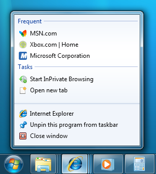
不同于 macOS 的dock菜单，Windows 上的用户任务表现得更像一个快捷方式，比如当用户点击一个任务，一个程序将会被传入特定的参数并且运行。
你可以使用 app.setUserTasks API 来设置你的应用中的用户任务：
const { app } = require('electron')
app.setUserTasks([
{
program: process.execPath,
arguments: '--new-window',
iconPath: process.execPath,
iconIndex: 0,
title: 'New Window',
description: 'Create a new window'
}
])调用 app.setUserTasks 并传入空数组就可以清除你的任务列表：
const { app } = require('electron')
app.setUserTasks([])当你的应用关闭时，用户任务仍然会被显示，因此在你的应用被卸载之前，任务的图标和程序的路径必须是存在的。
缩略图工具栏
在 Windows，你可以在任务栏上添加一个按钮来当作应用的缩略图工具栏。 它为用户提供了一种访问特定窗口命令的方式, 而无需还原或激活该窗口。
在 MSDN，它的说明如下：
此工具栏只是常见的标准工具栏控件。 它最多拥有七个按钮。 每个按钮的 ID、图像、工具提示和状态都定义在结构中, 然后传递给任务栏。 应用程序可以根据其当前状态的要求, 显示、启用、禁用或隐藏缩略图工具栏中的按钮。
例如, Windows 媒体播放机可能提供标准的媒体传输控制, 如播放、暂停、静音和停止。
Windows Media Player 的缩略图工具栏:

你可以使用 BrowserWindow.setThumbarButtons 来设置你的应用的缩略图工具栏。
const { BrowserWindow } = require('electron')
const path = require('path')
const win = new BrowserWindow()
win.setThumbarButtons([
{
tooltip: 'button1',
icon: path.join(__dirname, 'button1.png'),
click () { console.log('button1 clicked') }
}, {
tooltip: 'button2',
icon: path.join(__dirname, 'button2.png'),
flags: ['enabled', 'dismissonclick'],
click () { console.log('button2 clicked.') }
}
])调用 BrowserWindow.setThumbarButtons 并传入空数组即可清空缩略图工具栏：
const { BrowserWindow } = require('electron')
const win = new BrowserWindow()
win.setThumbarButtons([])任务栏中的图标叠加
在 Windows，任务栏按钮可以使用小型叠加层显示应用程序 状态，引用 MSDN 的文档：
图标叠加作为状态的上下文通知, 旨在否定需要一个单独的通知区域状态图标来将该信息传达给用户。 例如, 当前在通知区域中显示的 Microsoft Outlook 中的新邮件状态现在可以通过任务栏按钮上的叠加来表示。 同样, 您必须在开发周期中决定哪个方法最适合您的应用程序。 叠加图标用于提供重要的、长期的状态或通知, 如网络状态、messenger 状态或新邮件。 不应向用户显示不断变化的叠加或动画。
任务栏按钮的叠加:

要设置窗口的叠加层图标，可以使用 BrowserWindow.setOverlayIcon API:
const { BrowserWindow } = require('electron')
let win = new BrowserWindow()
win.setOverlayIcon('path/to/overlay.png', 'Description for overlay')闪烁框
在Windows上，你可以突出显示任务栏按钮以获得用户的关注。 这与在macOS上弹跳停靠栏图标相似。 来自 MSDN 参考文档：
通常, 会闪现一个窗口, 通知用户该窗口需要注意, 但是该窗口当前没有键盘焦点。
要在 BrowserWindow 的任务栏按钮突出显示，可以使用 BrowserWindow.flashFrame API:
const { BrowserWindow } = require('electron')
let win = new BrowserWindow()
win.once('focus', () => win.flashFrame(false))
win.flashFrame(true)不要忘记调用 flashFrame 方法参数为 false 来关闭突出显示。 在上面的示例中, 当窗口进入焦点时会调用它, 但您可能会使用超时或其他一些事件来禁用它。